বাংলাদেশ পল্লী উন্নয়ন একাডেমি (বাডর্), কুমিলল্লা - (সহকারী পরিচালক): ২০২৫
১১টি
সংকলিত
One Bank Ltd - (Special Cadre Officer): 2025
১১টি
সংকলিত
Part 1: প্রামাণ্য ইন্টারেক্টিভ রিভিশন নোট ও সূত্রাবলি
১. পাটিগণিত ও বীজগণিতের গুরুত্বপূর্ণ সূত্র ও শর্টকাট
বিসিএস ও চাকরির পরীক্ষায় গণিত অংশে সময় সাশ্রয়ী শর্টকাট টেকনিক ও নির্ভুল সূত্র প্রয়োগ অত্যন্ত ফলপ্রসূ। পাটিগণিতে শতকরা, লাভ-ক্ষতি, ল.সা.গু-গ.সা.গু ও কাজ-সময়ের নিয়ম এবং বীজগণিতে উৎপাদক ও ধারা নিয়মিত আসে।
বিষয় / অধ্যায়
মৌলিক সূত্র
শর্টকাট কৌশল
মৌলিক সংখ্যা
১ এবং ঐ সংখ্যা ছাড়া অন্য কোনো গুণনীয়ক নেই।
১ থেকে ১০০ পর্যন্ত মোট ২৫টি মৌলিক সংখ্যা: ৪৪২২ ৩২২ ৩২১ (ডায়াল কোড)।
লাভ ও ক্ষতি
লাভ = বিক্রয়মূল্য - ক্রয়মূল্য ক্ষতি = ক্রয়মূল্য - বিক্রয়মূল্য
লাভ বা ক্ষতির শতকরা হার সর্বদা ক্রয়মূল্যের ওপর হিসাব করতে হয়।
পাঁচ অংকের ক্ষুদ্রতম সংখ্যা এবং চার অংকের বৃহত্তম সংখ্যার অন্তর কত?
ব্যাখ্যা ও সঠিক উত্তর দেখুন
সঠিক উত্তর: (গ) ১
ব্যাখ্যা: পাঁচ অঙ্কের ক্ষুদ্রতম সংখ্যা = ১০০০০ এবং চার অঙ্কের বৃহত্তম সংখ্যা = ৯৯৯৯ পাথর্ক্য = (১০০০০ - ৯৯৯৯) = ১।
প্রশ্ন ২প্রাথমিক বিদ্যালয় শিক্ষক নিয়োগ পরীক্ষা: ২০২৬
০, ১, ২, ৩ ও ৪ দ্বারা গঠিত ০৫ অঙ্কের বৃহত্তম ও ক্ষুদ্রতম সংখ্যা যোগ করলে যোগফল কত হবে?
ব্যাখ্যা ও সঠিক উত্তর দেখুন
সঠিক উত্তর: (ক) ৫৩৪৪৪
ব্যাখ্যা: ০, ১, ২, ৩ ও ৪ দ্বারা গঠিত ০৫ অঙ্কের বৃহত্তম সংখ্যা = ৪৩২১০ ০, ১, ২, ৩ ও ৪ দ্বারা গঠিত ০৫ অঙ্কের ক্ষুদ্রতম সংখ্যা = ১০২৩৪ ০৫ অঙ্কের বৃহত্তম ও ক্ষুদ্রতম সংখ্যার যোগফল = ৪৩২১০ + ১০২৩৪ = ৫৩৪৪৪ (উত্তর)
চার অংকের বৃহত্তম ও ক্ষুদ্রতম সংখ্যার পাথর্ক্য কত?
ব্যাখ্যা ও সঠিক উত্তর দেখুন
সঠিক উত্তর: (ঘ) ৮৯৯৯
ব্যাখ্যা: টাইপ-০২: মৌলিক সংখ্যা.
প্রশ্ন ৬১০ম ও ৩৯তম বিসিএস; অথর্ মন্ত্রণালয়-এর (অফিস সহায়ক): ২০২৫
নিচের কোন সংখ্যাটি মৌলিক?
ব্যাখ্যা ও সঠিক উত্তর দেখুন
সঠিক উত্তর: (গ) ৪৭
ব্যাখ্যা: ৯১ = ১৩৭, ১৪৩ = ১৩১১, ৮৭ = ২৯৩, কিন্‧ ৪৭ কে ভেঙ্গে ছোট করা যায় না।
প্রশ্ন ৭বাংলাদেশ ডাক বিভাগের বিভিন্ন পদ: ২০২৬
নিচের কোন সংখ্যাটি মৌলিক?
ব্যাখ্যা ও সঠিক উত্তর দেখুন
সঠিক উত্তর: (ক) ২
ব্যাখ্যা: বাস্ত্মব সংখ্যা যে সংখ্যাকে শুধু ১ এবং ঐ সংখ্যা ছাড়া অন্য কোন সংখ্যা দ্বারা ভাগ করা যায় না সেগুলোকেই মৌলিক সংখ্যা বলে। যেমন: ৫, ১১, ৫৯, ৯৭ ইত্যাদি। ঋনাত্বক সংখ্যা মৌলিক সংখ্যা হতে পারে না এবং মৌলিক সংখ্যা ২ থেকে শুরু হয়। জোড় মৌলিক সংখ্যা = ১টি, সংখ্যাটি হলো ২। ব্যাপ্তি মৌলিক সংখ্যা ব্যাপ্তি মৌলিক সংখ্যা ১-১০ (০৪টি) ২, ৩, ৫, ৭ ১০১-১১০ (০৪টি) ১০১, ১০৩, ১০৭, ১০৯ ১১-২০ (০৪টি) ১১, ১৩, ১৭, ১৯ ১১১-১২০ (০১টি) ১১৩ ২১-৩০ (০২টি) ২৩, ২৯ ১২১-১৩০ (০১টি) ১২৭ ৩১-৪০ (০২টি) ৩১, ৩৭ ১৩১-১৪০ (০৩টি) ১৩১, ১৩৭, ১৩৯ ৪১-৫০ (০৩টি) ৪১, ৪৩, ৪৭ ১৪১-১৫০ (০১টি) ১৪৯ ৫১-৬০ (০২টি) ৫৩, ৫৯ ১৫১-১৬০ (০২টি) ১৫১, ১৫৭ ৬১-৭০ (০২টি) ৬১, ৬৭ ১৬১-১৭০ (০২টি) ১৬৩, ১৬৭ ৭১-৮০ (০৩টি) ৭১, ৭৩, ৭৯ ১৭১-১৮০ (০২টি) ১৭৩, ১৭৯ ৮১-৯০ (০২টি) ৮৩, ৮৯ ১৮১-১৯০ (০১টি) ১৮১ ৯১-১০০ (০১টি) ৯৭ ১৯১-২০০ (০৪টি) ১৯১, ১৯৩, ১৯৭, ১৯৯ ১-১০০ মযন্ত মভৌলরক ংখ্যা- ২৫টি ১০১-২০০ মযন্ত মভৌলরক ংখ্যা- ২১টি। ৪৪২২ ৩২২ ৩২১
প্রশ্ন ৮সামরিক ভূমি ও ক্যান্টনমেন্ট অধিদপ্তর-এর (জুনিয়র শিক্ষক): ২০২৫
নিচের কোন সংখ্যাটি মৌলিক?
ব্যাখ্যা ও সঠিক উত্তর দেখুন
সঠিক উত্তর: (খ) ১৫৩
ব্যাখ্যা: ৩৫ × ৩ = ১০৫; ৭ × ৩ = ২১ এবং ৭ × ১১ = ৭৭।
প্রশ্ন ১১পাওয়ার গ্রিড বাংলাদেশ পিএলসি-এর (নিরাপত্তা প্রহরী): ২০২৫
নিচের কোনটি মৌলিক?
ব্যাখ্যা ও সঠিক উত্তর দেখুন
সঠিক উত্তর: (খ) ৩১
ব্যাখ্যা: ৩১ × ১৩ = ৯৩; ১৯ × ৩ = ৫৭। সুতরাং ৩১ ও ৬১ উভয়ই মৌলিক।
প্রশ্ন ১২ভূমি রেকডর্ ও জরিপ অধিদপ্তর-এর (কপিস্ট-কাম-বেঞ্চ সহকারী): ২০২৫
নিচের কোনটি মৌলিক সংখ্যা নয়?
ব্যাখ্যা ও সঠিক উত্তর দেখুন
সঠিক উত্তর: (খ) ২৫৩
ব্যাখ্যা: ১১ × ২৩ = ২৫৩।
প্রশ্ন ১৩বাংলাদেশ সরকারি কমর্ কমিশন-এর (সহকারী পরিচালক): ২০২৫
৫০০ এর চেয়ে বড় ক্ষুদ্রতম মৌলিক সংখ্যা কোনটি?
ব্যাখ্যা ও সঠিক উত্তর দেখুন
সঠিক উত্তর: (গ) ৫০৩
ব্যাখ্যা: ৫০০-এর চেয়ে বড় ক্ষুদ্রতম মৌলিক সংখ্যাটি বের করার জন্য আমাদের ৫০০-এর পরবতীর্ সংখ্যাগুলো একে একে পরীক্ষা করতে হবে। ৫০১ সংখ্যাটি ৩ দ্বারা বিভাজ্য। তবে ৫০৩ কোন সংখ্যা দ্বারা বিভাজ্য নয়। তাই শুদ্ধ উত্তর: অপশন গ।
ব্যাখ্যা: মৌলিক সংখ্যা সম্পকের্ পরিষ্‥ার ধারণার জন্য উপরের QR কোডটি স্‥্যান করে ভিডিওটি দেখুন। ১ থেকে ৩০ পর্যন্ত মোট মৌলিক সংখ্যা = ৪ + ৪ + ২ = ১০টি। ১ থেকে ৩০ এর মধ্যে মৌলিক সংখ্যা ১০টি- ২, ৩, ৫, ৭, ১১, ১৩, ১৭, ১৯, ২৩, ২৯।
প্রশ্ন ১৫সমন্বিত ৮টি ব্যাংক ও ১টি আর্থিক প্রতিষ্ঠান - (সিনিয়র অফিসার): ২০২৫
How many prime numbers are there between 50 and 60?
ব্যাখ্যা ও সঠিক উত্তর দেখুন
সঠিক উত্তর: (খ) ২
ব্যাখ্যা: ৫৩ থেকে ৬০ এর মধ্যে মৌলিক সংখ্যা রয়েছে ২টি- ৫৩ ও ৫৯।
ব্যাখ্যা: ১১ থেকে ৫০ পর্যন্ত মৌলিক সংখ্যা রয়েছে ১১টি- ১১, ১৩, ১৭, ১৯, ২৩, ২৯, ৩১, ৩৭, ৪১, ৪৩, ৪৭।
প্রশ্ন ১৮খাদ্য অধিদপ্তর – (অফিস সহকারী কাম কম্পিউটার মুদ্রাক্ষরিক): ২০২৫
১ থেকে ২০ পর্যন্ত মৌলিক সংখ্যা কতটি?
ব্যাখ্যা ও সঠিক উত্তর দেখুন
সঠিক উত্তর: (খ) ৮
ব্যাখ্যা: ১ থেকে ২০ পর্যন্ত মৌলিক সংখ্যা রয়েছে ৮টি- ২, ৩, ৫, ৭, ১১, ১৩, ১৭, ১৯। ১ মৌলিক সংখ্যা নয়। কেননা, মৌলিক সংখ্যা হতে হলে কমপক্ষে ২টি ভাজক থাকতে হয়।
প্রশ্ন ১৯পাওয়ার গ্রিড বাংলাদেশ পিএলসি - (স্টেশন এ্যাটেনডেন্ট): ২০২৫
২ থেকে ২০ এর মধ্যে মৌলিক সংখ্যা কয়টি?
ব্যাখ্যা ও সঠিক উত্তর দেখুন
সঠিক উত্তর: (গ) ৮টি
ব্যাখ্যা: ২ থেকে ২০ পর্যন্ত মৌলিক সংখ্যা রয়েছে ৮টি- ২, ৩, ৫, ৭, ১১, ১৩, ১৭, ১৯।
প্রশ্ন ২০পাওয়ার গ্রিড বাংলাদেশ পিএলসি - (জুনিয়র হিসাব সহকারী/ জুনিয়র ব্যক্তিগত সচিব / জুনিয়র প্রশাসনিক সহকারী /জুনিয়র প্রশাসনিক সহকারী কাম ভান্ডার সহকারী/ জুনিয়র নিরাপত্তা পরিদশর্ক): ২০২৫
১ হতে ৫০ এর মধ্যে কয়টি মৌলিক সংখ্যা আছে?
ব্যাখ্যা ও সঠিক উত্তর দেখুন
সঠিক উত্তর: (গ) ১৫টি
ব্যাখ্যা: ১ থেকে ৫০ পর্যন্ত মৌলিক সংখ্যা রয়েছে ১৫টি- ২, ৩, ৫, ৭, ১১, ১৩, ১৭, ১৯, ২৩, ২৯, ৩১, ৩৭, ৪১, ৪৩, ৪৭।
প্রশ্ন ২১অথর্ মন্ত্রণালয় - (অফিস সহায়ক): ২০২৫
৫ থেকে ১১ পর্যন্ত মৌলিক সংখ্যাগুলোর গুণফল কত?
ব্যাখ্যা ও সঠিক উত্তর দেখুন
সঠিক উত্তর: (ঘ) ৩৮৫
ব্যাখ্যা: ৫ থেকে ১১ পর্যন্ত মৌলিক সংখ্যাসমূহ- ৫, ৭, ১১। এদেও গুণফল = ৩৮৫।
১০৫ থেকে ১৩৫ পর্যন্ত সংখ্যার মধ্যবতীর্ ক্ষুদ্রতম ও বৃহত্তম মৌলিক সংখ্যাদ্বয়ের গড় কত?
ব্যাখ্যা ও সঠিক উত্তর দেখুন
সঠিক উত্তর: (ক) ১১৯
ব্যাখ্যা: ১০৭ + ১৩১ ২ = ১১৯ টাইপ-০৩: জোড়-বিজোড় সংখ্যা.
প্রশ্ন ২৩বাংলাদেশ পরমাণু শক্তি কমিশন-এর (সিকিউরিটি অ্যাটেনডেন্ট-২): ২০২৫
m ও n উভয়েই বিজোড় সংখ্যা হলে নিচের কোনটি জোড়?
ব্যাখ্যা ও সঠিক উত্তর দেখুন
সঠিক উত্তর: (খ) mn + 1
ব্যাখ্যা: যে কোন দুটি বিজোড় সংখ্যা গুণ করলে তা অবশ্যই বিজোড় সংখ্যা হবে। বিজোড় সংখ্যার সাথে ১ যোগ করলে তা জোড় সংখ্যা হয়। বিজোড় × বিজোড় (m × n) = বিজোড় + ১ = বিজোড়। জেনে রাখুন জোড় + জোড় = জোড়। যেমন: ২ + ২ = ৪। জোড় × জোড় = জোড়। যেমন: ২ × ২ = ৪। জোড় + বিজোড় = বিজোড়। যেমন: ২ + ৩ = ৫। বিজোড় × জোড় = জোড়। যেমন: ৩ × ২ = ৬। বিজোড় + বিজোড় = জোড়। যেমন: ৩ + ৩ = ৬। বিজোড় × বিজোড় = বিজোড়। যেমন: ৩ × ৩ = ৯।
প্রশ্ন ৩০পাওয়ার গ্রিড বাংলাদেশ পিএলসি - (জুনিয়র হিসাব সহকারী/ জুনিয়র ব্যক্তিগত সচিব / জুনিয়র প্রশাসনিক সহকারী /জুনিয়র প্রশাসনিক সহকারী কাম ভান্ডার সহকারী/ জুনিয়র নিরাপত্তা পরিদশর্ক): ২০২৫
যদি n একটি পূর্ণ সংখ্যা হয়, তবে নিচের কোনটি বিজোড় হতে পারে না?
ব্যাখ্যা ও সঠিক উত্তর দেখুন
সঠিক উত্তর: (গ) 7n+3
ব্যাখ্যা: যেকোন বিজোড় সংখ্যাকে জোড় সংখ্যা দিয়ে গুণ করলে তা অবশ্যই জোড় হবে। ধরা যাক, একটি বিজোড় সংখ্যা = 3। তাহলে, 3 × 2 + 2 = 6 + 2 = 8 (উত্তর) টাইপ-০৪: মূলদ ও অমূলদ সংখ্যা.
প্রশ্ন ৩১৪৭তম বিসিএস
কে দ্বারা ভাগ করলে, নিচের কোনটি সঠিক?
ব্যাখ্যা ও সঠিক উত্তর দেখুন
সঠিক উত্তর: (ক) বিকল্প ১
ব্যাখ্যা: সমাধান: এখানে, = = 1; = 1 =
প্রশ্ন ৩২৪৮তম বিসিএস
√ সংখ্যাটি-
ব্যাখ্যা ও সঠিক উত্তর দেখুন
সঠিক উত্তর: (খ) মূলদ সংখ্যা
ব্যাখ্যা: √ = 3 2 , যা একটি মূলদ সংখ্যা। উল্লেখ্য, মূলদ সংখ্যা হচ্ছে সে সংখ্যা যে সংখ্যাকে দুইটি পূর্ণ সংখ্যার অনুপাত হিসাবে (শূন্য দিয়ে ভাগ করা ছাড়া) প্রকাশ করা যায়। মূলদ সংখ্যা (Rational number): (চেনার উপায়) • 6
প্রশ্ন ৩৩বিভিন্ন মন্ত্রণালয় ও বিভাগ ২০২৫-২০২৬
• 9
ব্যাখ্যা ও সঠিক উত্তর দেখুন
সঠিক উত্তর: (ক) বিকল্প ১
ব্যাখ্যা: এই প্রশ্নের বিশদ তথ্য ও প্রাসঙ্গিক সূত্রাবলি অধ্যায়ের শুরুতে দেওয়া রিভিশন নোট ও স্কেচনোটে অন্তর্ভুক্ত রয়েছে।
প্রশ্ন ৩৪বিভিন্ন মন্ত্রণালয় ও বিভাগ ২০২৫-২০২৬
• 6
ব্যাখ্যা ও সঠিক উত্তর দেখুন
সঠিক উত্তর: (ক) বিকল্প ১
ব্যাখ্যা: এই প্রশ্নের বিশদ তথ্য ও প্রাসঙ্গিক সূত্রাবলি অধ্যায়ের শুরুতে দেওয়া রিভিশন নোট ও স্কেচনোটে অন্তর্ভুক্ত রয়েছে।
প্রশ্ন ৩৫বিভিন্ন মন্ত্রণালয় ও বিভাগ ২০২৫-২০২৬
• 9
ব্যাখ্যা ও সঠিক উত্তর দেখুন
সঠিক উত্তর: (ক) বিকল্প ১
ব্যাখ্যা: এই প্রশ্নের বিশদ তথ্য ও প্রাসঙ্গিক সূত্রাবলি অধ্যায়ের শুরুতে দেওয়া রিভিশন নোট ও স্কেচনোটে অন্তর্ভুক্ত রয়েছে।
প্রশ্ন ৩৬বিভিন্ন মন্ত্রণালয় ও বিভাগ ২০২৫-২০২৬
• • 3 2
ব্যাখ্যা ও সঠিক উত্তর দেখুন
সঠিক উত্তর: (ক) বিকল্প ১
ব্যাখ্যা: এই প্রশ্নের বিশদ তথ্য ও প্রাসঙ্গিক সূত্রাবলি অধ্যায়ের শুরুতে দেওয়া রিভিশন নোট ও স্কেচনোটে অন্তর্ভুক্ত রয়েছে।
প্রশ্ন ৩৭বিভিন্ন মন্ত্রণালয় ও বিভাগ ২০২৫-২০২৬
• 3
ব্যাখ্যা ও সঠিক উত্তর দেখুন
সঠিক উত্তর: (ক) বিকল্প ১
ব্যাখ্যা: এই প্রশ্নের বিশদ তথ্য ও প্রাসঙ্গিক সূত্রাবলি অধ্যায়ের শুরুতে দেওয়া রিভিশন নোট ও স্কেচনোটে অন্তর্ভুক্ত রয়েছে।
প্রশ্ন ৩৮বিভিন্ন মন্ত্রণালয় ও বিভাগ ২০২৫-২০২৬
• 9
ব্যাখ্যা ও সঠিক উত্তর দেখুন
সঠিক উত্তর: (ক) বিকল্প ১
ব্যাখ্যা: এই প্রশ্নের বিশদ তথ্য ও প্রাসঙ্গিক সূত্রাবলি অধ্যায়ের শুরুতে দেওয়া রিভিশন নোট ও স্কেচনোটে অন্তর্ভুক্ত রয়েছে।
প্রশ্ন ৩৯বিভিন্ন মন্ত্রণালয় ও বিভাগ ২০২৫-২০২৬
9 9 • 6
ব্যাখ্যা ও সঠিক উত্তর দেখুন
সঠিক উত্তর: (ক) বিকল্প ১
ব্যাখ্যা: এই প্রশ্নের বিশদ তথ্য ও প্রাসঙ্গিক সূত্রাবলি অধ্যায়ের শুরুতে দেওয়া রিভিশন নোট ও স্কেচনোটে অন্তর্ভুক্ত রয়েছে।
প্রশ্ন ৪০বিভিন্ন মন্ত্রণালয় ও বিভাগ ২০২৫-২০২৬
• 9
ব্যাখ্যা ও সঠিক উত্তর দেখুন
সঠিক উত্তর: (ক) বিকল্প ১
ব্যাখ্যা: এই প্রশ্নের বিশদ তথ্য ও প্রাসঙ্গিক সূত্রাবলি অধ্যায়ের শুরুতে দেওয়া রিভিশন নোট ও স্কেচনোটে অন্তর্ভুক্ত রয়েছে।
প্রশ্ন ৪১বিভিন্ন মন্ত্রণালয় ও বিভাগ ২০২৫-২০২৬
• 6
ব্যাখ্যা ও সঠিক উত্তর দেখুন
সঠিক উত্তর: (ক) বিকল্প ১
ব্যাখ্যা: এই প্রশ্নের বিশদ তথ্য ও প্রাসঙ্গিক সূত্রাবলি অধ্যায়ের শুরুতে দেওয়া রিভিশন নোট ও স্কেচনোটে অন্তর্ভুক্ত রয়েছে।
প্রশ্ন ৪২বিভিন্ন মন্ত্রণালয় ও বিভাগ ২০২৫-২০২৬
• 6
ব্যাখ্যা ও সঠিক উত্তর দেখুন
সঠিক উত্তর: (ক) বিকল্প ১
ব্যাখ্যা: এই প্রশ্নের বিশদ তথ্য ও প্রাসঙ্গিক সূত্রাবলি অধ্যায়ের শুরুতে দেওয়া রিভিশন নোট ও স্কেচনোটে অন্তর্ভুক্ত রয়েছে।
প্রশ্ন ৪৩বিভিন্ন মন্ত্রণালয় ও বিভাগ ২০২৫-২০২৬
মূলদ-অমূলদ সম্পকের্ পরিষ্‥ার ধারণার জন্য পাশের QR কোডটি স্‥্যান করে ভিডিওটি দেখুন। প্রত্যেক পূর্ণ সংখ্যা একটি মূলদ সংখ্যা অথবা, যে সংখ্যাকে দুইটি পূর্ণ সংখ্যার অনুপাত (শূন্য বাদে) হিসেবে প্রকাশ করা যায়, তাকে মূলদ সংখ্যা বলে। অথার্ৎ যে সংখ্যাকে ভগ্নাংশ আকারে প্রকাশ করা যায় তাকেই মূলদ সংখ্যা বলে। যেমন: 5, 2 5 , 5 6 , 1.25, অথবা , এর সবাই মূলদ সংখ্যা। কারণ এদেরকে ভগ্নাংশ আকারে প্রকাশ করা যায়। খেয়াল করুন, 5 কেও ভগ্নাংশ (5 1 ) আকারে প্রকাশ করা যায়। কারণ আমরা জানি, সকল পূর্ণ সংখ্যার নিচে 1 থাকে। সকল পৌনঃপুনিক সংখ্যা মলূদ সংখ্যা। ধনাত্মক সংখ্যা, ঋণাত্মক সংখ্যা, শূন্য, স্বাভাবিক সংখ্যা, প্রকৃত ও অপ্রকৃত ভগ্নাংশ সকলেই মূলদ সংখ্যা। 0 একটি মূলদ সংখ্যা। কারণ, এটিকে 0/1, 0/-2 ইত্যাদি পূর্ণসংখ্যার ভগ্নাংশ হিসাবে লেখা যেতে পারে। যদি দশমিকের পরের পরের ঘরগুলো সসীম হয় অথার্ৎ গণনা করা যায়, তবে সংখ্যাটি হবে মূলদ সংখ্যা। যেমন: 9.54,
ব্যাখ্যা ও সঠিক উত্তর দেখুন
সঠিক উত্তর: (ক) বিকল্প ১
ব্যাখ্যা: এই প্রশ্নের বিশদ তথ্য ও প্রাসঙ্গিক সূত্রাবলি অধ্যায়ের শুরুতে দেওয়া রিভিশন নোট ও স্কেচনোটে অন্তর্ভুক্ত রয়েছে।
প্রশ্ন ৪৪বিভিন্ন মন্ত্রণালয় ও বিভাগ ২০২৫-২০২৬
2456 ইত্যাদি। যেকোন পূর্ণবর্গ সংখ্যার বর্গমূল হলো মূলদ সংখ্যা। যেমন: √ √ কারণ এদের বর্গমুল হবে পূর্ণ সংখ্যা যাদেরকে আবার ভগ্নাংশ আকারে লেখা যায়। আবার কোন সংখ্যার ঘনমূল পূর্ণ সংখ্যা হলে সেটিও মূলদ সংখ্যা। যেমন: √ √ । অমূলদ সংখ্যা (irrational number): যে সংখ্যা মূলদ নয় তাকে অমূলদ (irrational) সংখ্যা বলে। অমূলদ সংখ্যাকে দশমিকে প্রকাশ করলে অসীম কিন্‧ পৌনঃপুনিক হয় না। যেমন √ , √ এগুলোকে দুইটি পূর্ণ সংখ্যার অনুপাতরূপে প্রকাশ করা যায় না। অথার্ৎ দশমিক চিহ্নের পরের অংকগুলো যদি কারও সাথে কারও মিল না থাকে এবং অসীম পর্যন্ত চলতে থাকলে উহা অমূলদ সংখ্যা হয়। যেমন: 3.12546982............ কিছু অমূলদ সংখ্যা = 3.1415……….অসীম √ = 1.414……..অসীম e = 2.718281…… অসীম √ = 1.732 …….অসীম e হলো স্বাভাবিক লগের ভিত্তি। যার মান e = 2.718281... অথার্ৎ এটি একটি অমূলদ ও ধ্রুবক সংখ্যা।
ব্যাখ্যা ও সঠিক উত্তর দেখুন
সঠিক উত্তর: (ক) বিকল্প ১
ব্যাখ্যা: এই প্রশ্নের বিশদ তথ্য ও প্রাসঙ্গিক সূত্রাবলি অধ্যায়ের শুরুতে দেওয়া রিভিশন নোট ও স্কেচনোটে অন্তর্ভুক্ত রয়েছে।
ব্যাখ্যা: পূর্ণবর্গ নয় এমন কোন স্বাভাবিক সংখ্যার বর্গমূলকে অমূলদ সংখ্যা বলে। যেহেতু 3 পূর্ণবর্গ সংখ্যা নয়। সুতরাং √ একটি অমূলদ সংখ্যা। অন্যদিকে, যেকোন পূর্ণবর্গ সংখ্যার বর্গমূল হলো মূলদ সংখ্যা। যেমন: √ = 3, √ = 4, √ = 5।
প্রশ্ন ৪৮বাংলাদেশ সরকারি কমর্ কমিশন-এর (সহকারী পরিচালক): ২০২৫
কোনটি মূলদ সংখ্যা?
ব্যাখ্যা ও সঠিক উত্তর দেখুন
সঠিক উত্তর: (ঘ) √ √
ব্যাখ্যা: অসীম এবং অনাবৃত্ত (Non-repeating) সংখ্যা হলো অমূলদ সংখ্যা। = 3.1415……….অসীম অসীম এবং অনাবৃত্ত (Non-repeating) সংখ্যা √ √ ) = √ = √ = 1 6 ভগ্নাংশ আকারে প্রকাশ করা গেলে সেটি মূলদ সংখ্যা হয়। e = 2.718281….… অসীম 1 √ ) =
প্রশ্ন ৪৯বিভিন্ন মন্ত্রণালয় ও বিভাগ ২০২৫-২০২৬
057735069 …….অসীম
ব্যাখ্যা ও সঠিক উত্তর দেখুন
সঠিক উত্তর: (ক) বিকল্প ১
ব্যাখ্যা: এই প্রশ্নের বিশদ তথ্য ও প্রাসঙ্গিক সূত্রাবলি অধ্যায়ের শুরুতে দেওয়া রিভিশন নোট ও স্কেচনোটে অন্তর্ভুক্ত রয়েছে।
প্রশ্ন ৫০সমন্বিত ব্যাংক সমন্বিত ৮ ব্যাংক ও ১ আর্থিক প্রতিষ্ঠান-এর (অফিসার জেনারেল): ২০২৫
Which of the following is irrational?
ব্যাখ্যা ও সঠিক উত্তর দেখুন
সঠিক উত্তর: (খ) √
ব্যাখ্যা: √ একটি অমূলদ সংখ্যা। অন্যগুলো মূলদ সংখ্যা। 3 5 একটি মূলদ সংখ্যা, কারণ একে দুটি পূর্ণসংখ্যার অনুপাত p q হিসেবে প্রকাশ করা হয়েছে। টাইপ-০৫: ক্রমিক সংখ্যার বর্গের অন্তর.
প্রশ্ন ৫১২২তম বিসিএস; প্রাক-প্রাথমিক সহকারী শিক্ষক নিয়োগ পরীক্ষা: ২০১৫; ১১তম শিক্ষক নিবন্ধন পরীক্ষা (স্‥ুল সমপযার্য়-২): ২০১৪; ৯ম শিক্ষক নিবন্ধন পরীক্ষা (স্‥ুল পযার্য়): ২০১৩; ৭ম বেসরকারি প্রভাষক নিবন্ধন পরীক্ষা: ২০১১; বাংলাদেশ পযর্টন কর্পোরেশন-এর (সহকারী বাণিজ্যিক কর্মকর্তা/ সহকারী প্রশিক্ষণ কর্মকর্তা): ২০২৫
দুইটি ক্রমিক সংখ্যার বর্গের অন্তর ১৯৯ হলে বড় সংখ্যাটি কত?
ব্যাখ্যা ও সঠিক উত্তর দেখুন
সঠিক উত্তর: (ঘ) ১০০
ব্যাখ্যা: দুইটি ক্রলভক ংখ্যায ফর্গয অন্তয = ক্রলভক ংখ্যা দুটিয মমাগপর। ⇒ ১৯৯ = ১০০ + ৯৯ । ফড় ংখ্যাটি = ১০০ (উত্তয) শুদ্ধি পরীক্ষা: ১০০২ – ৯৯২ = ১০০০০ – ৯৮০১ = ১৯৯ লিখিত সমাধান: মনে করি, একটি সংখ্যা x এবং অপর সংখ্যাটি x + ১ শতর্মতে, (x + ১)২ - x২ = ১৯৯; ১৯৯ ১ ২ ২ ২ x x x ; ১৯৯ ১ ২ x ⇒ ১৯৯ ⇒ ১৯৮ ৯৯ একটি সংখ্যা = ৯৯ এবং অপর সংখ্যাটি = ৯৯ + ১ = ১০০
প্রশ্ন ৫২১৮তম শিক্ষক নিবন্ধন পরীক্ষা (স্‥ুল সমপযার্য়-২): ২০২৪
দুটি ক্রমিক সংখ্যার বর্গের অন্তর ১১৯ হলে, ছোট সংখ্যাটি কত?
ব্যাখ্যা ও সঠিক উত্তর দেখুন
সঠিক উত্তর: (খ) ৫৯
ব্যাখ্যা: ৬০ + ৫৯ = ১১৯। টাইপ-০৬: ভাজক সংখ্যা বের করা. একটি সংখ্যাকে যতগুলো সংখ্যা দিয়ে ভাগ করা যায় তাদেরকে ঐ সংখ্যার ভাজক সংখ্যা বলে।
ব্যাখ্যা: প্রথমে ৩৬-কে মৌলিক উৎপাদকে (Prime Factorization) বিশেল্লষণ করতে হবে: ৩৬ = ৪ × ৯ = ২২ × ৩২ ক্রমিক সংখ্যার বর্গের অন্তর সম্পকির্ত অঙ্কসমূহ বুঝতে এই ভিডিওটি দেখুন। এখন, এই ঘাত বা পাওয়ারগুলোর (Power) সাথে ১ যোগ করে গুণ করলেই মোট ভাজক পাওয়া যায়: (২ + ১) × (২ + ১) = ৩ × ৩ = ৯
প্রশ্ন ৫৪২৬তম বিসিএস; বাংলাদেশ আনসার ও গ্রাম প্রতিরক্ষা বাহিনী-এর (সাঁট-লিপিকার কাম-কম্পিউটার অপারেটর, সাঁট- মুদ্রাক্ষরিক কাম-কম্পিউটার অপারেটর, থানা/উপজেলা প্রশিক্ষক, উপজেলা/থানা মহিলা প্রশিক্ষিকা, পেস্টিং সহকারী, প্রুফ রিডার, অফিস সহকারী): ২০২৫; সামরিক ভূমি ও ক্যান্টনমেন্ট অধিদপ্তর-এর (জুনিয়র শিক্ষক): ২০২৫
৭২ সংখ্যাটির মোট ভাজক আছে--
ব্যাখ্যা ও সঠিক উত্তর দেখুন
সঠিক উত্তর: (ঘ) ১২টি
ব্যাখ্যা: ভাজক সংখ্যা বের করার নিয়ম: সবর্প্রথম প্রদত্ত সংখ্যাটিকে ভাঙ্গতে হবে এভাবে ৭২ = ২২২৩৩ তারপর সংখ্যাগুলো পাওয়ার উপরে লিখতে হবে এভাবে ২৩৩২ তারপর প্রতিটি পাওয়ারের সাথে ১ যোগ করে সংখ্যাগুলো বাদ দিয়ে শুধু পাওয়ারগুলো গুণ করে যা আসবে তাই উত্তর। এখানে ২(৩+১)৩ (২+১) = (৩+১) (২+১) (নিচের ২ ও ৩ বাদ দিয়ে উপরের পাওয়ার দুটি গুণ করতে হবে।) = ৪৩ = ১২টি। টাইপ-০৭: যত বড় তত ছোট.
একটি সংখ্যা ৬৫০ থেকে যত বড় ৮২০ থেকে তত ছোট। সংখ্যাটি কত?
ব্যাখ্যা ও সঠিক উত্তর দেখুন
সঠিক উত্তর: (ঘ) ৭৩৫
ব্যাখ্যা: যত তত থাকলে, প্রদত্ত সংখ্যা দুটি যোগ করে ২ দিয়ে ভাগ করলেই উত্তর বের হয়ে যাবে। যেমন: ৬৫০ + ৮২০ ২ = ১৪৭০ ২ = ৭৩৫
প্রশ্ন ৫৬বাংলাদেশ সরকারী কমর্ কমিশন-এর (ব্যক্তিগত কর্মকর্তা): বিভিন্ন মন্ত্রণালয়- ২০২৫
একটি সংখ্যা ৫৬০ থেকে যত বড়, ৮০০ থেকে ঠিক তত ছোট। সংখ্যাটি কত?
ব্যাখ্যা ও সঠিক উত্তর দেখুন
সঠিক উত্তর: (ঘ) 680
ব্যাখ্যা: শটর্কাট: সংখ্যাটি = বড় সংখ্যা + ছোট সংখ্যা ২ = ৮০০ + ৫৬০ ২ = ১৩৬০।
প্রশ্ন ৫৭বাংলাদেশ পরমাণু শক্তি কমিশন-এর (সিকিউরিটি অ্যাটেনডেন্ট-২): ২০২৫
একটি সংখ্যা ৭২০ থেকে যত বড় ৮২০ থেকে তত ছোট সংখ্যটি কত?
ব্যাখ্যা ও সঠিক উত্তর দেখুন
সঠিক উত্তর: (ক) 770
ব্যাখ্যা: শটর্কাট: সংখ্যাটি = বড় সংখ্যা + ছোট সংখ্যা ২ = ৮২০ + ৭২০ ২ = ৭৭০।
প্রশ্ন ৫৮সামরিক ভূমি ও ক্যান্টনমেন্ট অধিদপ্তর-এর (জুনিয়র শিক্ষক): ২০২৫; বাংলাদেশ পরমাণু শক্তি কমিশন-এর (কম্পিউটার টাইপিস্ট): ২০২৫; পাওয়ার গ্রিড বাংলাদেশ পিএলসি-এর (জুনিয়র হিসাব সহকারী/ জুনিয়র ব্যক্তিগত সচিব / জুনিয়র প্রশাসনিক সহকারী /জুনিয়র প্রশাসনিক সহকারী কাম ভান্ডার সহকারী/ জুনিয়র নিরাপত্তা পরিদশর্ক): ২০২৫
একটি সংখ্যা ৩০১ হলে যত বড় ৩৮১ হতে তত ছোট। সংখ্যাটি কত?
ব্যাখ্যা ও সঠিক উত্তর দেখুন
সঠিক উত্তর: (ঘ) 341
ব্যাখ্যা: শটর্কাট: সংখ্যাটি = বড় সংখ্যা + ছোট সংখ্যা ২ = ৩৮১ + ৩০১ ২ = ৩৪১। টাইপ-০৮: বিভিন্ন ক্রমিক সংখ্যার যোগফল.
প্রশ্ন ৫৯৪৬তম বিসিএস
পাঁচটি ধারাবাহিক পূর্ণসংখ্যার গড় হলো ১৫ সবচেয়ে বড় পূর্ণ সংখ্যা কত?
ব্যাখ্যা ও সঠিক উত্তর দেখুন
সঠিক উত্তর: (ক) ১৮
ব্যাখ্যা: বিজোড় সংখ্যাসমূহের গড়ের ক্ষেত্রে মাঝের সংখ্যাটি হয় গড়। ৫টি পূর্ণ সংখ্যার গড়ে ক্ষেত্রে, তৃতীয় সংখ্যাটি হবে গড় = ১৫। সতুরাং সবচেয়ে বড় পূর্ণ সংখ্যা হবে = ১৫ + ২ = ১৭।
প্রশ্ন ৬০১১তম শিক্ষক নিবন্ধন পরীক্ষা (স্‥ুল সমপযার্য়-২): ২০১৪; বাংলাদেশ পরমাণু শক্তি কমিশন - (কম্পিউটার টাইপিস্ট): ২০২৫
দুইটি সংখ্যার যোগফল ১৫ এবং বিয়োগফল ১৩, ছোট সংখ্যাটি কত?
ব্যাখ্যা ও সঠিক উত্তর দেখুন
সঠিক উত্তর: (ক) ১
ব্যাখ্যা: ধরি, বড় সংখ্যাটি = x ও ছোট সংখ্যাটি = y ১ম শতের্ x+y = 15 x-y = 13 (i) ও (ii) নং যোগ করে পাই x+y = 15 x এর মান (i) নং এ বসে পাই x-y = 13 14+y = 15 2x = 28 ⇒ y = 1 ⇒ x = 14 ছোট সংখ্যাটি 1। খুব সহজে সমাধান: সংখ্যা 2টি যথাক্রমে 14 এবং 1। সংখ্যা দুটি যোগফল = 14 + ১ = 15; বিয়োগফল = 14-1 = 13।
প্রশ্ন ৬১নিবার্চন কমিশন সচিবালয়-এর (অফিস সহকারী কাম কম্পিউটার অপারেটর): ২০২৫
দুটি সংখ্যার যোগফল ৬০ এবং বিয়োগফল ২০ হলে সংখ্যা দুটি হবে-
ব্যাখ্যা ও সঠিক উত্তর দেখুন
সঠিক উত্তর: (ক) 40 ও 20
ব্যাখ্যা: বড় সংখ্যা = যোগফল + বিয়োগফল ২ = ৬০ + ২০ ২ = ৪০ ছোট সংখ্যা = যোগফল - বিয়োগফল ২ = ৬০ - ২০ ২ = ২০। উত্তর: সংখ্যা দুটি হলো ৪০ এবং ২০।
প্রশ্ন ৬২বাংলাদেশ পরমাণু শক্তি কমিশন-এর (কম্পিউটার টাইপিস্ট): ২০২৫
দুইটি সংখ্যার যোগফল ১৫, বিয়োগফল ১৩, ছোট সংখ্যাটি কত?
ব্যাখ্যা ও সঠিক উত্তর দেখুন
সঠিক উত্তর: (ক) 1
ব্যাখ্যা: সংখ্যা ২টি যথাক্রমে ১৪ এবং ১। সংখ্যা দুটি যোগফল = ১৪ + ১ = ১৫; বিয়োগফল = ১৪-১ = ১৩।
৬৩০০ সংখ্যাটিকে কত দ্বারা গুণ করলে সংখ্যাটি পূর্ণবর্গ হবে?
ব্যাখ্যা ও সঠিক উত্তর দেখুন
সঠিক উত্তর: (ঘ) ৭
ব্যাখ্যা: কোনো সংখ্যাকে পূর্ণবর্গ করতে হলে প্রথমে তার মৌলিক উৎপাদক (Prime Factorization) বের করতে হয়। যে উৎপাদকটির জোড়া থাকবে না, সেই সংখ্যা দিয়েই গুণ করতে হবে। ৬৩০০ এর মৌলিক উৎপাদক বের করি: ৬৩০০ = ২ × ৩১৫০; ৩১৫০ = ২ × ১৫৭৫; ১৫৭৫ = ৩ × ৫২৫; ৫২৫ = ৩ × ১৭৫; ১৭৫ = ৫ × ৩৫; ৩৫ = ৫ × ৭; উৎপাদকগুলোকে জোড়ায় জোড়ায় সাজাই: ৬৩০০ = (২ × ২) × (৩ × ৩) × (৫ × ৫) × ৭ এখানে দেখা যাচ্ছে যে ২, ৩ এবং ৫ জোড়ায় আছে, কিন্তু ৭ সংখ্যাটির কোনো জোড়া নেই। যেহেতু ৭-এর কোনো জোড়া নেই, তাই সংখ্যাটিকে পূর্ণবর্গ করতে হলে আরও একটি ৭ দিয়ে গুণ করতে হবে। উত্তর: ৬৩০০ সংখ্যাটিকে ৭ দ্বারা গুণ করলে এটি পূর্ণবর্গ হবে। যাচাই: ৬৩০০ × ৭ = ৪৪১০০ = √৪৪১০০ = ২১০; যা একটি পূর্ণবর্গ সংখ্যা।
প্রশ্ন ৬৫বাংলাদেশ নৌবাহিনী - (অদক্ষ শ্রমিক): ২০২৫
17 × 19?
ব্যাখ্যা ও সঠিক উত্তর দেখুন
সঠিক উত্তর: (গ) 323
ব্যাখ্যা: ii i
প্রশ্ন ৬৬জাতীয় রাজস্ব বোর্ড - (অফিস সহায়ক): ২০২৫
4×5×1×0×6=?
ব্যাখ্যা ও সঠিক উত্তর দেখুন
সঠিক উত্তর: (খ) 0
ব্যাখ্যা: 4×5×1×0×6 = 0 [যেকোন সংখ্যাকে 0 দ্বারা গুণ করলে সেই সংখ্যাটি 0 হয়।]
প্রশ্ন ৬৭উপানুষ্ঠানিক শিক্ষা ব্যুরো - (অফিস সহকারী-কাম-কম্পিউটার মুদ্রাক্ষরিক): ২০২৫
তিনটি ক্রমিক বিজোড় পূর্ণসংখ্যার প্রথমটির তিন গুণ তৃতীয় সংখ্যাটির দ্বিগুণের থেকে ৩ বেশি। তৃতীয় সংখ্যাটি কত?
পরপর চারটি সংখ্যার গুণফল ৩৬০ হলে, তাদের যোগফল কত হবে?
ব্যাখ্যা ও সঠিক উত্তর দেখুন
সঠিক উত্তর: (গ) ১৮
ব্যাখ্যা: প্রথমে গুণফল ২১০-এর কাছাকাছি একটি পূর্ণ ঘনসংখ্যা (Perfect Cube) চিন্তা করুন। আমরা জানি, ৫৩ = ১২৫ এবং ৬৩ = ২১৬। যেহেতু ২১০ সংখ্যাটি ২১৬-এর খুব কাছে, তাই মাঝখানের সংখ্যাটি অবশ্যই ৬ বা তার আশেপাশে হবে। এখন পরীক্ষা করে দেখি: ৫ × ৬ × ৭ = ২১০। সুতরাং, সংখ্যা তিনটি হলো ৫, ৬ এবং ৭। তাদের যোগফল = ৫ + ৬ + ৭ = ১৮।
প্রশ্ন ৭০ভূমি রেকডর্ ও জরিপ অধিদপ্তর - (কপিস্ট-কাম-বেঞ্চ সহকারী): ২০২৫; বাংলাদেশ পযর্টন কর্পোরেশন - (হিসাবরক্ষক): ২০২৫
পরপর তিনটি সংখ্যার গুণফল ২১০ হলে, তাদের যোগফল কত হবে?
দুই অঙ্কবিশিষ্ট কোন সংখ্যার অঙ্কদ্বয়ের সমষ্টির সাথে ৭ যোগ করলে যোগফল দশক স্থানীয় অঙ্কটির তিনগুণ হয়। কিন্তু সংখ্যাটি থেকে ১৮ বাদ দিলে অঙ্কদ্বয় স্থান পরিবতর্ন করে। সংখ্যাটি কত?
ব্যাখ্যা ও সঠিক উত্তর দেখুন
সঠিক উত্তর: (ঘ) 53
ব্যাখ্যা: অপশন টেস্টের মাধ্যমে এই ধরনের অঙ্ক সহজে সমাধান করা যায়: প্রথম শতর্ টেস্ট: দুই অঙ্কবিশিষ্ট সংখ্যার সাথে ৭ যোগ করলে দশক স্ ানীয় অঙ্কটির তিনগুণ হয়। ৫ + ৩ + ৭ = ১৫ ÷ ৫ দ্বিতীয় শতর্ টেস্ট: সংখ্যাটি থেকে ১৮ বাদ দিলে অঙ্কদ্বয় স্ ান পরিবতর্ন করবে। ৫৩ ১৮ = ৩৫ (স্ ান পরিবতর্ন করল)
দুইটি সংখ্যার সমষ্টি ৭৫। বৃহত্তম সংখ্যার এক এক তৃতীয়াংশ ৩০ অপেক্ষা যত কম ক্ষুদ্রতম সংখ্যাটির চারগুণ ৫০ অপেক্ষা তত বেশি। সংখ্যা দুইটি কত?
ব্যাখ্যা ও সঠিক উত্তর দেখুন
সঠিক উত্তর: (খ) 60,15
ব্যাখ্যা: অপশন টেস্ট: সংখ্যা দুটির যোগফল: ৬০ + ১৫ = ৭৫ (সঠিক) ৬০ এর এক-তৃতীয়াংশ ২০, যা ৩০ থেকে ১০ কম। ১৫ এর চারগুণ ৬০, যা ৫০ থেকে ১০ বেশি। (উভয় ক্ষেত্রে ব্যবধান ১০)।
A two-digit number is 7 times the sum of its digits. The number that is formed by reversing its digits is 36 less than the original number. What is the number?
ব্যাখ্যা ও সঠিক উত্তর দেখুন
সঠিক উত্তর: (খ) 84
ব্যাখ্যা: ধরি, সংখ্যাটির এককের ঘরের অঙ্কটি = y এবং দশকের ঘরের অঙ্কটি = x। সুতরাং, সংখ্যাটি হবে = 10x + y. প্রথম শতর্মতে, 10x + y = 7 (x + y) বা, 10x + y = 7x + 7y বা, 3x = 6y ⸫ x = 2y …………(i) দ্বিতীয় শতর্মতে, (10x + y) - (10y + x) = 36 বা, 10x - x + y - 10y = 36 বা, 9x - 9y = 36 বা, (x - y) = 36 ⸫ x - y = 4 …………...…(ii) (i) নং সমীকরণের x এর (ii) নং সমীকরণে বসিয়ে পাই: 2y - y = 4 ⸫ y = 4; সুতরাং x = 2 × 4 = 8 দশকের অঙ্ক 8 এবং এককের অঙ্ক 4 হলে সংখ্যাটি হবে 84। (উত্তর) টাইপ-১১: বিভাজ্য সংখ্যা বের করা-
প্রশ্ন ৮৫One Bank Ltd- (Special Cadre Officer): 2025
There are _____ numbers between 100 to 400 which are divisible by 11.
ব্যাখ্যা ও সঠিক উত্তর দেখুন
সঠিক উত্তর: (খ) 27
ব্যাখ্যা: বিভাজ্য সংখ্যা = ৪০০-১০০ ১১ = ২৭.২৭ অথার্ৎ ২৭টি।
প্রশ্ন ৮৬৪৬তম বিসিএস
১ হতে বড় ১০০০ এর মধ্যে কতগুলো সংখ্যা আছে যারা ১৬ দ্বারা বিভাজ্য নয় কিন্তু ৩০ দ্বারা বিভাজ্য?
ব্যাখ্যা ও সঠিক উত্তর দেখুন
সঠিক উত্তর: (ক) ৩৩
ব্যাখ্যা: ৩০ ) ১০০০ (৩৩ ৯০ ১০০ ৯০ ১০ - টাইপ-১২: নিদির্ষ্ট সীমায় বিভিন্ন সংখ্যার সংখ্যা নিণর্য়-
প্রশ্ন ৮৭বাংলাদেশ আনসার ও গ্রাম প্রতিরক্ষা বাহিনী - (সাঁট-লিপিকার কাম-কম্পিউটার অপারেটর,সাঁট-মুদ্রাক্ষরিক কাম- কম্পিউটার অপারেটর,থানা/উপজেলা প্রশিক্ষক,উপজেলা/থানা মহিলা প্রশিক্ষিকা,পেস্টিং সহকারী,প্রুফ রিডার, অফিস সহকারী): ২০২৫
১ থেকে ১০০ পর্যন্ত ৯ বিশিষ্ট সংখ্যা কয়টি?
ব্যাখ্যা ও সঠিক উত্তর দেখুন
সঠিক উত্তর: (খ) 20টি
ব্যাখ্যা: 1 থেকে 100 পর্যন্ত 9 বিশিষ্ট সংখ্যা = 20 টি (9, 19, 29, 39, 49, 59, 69, 79, 89, 90, 91, 92, 93, 94, 95, 96, 97, 98, 99)।
১ থেকে ১০০ পর্যন্ত গণনার সময় কতবার '৯' অংকটি আসবে?
ব্যাখ্যা ও সঠিক উত্তর দেখুন
সঠিক উত্তর: (গ) 20
ব্যাখ্যা: ১ থেকে ১০০ পর্যন্ত গণনার সময় ৯ আসে মোট ২০ বার। যথা: ৯, ১৯, ২৯, ৩৯, ৪৯, ৫৯, ৬৯, ৭৯, ৮৯, ৯০, ৯১, ৯২, ৯৩, ৯৪, ৯৫, ৯৬, ৯৭, ৯৮, ৯৯।
প্রশ্ন ৮৯সমন্বিত ৮টি ব্যাংক ও ১টি আর্থিক প্রতিষ্ঠান - (সিনিয়র অফিসার): ২০২৫
If you write down all the numbers from 1 to 100, then how many times do you write 5?
ব্যাখ্যা ও সঠিক উত্তর দেখুন
সঠিক উত্তর: (গ) 20
ব্যাখ্যা: ২ ১৬, ৩০ ২ ৮, ১৫ ১৬, ৩০ এর ল.সা.গু = ২ × ৮ × ১৫ = ২৪০ ২৪০) ১০০০ (৪ ৯৬০ ৪০ ১৬ দ্বারা বিভাজ্য নয় কিন্‧ ৩০ দ্বারা বিভাজ্য সংখ্যা = ৩৩-৪ = ২৯টি। ১ থেকে ১০০ পর্যন্ত গণনার সময় ৫ আসে মোট ২০ বার। যথা: ৫, ১৫, ২৫, ৩৫, ৪৫, ৫০, ৫১, ৫২, ৫৩, ৫৪, ৫৫, ৫৬, ৫৭, ৫৮, ৫৯, ৬৫, ৭৫, ৮৫, ৯৫। টাইপ-১৩: বিবিধ সমস্যার সমাধান-
প্রশ্ন ৯০দুনীির্ত দমন কমিশন - (অফিস সহায়ক): ২০২৫
দুইটি সংখ্যার যোগফল ১০০ এবং বিয়োগফল ২০ হলে, সংখ্যা দুইটি কত?
ব্যাখ্যা ও সঠিক উত্তর দেখুন
সঠিক উত্তর: (ক) 60, 40
ব্যাখ্যা: যখন দুটি সংখ্যার যোগফল এবং বিয়োগফল দেওয়া থাকে, তখন সংখ্যা দুটি বের করার নিয়ম হলো: বড় সংখ্যাটি বের করতে: সংখ্যা দুটি যোগ করে 2 দিয়ে ভাগ। ছোট সংখ্যাটি বের করতে: সংখ্যা দুটি বিয়োগ করে ২ দিয়ে ভাগ। বড় সংখ্যা = 100 + 20 2 = 60; ছোট সংখ্যা = ।
নিচের কোন সংখ্যাটি ১৪৮ এর মৌলিক গুণনীয়কগুলোর যোগফল?
ব্যাখ্যা ও সঠিক উত্তর দেখুন
সঠিক উত্তর: (গ) 39
ব্যাখ্যা: ১৪৮-কে ক্ষুদ্রতম মৌলিক সংখ্যা দিয়ে ভাগ করা শুরু করি: 148 ÷ 2 = 74; 74 ÷ 2 = 37; 37 একটি মৌলিক সংখ্যা (একে আর ভাগ করা যায় না)। সুতরাং, 148 এর মৌলিক উৎপাদকগুলো হলো: 2, 2, 37। মৌলিক গুণনীয়কগুলোর যোগফল: কোনো সংখ্যার মৌলিক গুণনীয়ক বা উৎপাদক বলতে সেই স্বতন্ত্র (unique) মৌলিক সংখ্যাগুলোকে বোঝায় যা দিয়ে সংখ্যাটি গঠিত। এখানে মৌলিক গুণনীয়কগুলো হলো 2 এবং 37। অতএব, মৌলিক গুণনীয়কগুলোর যোগফল হবে: 2 + 37 = 39 (উত্তর)
প্রশ্ন ৯৯ঢাকা ইলেকট্রিক সাপল্লাই কোম্পানি লিমিটেড (DESCO) - উপ-সহকারী প্রকৌশলী (ইলেকট্রিক্যাল, মেকানিক্যাল ও কম্পিউটার): ২০২৫
a-c = 2, abc - cba =? যেখানে a, b, c পূর্ণসংখ্যা, যেমন a = 1, b = 2, c = 3.
ব্যাখ্যা ও সঠিক উত্তর দেখুন
সঠিক উত্তর: (খ) 198
ব্যাখ্যা: যেকোনো তিন অংকের সংখ্যা abc কে আমরা এভাবে লিখতে পারি: abc = 100a + 10b + c একইভাবে, সংখ্যাটি উল্টে দিলে হয় cba: অতএব, cba = 100c + 10b + a এখন আমাদের বের করতে হবে তাদের পাথর্ক্য: abc - cba = (100a + 10b + c) - (100c + 10b + a) abc - cba = 100a + 10b + c - 100c - 10b - a এখানে +10b এবং -10b কাটাকাটি চলে যায়। abc - cba = 99a - 99c বা, abc - cba = 99(a - c) মান বসিয়ে: প্রশ্নে দেওয়া আছে, a - c = 2। সুতরাং, abc - cba = 99 × 2 = 198
প্রশ্ন ১০১সামরিক ভূমি ও ক্যান্টনমেন্ট অধিদপ্তর (জুনিয়র শিক্ষক): ২০২৫
১২৫ সংখ্যাকে কত দিয়ে গুণ করলে সংখ্যাটি পূর্ণবর্গ সংখ্যা হবে?
ব্যাখ্যা ও সঠিক উত্তর দেখুন
সঠিক উত্তর: (ঘ) 5
ব্যাখ্যা: 125 × 5 = 625 = 252.
প্রশ্ন ১০২Standard Bank Plc - (Trainee Assistant Officer): 2025
If
ব্যাখ্যা ও সঠিক উত্তর দেখুন
সঠিক উত্তর: (ক) 48
ব্যাখ্যা: এই ধরণের অংক সমাধান করার জন্য আমাদের xy এর সবোর্চ্চ সীমা বের করতে হয়। x এর মান: x এর মান 0 থেকে 4 এর মধ্যে যেকোনো সংখ্যা হতে পারে (0 এবং 4 সহ)। 0 x 4 y এর মান: y এর মান ১২ এর চেয়ে ছোট যেকোনো সংখ্যা হতে পারে। y < 12 যদি আমরা x এবং y এর সবোর্চ্চ মানগুলো গুণ করি, তবে xy এর সীমা পাওয়া যাবে: xy = 4 × 12 = 48 যেহেতু y এর মান ঠিক 12 নয় (12 এর চেয়ে ছোট), তাই xy এর মান অবশ্যই 48 এর চেয়ে ছোট হতে হবে। অথার্ৎ, xy < 48।
প্রশ্ন ১০৩বাংলাদেশ পরমাণু শক্তি কমিশন-এর (কম্পিউটার টাইপিস্ট): ২০২৫
পানিভতির্ একটি বালতির ওজন ১২ কেজি। বালতির অধের্ক পানিভতির্ হলে তার ওজন ৭ কেজি। খালি বালতির ওজন কত?
ব্যাখ্যা ও সঠিক উত্তর দেখুন
সঠিক উত্তর: (ক) 2 কেজি
ব্যাখ্যা: বালতির ওজন = ২ কেজি। অধের্ক পানিভতির্ বালতির ওজন ৭ হলে সেখানে পানি আছে ৭-২ = ৫ কেজি। তাহলে পুরো বালতির ওজন হবে = ৭ + ৫ = ১২ কেজি।
প্রশ্ন ১০৫উপানুষ্ঠানিক শিক্ষা ব্যুরো-এর (অফিস সহায়ক): ২০২৫
একটি সংখ্যাকে ১১৪ দিয়ে ভাগ করলে ভাগশেষ ২১ থাকে। যদি ঐ সংখ্যাটিকে ১৯ দিয়ে ভাগ করা হয়, তবে ভাগশেষ কত হবে?
ব্যাখ্যা ও সঠিক উত্তর দেখুন
সঠিক উত্তর: (খ) 2
ব্যাখ্যা: ধরি, সংখ্যাটি = x। প্রশ্নমতে, সংখ্যাটি ১১৪ দিয়ে ভাগ করলে ভাগশেষ ২১ থাকে। তাহলে, x = (১১৪ ÷ k) + ২১ (যেখানে k যেকোনো পূর্ণসংখ্যা)। এখন এই সংখ্যাটিকে ১৯ দিয়ে ভাগ করলে: (১১৪ × k) + ২১ ১৯ আমরা জানি, ১১৪ সংখ্যাটি ১৯ দিয়ে নিঃশেষে বিভাজ্য (১৯ × ৬ = ১১৪)। যেহেতু ১১৪ অংশটি ১৯ দিয়ে পুরোপুরি বিভাজ্য, তাই ভাগশেষ নিভর্র করবে শুধুমাত্র ২১-এর ওপর। ২১ ১৯ ; অতএব, ভাগশেষ = ২
প্রশ্ন ১০৬Exim Bank Ltd – (Trainee Officer): 2025
If n is a positive integer and n2 is divisible by 72, then what is the largest positive integer that must be a factor of n?
ব্যাখ্যা ও সঠিক উত্তর দেখুন
সঠিক উত্তর: (খ) 12
ব্যাখ্যা: ৭২-কে ভেঙে পাই: ২ × ২ × ২ × ৩ × ৩। n২ হতে হলে জোড়ায় জোড়ায় থাকতে হবে। এখানে ২-এর একটি জোড়া আছে, কিন্‧ একটি ২ একা। তাই আরেকটি ২ গুণ করতে হবে। ৩-এর একটি জোড়া আছে। অথার্ৎ n২ -কে অন্তত (২ × ২ × ২ × ২) × (৩ × ৩) হতে হবে। তাহলে n হবে = ২ × ২ × ৩ = ১২ (উত্তর)
ব্যাখ্যা: এই প্রশ্নের বিশদ তথ্য ও প্রাসঙ্গিক সূত্রাবলি অধ্যায়ের শুরুতে দেওয়া রিভিশন নোট ও স্কেচনোটে অন্তর্ভুক্ত রয়েছে।
প্রশ্ন ১০৮Janata Bank PLC - (Officer): 2025
The sum of four consecutive multiples of 4 is 200. What is the largest number?
ব্যাখ্যা ও সঠিক উত্তর দেখুন
সঠিক উত্তর: (গ) 56
ব্যাখ্যা: ৪টি ক্রমিক ৪-এর গুণিতকের যোগফল ২০০। গড় = ২০০ / ৪ = ৫০। যেহেতু সংখ্যাগুলো ৪-এর গুণিতক এবং গড় ৫০ (যা ৪-এর গুণিতক নয়), সেহেতু সংখ্যাগুলো হবে ৫০-এর ঠিক আগে ও পরের ৪-এর গুণিতকগুলো: ৪৪, ৪৮, ৫২, ৫৬; এখানে বৃহত্তম সংখ্যাটি হলো ৫৬।
প্রশ্ন ১০৯প্রাণিসম্পদ অধিদপ্তর - (অফিস সহকারী কাম কম্পিউটার মুদ্রাক্ষরিক): ২০২৫
কোনটি সঠিক?
ব্যাখ্যা ও সঠিক উত্তর দেখুন
সঠিক উত্তর: (খ) ভাজ্য = ভাজক × ভাগফল + ভাগশেষ
ব্যাখ্যা: এই প্রশ্নের বিশদ তথ্য ও প্রাসঙ্গিক সূত্রাবলি অধ্যায়ের শুরুতে দেওয়া রিভিশন নোট ও স্কেচনোটে অন্তর্ভুক্ত রয়েছে।
প্রশ্ন ১১০উপানুষ্ঠানিক শিক্ষা ব্যুরো - (অফিস সহকারী- কাম-কম্পিউটার মুদ্রাক্ষরিক): ২০২৫
১০৫৬ এর সাথে সবির্নম্ন কত যোগ করলে যোগফলটি ২৩ দ্বারা সম্পূর্ণভাবে বিভাজ্য হবে?
ব্যাখ্যা ও সঠিক উত্তর দেখুন
সঠিক উত্তর: (ক) 2
ব্যাখ্যা: ১০৫৬ + ২ = ১০৫৮ এবার ১০৫৮-কে ২৩ দিয়ে ভাগ করলে: ১০৫৮ ÷ ২৩ = ৪৬।
প্রশ্ন ১১১প্রাথমিক বিদ্যালয় শিক্ষক নিয়োগ পরীক্ষা: ২০২৬
১ – ০.০৯৯৯ = ?
ব্যাখ্যা ও সঠিক উত্তর দেখুন
সঠিক উত্তর: (ক) ০.৯০০১
ব্যাখ্যা: এই প্রশ্নের বিশদ তথ্য ও প্রাসঙ্গিক সূত্রাবলি অধ্যায়ের শুরুতে দেওয়া রিভিশন নোট ও স্কেচনোটে অন্তর্ভুক্ত রয়েছে।
প্রশ্ন ১১২তথ্য ও যোগাযোগ প্রযুক্তি অধিদপ্তর - (অফিস সহায়ক): ২০২৫
কতজন বালিকাকে ১২৫টি কমলালেবু এবং ১৪৫টি আপেল সমানভাবে ভাগ করে দেওয়া যাবে?
ব্যাখ্যা ও সঠিক উত্তর দেখুন
সঠিক উত্তর: (গ) 5
ব্যাখ্যা: কমলা = 125 টি = ( ) এবং 145 টি আপেল = ( ) ১২৫টি কমলালেবু এবং ১৪৫টি আপেল সমানভাবে ভাগ করে দেওয়া যাবে ৫ জন বালিকাকে। টাইপ-০১: সাধারণ ল.সা.গু নিণয়:
প্রশ্ন ১১৩বিভিন্ন মন্ত্রণালয় ও বিভাগ ২০২৫-২০২৬
একদল গরু প্রতিবার সমান সংখ্যায় ভাগ হয়ে তিন পথে গমন করে, সাত ঘাটে পানি পান করে, নয়টি বৃক্ষের নিচে ঘুমায় এবং বারো জন গোয়ালা সমান সংখ্যক গরুর দুধ দোয়ায়; তাহলে গরুর সংখ্যা কত?
ব্যাখ্যা ও সঠিক উত্তর দেখুন
সঠিক উত্তর: (খ) 252
ব্যাখ্যা: এখানে প্রশ্নে প্রদত্ত সংখ্যাগুলো ৩, ৭, ৯ এবং ১২ দিয়ে প্রতিবার মোট গরুর সংখ্যাকে ভাগ করে গেলে মোট গরুর যে সংখ্যা বের হবে তা পূর্ণ সংখ্যায় আসবে। আর সবগুলো সংখ্যা দিয়ে নি:শেষে বিভাজ্য সংখ্যা আনার জন্য সংখ্যাগুলোর ল.সা.গু বের করতে হবে। ল.সা.গু (লঘিষ্ঠ সাধারণ গুণিতক) ল.সা.গু হলো একাধিক সংখ্যার এমন একটি গুণিতক যাকে প্রতিটি সংখ্যা দ্বারা নিঃশেষে ভাগ করা যায়। যেমন: ৮ এবং ১২ সংখ্যা দুটির ল.সা.গু হবে ২৪, কেননা ২৪ কে ৮ এবং ১২ উভয় সংখ্যা দ্বারাই ভাগ করা যায়। ৮ ও ১২ দিয়ে ৪৮,৭২, ৯৬-- সহ আরো অনেক সংখ্যাকেই নি:শেষে ভাগ করা যায় কিন্‧ এদের মধ্যে সবথেকে ছোট সংখ্যা হলো ২৪। গ.সা.গু (গরিষ্ঠ সাধারণ গুণণীয়ক) গ.সা.গু হলো দুই বা ততোধিক সংখ্যার একটি সাধারণ গুণণীয়ক। অথার্ৎ গ.সা.গু টি হবে প্রদত্ত সংখ্যাগুলোর থেকে ছোট এমন একটি সংখ্যা যা দ্বারা উক্ত সংখ্যা গুলোকে নিঃশেষে ভাগ করা যায় (১ বাদে)। যেমন: ৮ এবং ১২ এর গ.সা.গু হবে ৪ অথার্ৎ ৪ দ্বারা ৮ ও ১২ উভয়কেই ভাগ করা যায়। এক্ষেত্রে একাধিক সংখ্যা দিয়ে ভাগ করা গেলেও বৃহত্তম সংখ্যাটি নিতে হবে। তাই ২ ও ৪ দিয়ে ৮ ও ১২ কে ভাগ করা গেলেও বড় সংখ্যা ৪; তাই গ.সা.গু = ৪।
প্রশ্ন ১১৪বিমান বাংলাদেশ এয়ারলাইন্স লিমিটেড (ট্রাফিক হেলপার): ২০২৪
১৫, ২০, ২৫ এর ল.সা.গু কত?
ব্যাখ্যা ও সঠিক উত্তর দেখুন
সঠিক উত্তর: (ঘ) ৩০০
ব্যাখ্যা: ল.সা.গু-গ.সা.গু 3 3,7,9,12 1, 7, 3, 4 ল.সা.গু = 3 7 3 4 = 252। সুতরাং গরুর সংখ্যা = 252 টি। খুব সহজে ল.সা.গু নিণের্য়র কৌশল ১০ ও ২০ এর ল.সা.গু কত? ১০ ২০ [উপরের দিয়ে নিচের হরকে অথবা, নিচের দিয়ে উপরের লবকে গুণ করে যা পাওয়া যাবে সেটিই ল.সা.গু।] দুইয়ের অধিক সংখ্যার ল.সা.গু নিণের্য়র ক্ষেত্রে নিচের সমাধানটি দেখুন। ১০, ২০, ৩০, ৪০ এর ল.সা.গু কত? এক্ষেত্রে ছোট সংখ্যাগুলো দিয়ে বড় সংখ্যাগুলোকে ভাগ গেলে ছোট সংখ্যাগুলোকে প্রথমে বাদ দিতে হবে। যেমন: ১০ ও ২০ দিয়ে ৪০ কে ভাগ যায়। তাই ১০ ও ২০ বাদ দেয়া যায়। ৩০ ও ৪০ এর ল.সা.গু হবে সংখ্যাগুলোর ল.সা.গু- ৩০ ৪০ [হরকে ৩ দ্বারা অথবা লবকে ৪ দ্বারা গুণ করে ৩০ ও ৪০ এর ল.সা.গু = ১২০] অন্যভাবে, ৩০ ও ৪০ এর ল.সা.গু নিণর্য়: ৩০ দিয়ে ৪০ কে ভাগ না গেল ৪০ কে ২ গুণ/ ৩ গুণ করতে হবে। ৪০ কে ৩ গুণ করলে হয় ১২০, যা ৩০ দিয়েও ভাগ যায়। সুতরাং ৩০ ও ৪০ এর ল.সা.গু = ১২০। ল.সা.গু = ২ ২ ২ ৩ ৫ = ১২০ ১ ২ ৩ ৪ ২ ১০, ২০, ৩০, ৪০ ৫, ১০, ১৫, ২০ ৫, ৫, ১৫, ১০ ২ ১, ১, ৩, ২ ৫ সাধারণ নিয়ম অপশনের যে সংখ্যাটিকে প্রশ্নের সব সংখ্যা দিয়ে ভাগ যাবে, সেটিই হবে ল.সা.গু। খেয়াল করেন, ১৫, ২০, ২৫ দিয়ে শুধু অপশন 'ঘ' কেই ভাগ করা যায়।
কতজন বালককে ১২৫ টি কমলালেবু এবং ১৪৫ টি কলা সমানভাবে ভাগ করে দেয়া যাবে?
ব্যাখ্যা ও সঠিক উত্তর দেখুন
সঠিক উত্তর: (ক) ৫
ব্যাখ্যা: এখানে উত্তরটি এমন একটি সংখ্যা বের করতে হবে যা দিয়ে ১২৫ এবং ১৪৫ উভয়কেই নিঃশেষে ভাগ করা যায়। যা শুধু গ.সা.গু বের করার মাধ্যমেই সম্ভব। ১২৫ এবং ১৪৫ এর গ.সা.গু ৫। সাধারণ গ.সা.গু বের করার দুটি নিয়ম আছে। কিন্‧ সবচেয়ে দ্রুত গ.সা.গু বের করার জন্য নিম্নোক্ত নিয়মটি অনুসরণ করুন। দুটি সংখ্যা থাকলে। যেমন: ১২ এবং ১৮ এর গ.সা.গু কত? এ ধরনের অংকে ছোট সংখ্যা দ্বারা বড় সংখ্যাটি ভাগ করতে হয়। ১২) ১৮ (১ [প্রথমেই ছোট সংখ্যা দিয়ে বড়টিকে ভাগ] ১২ ৬ ) ১২ (২ [প্রাপ্ত ভাগশেষ দিয়ে ঐ ছোট সংখ্যাটিকে ভাগ] ১২ ০০ [যে সংখ্যা দিয়ে ভাগ করলে উত্তর মিলে যাবে সেটিই গ.সা.গু] উত্তর: ৬
ন্যূনতম কতটি আমকে ৪, ৬, ১০ বা ২০ জন বালকের মধ্যে ভাগ করে দেয়া যায়?
ব্যাখ্যা ও সঠিক উত্তর দেখুন
সঠিক উত্তর: (ঘ) 240
ব্যাখ্যা: প্রদত্ত সংখ্যাগুলো হলো: ৪, ৬, ১০, ২০; সংখ্যাগুলোর ল.সা.গু হলো = ৬০; ন্যূনতম আমের সংখ্যা হবে ৬০ এর গুণীতক। প্রশ্নে প্রদত্ত অপশনসমূহের মধ্যে ২৪০ কে ৬০ দ্বারা ভাগ করা যায়। সুতরাং শুদ্ধ উত্তর: ২৪০।
প্রশ্ন ১১৭সমন্বিত ৫ ব্যাংক ও ১ আর্থিক প্রতিষ্ঠান-এর (অফিসার ক্যাশ): ২০২৫
What is the LCM of 12, 15, and 20?
ব্যাখ্যা ও সঠিক উত্তর দেখুন
সঠিক উত্তর: (ক) 60
ব্যাখ্যা: টাইপ-০২: গ.সা.গু-এর সাধারণ নিয়ম- গ.সা.গু নিণের্য়র সহজ কৌশল সহজে গ.সা.গু ও ল.সা.গু বোঝার জন্য এই QR কোডটি দুটি স্‥্যান করে ভিডিও দেখুন। ১৮, ২৪, ৩৪ একইভাবে, বিভিন্ন সংখ্যার গ.সা.গু নিণর্য় করা যায়। ১৮ ও ২৪ কে কমন সবোর্চ্চ বড় সংখ্যা দিয়ে ভাগ করতে হবে। ৬ দিয়ে ১৮ ও ২৪ কে ভাগ করা যায়। ৬ এর চেয়ে বড় কোনো সংখ্যা দ্বারা উভয়কে ভাগ করা যায় না। তাই ১৮ ও ২৪ এর গ.সা.গু ৬। ১৮ ও ২৪ এর গ.সা.গু ৬ দিয়ে ৩৪ কে ভাগ করা যায় না। তাই পুনরায় ৬ এবং ৩৪ এর গ.সা.গু বের করতে হবে। ২ দিয়ে ৬ ও ৩৪ কে ভাগ করা যায়। ২ এর চেয়ে বড় কোনো সংখ্যা দিয়ে ভাগ করা যায় না। তাই ১৮, ২৪ ও ৩৪ এর গ.সা.গু হবে = ২। 2 12, 15, 20 2 6, 15, 10 3 3, 15, 5 5 1, 5, 5 1, 1, 1 নিণের্য় ল.সা.গু = 2 × 2 × 3 × 5 = 6 সহজে ল.সা.গু নিণর্য় = সংখ্যাগুলো (12, 15, 20) মধ্যে সবচেয়ে বড়টিকে (20) ছোট সংখ্যা গুলো দিয়ে ভাগ করতে হয়। যদি ভাগফল নিঃশেষে বিভাজ্য না হয়, তাহলে বড় সংখ্যাটিকে দ্বিগুণ, তিনগুণ, চারগুণ এভাবে বাড়াতে হয়। 20 কে তিনগুণ (60) করলে ছোট সংখ্যাগুলো দ্বারা নিঃশেষে বিভাজ্য হয়। তাই ল.সা.গু = 60 (উত্তর)
কতজন বালকের মধ্যে ১২৫ টি আম ও ১৪৫ টি লিচু সমানভাবে ভাগ করে দেওয়া যাবে?
ব্যাখ্যা ও সঠিক উত্তর দেখুন
সঠিক উত্তর: (গ) 5
ব্যাখ্যা: প্রথমে বড় সংখ্যাটিকে (১৪৫) ছোট সংখ্যাটি (১২৫) দিয়ে ভাগ করি। এরপর প্রাপ্ত ভাগশেষ দিয়ে পূবের্র ভাজককে ভাগ করতে হবে। ১৪৫ ÷ ১২৫ → ভাগফল ১, ভাগশেষ ২০; ১২৫ ÷ ২০ → ভাগফল ৬, ভাগশেষ ৫; ২০ ÷ ৫ → ভাগফল ৪, ভাগশেষ ০; যেহেতু সবের্শষ ৫ দিয়ে ভাগ করার পর কোনো ভাগশেষ থাকেনি, তাই ১২৫ এবং ১৪৫-এর গ.সা.গু হলো ৫। সবোর্চ্চ ৫ জন বালকের মধ্যে আম ও লিচুগুলো সমানভাবে ভাগ করে দেওয়া যাবে।
প্রশ্ন ১১৯বাংলাদেশ ডাক বিভাগের বিভিন্ন পদ: ২০২৬
কতজন শিশুর মধ্যে কোনো ফল না ভেঙ্গে ১১৫টি কমলা এবং ১৩৫টি কলা ভাগ করে নেওয়া যায়?
ব্যাখ্যা ও সঠিক উত্তর দেখুন
সঠিক উত্তর: (ক) ৫
ব্যাখ্যা: যেহেতু সংখ্যা দুটির শেষে '৫' আছে, তাই তারা অবশ্যই ৫ দিয়ে বিভাজ্য। ১১৫ এবং ১৩৫ এর বিয়োগফল = ২০। ২০ এর গুণনীয়কগুলো হলো: ১, ২, ৪, ৫, ১০, ২০। এর মধ্যে ২০, ১০ বা ৪ দিয়ে ১১৫-কে ভাগ করা যায় না। ৫ দিয়ে উভয়কেই ভাগ করা যায়। সুতরাং, সবোর্চ্চ ৫ জন শিশুর মধ্যে এগুলো ভাগ করা যাবে।
প্রশ্ন ১২০পাওয়ার গ্রিড বাংলাদেশ পিএলসি-এর (স্টেশন এ্যাটেনডেন্ট): ২০২৫
১২টি আম, ১৬টি লিচু ও ২৪টি আপেল সবোর্চ্চ কতজনের মধ্যে সমানভাবে ভাগ করে দেয়া যাবে?
ব্যাখ্যা ও সঠিক উত্তর দেখুন
সঠিক উত্তর: (খ) 4 জন
ব্যাখ্যা: ১২,১৬ ও ২৪ এর গ.সা.গু ৪। সুতরাং সঠিক উত্তর: ৪ জন। টাইপ-০৩: কোন নিদির্ষ্ট সংখ্যাকে ভিন্ন ভিন্ন সংখ্যা দ্বারা ভাগ করলে প্রতিক্ষেত্রে অবশিষ্ট বা ভাগশেষ একই হয়
প্রশ্ন ১২১১৭তম বিসিএস; প্রাথমিক বিদ্যালয় সহকারী শিক্ষক নিয়োগ পরীক্ষা: ২০১৯; স্ ানীয় সরকার প্রকৌশল অধিদপ্তর (ইলেক্ট্রিশিয়ান ও সাভের্য়ার): ২০২৪
কোন ক্ষুদ্রতম সংখ্যাকে ৩, ৫ ও ৬ দ্বারা ভাগ করলে ভাগশেষ ১ হবে?
ব্যাখ্যা ও সঠিক উত্তর দেখুন
সঠিক উত্তর: (ক) ৩১
ব্যাখ্যা: ৩, ৫ ও ৬ এর ল.সা.গু = ৩০। ক্ষুদ্রতম সংখ্যাটি = ৩০ + ১ = ৩১।
কোন ক্ষুদ্রতম সংখ্যাকে ৫, ১০, ১৫ দ্বারা ভাগ করলে প্রতিক্ষেত্রে ভাগশেষ ১ হবে-
ব্যাখ্যা ও সঠিক উত্তর দেখুন
সঠিক উত্তর: (ক) ৬১
ব্যাখ্যা: এর ল. সা. গু. সংখ্যাটি টাইপ-০৪: কোন নিদির্ষ্ট সংখ্যা যোগ করলে সংখ্যাটি বিভাজ্য হবে:
প্রশ্ন ১২৪প্রাথমিক বিদ্যালয় সহকারী শিক্ষক (দ্বিতীয় পযার্য়): ২০২৪
কোন লঘিষ্ঠ সংখ্যার সাথে ৩ যোগ করলে যোগফল ২৪, ৩৬ ও ৪৮ দ্বারা বিভাজ্য হবে?
ব্যাখ্যা ও সঠিক উত্তর দেখুন
সঠিক উত্তর: (খ) ১৪১
ব্যাখ্যা: ২৪, ৩৬ ও ৪৮ এর ল.সা.গু. বের করুন। ৪৮ এর ঘরের নামতা পড়লে দেখা যায় ৪৮, ৯৬, ১৪৪। এর মধ্যে ১৪৪ সংখ্যাটি ২৪ (২৪ × ৬) এবং ৩৬ (৩৬ × ৪) উভয় দিয়েই বিভাজ্য। এভাবে বড় সংখ্যাটির গুণিতক পরীক্ষা করে আপনি খুব দ্রুত ল.সা.গু. বের করতে পারেন। যেহেতু প্রশ্নে বলা হয়েছে '৩ যোগ করলে' বিভাজ্য হবে, তাই উত্তর পেতে ল.সা.গু. থেকে ৩ বিয়োগ করতে হবে। সুতরাং ল.সা.গু. = ১৪৪। উত্তর = ১৪৪ - ৩ = ১৪১।
নিচের কোনটি চার অঙ্কের বৃহত্তম সংখ্যা যাকে ৭৭০০ এর সাথে যোগ করলে যোগফল ২২, ২৫, ৩২ দ্বারা নিঃশেষে বিভাজ্য হবে?
ব্যাখ্যা ও সঠিক উত্তর দেখুন
সঠিক উত্তর: (ক) 1100
ব্যাখ্যা: প্রশ্নে 'চার অঙ্কের বৃহত্তম সংখ্যা' বলা হয়েছে। গাণিতিক বিশেল্লষণ অনুযায়ী উত্তরটি ৯৯০০ হওয়ার কথা। কিন্‧ প্রশ্নে দেওয়া অপশনগুলোর (১১০০, ২২০০, ৭৭০০, ৮৮০০) মধ্যে ১১০০-ই একমাত্র সংখ্যা যা যোগ করলে যোগফলটি বিভাজ্য হয়। সাধারণত এই ধরণের প্রশ্নে অপশন অনুযায়ী উত্তর বেছে নিতে হয়। অপশন বিশেল্লষণ: প্রশ্ন অনুযায়ী, ৭৭০০ + অপশন সংখ্যা = ৮৮০০ বা ৮৮০০ এর গুণীতক হতে হবে। টাইপ-০৫: প্রশ্নে উলিল্লখিত কোন সংখ্যার সাথে কোন সংখ্যা (?) যোগ করলে নিঃশেষে বিভাজ্য হবে-
প্রশ্ন ১২৭প্রাথমিক বিদ্যালয় সহকারী শিক্ষক (দ্বিতীয় পযার্য়): ২০২২; বাংলাদেশ ডাক বিভাগ (পোস্ট ম্যান): ২০২৩
১৯৭ এর সাথে কত যোগ করলে সংখ্যাটি ৯, ১৫ এবং ২৫ দ্বারা নিঃশেষে বিভাজ্য হবে?
ব্যাখ্যা ও সঠিক উত্তর দেখুন
সঠিক উত্তর: (খ) ২৮
ব্যাখ্যা: ৯, ১৫ এবং ২৫ এর ল. সা. গু হবে তাহলে, নিণর্য় সংখ্যা অথার্ৎ ১৯৭ এর সাথে যোগ করতে হবে = ২৮।
প্রশ্ন ১২৮খাদ্য অধিদপ্তরে খাদ্য পরিদশর্ক/উপখাদ্য পরিদশর্ক/উচ্চমান সহকারী/অডিটর/সুপারভাইজার: ২০০৪
একটি বাক্সে ২৬০ টি কলম আছে। এর সাথে আরো কমপক্ষে কতগুলো কলম যোগ করলে সেগুলো ৩, ৪ অথবা ৬ জন ছাত্রের মধ্য সমান ভাবে ভাগ করে দেওয়া যাবে?
ব্যাখ্যা ও সঠিক উত্তর দেখুন
সঠিক উত্তর: (খ) ৪টি
ব্যাখ্যা: ৩, ৪ এবং ৬ এর ল.সা.গু = ১২ মোট কলমের সংখ্যা ১২ দ্বারা বিভাজ্য হলে তা ৩, ৪ এবং ৬ জনের মধ্যে ভাগ করে দেয়া যাবে। প্রশ্নে যেহেতু ২৬০টি কলম আছে এবং যোগ করার কথা বলা হয়েছে তাহলে ২৬০ এর পর পরই যে সংখ্যাটিকে ১২ দিয়ে ভাগ করা যাবে সেটি বের করতে হবে। এখন ১২ )২৬০( এর ভাগফল হবে ২১ এবং ভাগশেষ হবে ৮। তাহলে, ১২ দিয়ে ভাগ করার জন্য আরো লাগবে ১২-৮ = ৪টি (অথার্ৎ ৪টি হলে আবার ১২ দিয়ে ভাগ করা যাবে)। উত্তর: ৪টি। টাইপ-০৬: কোন নিদির্ষ্ট সংখ্যাকে একাধিক স্বাভাবিক সংখ্যা দ্বারা ভাগ করলে প্রতিক্ষেত্রে একই সংখ্যা অবশিষ্ট-
প্রশ্ন ১২৯প্রাথমিক সহকারী শিক্ষক নিয়োগ পরীক্ষা- ২০১৯
কোন কোন স্বাভাবিক সংখ্যা দ্বারা ৩৪৬ কে ভাগ করলে প্রতি ক্ষেত্রে ৩১ অবশিষ্ট থাকবে?
ব্যাখ্যা ও সঠিক উত্তর দেখুন
সঠিক উত্তর: (ঘ) ৩৫, ৪৫, ৬৩, ১০৫, ৩১৫
ব্যাখ্যা: যেহেতু প্রতি ক্ষেত্রে ৩১ অবশিষ্ট থাকে, তাই সংখ্যাগুলো অবশ্যই (৩৪৬ - ৩১) = ৩১৫ এর বিভাজ্য বা উৎপাদক হবে। ভাজক সবসময় ভাগশেষের চেয়ে বড় হয়। যেহেতু এখানে ভাগশেষ ৩১, তাই আমাদের এমন সংখ্যাগুলো খুঁজতে হবে যা ৩১৫ এর উৎপাদক এবং ৩১ এর চেয়ে বড়। ৩১৫ কে নিচের সংখ্যাগুলো দিয়ে ভাগ করা যায়: ১, ৩, ৫, ৭, ৯, ১৫, ২১, ৩৫, ৪৫, ৬৩, ১০৫, ৩১৫। শতর্ অনুযায়ী, ভাজক > ৩১ হতে হবে। ৩১৫ এর উৎপাদকগুলোর মধ্যে ৩১ এর চেয়ে বড় সংখ্যাগুলো হলো: ৩৫, ৪৫, ৬৩, ১০৫ এবং ৩১৫। (উত্তর) ৩ ৯, ১৫, ২৫ ৩, ৫, ২৫ ৩, ১, ৫ ৫ টাইপ-০৭: কোন সংখ্যা থেকে কোন সংখ্যা বিয়োগ করলে বিয়োগফল নিঃশেষে বিভাজ্য হবে-
কোন ক্ষুদ্রতম সংখ্যা হতে ১ বিয়োগ করলে বিয়োগফল ৯, ১২ ও ১৫ দ্বারা নিঃশেষে বিভাজ্য হবে?
ব্যাখ্যা ও সঠিক উত্তর দেখুন
সঠিক উত্তর: (ঘ) ১৮১
ব্যাখ্যা: ৯, ১২ ও ১৫ এর ল.সা.গু. ১৮০। ১৮১ থেকে ১ বিয়োগ করলে সংখ্যাটি ৯, ১২ ও ১৫ দ্বারা নিঃশেষে বিভাজ্য হবে।
প্রশ্ন ১৩১প্রধানভন্ত্রীয কামযার ও ভলন্ত্রলযলদ কামযারর্ য প্রালনক কভযকর্যা-২০০৪
তিন অঙ্কের ক্ষুদ্রতম সংখ্যা হতে কোন লঘিষ্ঠ সংখ্যা বিয়োগ করলে বিয়োগফল ৫, ১০, ১৫ দ্বারা বিভাজ্য হবে?
ব্যাখ্যা ও সঠিক উত্তর দেখুন
সঠিক উত্তর: (ক) ১০
ব্যাখ্যা: তিন অঙ্কের ক্ষুদ্রতম সংখ্যা ১০০। এখন ১০০ থেকে সব থেকে ছোট কোন সংখ্যা বিয়োগ করলে তা ৫, ১০ এবং ১৫ দিয়ে ভাগ করা যায় তা বের করতে হবে। এখানে ৫, ১০, ১৫ এর ল.সা.গু ৩০ এখন ৩০ দিয়ে ১০০ কে ভাগ করলে ভাগশেষ ১০ বের হবে। অথার্ৎ ১০০ সংখ্যটিতে ১০ অতিরিক্ত আছে যা বিয়োগ করে দিলে প্রদত্ত সংখ্যাগুলো দিয়ে প্রাপ্ত সংখ্যা ৯০ কে নিঃশেষে ভাগ করা যায়। টাইপ-০৮: দুটি সংখ্যার ল.সা.গু ও গ.সা.গু দুটি সংখ্যার গুণফল = সংখ্যাদ্বয়ের ল.সা.গু গ.সা. গু
প্রশ্ন ১৩২বিভিন্ন মন্ত্রণালয় ও বিভাগ ২০২৫-২০২৬
দুইটি সংখ্যার ল.সা.গু, ৩৬ এবং গ.সা.গু. ০৬। একটি সংখ্যা ১২ হলে অপরটি কত? [প্রাথমিক বিদ্যালয় শিক্ষক নিয়োগ পরীক্ষার প্রশ্ন
ব্যাখ্যা ও সঠিক উত্তর দেখুন
সঠিক উত্তর: (ক) ১৮
ব্যাখ্যা: ২০২৬] সংখ্যা দুটির গুণফল = সংখ্যা দুটির ল.সা.গু × গ.সা.গু। ⸫ অপর সংখ্যাটি = ল.সা.গু × গ.সা.গু একটি সংখ্যা = ৩৬ × ৬ ১২ = ১৮ (উত্তর)
প্রশ্ন ১৩৩প্রাক-প্রাথমিক সহকারী শিক্ষক নিয়োগ পরীক্ষা: ২০১৫; প্রাথমিক বিদ্যালয় সহকারী শিক্ষক নিয়োগ পরীক্ষা- ২০১৯; প্রাক-প্রাথমিক সহকারী শিক্ষক নিয়োগ পরীক্ষা (আলফা): ২০১৪; বাংলাদেশ নৌবাহিনী (অফিস সহকারী কাম কম্পিউটার মুদ্রাক্ষরিক): ২০২৫; বাংলাদেশ পোস্ট বিভাগের বিভিন্ন পদ: ২০২৬
দুটি সংখ্যার গ.সা.গু ও ল.সা.গু. যথাক্রমে ২ ও ৩৬০। একটি সংখ্যা ১০ হলে অপর সংখ্যাটি কত?
ব্যাখ্যা ও সঠিক উত্তর দেখুন
সঠিক উত্তর: (ঘ) ৭২
ব্যাখ্যা: আমরা জানি, ল.সা.গু × গ.সা.গু = সংখ্যা দুটির গুণফল বা, অপর সংখ্যা = ল.সা.গু × গ.সা.গু একটি সংখ্যা = ২ × ৩৬০ ১০ = ৭২ (উত্তর)
প্রশ্ন ১৩৪প্রাক-প্রাথমিক সহকারী শিক্ষক নিয়োগ পরীক্ষা: ২০১৫; বাংলাদেশ পল্লী উন্নয়ন বোর্ড (বিআরডিবি) এর সহকারী পল্লী উন্নয়ন কর্মকর্তা : ২০২৩; ভূমি রেকডর্ ও জরিপ অধিদপ্তর (কপিস্ট কাম বেঞ্চ সহকারী): ২০২৫
দুটি সংখ্যায় গুণফল ১৫৩৬, সংখ্যা দুটির ল.সা.গু. ৯৬ হলে গ.সা.গু. কত?
ব্যাখ্যা ও সঠিক উত্তর দেখুন
সঠিক উত্তর: (গ) ১৬
ব্যাখ্যা: মনে করি, গ.সা.গু = x. আমরা জানি, দুটি সংখ্যার গুণফল = ল.সা.গু গ.সা.গু বা, গ.সা.গু = দুটি সংখ্যার গুণফল ল.সা.গু = ১৫৩৬ ৯৬ = ১৬
প্রশ্ন ১৩৫১৮তম শিক্ষক নিবন্ধন পরীক্ষা (স্‥ুল পযার্য়): ২০২৪
দুইটি দলের সদস্য সংখ্যার ল.সা.গু. ৯০ ও গ.সা.গু. ১৫ হলে উভয় দলের সদস্য মোট কত জন?
ব্যাখ্যা ও সঠিক উত্তর দেখুন
সঠিক উত্তর: (খ) ৭৫
ব্যাখ্যা: ল.সা.গু কে গ.সা.গু দিয়ে ভাগ করে পাই = ৯০ ১৫ = ৬। ভাগফলকে এমন দুটি সংখ্যায় গুণফল হিসেবে ভাঙুন যারা সহ-মৌলিক (অথার্ৎ যাদের নিজেদের মধ্যে ১ ছাড়া কোনো সাধারণ গুণনীয়ক নেই): ৬-কে ভাঙলে পাই: ১ × ৬ = ৬ (সহমৌলিক): ২ × ৩ = ৬ (সহমৌলিক) (সহ-মৌলিক জোড়ার যোগফল) × গ.সা.গু = মোট সংখ্যা সম্ভাবনা-১: (৬ + ১) × ১৫ = ১০৫। সম্ভাবনা-২: (২ + ৩) × ১৫ = ৭৫। [অপশনে এটি থাকায়, সঠিক উত্তর: ৭৫]
দুইটি সংখ্যার অনুপাত ৩ : ৫ এবং তাদের ল.সা.গু ৪৫ হলে, সংখ্যা দুইটি-
ব্যাখ্যা ও সঠিক উত্তর দেখুন
সঠিক উত্তর: (ক) 9, 15
ব্যাখ্যা: ধরি, সংখ্যা দুটি যথাক্রমে 3x ও 5x. অতএব সংখ্যা দুটির ল. সা. গু. = 15x প্রশ্নমতে, 15x = 45 x = 3. অতএব সংখ্যা দুটির গ. সা. গু = 3; অতএব সংখ্যা দুইটি যথাক্রমে = 9, 15 (উত্তর)
প্রশ্ন ১৪৩সমন্বিত ৮টি ব্যাংক ও ১টি আর্থিক প্রতিষ্ঠান - (সিনিয়র অফিসার): ২০২৫
If the ratio of two numbers is 3 : 4 and their least common multiple is 60, then the numbers are-
ব্যাখ্যা ও সঠিক উত্তর দেখুন
সঠিক উত্তর: (ক) 15, 20
ব্যাখ্যা: আমরা জানি, 3x এবং 4x এর লসাগু হলো তাদের সাধারণ ও অসাধারণ গুণনীয়কগুলোর গুণফল। 3 এবং 4 এর লসাগু 12। অতএব, 3x ও 4x এর লসাগু = 12x। প্রশ্নমতে, সংখ্যা দুটির লসাগু 60। অথার্ৎ 12x = 60 বা, x = 60 12 = 5 তাহলে সংখ্যা দুটি যথাক্রমে: 3 × 5 ও 4 × 5 অথার্ৎ 15 ও 20 (উত্তর)
প্রশ্ন ১৪৫পাওয়ার গ্রিড বাংলাদেশ পিএলসি (জুনিয়র হিসাব সহকারী): ২০২৪
দুটি সংখ্যার ল.সা.গু ৭৫ এবং গ.সা.গু ৫। একটি সংখ্যা ১৫ হলে অপর সংখ্যাটি কত?
ব্যাখ্যা ও সঠিক উত্তর দেখুন
সঠিক উত্তর: (খ) ২৫
ব্যাখ্যা: এই প্রশ্নের বিশদ তথ্য ও প্রাসঙ্গিক সূত্রাবলি অধ্যায়ের শুরুতে দেওয়া রিভিশন নোট ও স্কেচনোটে অন্তর্ভুক্ত রয়েছে।
প্রশ্ন ১৪৬বন অধিদপ্তর (অফিস সহায়ক): ২০২৪
দুইটি সংখ্যার ল.সা. গু ১০ এবং গ.সা. গু ৩০। একটি সংখ্যা ২০ হলে অপরটি কত?
ব্যাখ্যা ও সঠিক উত্তর দেখুন
সঠিক উত্তর: (খ) ১৫
ব্যাখ্যা: অপর সংখ্যাটি = ১০ × ৩০ ২০ ১৫ (উত্তর) টাইপ-০৯: অনুপাতের ল.সা.গু-গ.সা.গু- সংখ্যাগুলোর ল.সা.গু = অনুপাতের গুণফল গ.সা. গু অনুপাত দেয়া থাকলে অনুপাত অনুযায়ী ধরতে হবে। এরপর ল.সা.গু দেয়া থাকলে ল.সা.গু বের করতে হবে আবার গ.সা.গু দেয়া থাকলে গ.সা.গু বের করতে হবে।
প্রশ্ন ১৪৭১৮তম শিক্ষক নিবন্ধন পরীক্ষা (স্‥ুল সমপযার্য়-২): ২০২৪
দুটি সংখ্যার অনুপাত ৫ : ৬ এবং তাদের গ.সা.গু ৪ হলে সংখ্যা দুটির ল.সা.গু কত?
ব্যাখ্যা ও সঠিক উত্তর দেখুন
সঠিক উত্তর: (গ) ১২০
ব্যাখ্যা: সংখ্যাগুলোর গ.সা.গু = সংখ্যাগুলোর ল.সা.গু সংখ্যাগুলোর অনুপাতের গুণফল ⸫ সংখ্যাগুলোর ল.সা.গু = সংখ্যাগুলোর গ.সা.গু × সংখ্যাগুলোর অনুপাতের গুণফল = ৪ × ৫ × ৬ = ১২০ (উত্তর)
দুটি সংখ্যার অনুপাত ৫ : ৬ এবং তাদের গ.সা.গু ৮ হলে, ল.সা.গু কত?
ব্যাখ্যা ও সঠিক উত্তর দেখুন
সঠিক উত্তর: (ঘ) ২৪০
ব্যাখ্যা: আমরা জানি, সংখ্যাগুলোর গ.সা.গু = ংখ্যাগগুর্রায র.া.গু ংখ্যাগুর্রায অনুার্র্য গুণপর দুটি সংখ্যার অনুপাত ৫ : ৬ এবং গ.সা.গু ৮ হলে, তার ল.সা.গু হবে = ৫ ৬ ৮ = ২৪০। টাইপ-১০: ভগ্নাংশের ল.সা.গু ও গ.সা.গু- ভগ্নাংশের ল.সা.গু = লবগুলোর ল.সা.গু হরগুলোর গ.সা.গু ভগ্নাংশের গ.সা.গু = ল.সা.গু লার গুে হর গ.সা.গু লার গুে লব
প্রশ্ন ১৫১৫০তম বিসিএস
২ ৫, ৩ ৫ ও ৬ ১৫ ভগ্নাংশগুলোর লঘিষ্ঠ সাধারণ গুণিতক হবে-
কোন সংখ্যার ৬০% থেকে ৬০ বিয়োগ করলে ফলাফল হবে ৬০। তবে সংখ্যাটি কত?
ব্যাখ্যা ও সঠিক উত্তর দেখুন
সঠিক উত্তর: (গ) ২০০
ব্যাখ্যা: ৬০% থেকে ৬০ বিয়োগ করে বিয়োগফল ৬০ হলে বিয়োগ করার আগে ছিল ৬০ + ৬০ = ১২০। x এর ৬০%-৬০ = ৬০; x এর ৬০ ১০০ -৬০ = ৬০; ৬০x-৬০০০ = ৬০০০; ৬০x = ৬০০০ + ৬০০০ x = ১২০০০ ৬০ ⸫ x = ২০০ (উত্তর)
প্রশ্ন ১৫৯প্রাথমিক বিদ্যালয় সহকারী শিক্ষক (কপোতাক্ষ): ২০১০; নদার্ন ইলেকট্রিসিটি সাপল্লাই কোম্পানি পিএলসি-এর সহকারী শিক্ষক (মাধ্যমিক): ২০২৪
০.৪ -কে শতকরায় প্রকাশ করলে কত হবে?
ব্যাখ্যা ও সঠিক উত্তর দেখুন
সঠিক উত্তর: (ঘ) ৪০%
ব্যাখ্যা: ০.৪ = ১০ ৪ = ১০ ১০ ১০ ৪ = ১০০ ৪০ = ১০০ ১ ৪০ = ৪০% [শতকরা বের করতে বলায় হরকে ১০০ করতে হবে।] [শটর্কাট: ০.৪ ১০০ = ৪০%; নিয়ম: দশমিক সংখ্যাকে শতকরা বানাতে হলে দশমিক সংখ্যাটিকে ১০০ দিয়ে গুণ করে % লাগিয়ে দিলেই হবে।]
প্রশ্ন ১৬০প্রাথমিক বিদ্যালয় সহকারী শিক্ষক- ২০২২ (প্রথম পযার্য়); বাংলাদেশ নৌবাহিনী (অফিস সহকারী কাম কম্পিউটার মুদ্রাক্ষরিক): ২০২৫
৪৮ সংখ্যাটি কোন সংখ্যার ৮০%?
ব্যাখ্যা ও সঠিক উত্তর দেখুন
সঠিক উত্তর: (খ) ৬০
ব্যাখ্যা: ধরি, সংখ্যাটি = ক; প্রশ্নমতে, ক এর ৮০% = ৪৮ হলে ক = ৪৮ ১০০ ৮০ = ৬০ (উত্তর) অথবা, ৮০% = ৪৮ (৫ ভাগের ৪ ভাগ) হলে ১০০% = ৬০ (মোট ৫ ভাগ)।
প্রশ্ন ১৬১১২তম শিক্ষক নিবন্ধন পরীক্ষা (স্‥ুল সমপযার্য়-২): ২০১৫; বাংলাদেশ পরমাণু শক্তি কমিশন - (অফিস সহকারী কাম-কম্পিউটার টাইপিস্ট): ২০২৫
৯০ কোন সংখ্যার ৭৫%?
ব্যাখ্যা ও সঠিক উত্তর দেখুন
সঠিক উত্তর: (ক) ১২০
ব্যাখ্যা: ধরি, সংখ্যাটি = x. প্রশ্নমতে, x এর 75% = 90 x 3 3
প্রশ্ন ১৬২১৮তম শিক্ষক নিবন্ধন পরীক্ষা (স্‥ুল পযার্য়): ২০২৪
একটি লাঠির মোট ঙ্দঘের্যর ৪০% এর সাথে ৪৫ মিটার যোগ করলে সম্পূর্ণ লাঠির ঙ্দঘ্যর্ পাওয়া যায়। লাঠিটির ঙ্দঘ্যর্ কত?
ব্যাখ্যা ও সঠিক উত্তর দেখুন
সঠিক উত্তর: (গ) ৭৫ মিটার
ব্যাখ্যা: ধরি, লাঠিটির ঙ্দঘর্য = x মিটার। প্রশ্নমতে, x এর 40% + 45 = x বা, 0.4x + 45 = x বা, 0.6x = 45 ⸫ x = 45
প্রশ্ন ১৬৩বিভিন্ন মন্ত্রণালয় ও বিভাগ ২০২৫-২০২৬
6 =45 × 100 60 = 75 মিটার।
ব্যাখ্যা ও সঠিক উত্তর দেখুন
সঠিক উত্তর: (ক) বিকল্প ১
ব্যাখ্যা: এই প্রশ্নের বিশদ তথ্য ও প্রাসঙ্গিক সূত্রাবলি অধ্যায়ের শুরুতে দেওয়া রিভিশন নোট ও স্কেচনোটে অন্তর্ভুক্ত রয়েছে।
প্রশ্ন ১৬৪বস্ত্র অধিদপ্তর (অফিস সহায়ক): ২০২৪
৪ ৫ কে শতকরায় প্রকাশ করলে নিচের কোনটি হয়?
ব্যাখ্যা ও সঠিক উত্তর দেখুন
সঠিক উত্তর: (গ) ৮০%
ব্যাখ্যা: ৪ ৫ × ১০০ = ৮০ ভাগ। (শটর্কাট: ৪ ৫ বা শতকরায় ১০০ ভাগের ৮০ ভাগ।) শুদ্ধ উত্তর: অপশন 'গ'।
প্রশ্ন ১৬৫বস্ত্র অধিদপ্তর (অফিস সহায়ক): ২০২৪
২০ মিটার ৮০ মিটারের কত শতাংশ?
ব্যাখ্যা ও সঠিক উত্তর দেখুন
সঠিক উত্তর: (গ) ২৫%
ব্যাখ্যা: ২০ ৮০ × ১০০ = ২৫% (উত্তর)
প্রশ্ন ১৬৬ভূমি রেকডর্ ও জরিপ অধিদপ্তর-এর (কপিস্ট-কাম-বেঞ্চ সহকারী): ২০২৫
২৫ এর ২৫% কত?
ব্যাখ্যা ও সঠিক উত্তর দেখুন
সঠিক উত্তর: (ঘ) 6.25
ব্যাখ্যা: ২৫ এর ২৫% = ২৫ এর ২৫ ১০০ = ৬.২৫ (উত্তর)
প্রশ্ন ১৬৭Southeast Bank PLC (Trainee Assistant Officer Cash): 2025
What is 25% of 800?
ব্যাখ্যা ও সঠিক উত্তর দেখুন
সঠিক উত্তর: (গ) 200
ব্যাখ্যা: 800 × 25 100 = 200. (উত্তর)
প্রশ্ন ১৬৮আনসার ও গ্রাম প্রতিরক্ষা বাহিনী-এর (বিভিন্ন পদ): ২০২৫
৭০ টাকার ৩% কত টাকা?
ব্যাখ্যা ও সঠিক উত্তর দেখুন
সঠিক উত্তর: (ঘ) 2.10 টাকা
ব্যাখ্যা: ৭০ এর ৩% = ৭০ এর ৩ ১০০ = ২.১০ টাকা (উত্তর)
একটি ভোট কেন্দ্রে উপস্থিত ভোটারদের ৬০% ভোট পেয়ে একজন প্রাথীর্ নিবাির্চত হয়েছেন। তিনি একমাত্র প্রতিদ্বন্দ্বী অপেক্ষা ৭৫০০ ভোট বেশি পেয়েছেন। ভোট কেন্দ্রে কতজন ভোটার উপস্থিত ছিল?
A যদি B এর ৬০% হয়, B যদি এর ৮০% হয় A তাহলে C এর কত শতাংশ?
ব্যাখ্যা ও সঠিক উত্তর দেখুন
সঠিক উত্তর: (ঘ) ৪৮%
ব্যাখ্যা: ৮০% × ৬০% = ০.৮ × ০.৬ = ০.৪৮ বা, ৪৮%
প্রশ্ন ১৮১পোস্টমাস্টার জেনারেল এর কার্যালয় উত্তরাঞ্চল, রাজশাহী-এর পোস্টম্যান: ২০২৬
একটি ক্লাসে ৮০০ জন ছাত্র-ছাত্রী আছে যার মধ্যে ৪০% ছাত্রী। সেই ক্লাসে ছাত্রের সংখ্যা কত?
ব্যাখ্যা ও সঠিক উত্তর দেখুন
সঠিক উত্তর: (খ) ৪৮০ জন
ব্যাখ্যা: যদি ৪০% ছাত্রী হয়, তবে ছাত্র অবশ্যই ৬০% (কারণ ১০০% - ৪০% = ৬০%)। এখন শুধু ৮০০-এর ৬০% বের করলেই উত্তর পাওয়া যাবে: ৮০০ এর ৬০% = ৮ × ৬০ = ৪৮০ (উত্তর) টাইপ-০২: মোটের উপর শতকরার হার-
প্রশ্ন ১৮২বাতিলকৃত ২৪তম বিসিএস; ১৪তম শিক্ষক নিবন্ধন পরীক্ষা (স্‥ুল পযার্য়): ২০১৭; বাংলাদেশ নৌবাহিনী-এর (অদক্ষ শ্রমিক): ২০২৫; বন অধিদপ্তর-এর (বন প্রহরী): ২০২৫
৬০ জন ছাত্রের মধ্যে ৪২ জন ফেল করলে পাশের হার কত?
ব্যাখ্যা ও সঠিক উত্তর দেখুন
সঠিক উত্তর: (ঘ) ৩০%
ব্যাখ্যা: ৬০ জনে পাশ ৬০-৪২ = ১৮। তাহলে, শতকরা পাশ হবে ৬০ ১০০ ১৮ = ৩০% (উত্তর)
একটি সংখ্যার ৩০ শতাংশের ১৫ শতাংশ ১৮ হলে সংখ্যাটি হবে-
ব্যাখ্যা ও সঠিক উত্তর দেখুন
সঠিক উত্তর: (ক) 400
ব্যাখ্যা: ধরি, সংখ্যাটি x. প্রশ্নমতে, x 3 3 3 3
প্রশ্ন ১৯৪One Bank Ltd - (Special Cadre Officer): 2025
A person saved Tk. 5 in buying a dress on sale. If he spent Tk. 45, then he saved:
ব্যাখ্যা ও সঠিক উত্তর দেখুন
সঠিক উত্তর: (খ) 10%
ব্যাখ্যা: সঞ্চয় করেছেন (ছাড়): ৫ টাকা; খরচ করেছেন (বিক্রয়মূল্য): ৪৫ টাকা আমরা জানি, প্রকৃত মূল্য = খরচ + সঞ্চয়। সুতরাং, ড্রেসটির প্রকৃত মূল্য = ৪৫ + ৫ = ৫০ টাকা। শতকরা সঞ্চয় = ৫ ৫০ × ১০০ = ১০%। তিনি সঞ্চয় করেছেন = ১০%। (উত্তর)
আয়করের হার ২০% থেকে ২৫% এ বৃদ্ধি পায়। এক ব্যক্তির মোট আয় ৪০,০০০ টাকা হলে তার আয়কর কত বাড়ে?
ব্যাখ্যা ও সঠিক উত্তর দেখুন
সঠিক উত্তর: (ক) Tk. 2000
ব্যাখ্যা: ৪০,০০০ এর ২০% = ৪০,০০০ এর ২০ ১০০ = ৮০০০ এবং ৪০,০০০ এর ২৫% = ৪০,০০০ এর ২৫ ১০০ = ১০০০০। আয়কর বাড়ে = ১০০০০-৮০০০ = ২০০০ টাকা। (উত্তর)
প্রশ্ন ১৯৬উপানুষ্ঠানিক শিক্ষা ব্যুরো - (অফিস সহকারী-কাম- কম্পিউটার মুদ্রাক্ষরিক): ২০২৫
একটি বৃত্তির জন্য আবেদনকারীদের অধের্ককে অনলাইন পরীক্ষার জন্য বাছাই করা হয়। বাছাইকৃতদের মধ্যে ৪০%, অথার্ৎ ১২ জন শিক্ষাথীর্, চূড়ান্ত রাউন্ডের জন্য নিবাির্চত হলে, কতজন শিক্ষাথীর্ আবেদন করেছিল?
ব্যাখ্যা ও সঠিক উত্তর দেখুন
সঠিক উত্তর: (ঘ) 60
ব্যাখ্যা: ৪০% = ১২ হলে; ১০০% = ১২ × ১০০ ৪০ = ৩০ জন (অধের্ক)। তাহলে, মোট শিক্ষাথীর্ আবেদন করেছিল = ৬০ জন।
প্রশ্ন ১৯৭One Bank Ltd - (Special Cadre Officer): 2025
If A's income is 25% more than B's income, then the percentage of B's income in terms of A's income is:
ব্যাখ্যা ও সঠিক উত্তর দেখুন
সঠিক উত্তর: (ক) 80%
ব্যাখ্যা: যদি A-এর আয় ই-এর চেয়ে x% বেশি হয়, তবে A-এর সাপেক্ষে ই-এর আয়ের হার হবে: 100 100 + x × 100 % = 100 125 × 100 % = 80% উত্তর: A-এর আয়ের প্রেক্ষিতে ই-এর আয় হলো ৮০%। টাইপ-০৩: শতকরার বৃদ্ধি-হ্রাস ও খরচ একই থাকা-
প্রশ্ন ১৯৮ইসলামী ব্যাংক বাংলাদেশ লিমিটেড - (ট্রেইনি অ্যাসিস্ট্যান্ট অফিসার): ২০২৫
চিনির মূল্য ২৫% বৃদ্ধি পাওয়াতে একটি পরিবার চিনি খাওয়া এমনিভাবে কমালে যে চিনি বাবদ ব্যয় বৃদ্ধি পেল না। ঐ পরিবার চিনি খাওয়া বাবদ শতকরা কত কমালো? [১০ম ও ১২তম বিসিএস; তথ্য ও যোগাযোগ প্রযুক্তি অধিদপ্তর-এর (অফিস সহায়ক): ২০২৫; পাওয়ার গ্রিড বাংলাদেশ পিএলসি - (জুনিয়র হিসাব সহকারী/ জুনিয়র ব্যক্তিগত সচিব / জুনিয়র প্রশাসনিক সহকারী /জুনিয়র প্রশাসনিক সহকারী কাম ভান্ডার সহকারী/ জুনিয়র নিরাপত্তা পরিদশর্ক): ২০২৫; প্রাণিসম্পদ অধিদপ্তর - (অফিস সহকারী কাম কম্পিউটার মুদ্রাক্ষরিক): ২০২৫] অথবা, চিনির মূল্য শতকরা ২৫ টাকা বেড়ে গেলে, চিনির ব্যবহার শতকরা কী পরিমাণ কমালে খরচের কোন পরিবতর্ন হবে না?
ব্যাখ্যা ও সঠিক উত্তর দেখুন
সঠিক উত্তর: (গ) ২০%
ব্যাখ্যা: ধরি, পূবর্মূল্য = 100 টাকা। অতএব 25% বৃদ্ধিতে নতুন মূল্য = 125 টাকা। অতএব, ডালের ব্যবহার কমাতে হবে =
প্রশ্ন ১৯৯বিভিন্ন মন্ত্রণালয় ও বিভাগ ২০২৫-২০২৬
চালের দাম ২৫% বেড়ে যাওয়ায় এক ব্যক্তি চালের ব্যবহার এমন ভাবে কমালেন যেন তাঁর বাৎসরিক ব্যয় অপরিবতির্ত থাকে। তিনি চালের ব্যবহার শতকরা কত ভাগ কমালেন?
ব্যাখ্যা ও সঠিক উত্তর দেখুন
সঠিক উত্তর: (ঘ) 20%
ব্যাখ্যা: চালের ব্যবহার শতকরা কমালেন = ২৫ × ১০০ ১২৫ টাকা = ২০% (উত্তর) টাইপ-০৪: শতকরার বৃদ্ধি-হ্রাস-
প্রশ্ন ২০০৪৭তম বিসিএস
যদি কোনো বর্গেক্ষত্রের প্রত্যেক বাহুর পরিমাণ ১০% বৃদ্ধি করা হয়, তবে তার ক্ষেত্রফল শতকরা কত বৃদ্ধি পাবে?
ব্যাখ্যা ও সঠিক উত্তর দেখুন
সঠিক উত্তর: (গ) ২১%
ব্যাখ্যা: বর্গেক্ষত্রের ক্ষেত্রফল = - = ২১% বৃদ্ধি (উত্তর)
প্রশ্ন ২০১প্রাথমিক বিদ্যালয় শিক্ষক নিয়োগ পরীক্ষা: ২০২৬
একটি বগার্কার জমির ঙ্দঘ্যর্ ২০% বাড়ালে এবং প্রস্থ ১০% কমালে ক্ষেত্রফল কতটুকু বৃদ্ধি/হ্রাস পাবে?
ব্যাখ্যা ও সঠিক উত্তর দেখুন
সঠিক উত্তর: (গ) ৮% বৃদ্ধি
ব্যাখ্যা: ± x ± y ± x.y ১০০ = ২০ ১০ + ২০ × (-১০) ১০০ = ১০ ২ = ৮% বৃদ্ধি। (উত্তর)
যদি কোনো বর্গেক্ষত্রের প্রত্যেক বাহুর পরিমাণ ১০% বৃদ্ধি করা হয়, তবে তার ক্ষেত্রফল শতকরা কত বৃদ্ধি পাবে? [৪৭তম বিসিএস] অথবা, If the side of a square is increased by 10%, by what percent will the area be increased?
ব্যাখ্যা ও সঠিক উত্তর দেখুন
সঠিক উত্তর: (গ) ২১%
ব্যাখ্যা: বর্গেক্ষত্রের ক্ষেত্রফল = = ২১% বৃদ্ধি (উত্তর)
একটি স্‥ুলের ৭০% ছাত্র ফুটবল, ৭৫% ছাত্র হকি এবং ৮০% ছাত্র ক্রিকেট পছন্দ করে। ঐ স্‥ুলের কত শতাংশ ছাত্র ০৩টি খেলাই পছন্দ করে?
ব্যাখ্যা ও সঠিক উত্তর দেখুন
সঠিক উত্তর: (গ) ২৫%
ব্যাখ্যা: ফুটবল পছন্দ করে না = ১০০% – ৭০% = ৩০%; হকি পছন্দ করে না = ১০০% – ৭৫% = ২৫%; ক্রিকেট পছন্দ করে না = ১০০% – ৮০% = ২০%; তিনটি খেলার যে কোন একটি পছন্দ করে না এমন শিক্ষাথীর্র সংখ্যা = ২৫% + ২০% + ৩০% = ৭৫% তিনটি খেলার যে কোন একটি পছন্দ করে এমন শিক্ষাথীর্র সংখ্যা = ১০০% – ৭৫% = ২৫%
প্রশ্ন ২০৮বিসিআইসি-এর (সহকারী প্রশাসনিক কর্মকর্তা): ২০২৫
একটি স্‥ুলের 800 ছাত্রের 60% গণিতে ও 70% বাংলায় পাস করেছে, এবং 10% ছাত্র দুটি বিষয়েই ফেল করেছে। শতকরা কতজন ছাত্র শুধু গণিতে ফেল করেছে?
ব্যাখ্যা ও সঠিক উত্তর দেখুন
সঠিক উত্তর: (ঘ) 30%
ব্যাখ্যা: আমরা জানি, Total = All Single – Both + None. বা, 100% = 60% + 70% - Both + 10%. ⸫ Both = 40% শুধু গণিতে পাস করেছে = 60% – 40% = 20% এবং শুধু বাংলায় পাস করেছে = 70% – 40% = 30% শুধু গণিতে ফেল করা" মানে হলো সেই ছাত্রটি গণিতে ফেল করলেও বাংলায় পাস করেছে। অথার্ৎ যারা শুধু বাংলায় পাস করেছে, তারাই আসলে শুধু গণিতে ফেল করেছে। শুধু বাংলায় পাস করেছে = 30% ছাত্র। সুতরাং, শুধু গণিতে ফেল করেছে 30% ছাত্র।
কোন স্‥ুলে ৭০% শিক্ষাথীর্ ইংরেজি এবং ৮০% শিক্ষাথীর্ বাংলায় পাশ করছে। কিন্তু ১০% উভয় বিষয়ে ফেল করছে। যদি উভয় বিষয়ে ৩০০ জন শিক্ষাথীর্ পাশ করে থাকে তবে ঐ স্‥ুলে কতজন শিক্ষাথীর্ পরীক্ষা দিয়েছে?
ব্যাখ্যা ও সঠিক উত্তর দেখুন
সঠিক উত্তর: (খ) 500 জন
ব্যাখ্যা: আমরা জানি, Total = All Single – Both + None বা, 100% = 70% + 80% - Both + 10% বা, Both = 160% – 100% = 60% এখানে, 60% = 300 ⸫ 100% = 300 × 100 60 = 500 জন (উত্তর) টাইপ-০৬: অন্যান্য-
প্রশ্ন ২১০১১তম বিসিএস; সামরিক ভূমি ও ক্যান্টনমেন্ট অধিদপ্তর-এর (জুনিয়র শিক্ষক): ২০২৫; বাংলাদেশ পযর্টন কর্পোরেশন-এর (হিসাবরক্ষক): ২০২৫
চালের মূল্য ১২% কমে যাওয়ায় ৬,০০০ টাকায় পূবাের্পক্ষা ১ কুইন্টাল চাল বেশি পাওয়া যায়। ১ কুইন্টাল চালের বতর্মান মূল্য কত?
ব্যাখ্যা ও সঠিক উত্তর দেখুন
সঠিক উত্তর: (গ) ৭২০ টাকা
ব্যাখ্যা: ৬,০০০ টাকার ১২% = ৬০০০ × ১২ ১০০ = ৭২০ টাকা।
প্রশ্ন ২১১প্রাথমিক বিদ্যালয় সহকারী শিক্ষক (২য় ধাপ): ২০২৪
বাজারে কফির দাম ১০% কমে যাওয়ায় কফির ব্যবহার কত ভাগ বৃদ্ধি করলে কফি বাবদ খরচ একই থাকবে?
ব্যাখ্যা ও সঠিক উত্তর দেখুন
সঠিক উত্তর: (গ) ১১১ ৯ %
ব্যাখ্যা: ১০% কমে যাওয়ায় কফির দাম (১০০-১০) টাকা বা ৯০ টাকা। ৯০ টাকায় বৃদ্ধি করতে হবে ১০ টাকা। ১ " " " " ১০ ৯০ টাকা ১০০ " " " " ১০ × ১০০ ৯০ টাকা বা, ১১১ ৯ % (উত্তর)
একটি বইয়ের মূল্য ২৪ টাকা। এই মূল্য বই ঙ্তরির ব্যয়ের ৮০%। বাকি মূল্য সরকার ভতুির্ক দিয়ে থাকেন। সরকার প্রতি বইয়ে কত টাকা ভতুির্ক দেন?
ব্যাখ্যা ও সঠিক উত্তর দেখুন
সঠিক উত্তর: (ক) ৬
ব্যাখ্যা: ৮০ টাকা বই ঙ্তরির মূল্য হলে প্রকৃত খরচ ১০০ টাকা। ১ " " " " " " " ১০০ ৮০ " ২৪ " " " " " " " ১০০×২৪ ৮০ " বা ৩০ টাকা। সরকার প্রতি বইয়ে ভতুির্ক দেন = (৩০-২৪) টাকা বা ৬ টাকা। (উত্তর)
প্রশ্ন ২১৭ইসলামী ব্যাংক বাংলাদেশ লিমিটেড-এর (ট্রেইনি অ্যাসিস্ট্যান্ট অফিসার): ২০২৫
বাষির্ক পরীক্ষায় একটি শ্রেনির ৮০% শিক্ষাথীর্ ইংরেজীতে পাশ করে, ৮৫% শিক্ষাথীর্ গণিতে পাশ করে এবং ৭৫% শিক্ষাথীর্ উভয় বিষয়ে পাশ করে। যদি মোট ৪০ জন উভয় বিষয়ে ফেল করে থাকে, তা হলে ঐ শ্রেণিতে মোট শিক্ষাথীর্র সংখ্যা কত?
What percentage of numbers from 1 to 70 has 1 or 9 in the units digit?
ব্যাখ্যা ও সঠিক উত্তর দেখুন
সঠিক উত্তর: (গ) 20% (ঘ ) 21%
ব্যাখ্যা: Identify the numbers ending in 1: The numbers are: 1, 11, 21, 31, 41, 51, 61.Total count = 7. Identify the numbers ending in 9: Similarly, in every set of 10 numbers, there is exactly one number ending in 9. The numbers are: 9, 19, 29, 39, 49, 59, 69. Total numbers having 1 or 9 in the units digit = 7 + 7 = 14. The total range of numbers is from 1 to 70, so there are 70 numbers in total = 14 70× 100 = 20%.
প্রশ্ন ২১৯Exim Bank Ltd – (Trainee Officer): 2025
What percentage of numbers from 11 to 90 has 0 or 5 in the unit's digit?
ব্যাখ্যা ও সঠিক উত্তর দেখুন
সঠিক উত্তর: (গ) 20%
ব্যাখ্যা: Identify the numbers ending in 5: Between 11 and 90, the numbers ending in 5 are: 15, 25, 35, 45, 55, 65, 75, 85. Total count = 8 Identify the numbers ending in 0: Between 11 and 90, the numbers ending in 0 are:20, 30, 40, 50, 60, 70, 80, 90. Total count = 8 Total numbers having 0 or 5 in the unit's digit = 8 + 8 = 16. Percentage = 16 80×100 = 20%.
প্রশ্ন ২২০Exim Bank Ltd – (Trainee Officer): 2025
In a class, 120 students are finance major and 100 students are marketing major, 25% of the finance students and 20% of the marketing students are male. 20% of the male finance student and 25% of the male marketing students passed the final exam. What percentage of male students passed the exam?
ব্যাখ্যা ও সঠিক উত্তর দেখুন
সঠিক উত্তর: (ঘ) 22%
ব্যাখ্যা: ছাত্র (Male) সংখ্যা নিণর্য়: ফিন্যান্স মেজর: ১২০ জন ছাত্র-ছাত্রীর মধ্যে ২৫% ছাত্র। ⸫ ছাত্র সংখ্যা = ১২০ × ২৫% = ৩০ জন। [২৫% অথার্ৎ ৪ ভাগের ১ ভাগ] মাকেির্টং মেজর: ১০০ জন ছাত্র-ছাত্রীর মধ্যে ২০% ছাত্র। ⸫ ছাত্র সংখ্যা = ১০০ × ২০% = ২০ জন। মোট ছাত্র সংখ্যা = ৩০ + ২০ = ৫০ জন। পরীক্ষায় পাস করা ছাত্র সংখ্যা নিণর্য়: পাস করা ফিন্যান্স ছাত্র: ৩০ জন ছাত্রের মধ্যে ২০% পাস করেছে। পাসের সংখ্যা = ৩০ × ২০% = ৬ জন। পাস করা মাকেির্টং ছাত্র: ২০ জন ছাত্রের মধ্যে ২৫% পাস করেছে। পাসের সংখ্যা = ২০ × ২৫% = ৫ জন। ⸫ মোট পাস করা ছাত্র সংখ্যা = ৬ + ৫ = ১১ জন। মোট ছাত্রদের মধ্যে পাস করেছে = ১১ ৫০ × ১০০ = ২২%
If the distribution of movie durations is symmetric around the mean of 1.5 hours following a bell curve and if the standard deviation is 20 minutes, approximately what percentage of all movies are longer than 110 minutes?
ব্যাখ্যা ও সঠিক উত্তর দেখুন
সঠিক উত্তর: (খ) 16
ব্যাখ্যা: দেওয়া আছে, গড় (Mean): ১.৫ ঘণ্টা বা ৯০ মিনিট। পরিমিত ব্যবধান (Standard Deviation): ২০ মিনিট। টাগের্ট সময় (Time): ১১০ মিনিট। আমাদের বের করতে হবে কত শতাংশ সিনেমা ১১০ মিনিটের বেশি দীর্ঘ। Z-score আমাদের বলে যে একটি নিদির্ষ্ট মান গড় থেকে কত পরিমিত ব্যবধান দূরে অবস্ িত। Z = Time-Mean Standar Deviation = ১১০-৯০ ২০ = ১। এর মানে হলো, ১১০ মিনিট সময়টি গড় থেকে ঠিক ১টি পরিমিত ব্যবধান (1 Standard Deviation) উপরে অবস্ িত। বেল কাভের্র নিয়ম (Empirical Rule - 68-95-99.7): সাধারণ নিয়ম অনুযায়ী: গড়ের উভয় পাশে ১টি পরিমিত ব্যবধানের মধ্যে ( 1 ) প্রায় ৬৮% ডেটা থাকে। যেহেতু কাভির্ট প্রতিসম (Symmetric), তাই গড়ের একপাশে (০ থেকে +১ ব্যবধানে) থাকে ৬৮ ২ = ৩৪% ডেটা। আমরা জানি, গড়ের ডান পাশের মোট অংশ হলো ৫০%। গড় (৯০ মি.) থেকে ১টি পরিমিত ব্যবধান (১১০ মি.) পর্যন্ত অংশ = ৩৪% (প্রায়)। তাহলে ১১০ মিনিটের বেশি দীর্ঘ সিনেমার অংশ হবে = (ডান পাশের মোট অংশ - ৩৪%)= ৫০% - ৩৪% = ১৬%.
কোন একটি টিকাকেন্দ্রে ৩০ জন টিকা গ্রহণকারী অনুপস্থিত ছিল। অনুপস্থিতির হার ৩% হলে, কতজনের টিকা গ্রহণ করার কথা ছিল?
ব্যাখ্যা ও সঠিক উত্তর দেখুন
সঠিক উত্তর: (ক) 1000
ব্যাখ্যা: অনুপস্ িত ৩ জন হলে, উপস্ িত থাকার কথা ছিল ১০০ জন ⸫ " ১ " " " " " " ১০০ ৩ জন ⸫ " ৩০ " " " " " " ১০০ × ৩০ ৩ জন = ১০০০ জন।
প্রশ্ন ২২৩বাংলাদেশ সরকারী কমর্ কমিশন - (ব্যক্তিগত কর্মকর্তা): বিভিন্ন মন্ত্রণালয়- ২০২৫
একটি পাত্রে ১৬টি কালো পাথর ও ২৪টি লাল পাথর আছে। পাত্রে শতকরা কত অংশ লাল পাথর আছে?
ব্যাখ্যা ও সঠিক উত্তর দেখুন
সঠিক উত্তর: (গ) 60%
ব্যাখ্যা: লাল পাথর আছে = ২৪ ৪০ × ১০০ = ৬০% (উত্তর)
প্রশ্ন ২২৪বাংলাদেশ সরকারী কমর্ কমিশন - (ব্যক্তিগত কর্মকর্তা): বিভিন্ন মন্ত্রণালয়- ২০২৫
েকান গ্রামের জনসংখ্যা ৮% বৃদ্ধি পাওয়ায় ২১,৬০০ জন হলো। পূবের্ ঐ গ্রামের জনসংখ্যা কত ছিলো?
ব্যাখ্যা ও সঠিক উত্তর দেখুন
সঠিক উত্তর: (ঘ) 20,000 জন
ব্যাখ্যা: ১০৮ জন বতর্মান জনসংখ্যা হলে পূবের্ জনসংখ্যা ছিল ১০০ জন। ⸫ ১ " " " " " " " ১০০ ১০৮ জন ⸫ ২১৬০০ " " " " " " ১০০ × ২১৬০০ ১০৮ জন = ২০,০০০ জন।
প্রশ্ন ২২৫Southeast Bank PLC – (Trainee Assistant Officer Cash): 2025
After deducting a commission of 5%, a TV cost Tk.15200. Its gross value in Taka is-
ব্যাখ্যা ও সঠিক উত্তর দেখুন
সঠিক উত্তর: (গ) 16000
ব্যাখ্যা: Gross Value in TK = 100 × 15200 95 = Tk.16000 (উত্তর)
প্রশ্ন ২২৬Janata Bank PLC - (Officer): 2025
69% of the students of a certain class took Mathematics and 47% took Biology. If each student took Biology or Mathematics and 44 took both, what is the total number of students in the class?
ব্যাখ্যা ও সঠিক উত্তর দেখুন
সঠিক উত্তর: (ঘ) 275
ব্যাখ্যা: Total = All Single – Both + None. বা, 100% = 69 + 47 – Both + 0 ⸫ Both = 116 – 100 = 16%. ⸫ Total Number = 44 × 100 16 = 275 (উত্তর)
If 45% of (A - B) is equal to of (A+B) then what percent of A is B?
ব্যাখ্যা ও সঠিক উত্তর দেখুন
সঠিক উত্তর: (ক) 20%
ব্যাখ্যা: প্রশ্নমতে, (A - B) এর ৪৫% = (A+B) এর ৩ ১০ বা, ৪৫ ১০০ (A - B) = ৩০ ১০০ (A+B) বা, ৪৫ (A - B) = ৩০ (A+B) [উভয়পক্ষে ১০০ দ্বারা গুণ করে পাই] বা, ৩ (A - B) = ২ (A+B); বা, ৩A-৩B = ২A + ২B ⸫ A = ৫B আমাদের বের করতে হবে: B A × ১০০% = B ৫B × ১০০% = ২০% (উত্তর)
Zaid's mother contributes to her son's savings by giving him 10% of his total savings. If Zaid saves Tk.200 in June, Tk. 250 in July and Tk.150 in August. How much will he have in savings at the end of August?
ব্যাখ্যা ও সঠিক উত্তর দেখুন
সঠিক উত্তর: (ঘ) Tk. 660
ব্যাখ্যা: জায়েদ নিজে মোট কত জমা করল তা যোগ করুন: ২০০ + ২৫০ + ১৫০ = ৬০০ টাকা। মা দিলেন এই ৬০০ টাকার ১০% অথার্ৎ: ৬০ টাকা। মোট টাকা: ৬০০ + ৬০ = ৬৬০ টাকা।
প্রশ্ন ২২৯উপানুষ্ঠানিক শিক্ষা ব্যুরো-এর (অফিস সহায়ক): ২০২৫
দুই শত গ্রাম চিনি ও পানির শরবতে ৪০% চিনি আছে। ঐ শরবতে কত গ্রাম চিনি মিশালে চিনির পরিমাণ ৫০% হবে?
ব্যাখ্যা ও সঠিক উত্তর দেখুন
সঠিক উত্তর: (খ) 40
ব্যাখ্যা: মেশানেরা পরিমাণ = মোট মিশ্রণ × পাথর্ক্য ১০০ - নতুন % = ২০০ × (৫০-৪০) ১০০ - ৫০ = ২০০ × ১০ ৫০ = ৪০ গ্রাম (উত্তর)
প্রশ্ন ২৩০উপানুষ্ঠানিক শিক্ষা ব্যুরো - (অফিস সহায়ক): ২০২৫
রাজুর আয় তার রায়ের চেয়ে ২০% বেশি। যদি তার আয় ৬০% বৃদ্ধি পায় এবং তার ব্যয় ৭০% বৃদ্ধি পায়, তাহলে তার সঞ্চয় কত শতাংশ বৃদ্ধি/হ্রাস পাবে?
ব্যাখ্যা ও সঠিক উত্তর দেখুন
সঠিক উত্তর: (গ) 10% বৃদ্ধি পায়
ব্যাখ্যা: ধরি, রাজুর প্রারম্ভিক ব্যয় = ১০০ টাকা। প্রশ্নমতে, আয় ব্যয়ের চেয়ে ২০% বেশি। সুতরাং, রাজুর প্রারম্ভিক আয় = ১২০ টাকা। রাজুর প্রারম্ভিক সঞ্চয় = (আয় - ব্যয়) = ১২০ - ১০০ = ২০ টাকা। নতুন আয়: আয় ৬০% বৃদ্ধি পায়। আয়ের বৃদ্ধি = ১২০ এর ৬০% = ১২০ × ৬০ ১০০ = ৭২ টাকা। নতুন আয় = ১২০ + ৭২ = ১৯২ টাকা। নতুন ব্যয়: ব্যয় ৭০% বৃদ্ধি পায়। ব্যয়ের বৃদ্ধি = ১০০ এর ৭০% = ৭০ টাকা। নতুন ব্যয় = ১০০ + ৭০ = ১৭০ টাকা। নতুন সঞ্চয় = (নতুন আয় - নতুন ব্যয়) = ১৯২ - ১৭০ = ২২ টাকা। আগে সঞ্চয় ছিল = ২০ টাকা। বতর্মান সঞ্চয় = ২২ টাকা। সঞ্চয় বৃদ্ধি পেয়েছে = ২২ - ২০ = ২ টাকা। বৃদ্ধির হার = বৃদ্ধি আদি সঞ্চয় × ১০০% = ২ ২০ × ১০০% = ১০% (উত্তর)
দুই বন্ধু আরিফ ও আবিদ যথাক্রমে ৪০% এবং ৬০% শেয়ারে একটি ব্যবসায় শুরু করে। কিছুদিন পর তৃতীয় একজন বন্ধু ৫ লাখ টাকা বিনিয়োগ করে ঐ ব্যবসায়ে যোগ দেয় এবং ২০% শেয়ার গ্রহণ করে। বতর্মানে আরিফের ব্যবসায়ে শেয়ার কত?
ব্যাখ্যা ও সঠিক উত্তর দেখুন
সঠিক উত্তর: (ঘ) 32%
ব্যাখ্যা: প্রথমে ব্যবসায় মোট শেয়ার ছিল ১০০%। আরিফের শেয়ার = ৪০%; আবিদের শেয়ার = ৬০% তৃতীয় বন্ধু ব্যবসায় যোগ দিয়ে ২০% শেয়ার নিলেন। এর মানে হলো, এখন ব্যবসায় অবশিষ্ট থাকল (১০০% - ২০%) = ৮০% শেয়ার। এই ৮০% শেয়ার এখন আরিফ ও আবিদের মধ্যে তাদের আগের অনুপাত (৪০:৬০ বা ২:৩) অনুযায়ী বন্টন হবে। অথার্ৎ, তাদের আগের শেয়ার থেকে ২০% শেয়ার আনুপাতিক হারে কমে যাবে। আরিফের আগের শেয়ার ছিল ৪০%। এখন তার শেয়ার হবে আগের শেয়ারের ৮০%। বতর্মান শেয়ার = ৪০ এর ৮০% = ৪০ এর ৮০ ১০০ = ৩২% (উত্তর)
প্রশ্ন ২৩৩সমন্বিত ৮টি ব্যাংক ও ১টি আর্থিক প্রতিষ্ঠান - (সিনিয়র অফিসার): ২০২৫
The price of a TV Changed from 240 Taka to 300 Taka. What is the percentage increase?
ব্যাখ্যা ও সঠিক উত্তর দেখুন
সঠিক উত্তর: (ঘ) 25%
ব্যাখ্যা: % Change = 60 × 100 240 = 25%
প্রশ্ন ২৩৪বিভিন্ন মন্ত্রণালয় ও বিভাগ ২০২৫-২০২৬
When the price of oranges decreases by 20%, a person can buy 5 oranges more for Tk.
ব্যাখ্যা ও সঠিক উত্তর দেখুন
সঠিক উত্তর: (ক) বিকল্প ১
ব্যাখ্যা: এই প্রশ্নের বিশদ তথ্য ও প্রাসঙ্গিক সূত্রাবলি অধ্যায়ের শুরুতে দেওয়া রিভিশন নোট ও স্কেচনোটে অন্তর্ভুক্ত রয়েছে।
প্রশ্ন ২৩৫One Bank Ltd - (Special Cadre Officer): 2025
How many oranges can he buy, if he spends Tk. 120.
ব্যাখ্যা ও সঠিক উত্তর দেখুন
সঠিক উত্তর: (ক) 30
ব্যাখ্যা: বতর্মান মূল্য (প্রতিটির) = টাকা × দাম হ্রাসের হার অতিরিক্ত সংখ্যা × ১০০ = ১০০ × ২০ ৫ × ১০০ = ৪ টাকা। অতএব, ১২০ টাকায় কমলা পাওয়া যাবে = ১২০ ÷ ৪ = ৩০ টি। (উত্তর)
প্রশ্ন ২৩৬One Bank Ltd (Special Cadre Officer): 2025
A shopkeeper increase the price of an article first by 25% and then by 20%. What is the total percent increase:
ব্যাখ্যা ও সঠিক উত্তর দেখুন
সঠিক উত্তর: (ক) 50%
ব্যাখ্যা: ধরি, বস্‧টির প্রাথমিক দাম = ১০০ টাকা। প্রথমবার ২৫% বৃদ্ধি: নতুন দাম = ১০০ + ২৫ = ১২৫ টাকা। দ্বিতীয়বার ২০% বৃদ্ধি: এবার বৃদ্ধি পাবে ১২৫ টাকার ওপর। বৃদ্ধির পরিমাণ = ১২৫ এর ২০% = ১২৫ × ০.২ = ২৫ টাকা। নতুন দাম = ১২৫ + ২৫ = ১৫০ টাকা। মোট বৃদ্ধি: শুরুতে ছিল ১০০ টাকা, এখন হলো ১৫০ টাকা। বৃদ্ধি = ১৫০ - ১০০ = ৫০%।
একটি দ্রব্য ৩৮০ টাকায় বিক্রয় করায় ২০ টাকা ক্ষতি হলো। শতকরা ক্ষতির হার কত?
ব্যাখ্যা ও সঠিক উত্তর দেখুন
সঠিক উত্তর: (ঘ) ৫%
ব্যাখ্যা: এই ধরনের অংকে অনেকেই ভুল করে ৩৮০ টাকায় ক্ষতি হয়েছে ২০ টাকা লিখে রাখতে পারেন তাতে ভুল হবে। কেননা, ৩৮০ টাকায় বিক্রি করাতে ২০ টাকা ক্ষতি হলে দ্রব্যটি কিনতে মোট খরচ হয়েছিল ৩৮০ + ২০ = ৪০০ টাকা। ৪০০ টাকায় ক্ষতি হয়েছিল ২০ টাকা। শতকরা ক্ষতির হার = ৪০০ ১০০ ২০ = ৫%। লিখিত সমাধান: ৩৮০ টাকায় বিক্রয় করায় ক্ষতি হয় ২০ টাকা অথার্ৎ ক্রয়মূল্য = ৩৮০ + ২০ = ৪০০ টাকা। ৪০০ টাকায় ক্ষতি হয় ২০ টাকা ⸫ ১ " " " ২০ ৪০০ " ⸫ ১০০ " " " ২০ × ১০০ ৪০০ টাকা বা ৫% (উত্তর)
প্রশ্ন ২৩৯প্রাথমিক বিদ্যালয় সহকারী শিক্ষক (২য় ধাপ): ২০২৪
১২০ টাকা দিয়ে একটি পণ্য কিনে ১০০ টাকায় বিক্রয় করলে ক্ষতির পরিমাণ-
ব্যাখ্যা ও সঠিক উত্তর দেখুন
সঠিক উত্তর: (গ) ১৬.৬৭%
ব্যাখ্যা: ১২০ টাকায় ক্ষতি হয় ২০ টাকা ১ " " " ২০ ১২০ টাকা। ১০০ " " " ২০× ১০০ ১২০ টাকা বা ১৬২ ৩ টাকা বা ১৬.৬৭% (উত্তর)।
প্রশ্ন ২৪০১৮তম শিক্ষক নিবন্ধন পরীক্ষা (স্‥ুল সমপযার্য়-২): ২০২৪
৪টি আপেল ২০ টাকায় কিনে ৩০ টাকায় বিক্রি করলে কত শতাংশ লাভ হয়?
ব্যাখ্যা ও সঠিক উত্তর দেখুন
সঠিক উত্তর: (খ) ৫০%
ব্যাখ্যা: ৪টি আপেলের ক্রয়মূল্য = ২০ টাকা এবং বিক্রয়মূল্য = ৩০ টাকা। ৪টি আপেল বিক্রয়ে মোট লাভ = (৩০ – ২০) টাকা = ১০ টাকা। লাভের হার = (মোট লাভ ক্রয়মূল্য ১০০) % = (১০ ২০ ১০০) % = ৫০% শটর্কাট: ২০×১০০ ১২০ = ১৬২ ৩ টাকা বা ১৬.৬৭%।
প্রশ্ন ২৪১১৮তম শিক্ষক নিবন্ধন পরীক্ষা (স্‥ুল সমপযার্য়-২): ২০২৪
৮টি দ্রব্য ৫ টাকায় ক্রয় করে, ১৬টি দ্রব্য কত টাকায় বিক্রয় করলে ১০% লাভ হবে?
ব্যাখ্যা ও সঠিক উত্তর দেখুন
সঠিক উত্তর: (গ) ১১
ব্যাখ্যা: ৮টির ক্রয়মূল্য ৫ টাকা ১৬ '' '' ৫ ১৬ ৮ '' = ১০ টাকা ১০% লাভে ১৬টির বিক্রয়মূল্য = ১১০ ১০০ ১০ টাকা = ১১ টাকা। (উত্তর)
একজন দোকানদার প্রতি হালি ডিম ১২ টাকা দরে ক্রয় করে প্রতি ডজন ৪৫ টাকা দরে বিক্রয় করলে তাঁর শতকরা কত লাভ হবে?
ব্যাখ্যা ও সঠিক উত্তর দেখুন
সঠিক উত্তর: (খ) 25%
ব্যাখ্যা: প্রতি হালি ডিমের দাম 12 টাকা হলে, প্রতি ডজন ডিমের দাম 12 × 3 = 36 টাকা। শতকরা লাভ = ৪৫ - ৩৬ ৩৬ × ১০০ = ২৫% (উত্তর)
প্রশ্ন ২৫০সামরিক ভূমি ও ক্যান্টনমেন্ট অধিদপ্তর-এর (প্রভাষক, প্রদশর্ক ও জুনিয়র শিক্ষক): ২০২৫
একজন দোকানদার প্রতি হালি ডিম 25 টাকা দরে ক্রয় করে প্রতি 2 হালি 56 টাকা দরে বিক্রি করলে শতকরা কত টাকা লাভ হয়?
ব্যাখ্যা ও সঠিক উত্তর দেখুন
সঠিক উত্তর: (গ) 12%
ব্যাখ্যা: প্রতি হালি ডিমের দাম 25 টাকা হলে 2 হালি ডিমের দাম 25 × 2 = 50 টাকা। শতকরা লাভ = 56-50 50 × 100 = 12% (উত্তর)
প্রশ্ন ২৫১বাংলাদেশ ডাক বিভাগের বিভিন্ন পদ: ২০২৬
টাকায় ২টি দরে কমলা ক্রয় করে ৭ টাকায় কয়টি করে কমলা বিক্রয় করলে শতকরা ৪০ টাকা লাভ হবে?
ব্যাখ্যা ও সঠিক উত্তর দেখুন
সঠিক উত্তর: (খ) ১০টি
ব্যাখ্যা: আমরা জানি, ১ টাকায় পাওয়া যায় ২ টি কমলা। ৪০% লাভ করতে চাইলে ১.৪ টাকায় বিক্রি করতে হবে ২ টি কমলা। তাহলে ১টি কমলার বিক্রয়মূল্য হবে = ১.৪ ২ = ০.৭০ টাকা। কমলা বিক্রয় করতে হবে = ৭
প্রশ্ন ২৫২বিভিন্ন মন্ত্রণালয় ও বিভাগ ২০২৫-২০২৬
৭০ = ১০টি। (উত্তর)
ব্যাখ্যা ও সঠিক উত্তর দেখুন
সঠিক উত্তর: (ক) বিকল্প ১
ব্যাখ্যা: এই প্রশ্নের বিশদ তথ্য ও প্রাসঙ্গিক সূত্রাবলি অধ্যায়ের শুরুতে দেওয়া রিভিশন নোট ও স্কেচনোটে অন্তর্ভুক্ত রয়েছে।
বিক্রয়মূল্য দ্বিগুণ হলে মুনাফা তিনগুণ হয়। শতকরা লাভ কত?
ব্যাখ্যা ও সঠিক উত্তর দেখুন
সঠিক উত্তর: (গ) ১০০%
ব্যাখ্যা: ধরি, ক্রয়মূল্য = x টাকা এবং বিক্রয়মূল্য = y টাকা। তাহলে, প্রাথমিক অবস্ ায়, মুনাফা = y – x = টাকা। শতার্নুসারে: বিক্রয়মূল্য দ্বিগুণ হলে (অথার্ৎ 2y হলে), মুনাফা তিনগুণ হয়। নতুন বিক্রয়মূল্য = 2y; নতুন মুনাফা = (2y - x) প্রশ্নমতে, 2y - x = 3(y - x); বা, 2y - x = 3y - 3x; বা, 3x - x = 3y - 2y; ⸫ 2x = y অথার্ৎ, বিক্রয়মূল্য (y) হলো ক্রয়মূল্যের (x) দ্বিগুণ। যেহেতু বিক্রয়মূল্য (y) ক্রয়মূল্যের (x) দ্বিগুণ, তাই: লাভ = বিক্রয়মূল্য - ক্রয়মূল্য সুতরাং লাভ = 2x - x = x টাকা। এখন, x টাকায় লাভ হয় x টাকা। শতকরা লাভ = লাভ ক্রয়মূল্য × 100 = x x × 100 = 100 শতকরা লাভ = 100% (উত্তর) সহজ কথায়, যদি আপনি ১০০ টাকায় কোনো জিনিস কেনেন এবং তা ২০০ টাকায় বিক্রি করেন (অথার্ৎ দ্বিগুণ দামে), তবে আপনার লাভ হবে ১০০ টাকা। এখন বিক্রয়মূল্য দ্বিগুণ (৪০০ টাকা) করলে লাভ হবে ৩০০ টাকা, যা আগের লাভের (১০০ টাকা) ঠিক ৩ গুণ। টাইপ-০২: বিক্রয়মূল্য ও ক্রয়মূল্যের অনুপাত নিণর্য়-
প্রশ্ন ২৬০১৬তম শিক্ষক নিবন্ধন (স্‥ুল সমপযার্য়-২): ২০১৯; বাংলাদেশ পযর্টন কর্পোরেশন - (হিসাবরক্ষক): ২০২৫; বাংলাদেশ পযর্টন কর্পোরেশন-এর (সহকারী বাণিজ্যিক কর্মকর্তা/ সহকারী প্রশিক্ষণ কর্মকর্তা): ২০২৫
একটি কলম ১০% লাভে বিক্রয় করা হলো। কলমটির বিক্রয় মূল্য ও ক্রয় মূল্যর অনুপাত কত?
ব্যাখ্যা ও সঠিক উত্তর দেখুন
সঠিক উত্তর: (ক) ১১ : ১০
ব্যাখ্যা: কলমটির ক্রয়মূল্য = ১০০ টাকা; ১০% লাভে বিক্রয়মূল্য = (১০০ + ১০) টাকা বা ১১০ টাকা। বিক্রয়মূল্য ও ক্রয়মূল্যের অনুপাত = ১১০ ১০০ = ১১: ১০ (উত্তর)
একটি ছাগল ১০,০০০ টাকায় ক্রয় করে কত টাকায় বিক্রয় করলে ২০% লাভ হবে?
ব্যাখ্যা ও সঠিক উত্তর দেখুন
সঠিক উত্তর: (খ) ১২,০০০
ব্যাখ্যা: টাকা। লিখিত সমাধান: ২০% লাভে বিক্রয়মূল্য = ১০০ + ২০ = ১২০ টাকা। ক্রয়মূল্য ১০০ টাকা হলে বিক্রয়মূল্য ১২০ টাকা ⸫ " ১ " " " ১২০ ১০০ " ⸫ " ১০,০০০ " " " ১০০০০ × ১২০ ১০০ টাইপ- ০৭: লাভ/ক্ষতির হার নিণর্য়- লাভ বা ক্ষতির হার = সংখ্যা বিক্রয় ১০০ ব্যবধান %
প্রশ্ন ২৭৩১০ম, ২৬তম, ৩২তম ও ৩৫তম বিসিএস- মানসিক দক্ষতা; মাধ্যমিক ও উচ্চশিক্ষ অধিদপ্তর (হিসাব সহকারী): ২০২৩; প্রাক-প্রাথমিক সহকারী শিক্ষক নিয়োগ পরীক্ষা (দাজলা): ২০১৩; প্রাণিসম্পদ অধিদপ্তর (ক্যাশিয়ার): ২০২৫; সামরিক ভূমি ও ক্যান্টনমেন্ট অধিদপ্তর (সহকারী শিক্ষক): ২০২৫
৩টির ক্রয়মূল্য এবং ২টির বিক্রয়মূল্য সমান হলে লাভের হার কত? অথবা, টাকায় ৩ টি করে কিনে টাকায় ২ টি করে বিক্রি করলে শতকরা কত লাভ হয়? [ইসলামী ব্যাংক বাংলাদেশ পিএলসি - (মেসেঞ্জার কাম গাডর্ অস্ ায়ী): ২০২৫; প্রাণিসম্পদ অধিদপ্তর- (ক্যাশিয়ার): ২০২৫; সামরিক ভূমি ও ক্যান্টনমেন্ট অধিদপ্তর-এর (জুনিয়র শিক্ষক): ২০২৫; পররাষ্ট্র মন্ত্রণালয়-এর (ব্যক্তিগত কর্মকর্তা): ২০২৫]
ব্যাখ্যা ও সঠিক উত্তর দেখুন
সঠিক উত্তর: (ঘ) ৫০%
ব্যাখ্যা: (৩-২) × ১০০ ২ = ৫০%। বিকল্প সমাধান: ৩ টি আমের ক্রয়মূল্য = ১ টাকা। বা, ১ টি আমের ক্রয়মূল্য = ১ ৩ টাকা। ২ টি আমের বিক্রয়মূল্য = ১ টাকা। বা ১ টি আমের বিক্রয়মূল্য = ১ ২ টাকা। ক্রয়মূল্য : বিক্রয়মূল্য = (১ ৩ ১ ২ ) (২ ৩); অতএব লাভের শতকরা হার = ১ ২ ০০ ৫০% লিখিত সমাধান: ধরি, ৩টির ক্রয়মূল্য = ৩ টাকা, তাহলে, ২টির বিক্রয়মূল্য হবে ৩ টাকা (৩টির ক্রয়মূল্য = ২টির বিক্রয়মূল্য)। তাহলে, যে ২টি ৩ টাকায় বিক্রি হয়েছে তার ক্রয়মূল্য ২ টাকা (কারণ ৩টির ক্রয়মূল্য ৩ টাকা।) এখন লাভ = ৩- ২ = ১ টাকা। কত টাকাতে ১ টাকা লাভ? লাভ বা ক্ষতির হার = সংখ্যা বিক্রয় ১০০ ব্যবধান % ৩ - ২ ২ × ১০০ = ৫০% (উত্তর) অবশ্যই ক্রয়মূল্য ২ টাকাতে লাভ ১ টাকা তাহলে, লাভের হার = ৫০% হবে। এখান থেকে আমরা কী বুঝতে পারলাম? সংখ্যার প্রশ্নগুলোতে যেটা বিক্রয়সংখ্যা সেটাই ক্রয়মূল্য। তাহলে, এতকিছু না লিখে সরাসরি বলা যেতে পারে, ২ টাতে ১ টা লাভ যা ৫০% হয়। খুব সহজে: এখানে বিক্রয়সংখ্যা ২টিতে ১টি লাভ। শতকরা লাভের পরিমাণ = ১ ২ × ১০০ = ৫০%। (উত্তর)-
প্রশ্ন ২৭৪খাদ্য অধিদপ্তর–এর (অফিস সহকারী কাম কম্পিউটার মুদ্রাক্ষরিক): ২০২৫
৫ টাকায় ৮টি দরে আমলকি ক্রয় করে ৬টি দরে বিক্রয় করলে শতকরা কত লাভ বা ক্ষতি হবে?
ব্যাখ্যা ও সঠিক উত্তর দেখুন
সঠিক উত্তর: (গ) ৩৩১ ৩ % লাভ
ব্যাখ্যা: শটর্কাট সংখ্যা টাকা ক্রয় ৮ ৫ = ৩০ বিক্রয় ৬ ৫ = ৪০ ১০ ⸫ লাভ = ১০ × ১০০ ৩০ = ৩৩১ ৩ % (উত্তর)
প্রশ্ন ২৭৫১২তম শিক্ষক নিবন্ধন পরীক্ষা (স্‥ুল পযার্য়): ২০১৪; তিতাস গ্যাস ডিস্ট্রিবিউশন ও ট্রান্সমিশন কোম্পানি (টেকনিশিয়ান/ ইলেক্ট্রিশিয়ান/ ড্রাফটসম্যান): ২০২৩
টাকায় ১৫টি আমলকি ক্রয় করে টাকায় ২০টি আমলকি বিক্রয় করলে শতকরা কত ক্ষতি হবে?
ব্যাখ্যা ও সঠিক উত্তর দেখুন
সঠিক উত্তর: (ক) ১০
ব্যাখ্যা: ১টি আমলকির ক্রয়মূল্য = ১ ১৫ টাকা আবার, ১ '' '' বিক্রয়মূল্য = ১ ২০ '' ক্ষতি = ১ ১৫ - ১ ২০ = ৪ - ৩ ৬০ = ১ ৬০ টাকা তাহলে, শতকরা ক্ষতি = ১ ৬০ ১ ১৫ ১০০% = ১ ৬০ ১৫ ১০০% = ২৫%
প্রশ্ন ২৭৬বাংলাদেশ ডাক বিভাগ (পোস্টম্যান): ২০২৩
১ ডজন ডিমের বিক্রয়মূল্য ১৫টি ডিমের ক্রয়মূল্যের সমান হলে শতকরা কত লাভ বা ক্ষতি হবে?
ব্যাখ্যা ও সঠিক উত্তর দেখুন
সঠিক উত্তর: (গ) ২৫%
ব্যাখ্যা: আমরা জানি, ১ ডজন = ১২ টি ধরি, ১২টি ডিমের বিক্রয়মূল্য = ১৫টি ডিমের ক্রয়মূল্য। ১২টি বিক্রি করলে লাভ হয় = (১৫-১২) টি বা ৩টি। ১২টি বিক্রি করলে লাভ হয় ৩টি ১টি " " " " ৩ ১২ টি শটর্কাট লাভ বা ক্ষতির হার = সংখ্যা বিক্রয় ১০০ ব্যবধান % = ৩ × ১০০ ১২ % = ২৫% শটর্কাট টাকায় ২০টি বিক্রি করলে ক্ষতি হবে (২০-১৫) বা ৫টি। শতকরা ক্ষতি = ৫ ২০ × ১০০ বা ২৫% লাভ বা ক্ষতির হার = সংখ্যা বিক্রয় ১০০ ব্যবধান % ৮ - ৬ ৬ × ১০০ = ৩৩১ ৩ % (উত্তর) ১০০টি " " " " ৩ × ১০০ ১২ টি = ২৫%। (উত্তর)
The cost of 18 articles is the same as the selling price of n articles. If the profit is 20%. Then what is the value of n?
ব্যাখ্যা ও সঠিক উত্তর দেখুন
সঠিক উত্তর: (গ) 15
ব্যাখ্যা: লাভের হার = ক্রয়মূল্যের সংখ্যা-বিক্রয়মূল্যের সংখ্যা বিক্রয়মূল্যের সংখ্যা × ১০০ বা, ২০ = ১৮-n n × ১০০ বা, ২০ ১০০ = ১৮-n n বা, n = ৯০-৫n বা, n = ৯০ ৬ ⸫ n = ১৫ (উত্তর)
প্রশ্ন ২৭৮One Bank Ltd - (Special Cadre Officer): 2025
The cost price of 6 oranges equals selling price of five. The profit or loss percent in the transaction is:
টাকায় ৫টি লেবু ক্রয় করে টাকায় ৪টি বিক্রি করলে শতকরা কত টাকা লাভ হবে?
ব্যাখ্যা ও সঠিক উত্তর দেখুন
সঠিক উত্তর: (ঘ) 25
ব্যাখ্যা: শতকরা লাভ = ক্রয়কৃত সংখ্যা-বিক্রয়কৃত সংখ্যা বিক্রয় সংখ্যা × ১০০ = ৫ - ৪ ৪ × ১০০ = ২৫% (উত্তয) টাইপ-০৮: x% লাভে y টাকায় বিক্রয় করায় বিক্রেতার লাভ নিণর্য়]
প্রশ্ন ২৮১১৬তম শিক্ষক নিবন্ধন পরীক্ষা (স্‥ুল পযার্য়): ২০১৯
২৫% লাভে কোনো জিনিস ১৫ টাকায় বিক্রয় করলে বিক্রেতার কত টাকা লাভ হবে?
ব্যাখ্যা ও সঠিক উত্তর দেখুন
সঠিক উত্তর: (খ) ৩
ব্যাখ্যা: ২৫% লাভে বিক্রয়মূল্য = ১০০ + ২৫ = ১২৫ টাকা। বিক্রয়মূল্য ১২৫ টাকা হলে ক্রয়মূল্য ১০০ টাকা ⸫ " ১ " " " ১০০ ১২৫ " ⸫ " ১৫ " " " ১০০ × ১৫ ১২৫ টাকা = ১২ টাকা। টাইপ-০৯: শতকরা লাভের হার বের করা] লাভের হার = (ব্যবধান ক্রয়মূল্য ১০০) %
প্রশ্ন ২৮২১৪তম শিক্ষক নিবন্ধন পরীক্ষা (স্‥ুল সমপযার্য়-২): ২০১৭; তথ্য ও যোগাযোগ প্রযুক্তি অধিদপ্তর-এর (অফিস সহায়ক): ২০২৫
৭৫ টাকায় ১৫টি কলম কিনে ৯০ টাকায় বিক্রয় করলে শতকরা লাভ কত? বিক্রেতার লাভ = ১৫ – ১২ = ৩ টাকা
ব্যাখ্যা ও সঠিক উত্তর দেখুন
সঠিক উত্তর: (গ) ২০%
ব্যাখ্যা: ১৫টি কলমের ক্রয়মূল্য = ৭৫ টাকা; অতএব, ১টি কলমের ক্রয়মূল্য = ৭৫ ÷ ১৫ = ৫ টাকা ১৫টি কলমের বিক্রয়মূল্য = ৯০ টাকা; অতএব, ১টি কলমের বিক্রয়মূল্য = ৯০ ÷ ১৫ = ৬ টাকা যেহেতু বিক্রয়মূল্য বেশি, তাই লাভ হয়েছে। লাভ = বিক্রয়মূল্য - ক্রয়মূল্যলাভ = (৬ - ৫) = ১ টাকা (প্রতি কলমে) সুতরাং লাভের হার = (মোট লাভ ক্রয়মূল্য ১০০) % = (১ ৫ ১০০) % = ২০% বিকল্প পদ্ধতি: লাভের হার = (ব্যবধান ক্রয়মূল্য ১০০) % = (৯০-৭৫ ৭৫ ১০০)% = ২০% টাইপ-১০: ভিন্ন সংখ্যক ক্রয় করবে, সবগুলো নিদির্ষ্ট মূল্যে বিক্রয় করবে] শটর্কাট: % ক্ষতি = ১০০ (বিক্রয় সংখ্যা/টাকা)২
টাকায় ৩টি এবং টাকায় ৫টি দরে সমান সংখ্যক আমলকি ক্রয় করে এক ব্যক্তি টাকায় ৪টি করে আমলকি বিক্রয় করলেন। ঐ ব্যক্তির শতকরা কত লাভ বা ক্ষতি হলো তা নিণর্য় করুন।
ব্যাখ্যা ও সঠিক উত্তর দেখুন
সঠিক উত্তর: (গ) ৬.২৫% ক্ষতি
ব্যাখ্যা: শটর্কাট: % ক্ষতি = ১০০ (বিক্রয় সংখ্যা/টাকা)২ = ১০০ (৪/১)২ = ৬.২৫% লিখিত সমাধান: ৩টি আমলকির ক্রয়মূল্য ১ টাকা ২টি " " ১ ৩ " আবার, ৫টি আমলকির ক্রয়মূল্য ১ টাকা ১টি " " ১ ৫ " ১ + ১ = ২টি আমলকির ক্রয়মূল্য = ১ ৩ + ১ ৫ = ৮ ১৫ ৪টি আমলকির বিক্রয়মূল্য ১ টাকা ১টি " " ১ ৪ টাকা ২টি " " ২ ৪ টাকা = ১ ২ টাকা
প্রশ্ন ২৮৪১১তম শিক্ষক নিবন্ধন পরীক্ষা (স্‥ুল পযার্য়): ২০১৪; বাংলাদেশ পলল্ল বিদ্যুতায়ন বোর্ড (কম্পিউটার মুদ্রাক্ষরিক): ২০২৪; জ্বালানি ও খনিজ সম্পদ বিভাগ (অফিস সহায়ক) (লিখিত): ২০২৩
টাকায় ১০টি ও টাকায় ১৫টি দরে সমান সংখ্যক কলম কিনে সবগুলো কলম টাকায় ১২ টি দরে বিক্রয় করলে শতকরা কত লাভ বা ক্ষতি হবে?
ব্যাখ্যা ও সঠিক উত্তর দেখুন
সঠিক উত্তর: (ঘ) কোনটিই নয়
ব্যাখ্যা: ১০টি লিচুর ক্রয় মূল্য ১ টাকা। তাহলে, ১ টির ক্রয়মূল্য ১০ ১ টাকা। ক্ষতি = ৮ ১৫ - ১ ২ = ১ ৩০ টাকা ৮ ১৫ টাকায় ক্ষতি হয় ১ ৩০ টাকা ১ " " " ১৫ ৩০ × ৮ " ১০০ " " " ১৫ × ১০০ ৩০ × ৮ " = ৬.২৫ টাকা সুতরাং নিণের্য় ক্ষতি = ৬.২৫% আবার, ১৫টি লিচুর ক্রয়মূল্য ১ টাকা। তাহলে, অপর ১ টির ক্রয়মূল্য ১৫ ১ টাকা। ২টির ক্রয়মূল্য = ১৫ ১ ১০ ১ টাকা ৩০ ২ ৩ ৬ ১ ৩০ ৫ টাকা। ১২টি লিচুর বিক্রয় মূল্য ১ টাকা। তাহলে, ১টির বিক্রয়মূল্য ১২ ১ টাকা। ২টির বিক্রয়মূল্য = ৬ ১ ১২ ২ ১ টাকা। যেহেতু ২টি ক্রয়মূল্য ও বিক্রয়মূল্য সমান, সেহেতু কোনো লাভ বা ক্ষতি হবে না। টাইপ-১১: x টাকায় y সংখ্যক কিছু কিনে m টাকায় n সংখ্যক কিছু বিক্রয়-
৪ টাকায় ৫টি কিনে ৫ টাকায় ৪টি বিক্রি করলে শতকরা কত লাভ বা ক্ষতি হবে?
ব্যাখ্যা ও সঠিক উত্তর দেখুন
সঠিক উত্তর: (ঘ) ৫৬.২৫%
ব্যাখ্যা: ৪ এবং ৫ এর ল.সা.গু ২০ (ল.সা.গু ধরে হিসেব করলে ভগ্নাংশ আসবে না এবং দ্রুত মিলবে) ৫টি আমের ক্রয়মূল্য = ৪ টাকা ২০টি আমে ক্রয়মূল্য = ৫ ২০ ৪ = ১৬ টাকা আবার, ৪টি আমের বিক্রয়মূল্য = ৫ টাকা ২০টি আমের বিক্রয়মূল্য = ৪ ২০ ৫ = ২৫ টাকা লাভ = ২৫-১৬ = ৯ টাকা। লাভের হার = ১০০ ১৬ ৯ = ৫৬.২৫ %।
প্রশ্ন ২৮৬বন অধিদপ্তর (রংপুর ও রাজশাহী বিভাগ) (প্রহরী): ২০২৩
টাকায় ৫টি দরে লেবু কিনে ডজন প্রতি ৩ টাকায় বিক্রয় করলে লাভ শতকরা কত?
ব্যাখ্যা ও সঠিক উত্তর দেখুন
সঠিক উত্তর: (গ) ২৫%
ব্যাখ্যা: ৫ টির ক্রয়মূল্য ১ টাকা ১ " " ১ ৫ " আবার, ১২টির বিক্রয়মূল্য ৩ টাকা ১ " " ৩ ১২ '' বা ১ ৪ টাকা। লাভ = ১ ৪ - ১ ৫ = ৫-৪ ২০ = ১ ২০ টাকা তাহলে, শতকরা লাভ = ১ ২০ ১ ৫ × ১০০ = ২৫%।
প্রশ্ন ২৮৭বিভিন্ন মন্ত্রণালয় ও বিভাগ ২০২৫-২০২৬
১০ টাকায় ১২টি কিনে ১২ টাকায় ১০টি বিক্রি করলে শতকরা কত লাভ বা ক্ষতি হবে?
ব্যাখ্যা ও সঠিক উত্তর দেখুন
সঠিক উত্তর: (ঘ) ৪৪%
ব্যাখ্যা: শটর্কাট সংখ্যা টাকা ক্রয় ৫ ১ = ১২ বিক্রয় ১২ ৩ = ১৫ ৩ লাভ = ৩ ১২ × ১০০ = ২৫% ৪ ২৫ শটর্কাট- সংখ্যা টাকা ক্রয় ৫ ৪ = ১৬ বিক্রয় ৪ ৫ = ২৫ ৯ শতকরা লাভ/ক্ষতি = ৯ × ১০০ ১৬ = ৫৬.২৫% (উত্তর) Number Tk ১২ ১০ = ১০০ ১০ ১২ = ১৪৪ ৪৪ শতকরা লাভ/ক্ষতি = ৪৪ × ১০০ ১০০ = ৪৪% (উত্তর)
প্রশ্ন ২৮৮প্রাক-প্রাথমিক সহকারী শিক্ষক নিয়োগ পরীক্ষা (ঝিলাম): ২০১৩; বন অধিদপ্তর (বন প্রহরী): ২০২৫
৭৫ টাকায় ১৫টি বলপেন কিনে ৯০ টাকায় বিক্রয় করলে শতকরা কত লাভ হবে?
ব্যাখ্যা ও সঠিক উত্তর দেখুন
সঠিক উত্তর: (গ) ২০%
ব্যাখ্যা: ১৫টি বলপেন বিক্রয় করলে লাভ হয় = (৯০-৭৫) = ১৫ টাকা। ৭৫ টাকায় লাভ হয় ১৫ টাকা ১ " " " ১৫ ৭৫ " ১০০ " " " ১৫ ৭৫ × ১০০ = ২০% (উত্তয)
প্রশ্ন ২৮৯১৮তম বেসরকারি শিক্ষক নিবন্ধন (স্‥ুল পযার্য়): ২০২৪
৫ টাকায় ৮টি কলা ক্রয় করে ৫ টাকায় ৬টি কলা বিক্রি করলে শতকরা কত টাকা লাভ হবে?
ব্যাখ্যা ও সঠিক উত্তর দেখুন
সঠিক উত্তর: (ঘ) ৩৩১ ৩%
ব্যাখ্যা: এই প্রশ্নের বিশদ তথ্য ও প্রাসঙ্গিক সূত্রাবলি অধ্যায়ের শুরুতে দেওয়া রিভিশন নোট ও স্কেচনোটে অন্তর্ভুক্ত রয়েছে।
প্রশ্ন ২৯০১৮তম প্রভাষক নিবন্ধন: ২০২৪
২৪০ টাকায় ১২টি কমলা ক্রয় করে ২০০ টাকায় ৮ট কমলা বিক্রয় করলে শতকরা কত লাভ বা ক্ষতি হবে?
ব্যাখ্যা ও সঠিক উত্তর দেখুন
সঠিক উত্তর: (ক) ২৫% লাভ
ব্যাখ্যা: সংখ্যা টাকা ক্রয় ১২ ২৪০ = ১৯২০ ৪৮০ × ১০০ = ২৫% লাভ বিক্রয় ৮ ২০০ = ২৪০০ ১৯২০ ৪৮০ (উত্তর)
প্রশ্ন ২৯১১৮তম শিক্ষক নিবন্ধন পরীক্ষা (স্‥ুল সমপযার্য়- ২): ২০২৪
৮ টি দ্রব্য ৫ টাকায় ক্রয় করে, ১৬ টি দ্রব্য কত টাকায় বিক্রয় করলে ১০% লাভ হবে?
ব্যাখ্যা ও সঠিক উত্তর দেখুন
সঠিক উত্তর: (গ) ১১
ব্যাখ্যা: এই প্রশ্নের বিশদ তথ্য ও প্রাসঙ্গিক সূত্রাবলি অধ্যায়ের শুরুতে দেওয়া রিভিশন নোট ও স্কেচনোটে অন্তর্ভুক্ত রয়েছে।
৫ টাকায় ৮টি কলা বিক্রয় করলে ২৫% ক্ষতি হয়। প্রতি ১২টি কলার ক্রয়মূল্য কত?
ব্যাখ্যা ও সঠিক উত্তর দেখুন
সঠিক উত্তর: (ক) ১০ টাকা (খ) ৮ টাকা
ব্যাখ্যা: ৮টি কলার বিক্রয়মূল্য ৫ টাকা ১টি " " ৮ ৫ " যেহেতু ২৫% ক্ষতি হয় সেহেতু ক্রয়মূল্য = ৭৫ ১০০ ৮ ৫ টাকা ৬ ৫ টাকা সংখ্যা টাকা ক্রয় ৮ ৫ = ৩০ বিক্রয় ৬ ৫ = ৪০ ১০ ১০ ৩০ × ১০০ = ৩৩১ ৩% ২৫ ৪ ৩ রাব = ১৫ ৭৫ × ১০০ = ২০% (উত্তয) এখন, ১টি কলার ক্রয়মূল্য ৬ ৫ টাকা ১২টি " " ১২ ৬ ৫ " = ১০ টাকা
প্রশ্ন ২৯৩১৮ তম শিক্ষক নিবন্ধন পরীক্ষা (স্‥ুল পযার্য়): ২০২৪
৫ টাকায় ৮ টি কলা ক্রয় করে ৫ টাকায় ৬ টি কলা বিক্রি করলে শতকরা কত টাকা লাভ হবে?
ব্যাখ্যা ও সঠিক উত্তর দেখুন
সঠিক উত্তর: (ঘ) 3
ব্যাখ্যা: টাইপ-১২: বিক্রয় সংখ্যা নিণর্য়- প্রয়োজনীয় সূত্র: বিক্রয় সংখ্যা = ক্রয় সংখ্যা ক্রয় দর × ১০০ × বিক্রয় মূল্য ১০০ + লাভের মূল্য
প্রশ্ন ২৯৪তিতাস গ্যাস ডিস্ট্রিবিউশন কোম্পানি লিমিটেড (ক্যামেরাম্যান): ২০২৩
টাকায় ১৫ টা দরে আমলকি ক্রয় করে ২৫% লাভে বিক্রয় করলে টাকায় কয়টি আমলকি বিক্রয় করতে হবে?
ব্যাখ্যা ও সঠিক উত্তর দেখুন
সঠিক উত্তর: (গ) ১২টি
ব্যাখ্যা: ১ টাকার ১২৫% =১ .২৫। এরপর ১৫ ১.২৫ = ১২ বিক্রয় সংখ্যা = ক্রয় সংখ্যা ক্রয় দর × ১০০ × বিক্রয় মূল্য ১০০ + লাভের মূল্য = ১৫ ১ × ১০০ × ১ ১০০ + ২৫ = ১৫ × ১০০ ১২৫ = ১২ (উত্তর) টাইপ-১৩: যদি বিক্রয়মূল্য x টাকা বেশি হতো, তবে y% লাভ হতো- প্রয়োজনীয় সূত্র: ক্রয়মূল্য = ১০০ × বেশি মূল্য ১ম % + ২য় %
প্রশ্ন ২৯৫৪৯তম বিসিএস; উপানুষ্ঠানিক শিক্ষা ব্যুরো-এর (অফিস সহায়ক): ২০২৫
একটি বই ১০% ক্ষতিতে বিক্রি করা হইল। বিক্রয়মূল্য ৬০ টাকা বেশী হলে ৫% লাভ হত। বইটির ক্রয়মূল্য কত টাকা?
ব্যাখ্যা ও সঠিক উত্তর দেখুন
সঠিক উত্তর: (গ) ৪০০
ব্যাখ্যা: ধরি, ক্রয়মূল্য = ১০০ টাকা। ১০% ক্ষতিতে বিক্রয়মূল্য = ৯০ টাকা; ৫% লাভে বিক্রয়মূল্য = ১০৫ টাকা বেশি বিক্রি = (১০৫-৯০) টাকা = ১৫ টাকা। ১৫ টাকা বেশি বিক্রি হলে ক্রয়মূল্য = ১০০ টাকা ৬০ টাকা বেশি বিক্রি হলে ক্রয়মূল্য = ১৫ ৬০ ১০০× = ৪০০ টাকা (উত্তর) ক্রয়মূল্য = ১০০ × বেশি মূল্য ১ম % + ২য় % = ১০০ × ৬০ ১০ + ৫ = ৪০০ টাকা।
প্রশ্ন ২৯৬প্রাক-প্রাথমিক সহকারী শিক্ষক নিয়োগ পরীক্ষা (দাজলা): ২০১৩; বাংলাদেশ পযর্টন কর্পোরেশন-এর (হিসাব রক্ষণ কর্মকর্তা): ২০২৫
একটি ছাগল ১০% ক্ষতিতে বিক্রয় করা হলো। বিক্রয়মূল্য ৪৫০ টাকা বেশি হলে ৫% লাভ হতো। ছাগলটির ক্রয়মূল্য কত?
ব্যাখ্যা ও সঠিক উত্তর দেখুন
সঠিক উত্তর: (খ) ৩০০০ টাকা
ব্যাখ্যা: লিখিত সমাধান: মনে করি, ক্রয়মূল্য = ১০০ টাকা। শটর্কাট: ক্রয়মূল্য = ১০০ × বেশি মূল্য ১ম % + ২য় % = ১০০ × ৪৫০ ২০ + ৫ = ৩০০০ টাকা। ১০% ক্ষতিতে বিক্রয়মূল্য = ৯০ টাকা; ৫% লাভে বিক্রয়মূল্য = ১০৫ টাকা বেশি বিক্রি = (১০৫-৯০) টাকা = ১৫ টাকা। ১৫ টাকা বেশি বিক্রি হলে ক্রয়মূল্য = ১০০ টাকা ৬০ টাকা বেশি বিক্রি হলে ক্রয়মূল্য = ১০০ × ৪৫০ ১৫ টাকা = ৩০০০ টাকা (উত্তর)
একটি সাইকেল ১২% ক্ষতিতে বিক্রি করা হলো। যদি বিক্রয়মূল্য ১২০০ টাকা বেশি হতো, তাহলে ৮% লাভ হতো। সাইকেলের ক্রয়মূল্য কত? শটর্কাট: ক্রয়মূল্য = ১০০ × বেশি মূল্য ১ম % + ২য় % = ১০০ × ১২০০ ১২ + ৮ = ৬০০০ টাকা। শটর্কাট: ক্রয়মূল্য = ১০০ × বেশি মূল্য ১ম % + ২য় % = ১০০ × ১০০০ ১০ + ১০ = ৫০০০ টাকা।
ব্যাখ্যা ও সঠিক উত্তর দেখুন
সঠিক উত্তর: (গ) 6000 টাকা
ব্যাখ্যা: এ ধরনের অংকের ক্ষেত্রে প্রথমেই % এর মোট ব্যবধান বের করে তা = ব্যবধানের মোট টাকা (যা প্রশ্নে দেয়া থাকবে তা) লিখে ১০০% এর মান আনতে হয়। ক্রয়মূল্য = ১০০ × বেশি মূল্য ১ম % + ২য় % = ১০০ × ১২০০ ১২ + ৮ = ৬০০০ টাকা। লিখিত সমাধান: ধরি, ক্রয়মূল্য ১০০ টাকা ১২% ক্ষতিতে, বিক্রয়মূল্য = ১০০-১২ = ৮৮ টাকা ৮% লাভে, বিক্রয়মূল্য = ১০০ + ৮ = ১০৮ টাকা সুতরাং উভয় বিক্রয়মূল্যের পাথর্ক্য = ১০৮-৮৮ = ২০ টাকা টাইপ-১৪: বতর্মান লাভ/ক্ষতি থেকে কাঙ্ক্ষিত লাভ/ক্ষতিতে বিক্রয় ও বিক্রয়মূল্য নিণর্য়: নতুন বিক্রয়মূল্য = পুরনো বিক্রয়মূল্য × (১০০ + কাঙ্ক্ষিত লাভ%) (১০০ - ক্ষতি%)
প্রশ্ন ৩০২প্রাক-প্রাথমিক সহকারী শিক্ষক নিয়োগ পরীক্ষা (ঝিলাম): ২০১৩; জাতীয় গোয়েন্দা সংস্ া (NSI) - (ফিল্ড স্টাফ): ২০২৫
একজন দোকানদার কিছু ডাল ২৩৭৫ টাকায় বিক্রয় করায় তার ৫% ক্ষতি হলো। ঐ ডাল কত টাকায় বিক্রয় করলে, তার ৬% লাভ হতো?
টাকায় ১২টি লেবু বিক্রি করায় ৪% ক্ষতি হয়। ৪৪% লাভ করতে হলে টাকায় কয়টি লেবু বিক্রি করতে হবে?
ব্যাখ্যা ও সঠিক উত্তর দেখুন
সঠিক উত্তর: (ক) 8টি
ব্যাখ্যা: ৪% ক্ষতিতে বিক্রয়মূল্য ৯৬ টাকা হলে ক্রয়মূল্য ১০০ টাকা। ১টি লেবুর বিক্রয়মূল্য ১ ১২ টাকা। ১টি লেবুর ক্রয়মূল্য ১ ১২ × ১০০ ৯৬ টাকা। ৪৪% লাভে বিক্রয়মূল্য হবে ক্রয়মূল্যের ১৪৪%। ১টি লেবুর নতুন বিক্রয়মূল্য ১ ১২ × ১০০ ৯৬ × ১৪৪ ১০০ টাকা = ১ ৮ টাকা। অথার্ৎ, ১টি লেবুর দাম ১ ৮ টাকা হলে, ১ টাকায় বিক্রি করতে হবে ৮টি। টাইপ-১৫: বতর্মান লাভ/ক্ষতি থেকে কাঙ্ক্ষিত হারে বিক্রয় ও লাভ নিণর্য়-
প্রশ্ন ৩০৮প্রাথমিক বিদ্যালয় শিক্ষক নিয়োগ (তৃতীয় পযার্য়): ২০২২
এক কুড়ি আম ৪০০ টাকায় ক্রয় করে ৫% লাভে বিক্রয় করা হলো। এর ক্রয়মূল্য ৫% কম হলে কত টাকা লাভ হতো?
ব্যাখ্যা ও সঠিক উত্তর দেখুন
সঠিক উত্তর: (খ) ৪০
ব্যাখ্যা: খুব সহজে: প্রথমে লাভ হয়েছিল ২০ টাকা (৪০০ এর ৫% বা ৫ ১০০ = ২০ টাকা)। আবার ক্রয়মূল্যও কমেছে ২০ টাকা। এই দুই ২০ মিলে মোট লাভ হয়েছে ৪০ টাকা। টাইপ-১৬: x টাকায় বিক্রয় করলে y গুণ লাভ হয়- একগুণের মান = দুই বিক্রয়মূল্যের পাথর্ক্য যতগুণ + ১
প্রশ্ন ৩০৯১৪ তম বেসরকারি প্রভাষক নিবন্ধন পরীক্ষা: ২০১৭; বাংলাদেশ পরমাণু শক্তি কমিশন-এর (সিকিউরিটি অ্যাটেনডেন্ট-২): ২০২৫
একটি খাতা ৩৬ টাকায় বিক্রয় করলে যত ক্ষতি হয় ৭২ টাকায় বিক্রয় করলে তার দ্বিগুণ লাভ হয়, খাতাটির ক্রয়মূল্য কত?
ব্যাখ্যা ও সঠিক উত্তর দেখুন
সঠিক উত্তর: (খ) ৪৮ টাকা
ব্যাখ্যা: একগুণের মান = দুই বিক্রয়মূল্যের পাথর্ক্য যতগুণ + ১ = ৭২ - ৩৬ ২ + ১ = ১২ টাকা। দ্রব্যটির ক্রয়মূল্য = বিক্রয়মূল্য + ক্ষতি = ৩৬ + ১২ = ৪৮ টাকা। (উত্তর) বিকল্প সমাধান: শতর্মতে, 72 – x = 2x – 72 বা, 3x = 144 বা, x = 144 3 = 48 টাকা (উত্তর)
একটি দ্রব্য ৪০০ টাকায় বিক্রয় করলে যত ক্ষতি হয় ৪৮০ টাকায় বিক্রয় করলে তার তিনগুণ লাভ হয়। দ্রব্যটির ক্রয়মূল্য নিণর্য় কর।
ব্যাখ্যা ও সঠিক উত্তর দেখুন
সঠিক উত্তর: (ঘ) 420 টাকা
ব্যাখ্যা: শতর্মতে, 480 – x = 3 (x – 400) বা, 480 – x = 3x – 1200 বা, 4x = 1680 বা, x = 1680 4 = 420 টাকা। বিকল্প পদ্ধতি: একগুণের মান = দুই বিক্রয়মূল্যের পাথর্ক্য যতগুণ + ১ = ৪৮০ - ৪০০ ৩ + ১ = ২০ টাকা। দ্রব্যটির ক্রয়মূল্য = বিক্রয়মূল্য + ক্ষতি = ৪০০ + ২০ = ৪২০ টাকা। (উত্তর)
প্রশ্ন ৩১১বিভিন্ন মন্ত্রণালয় ও বিভাগ ২০২৫-২০২৬
একটি টুপি ৭০ টাকায় বিক্রয় করায় যত লাভ হয় ৩০ টাকায় বিক্রয় করলে তার তিনগুণ ক্ষতি হয়। টুপিটির ক্রয়মূল্য কত?
ব্যাখ্যা ও সঠিক উত্তর দেখুন
সঠিক উত্তর: (খ) ৬০ টাকা
ব্যাখ্যা: এখানে ১ ৩ ৩০ - ৭০ = ৪ ৪০ = ১০ হচ্ছে একগুণের মান। এখন ৭০টাকায় বিক্রি করলে যত লাভ হয় কথাটির অথর্ হলো ১গুণ লাভ হয়। তাই ৭০ থেকে ১০ বিয়োগ করে দিলেই উত্তর ৬০ হবে যা টুপিটির ক্রয়মূল্য। লিখিত সমাধান: ধরি, ৭০ টাকায় বিক্রি করলে লাভ হয় ক টাকা। সুতরাং ৩০ টাকায় বিক্রি করলে ক্ষতি হয় = ৩ক টাকা। প্রশ্নমতে, ৭০-ক = ৩০ + ৩ক (উভয় পাশে ক্রয়মূল্য যা সমান সমান) বা, ৪ক = ৪০ক = ১০। সুতরাং ক্রয়মূল্য = ৭০-১০ = ৬০ টাকা। টাইপ-১৭: (?) টাকায় বিক্রয় করলে শতকরা x ভাগ লাভ হয়-
প্রশ্ন ৩১২প্রাথমিক বিদ্যালয় সহকারী শিক্ষক: ২০১৯
সোহেল একটি ঘড়ি ৬১২ টাকায় বিক্রয় করায় ১৫% ক্ষতি হলো। তার উদ্দেশ্য ছিল ১০% লাভে ঘড়িটি বিক্রয় করা। ২০% লাভ করতে হলে ঘড়িটির বিক্রয়মূল্য কত বাড়াতে হতো?
৫০০ টাকা মূল্যের একটি দ্রব্য ১২% ক্ষতিতে বিক্রি করা হলে, বিক্রয়মূল্য কত হবে? দুই বিক্রয়মূল্যের পাথর্ক্য = ৭০-৩০ = ৪০ টাকা। একগুণের মান = ৪০ ৪ = ১০ ক্রয়মূল্য = ৭০ ১০ = ৬০ টাকা।
৩৬ টাকা ডজন দরে কলা ক্রয় করে ২০% লাভে বিক্রয় করা হলে এক কুড়ি কলার বিক্রয়মূল্য কত হবে?
ব্যাখ্যা ও সঠিক উত্তর দেখুন
সঠিক উত্তর: (ঘ) ৭২ টাকা
ব্যাখ্যা: ১২ টির ক্রয়মূল্য ৩৬ টাকা হলে ১টির ক্রয়: ৩ টাকা, এবং ২০টির ক্রয়মূল্য ২০ ৩ = ৬০ টাকা। এখন ২০% লাভে ২০টির বিক্রয়মূল্য হবে ৬০ এর ১২০% = ৭২ টাকা। (খুব সহজে সমাধান করুন: ২০% অথর্ ৫ ভাগের ১ভাগ, ৬০ টাকায় ১২ টাকা লাভ। সুতরাং বিক্রয়মূল্য ৬০ + ১২ = ৭২) বিকল্প সমাধান: ১ ডজন কলার দাম ৩৬ টাকা হলে, ১ কুড়ি কলার দাম = ৩৬ × ২০ ১২ = ৬০ টাকা। ২০% লাভ বিক্রয়মূল্য = ৬০ + ৬০ এর ২০ ১০০ = ৬০ + ১২ = ৭২ টাকা (উত্তর)
প্রশ্ন ৩২০১০ম শিক্ষক নিবন্ধন পরীক্ষা (স্‥ুল সমপযার্য়-২): ২০১৪
ক্রয়মূল্য ৩৫০ টাকা হলে ১২% লাভে বিক্রয়মূল্য কত?
ব্যাখ্যা ও সঠিক উত্তর দেখুন
সঠিক উত্তর: (গ) ৩৯২ টাকা
ব্যাখ্যা: ১২% লাভে বিক্রয়মূল্য = ১০০ + ১২ = ১১২ টাকা ক্রয়মূল্য ১০০ টাকা হলে বিক্রয়মূল্য = ১১২ টাকা " ১ " " " = ১১২ ১০০ " ৩৫০ " " " = ১১২৩৫০ ১০০ = ৩৯২ টাকা টাইপ-২০: % লাভে বিক্রয় ও ক্রয়মূল্য বের করা-
একজন দোকানদার ৭ ২ ১ % ক্ষতিতে একটি দ্রব্য বিক্রয় করল। যদি দ্রব্যটির ক্রয়মূল্য ১০% কম হতো এবং বিক্রয়মূল্য ৩১ টাকা বেশি হতো তাহলে তার ২০% লাভ হতো। দ্রব্যটির ক্রয় মূল্য বের করুন:
ব্যাখ্যা ও সঠিক উত্তর দেখুন
সঠিক উত্তর: (খ) ২০০ টাকা
ব্যাখ্যা: ৭ ২ ১ % বা ৭.৫% ক্ষতিতে ১০০ টাকার দ্রব্যের বিক্রয় মূল্য = ১০০-৭.৫ = ৯২.৫ টাকা। আবার ১০% কমে ২য় ক্রয়মূল্য = ১০০-১০ = ৯০ টাকা। ২য় বিক্রয় মূল্য = ৯০ এর ১২০% = ১০৮ টাকা। দুই বিক্রয়মূল্যের পাথর্ক্য = ১০৮-৯২.৫ = ১৫.৫% এর মান ৩১ তাহলে, ক্রয়মূল্য ১০০% = ২০০। টাইপ-২২: দুটি বস্তু ক্রয় করা হয়েছে, একটি x% লাভে, অন্যটি y% লোকসানে-
প্রশ্ন ৩২৩১৮তম বিসিএস
৩৬০০ টাকা করে দুটি চেয়ার বিক্রয় করা হয়েছে। একটি ২০% লাভে এবং অপরটি ২০% লোকসানে বিক্রয় করা হয়েছে। সব মিলিয়ে কত লোকসান হয়েছে?
ব্যাখ্যা ও সঠিক উত্তর দেখুন
সঠিক উত্তর: (ঘ) ৩০০
ব্যাখ্যা: লাভের ক্ষেত্রে, ৩৬০০ টাকা চেয়ারের ক্রয়মূল্য হবে ২০% লাভে, ১০০ টাকার চেয়ারের দাম = ১২০ টাকা। এখন ১২০ টাকা বিক্রয়মূল্য হলে ক্রয়মূল্য = ১০০ টাকা। আবার ১ '' '' '' '' = ১২০ ১০০ আবার ৩৬০০ '' '' '' '' = ১২০ ৩৬০০ ১০০ = ৩০০০ টাকা। আবার, ক্ষতির ক্ষেত্রে, ২০% ক্ষতিতে ১০০ টাকা চেয়ারের বিক্রয়মূল্য = ৮০ টাকা এখন বিক্রয়মূল্য ৮০ টাকা হলে ক্রয়মূল্য = ১০০ টাকা '' ১ '' '' '' = ৮০ ১০০ '' ৩৬০০ '' '' '' = ৮০ ৩৬০০ ১০০ = ৪৫০০ টাকা। এখন মোট ক্রয়মূল্য = ৩০০০ + ৪৫০০ = ৭৫০০ এবং মোট বিক্রয়মূল্য = ৩৬০০ + ৩৬০০ = ৭২০০। সুতরাং মোট ক্ষতি ৭৫০০-৭২০০ = ৩০০ টাকা। অথবা, লাভের সময় ৬০০ লাভ কিন্‧ ক্ষতির সময় ৯০০ তাই মোটে ক্ষতি ৯০০-৬০০ = ৩০০ (উত্তর)
প্রশ্ন ৩২৪বিভিন্ন মন্ত্রণালয় ও বিভাগ ২০২৫-২০২৬
১৫০০ টাকা করে দুটি ছাগল বিক্রি করায় একটিতে ২০% লাভ অন্যটিতে ২০% ক্ষতি হল। মোটের উপর শতকরা কত লাভ বা ক্ষতি হলো?
ব্যাখ্যা ও সঠিক উত্তর দেখুন
সঠিক উত্তর: (ক) ৪% ক্ষতি
ব্যাখ্যা: কতটুকু ক্ষতি হয় তা বের করার জন্য নিচের সূত্রটি প্রয়োগ করুন: ক্ষতির হার = % ১০ হার ক্ষতির বা লাভ সমান সমান ২ এখন সূত্রানুযায়ী অংকটি করি, % ২ ১০ ২০ =২২% = ৪% ক্ষতি টাইপ-২৩: দুইবার লাভ বা ক্ষতি হলে- ক্ষতির হার = % ১০ হার ক্ষতির বা লাভ সমান সমান ২ = % ২ ১০ ২০ = ৪% এখন ৩৬০০ টাকা করে ২টি ৭২০০ টাকায় বিক্রি করায় ৪% ক্ষতি হলে মোট ক্ষতি হবে ৪% এর মান। যা বের করা যায়, ৯৬% = ৭২০০ ১% = ৯৬ ৭২০০ ; ৪%= ৩০০ ৯৬ ৪ ৭২০০ টাকা [যেহেতু ক্ষতি = ৪%]
প্রশ্ন ৩২৫গ্রামীণ ব্যাংক (শিক্ষানবিশ কেন্দ্র ব্যবস্ াপক): ২০২৫
সিরাজ সাহেবের বেতন ১০% কমানোর পর হ্রাসকৃত বেতন আবার ১০% বাড়ানো হলে তার কতটুকু ক্ষতি হলো?
ব্যাখ্যা ও সঠিক উত্তর দেখুন
সঠিক উত্তর: (খ) ১%
ব্যাখ্যা: এই প্রশ্নের বিশদ তথ্য ও প্রাসঙ্গিক সূত্রাবলি অধ্যায়ের শুরুতে দেওয়া রিভিশন নোট ও স্কেচনোটে অন্তর্ভুক্ত রয়েছে।
প্রশ্ন ৩২৬বিভিন্ন মন্ত্রণালয় ও বিভাগ ২০২৫-২০২৬
একটি লাইটের দাম ২০% কমিয়ে দেয়ায় বিক্রির সংখ্যা ৪০% বৃদ্ধি পেল। টাকার হিসেবে বিক্রির উপর কিরুপ প্রভাব পড়ল?
মারুফের বেতন ১০% কমানোর পর হ্রাসকৃত বেতন আবার ১০% বাড়ানো হলে তার কতটুকু ক্ষতি হলো?
ব্যাখ্যা ও সঠিক উত্তর দেখুন
সঠিক উত্তর: (খ) 1%
ব্যাখ্যা: পরিবতর্ন = x y xy 100 = ১০-১০-১০ × ১০ ১০০ = -১% (ক্ষতি) টাইপ-২৪: নিদির্ষ্ট জিনিসের বিক্রয় সংখ্যা থাকবে এবং প্রশ্নের শুরুতে একটি % থাকবে।
প্রশ্ন ৩২৮৩৮তম বিসিএস; জেলাভিত্তিক প্রাথমিক শিক্ষক নিয়োগ পরীক্ষা- ২০১৮
টাকায় ৫টি মাবের্ল বিক্রয় করায় ১২% ক্ষতি হয়। ১০% লাভ করতে হলে টাকায় কয়টি বিক্রয় করতে হবে?
ব্যাখ্যা ও সঠিক উত্তর দেখুন
সঠিক উত্তর: (ক) ৪টি
ব্যাখ্যা: ১২% ক্ষতিতে বিক্রয়মূল্য ১০০%-১২% = ৮৮%। আবার ১০% লাভে বিক্রয়মূল্য = ১০০%+১০% = ১১০%। এখন ৮৮% = ১টাকা ( যেহেতু লাভ-ক্ষতির হিসেব টাকার সাথে হয়।) ১% = ৮৮ ১ ১১০% = ৮৮ ১১০ = ৪ ৫ টাকা। অথার্ৎ যে মাবের্লগুলো ১টাকায় বিক্রি করে ১২% ক্ষতি হয়েছে তা ৪ ৫ টাকায় বিক্রি করলে ১০% লাভ হবে। তাহলে, ৪ ৫ টাকায় বিক্রি করতে হবে = ৫টি। সুতরাং ১ '' '' '' '' = ৫ ৫ ৪ = ৪ টি। বিকল্প সমাধান: নতুন সংখ্যা = আগের সংখ্যা × (১০০ - ক্ষতির %) (১০০ + লাভের %) = ৫ × (১০০ - ১২) (১০০ + ১০) = ৫ × ৮৮ ১১০ = ৪টি (উত্তর) টাইপ-২৫: বিবিধ-
প্রশ্ন ৩২৯বেসামরিক বিমান চলাচল কতৃর্পক্ষ ইন্সপেক্টর/ সিনিয়র অফিসার/ নিরাপত্তা কর্মকর্তা: ২০২৪; এনএসআই (NSI) এর সহকারী পরিচালক: ২০১৯
আসাদ ৩০০ টাকা কেজি দরে খেজুর বিক্রি করে। আসাদের ত্রুটিপূর্ণ পালল্লা ৯০০ গ্রামকে ১ কেজি দেখায়। রমজান মাসে ১০% মূল্য হ্রাসে খেজুর বিক্রি করে আসাদ কোন লাভ বা লোকসান না করলে, খেজুরের ক্রয়মূল্য কত টাকা?
ব্যাখ্যা ও সঠিক উত্তর দেখুন
সঠিক উত্তর: (ঘ) ২৪৩
ব্যাখ্যা: ১০% হ্রাসে খেজুরের বিক্রয় মূল্য খেজুরের বিক্রয়মূল্য = (৩০০-৩০) = ২৭০ টাকা। ১০০০ গ্রাম খেজুরের বিক্রয় মূল্য ২৭০ টাকা। ১ " " " " ২৭০ ১০০০ টাকা। ৯০০ " " " " ২৭০×৯০০ ১০০০ = ২৪৩ টাকা যেহেতু রমজান মাসে ১০% মূল্য হ্রাসে খেজুর বিক্রি করে আসাদের কোন লাভ বা লোকসান হয়নি, সেহেতু ক্রয়মূল্য = বিক্রয়মূল্য। সুতরাং খেজুরের ক্রয়মূল্য = ২৪৩ টাকা।
প্রশ্ন ৩৩০ইসলামী ব্যাংক বাংলাদেশ লিমিটেড - (ট্রেইনি অ্যাসিস্ট্যান্ট অফিসার): ২০২৫
২টি শাড়ী ও ৪ টি শাটর্ এর মূল্য ১৬০০ টাকা। সমপরিমাণ টাকা দিয়ে কোন ব্যক্তি ১ টি শাড়ী ও ৬ টি শাটর্ ক্রয় করতে পারে। যদি কোন ব্যক্তি ১২ টি শাটর্ কিনতে চায়, তাহলে তাকে কত ব্যয় করতে হবে?
ব্যাখ্যা ও সঠিক উত্তর দেখুন
সঠিক উত্তর: (ঘ) 2400
ব্যাখ্যা: প্রশ্নমতে, 2x + 4y = 1600………………… (i) x + 6y = 1600……………………(ii) অতএব, 2x – x = 6y – 4y এখন x = 2y (ii) নং সমীকরণে বসাই। x + 6y = 1600
একটি দ্রব্য ১৯২০ টাকায় বিক্রি করে যে শতাংশ লাভ হয়, তা একই দ্রব্য ১২৮০ টাকায় বিক্রি করলে যে শতাংশ ক্ষতি হয়, সেই শতাংশের সমান। তাহলে ২৫% লাভ করতে হলে দ্রব্যটি কত টাকায় বিক্রি করতে হবে?
আলিফ এন্টারপ্রাইজ প্রতি প্যাকেট লাঞ্চ ৭৫ টাকায় বানিয়ে মোট ১৫০টি লাঞ্চ প্যাকেট একটি অফিসে সরবরাহ করে। যদি ২/৩ লাঞ্চ প্যাকেট ১৫০ টাকায় এবং বাকিগুলো ২০০ টাকায় বিক্রয় করা হয়, তবে লাভের পরিমাণ কত টাকা?
প্রশ্ন ৩৩৩উপানুষ্ঠানিক শিক্ষা ব্যুরো - (অফিস সহায়ক): ২০২৫
একটি দোকানে একটি লাল কলমের বিক্রয় মূল্য ৪০ টাকা এবং একটি কালো কলমের বিক্রয় মূল্য ২৫ টাকা। ঐ দোকানদার একদিনে ১০০টি কলম বিক্রি করে ২৯৮০ টাকা পেলো। সে কয়টি কালো কলম বিক্রয় করেছিল?
ব্যাখ্যা ও সঠিক উত্তর দেখুন
সঠিক উত্তর: (ঘ) কোনোটিই নয়
ব্যাখ্যা: ধরি, কালো কলম বিক্রি হয়েছিল = x টি। শতর্মতে, 40 (100 – x ) + 25x = 2980 বা, 15x = 1020 বা, x = 1020 15 ⸫ x = 68 উত্তর: দোকানদার ওইদিন ৬৮টি কালো কলম বিক্রি করেছিলেন।
প্রশ্ন ৩৩৪Janata Bank PLC- (Officer): 2025
When the price of each book goes up by Tk. 5, the librarian purchases 20 books loss than the required number for Tk.1200. The original price of the book was-
ব্যাখ্যা ও সঠিক উত্তর দেখুন
সঠিক উত্তর: (ক) 15 Tk.
ব্যাখ্যা: অপশন টেস্ট: যদি দাম ১৫ টাকা ধরি, তবে বই পাওয়া যায় ১২০০ ÷ ১৫ = ৮০ টি। দাম ৫ টাকা বাড়লে (অথার্ৎ ২০ টাকা হলে) বই পাওয়া যায় ১২০০ ÷ ২০ = ৬০ টি। ⸫ পাথর্ক্য ৮০ - ৬০ = ২০ টি।
Fedora Technologies acquired 60 hard-drives and tried selling them at BDT 2400 apiece at 20 percent markup on cost price. After 3 months, 6 remained unsold and were returned to manufacturer at 50 percent refund of cost. Find out Fedora's approximate profit margin as a percentage of initial acquisition cost of the 60 hard-drives.
ব্যাখ্যা ও সঠিক উত্তর দেখুন
সঠিক উত্তর: (ঘ) None
ব্যাখ্যা: প্রশ্নমতে, ২৪০০ টাকা হলো ক্রয়মূল্যের ওপর ২০% লাভ। ধরি, একটি হাডর্-ড্রাইভের ক্রয়মূল্য = x তাহলে, x + x এর ২০% = ২৪০০ বা, x + ০.২ x = ২৪০০ বা, x = ২৪০০
প্রশ্ন ৩৩৬বিভিন্ন মন্ত্রণালয় ও বিভাগ ২০২৫-২০২৬
২ ⸫ x = ২০০০ টাকা। ফেডোরা টেকনোলজিস মোট ৬০টি হাডর্-ড্রাইভ কিনেছিল। মোট ক্রয়মূল্য = ৬০ × ২০০০ = ১,২০,০০০ টাকা। ৬০টি থেকে ৬টি অবিক্রিত থেকে যাওয়ায় বিক্রি হয়েছে (৬০ - ৬) = ৫৪টি। ⸫ ৫৪টির বিক্রয়মূল্য = ৫৪ × ২৪০০ = ১,২৯,৬০০ টাকা। বাকি ৬টি হাডর্-ড্রাইভ ক্রয়মূল্যের ৫০% রিফান্ডে ফেরত দেওয়া হয়েছে। একটির রিফান্ড = ২০০০ এর ৫০% = ১০০০ টাকা। ৬টির মোট রিফান্ড = ৬ × ১০০০ = ৬০০০ টাকা। মোট প্রাপ্ত টাকা: ১,২৯,৬০০ + ৬,০০০ = ১,৩৫,৬০০ টাকা। মোট লাভ: মোট প্রাপ্ত টাকা - মোট ক্রয়মূল্য ⸫ লাভ = ১,৩৫,৬০০ - ১,২০,০০০ = ১৫,৬০০ টাকা। ⸫ লাভের শতাংশ = মোট লাভ মোট ক্রয়মূল্য × ১০০ = ১৫৬০০ ১২০০০০ × ১০০ = ১৩% (উত্তর) বিকল্প পদ্ধতি: 20% = 1 5 ; So, CP : MP = 5 : 6 = 10 : 12 50% = 1 2 ; So, returned = 2 : 1 = 10 : 5 So, total cost = 60 × 10 = 600 Tk. Total selling price = 12 × (60 – 6) + (6 × 5) = 12 × 54 + 30 = 648 + 30 = 678 Tk. Profit (%) = 78 600 × 100 = 13% (উত্তর)
ব্যাখ্যা ও সঠিক উত্তর দেখুন
সঠিক উত্তর: (ক) বিকল্প ১
ব্যাখ্যা: এই প্রশ্নের বিশদ তথ্য ও প্রাসঙ্গিক সূত্রাবলি অধ্যায়ের শুরুতে দেওয়া রিভিশন নোট ও স্কেচনোটে অন্তর্ভুক্ত রয়েছে।
প্রশ্ন ৩৩৭উপানুষ্ঠানিক শিক্ষা ব্যুরো-এর (অফিস সহকারী-কাম-কম্পিউটার মুদ্রাক্ষরিক): ২০২৫
আবু এবং বাবু একটি ব্যবসায় ৩ : ২ অনুপাতে বিনিয়োগ করে। যদি মোট লাভের ৫% সঞ্চিত রাখা হয় এবং বাকি অংশ থেকে আবু ৮৫৫ টাকা লভ্যাংশ হিসেবে পায়, তবে ব্যবসায়ের মোট লাভ কত টাকা?
ব্যাখ্যা ও সঠিক উত্তর দেখুন
সঠিক উত্তর: (খ) 1500
ব্যাখ্যা: Back Solved Method: মোট লাভ: ১৫০০ টাকা। ৫% সঞ্চয়: ১৫০০ × ৫% = ৭৫ টাকা। বাকি থাকে: ১৫০০-৭৫ = ১৪২৫ টাকা। ⸫ আবুর অংশ: ১৪২৫ × ৩ ৫ = ৮৫৫ টাকা।
প্রশ্ন ৩৩৮উপানুষ্ঠানিক শিক্ষা ব্যুরো - (অফিস সহকারী-কাম-কম্পিউটার মুদ্রাক্ষরিক): ২০২৫
একটি গাড়ির শোরুম বিক্রি হওয়া প্রতিটি গাড়ির উপর ৬% কমিশন পায়। বিক্রয় কমিশনের ২/৩ অংশ কমীের্দর দেওয়া হয় এবং বাকি অংশ শোরুমটির কাছে থাকে। কোন এক মাসে মোট ২২০,০০০ টাকার গাড়ি বিক্রি করলে শোরুমটি কমিশন থেকে নীট কত টাকা পাবে?
ব্যাখ্যা ও সঠিক উত্তর দেখুন
সঠিক উত্তর: (খ) ৪,৪০০ টাকা
ব্যাখ্যা: ৬% হারে কমিশন = ২২০০০০ × ৬ ১০০ = ১৩২০০ টাকা ২/৩ অংশ কমীের্দর দেওয়া হলে শোরুম পাবে = ১৩২০০ এর ১ ৩ = ৪৪০০ টাকা। (উত্তর)
প্রশ্ন ৩৩৯উপানুষ্ঠানিক শিক্ষা ব্যুরো - (অফিস সহকারী-কাম-কম্পিউটার মুদ্রাক্ষরিক): ২০২৫
একজন বই বিক্রেতা পুরোনো বই ৭৫ টাকা থেকে ১০০ টাকা দামে কিনে সেগুলো ১১০ টাকা থেকে ১৫০ টাকা দামে বিক্রি করে। যদি বিক্রেতা এই ধরনের ২০টি বই বিক্রি করে, তাহলে তার সবির্নম্ন কত টাকা লাভ হবে?
ব্যাখ্যা ও সঠিক উত্তর দেখুন
সঠিক উত্তর: (ক) 200
ব্যাখ্যা: সবির্নম্ন লাভ বের করতে হলে আমাদের এমন একটি পরিস্ িতি চিন্তা করতে হবে যেখানে ক্রয়মূল্য হবে সবোর্চ্চ এবং বিক্রয়মূল্য হবে সবির্নম্ন। একটি বইয়ে সবির্নম্ন লাভ বের করা সবোর্চ্চ ক্রয়মূল্য: ১০০ টাকা (বই বিক্রেতা ৭৫ থেকে ১০০ টাকার মধ্যে কেনেন, তাই খরচ বাড়াতে আমরা ১০০ টাকা ধরব)। সবির্নম্ন বিক্রয়মূল্য: ১১০ টাকা (বই বিক্রেতা ১১০ থেকে ১৫০ টাকার মধ্যে বিক্রি করেন, তাই লাভ কমাতে আমরা ১১০ টাকা ধরব)। সুতরাং, ১টি বইয়ে সবির্নম্ন লাভ = (১১০ - ১০০) = ১০ টাকা। ২০টি বইয়ের জন্য মোট সবির্নম্ন লাভ যেহেতু ১টি বইয়ে সবির্নম্ন লাভ ১০ টাকা, তাই ২০টি বইয়ে সবির্নম্ন লাভ হবে = ২০ × ১০ = ২০০ টাকা। উত্তর: তার সবির্নম্ন ২০০ টাকা লাভ হবে।
প্রশ্ন ৩৪০উপানুষ্ঠানিক শিক্ষা ব্যুরো - (অফিস সহকারী-কাম-কম্পিউটার মুদ্রাক্ষরিক): ২০২৫
একটি কম্পিউটারের হাডর্ ড্রাইভ, মনিটর এবং প্রিন্টারের মোট মূল্য ২১০০ টাকা। মনিটর এবং প্রিন্টারের মোট মূল্য হাডর্ ড্রাইভের মূল্যের তিন-চতুথার্ংশ। যদি প্রিন্টারের মূল্য মনিটরের মূলোর চেয়ে ১২০ টাকা বেশি হয়, তাহলে প্রিন্টারের মূল্য কত টাকা?
হাসান সাহেব ব্যাংকে ৫০০০ টাকা জমা রাখলেন এবং ঠিক করলেন যে, আগামী ৬ বছর তিনি ব্যাংক থেকে টাকা উঠাবেন না। ব্যাংকের বাষির্ক মুনাফা ১০% হলে ৬ বছর পরে তিনি মুনাফা কত পাবেন?
ব্যাখ্যা ও সঠিক উত্তর দেখুন
সঠিক উত্তর: (গ) ৩০০০ টাকা
ব্যাখ্যা: সরল মুনাফার ক্ষেত্রে, I = Pnr = ৫০০০ × ৬ × ১০ ১০০ = ৩০০০ টাকা। (উত্তর)
বাষির্ক ৪.৫% হার সুদে কত টাকা বিনিয়োগ করলে ৪ বছরে ৮২৬ টাকা হবে?
ব্যাখ্যা ও সঠিক উত্তর দেখুন
সঠিক উত্তর: (ঘ) ৭০০ টাকা
ব্যাখ্যা: ১০০ টাকা আসল হলে:১ বছরে সুদ ৪.৫ টাকা। ৪ বছরে মোট সুদ = ৪.৫ × ৪ = ১৮ টাকা। ৪ বছর পর মুনাফা-আসল হবে = ১০০ + ১৮ = ১১৮ টাকা। ১১৮ টাকা মুনাফা-আসল হলে আসল ১০০ টাকা। ৮২৬ টাকা মুনাফা-আসল হলে আসল = ১০০ × ৮২৬ ১১৮ = ৭০০ টাকা। (উত্তর)
প্রশ্ন ৩৫৮প্রাণিসম্পদ অধিদপ্তর-এর (অফিস সহকারী কাম কম্পিউটার মুদ্রাক্ষরিক): ২০২৫
সুদের হার ৬% থেকে কমে ৪% হওয়ার ব্যক্তির আয় ২০ টাকা কমে গেল। আসলের পরিমাণ কত?
ব্যাখ্যা ও সঠিক উত্তর দেখুন
সঠিক উত্তর: (ক) ১০০০ টাকা
ব্যাখ্যা: সুদের হারের পাথর্ক্য = (৬-৪)% = ২%; অথার্ৎ, আসলের এই ২% কমার কারণেই ব্যক্তির আয় ২০ টাকা কমেছে। সুদের হার ২% কমলে আয় কমে ২০ টাকা; সুদের হার ১% কমলে আয় কমে ২০ ২ টাকায়। সুদের হার ১০০% কমলে আয় কমে ২০ ×১০০ ২ = ১০০০ টাকায়। (উত্তর)
একটি দল বছরে ১০% হারে ১,০০,০০০ টাকা ঋণ নেয় এবং ১২ মাসে সমান কিস্ত্মিতে পরিশোধ করে। প্রতি মাসে কিস্ত্মি কত?
ব্যাখ্যা ও সঠিক উত্তর দেখুন
সঠিক উত্তর: (গ) 9,166.67 টাকা
ব্যাখ্যা: ১০% হারে ১,০০,০০০ টাকার ঋণের সুদাসল = ১১০০,০০০ টাকা। ১২ মাসে সমান কিস্ত্মিতে পরিশোধ করলে প্রতি মাসে কিস্ত্মি হবে = ১১০০০০ ১২ = ৯,১৬৬.৬৭ টাকা (উত্তর) চক্রবৃদ্ধি মুনাফা- টাইপ-০১: চক্রবৃদ্ধি মুনাফা নিণর্য়-
প্রশ্ন ৩৬৬বাংলাদেশ সরকারি কমর্ কমিশন-এর (সহকারী পরিচালক): ২০২৫
৩০,০০০ টাকার যৌগিক মুনাফায় ১২% হারে ২ বছর পর মুনাফা কত টাকা হবে?
ব্যাখ্যা ও সঠিক উত্তর দেখুন
সঠিক উত্তর: (ঘ) 7632
ব্যাখ্যা: C = P (1 +r)n = 30,000 ( ) = 37,632; অতএব, মুনাফা = 37632- 30000 = 7632 (উত্তর)
৩০০% হার মুনাফায় ১০০০ টাকা ২ বছরের জন্য বিনিয়োগ করলে চক্রবৃদ্ধি মুনাফা কত টাকা?
ব্যাখ্যা ও সঠিক উত্তর দেখুন
সঠিক উত্তর: (ক) 15,000
ব্যাখ্যা: এবং অতএব, চক্রবৃদ্ধি মুনাফা
প্রশ্ন ৩৬৮Standard Bank Plc - (Trainee Assistant Officer): 2025
Mr. Zahir bought a 1-year BDT 10,000 certificate of deposit that paid interest at an annual rate of 8 percent compounded semiannually. What was the total amount of interest paid on this certificate at maturity?
ব্যাখ্যা ও সঠিক উত্তর দেখুন
সঠিক উত্তর: (ঘ) 816
ব্যাখ্যা: মোট সময়কাল = ১ বছর = ২ বার (semiannually) C = P ( ) C = 10000 ( ) = 10000 × 108 × 108 100 × 100 = 10,816 মোট মুনাফা = 10816-10000 = 816 (উত্তর) টাইপ-০২: চক্রবৃদ্ধি মুনাফার হার নিণর্য়-
২০০০ টাকার ২ বছরের চক্রবৃদ্ধি মুনাফা ২০৫ টাকা হলে মুনাফার হার-
ব্যাখ্যা ও সঠিক উত্তর দেখুন
সঠিক উত্তর: (খ) 5%
ব্যাখ্যা: C = P ( ) 2205 = 2000 ( ) ⸫ r = 5% (উত্তর) টাইপ-০৩: চক্রবৃদ্ধি মুনাফার ক্ষেত্রে n-গুণ নিণর্য়-
প্রশ্ন ৩৭০৫০তম বিসিএস
মুনাফার হার কত হলে কিছু পরিমাণ টাকা চক্রবৃদ্ধি হারে 10 বছরে দ্বিগুণ হবে?
ব্যাখ্যা ও সঠিক উত্তর দেখুন
সঠিক উত্তর: (গ) 7.17%
ব্যাখ্যা: চক্রবৃদ্ধি মুনাফার ক্ষেত্রে টাকা দ্বিগুণ হওয়ার সময় বা হার বের করতে সংখ্যা ৭২-কে প্রদত্ত মান দিয়ে ভাগ করতে হয়। মুনাফার হার = ৭২ ÷ সময় (বছর) এখানে সময় দেওয়া আছে ১০ বছর। সুতরাং, মুনাফার হার = ৭২ ÷ ১০ = ৭.২% অথার্ৎ, মুনাফার হার ৭.২% হলে ১০ বছরে আপনার টাকা চক্রবৃদ্ধি হারে দ্বিগুণ হবে। লিখিত সমাধান: আমরা জানি, A = P ( ) এখানে, A = দ্বিগুণ টাকা (2P); n = ১০ বছর এবং r = মুনাফার হার তাহলে, A = P ( ) = 2P = P ( ) বা, = 1 + r বা, 1.0717 = 1 + r ⸫ r = 0.0717 বা 7.17% (উত্তর) টাইপ-০৩: চক্রবৃদ্ধি ও সরল মুনাফার পাথর্ক্য নিণর্য়-
প্রশ্ন ৩৭১৪৭তম বিসিএস
১০০ টাকা ১০% হারে ৫ বছরের জন্য বিনিয়োগ করা হলে, সরল ও চক্রবৃদ্ধি মুনাফার পাথর্ক্য কত?
ব্যাখ্যা ও সঠিক উত্তর দেখুন
সঠিক উত্তর: (খ) ১১.০৫ টাকা
ব্যাখ্যা: প্রথম বছরের সুদের উপর পরের বছর সুদ যা তা ই পাথর্ক্য। কারণ সরল সুদে শুধু আসলের সুদ আর চক্রবৃদ্ধিতে সুদের সুদ অতিরিক্ত পাওয়া যায়। চক্রবৃদ্ধি মুনাফা সরল মুনাফা বছর আসল সুদ সুদাসল মোট সুদ I = Pnr = ১০০ × ৫ × ১০ ১০০ = ৫০ টাকা। সরল মুনাফা ও চক্রবৃদ্ধি মুনাফার পাথর্ক্য = ৬১.০৫১-৫০ টাকা = ১১.০৫১ টাকা। ১ ১০০ ১০ ১১০ ১০ ২ ১১০ ১১ ১২১ ২১ ৩ ১২১
প্রশ্ন ৩৭২বিভিন্ন মন্ত্রণালয় ও বিভাগ ২০২৫-২০২৬
১
ব্যাখ্যা ও সঠিক উত্তর দেখুন
সঠিক উত্তর: (ক) বিকল্প ১
ব্যাখ্যা: এই প্রশ্নের বিশদ তথ্য ও প্রাসঙ্গিক সূত্রাবলি অধ্যায়ের শুরুতে দেওয়া রিভিশন নোট ও স্কেচনোটে অন্তর্ভুক্ত রয়েছে।
প্রশ্ন ৩৭৩বিভিন্ন মন্ত্রণালয় ও বিভাগ ২০২৫-২০২৬
১
ব্যাখ্যা ও সঠিক উত্তর দেখুন
সঠিক উত্তর: (ক) বিকল্প ১
ব্যাখ্যা: এই প্রশ্নের বিশদ তথ্য ও প্রাসঙ্গিক সূত্রাবলি অধ্যায়ের শুরুতে দেওয়া রিভিশন নোট ও স্কেচনোটে অন্তর্ভুক্ত রয়েছে।
প্রশ্ন ৩৭৪বিভিন্ন মন্ত্রণালয় ও বিভাগ ২০২৫-২০২৬
১ ৪
ব্যাখ্যা ও সঠিক উত্তর দেখুন
সঠিক উত্তর: (ক) বিকল্প ১
ব্যাখ্যা: এই প্রশ্নের বিশদ তথ্য ও প্রাসঙ্গিক সূত্রাবলি অধ্যায়ের শুরুতে দেওয়া রিভিশন নোট ও স্কেচনোটে অন্তর্ভুক্ত রয়েছে।
প্রশ্ন ৩৭৫বিভিন্ন মন্ত্রণালয় ও বিভাগ ২০২৫-২০২৬
১
ব্যাখ্যা ও সঠিক উত্তর দেখুন
সঠিক উত্তর: (ক) বিকল্প ১
ব্যাখ্যা: এই প্রশ্নের বিশদ তথ্য ও প্রাসঙ্গিক সূত্রাবলি অধ্যায়ের শুরুতে দেওয়া রিভিশন নোট ও স্কেচনোটে অন্তর্ভুক্ত রয়েছে।
প্রশ্ন ৩৭৬বিভিন্ন মন্ত্রণালয় ও বিভাগ ২০২৫-২০২৬
৩১
ব্যাখ্যা ও সঠিক উত্তর দেখুন
সঠিক উত্তর: (ক) বিকল্প ১
ব্যাখ্যা: এই প্রশ্নের বিশদ তথ্য ও প্রাসঙ্গিক সূত্রাবলি অধ্যায়ের শুরুতে দেওয়া রিভিশন নোট ও স্কেচনোটে অন্তর্ভুক্ত রয়েছে।
প্রশ্ন ৩৭৭বিভিন্ন মন্ত্রণালয় ও বিভাগ ২০২৫-২০২৬
৪১
ব্যাখ্যা ও সঠিক উত্তর দেখুন
সঠিক উত্তর: (ক) বিকল্প ১
ব্যাখ্যা: এই প্রশ্নের বিশদ তথ্য ও প্রাসঙ্গিক সূত্রাবলি অধ্যায়ের শুরুতে দেওয়া রিভিশন নোট ও স্কেচনোটে অন্তর্ভুক্ত রয়েছে।
প্রশ্ন ৩৭৮বিভিন্ন মন্ত্রণালয় ও বিভাগ ২০২৫-২০২৬
৪১ ৫
ব্যাখ্যা ও সঠিক উত্তর দেখুন
সঠিক উত্তর: (ক) বিকল্প ১
ব্যাখ্যা: এই প্রশ্নের বিশদ তথ্য ও প্রাসঙ্গিক সূত্রাবলি অধ্যায়ের শুরুতে দেওয়া রিভিশন নোট ও স্কেচনোটে অন্তর্ভুক্ত রয়েছে।
প্রশ্ন ৩৭৯বিভিন্ন মন্ত্রণালয় ও বিভাগ ২০২৫-২০২৬
৪১ ১৪.৬৪১ ১৬১.০৫১
ব্যাখ্যা ও সঠিক উত্তর দেখুন
সঠিক উত্তর: (ক) বিকল্প ১
ব্যাখ্যা: এই প্রশ্নের বিশদ তথ্য ও প্রাসঙ্গিক সূত্রাবলি অধ্যায়ের শুরুতে দেওয়া রিভিশন নোট ও স্কেচনোটে অন্তর্ভুক্ত রয়েছে।
প্রশ্ন ৩৮০বিভিন্ন মন্ত্রণালয় ও বিভাগ ২০২৫-২০২৬
০৫১
ব্যাখ্যা ও সঠিক উত্তর দেখুন
সঠিক উত্তর: (ক) বিকল্প ১
ব্যাখ্যা: এই প্রশ্নের বিশদ তথ্য ও প্রাসঙ্গিক সূত্রাবলি অধ্যায়ের শুরুতে দেওয়া রিভিশন নোট ও স্কেচনোটে অন্তর্ভুক্ত রয়েছে।
৪% হার সুদে কত টাকার ২ বছরের সরল সুদ এবং চক্রবৃদ্ধি সুদের পাথর্ক্য ১ টাকা হবে?
ব্যাখ্যা ও সঠিক উত্তর দেখুন
সঠিক উত্তর: (খ) 625 টাকা
ব্যাখ্যা: ২ বছরের ক্ষেত্রে সরল ও চক্রবৃদ্ধি মুনাফার পাথর্ক্য (D) = P ( ) 1 = P ( ) P = 1 × 100 × 100 4 × 4 ⸫ P = 625 টাকা। অনুপাত-সমানুপাত- টাইপ-০১: সাধারণ নিয়ম-
৬ ফুট দীর্ঘ গাছের ৪ ফুট দীর্ঘ ছায়া হয়। একই সময়ে একটি গাছের ছায়া ৬৪ ফুট লম্বা। গাছটির উচ্চতা কত ফুট?
ব্যাখ্যা ও সঠিক উত্তর দেখুন
সঠিক উত্তর: (ক) 96
ব্যাখ্যা: এই প্রশ্নের বিশদ তথ্য ও প্রাসঙ্গিক সূত্রাবলি অধ্যায়ের শুরুতে দেওয়া রিভিশন নোট ও স্কেচনোটে অন্তর্ভুক্ত রয়েছে।
প্রশ্ন ৩৮৬বাংলাদেশ আনসার ও গ্রাম প্রতিরক্ষা বাহিনী - (সাঁট-লিপিকার কাম- কম্পিউটার অপারেটর,সাঁট-মুদ্রাক্ষরিক কাম-কম্পিউটার অপারেটর,থানা/উপজেলা প্রশিক্ষক,উপজেলা/থানা মহিলা প্রশিক্ষিকা,পেস্টিং সহকারী,প্রুফ রিডার, অফিস সহকারী): ২০২৫
দুটি সংখ্যার অনুপাত ৫ : ৮। ছোট সংখ্যাটি ৬৫ হলে, বড় সংখ্যাটি কত?
২ : ৩ অনুপাতের পূবর্ রাশির সাথে কত যোগ করলে অনুপাতটি ৫ : ১ হবে?
ব্যাখ্যা ও সঠিক উত্তর দেখুন
সঠিক উত্তর: (খ) 13
ব্যাখ্যা: দেওয়া আছে, অনুপাতটি ২:৩। এখানে, পূবর্ রাশি = ২ এবং উত্তর রাশি = ৩ সমীকরণ গঠন ধরি, পূবর্ রাশির সাথে x যোগ করতে হবে। প্রশ্নমতে, 2 + x 3 = 5 1 ⸫ x = 13; উত্তর: পূবর্ রাশির সাথে ১৩ যোগ করলে অনুপাতটি ৫ : ১ হবে।
দুটি সংখ্যার অনুপাত ৫ : ৮। ছোট সংখ্যাটি ৬৫ হলে বড় সংখ্যাটি কত?
ব্যাখ্যা ও সঠিক উত্তর দেখুন
সঠিক উত্তর: (ঘ) 104
ব্যাখ্যা: মনে করি, সংখ্যা দুটি যথাক্রমে 5x ও 8x. তাহলে ছোট সংখ্যাটি, 5x = 65 ⸫ x = 65 5 = 13 এবং বড় সংখ্যাটি = 8x = 8 × 13 = 104 (উত্তর)
প্রশ্ন ৩৯০উপানুষ্ঠানিক শিক্ষা ব্যুরো- এর (অফিস সহায়ক): ২০২৫
যদি দুটি সংখ্যার অনুপাত ৪: ৩ হয়, তবে নিচের কোন সংখ্যাটি ঐ দুটি সংখ্যার যোগফল হতে পারবে না?
ব্যাখ্যা ও সঠিক উত্তর দেখুন
সঠিক উত্তর: (ঘ) 212
ব্যাখ্যা: পরীক্ষার হলে বড় সংখ্যাকে ৭ দিয়ে ভাগ করতে সময় লাগলে ৭-এর বিভাজ্যতার নিয়ম ব্যবহার করতে পারেন: শেষ অঙ্কটিকে ২ দিয়ে গুণ করে বাকি অংশ থেকে বিয়োগ করুন। বিয়োগফল ৭ দিয়ে বিভাজ্য হলে পুরো সংখ্যাটিও বিভাজ্য। যেমন ২১২-এর ক্ষেত্রে: ২১ - (২ × ১) = ১৯। ১৯ কে ৭ দিয়ে ভাগ করা যায় না, তাই ২১২ বিভাজ্য নয়।
প্রশ্ন ৩৯১গ্রামীণ ব্যাংক-এর (শিক্ষানবিশ কেন্দ্র ব্যবস্ াপক): ২০২৫
দুইটি সংখ্যার যোগফল ৫৬ এবং এদের অনুপাত ৩ : ১ হলে এদের গুণফল কত?
ব্যাখ্যা ও সঠিক উত্তর দেখুন
সঠিক উত্তর: (ঘ) 588
ব্যাখ্যা: সংখ্যা দুটি যথাক্রমে 3x ও x; শতর্মতে, 3x + x = 56; বা, 4x = 56; বা, x = 56 4 ⸫ x = 14 সংখ্যা দুইটি যথাক্রমে = 3.14 ও 14 অথার্ৎ 42 ও 14; সুতরাং এদের গুণফল = 42 × 14 = 588 (উত্তর)
প্রশ্ন ৩৯২বিভিন্ন মন্ত্রণালয় ও বিভাগ ২০২৫-২০২৬
দুইটি সংখ্যার অনুপাত ৫ : ৮। ছোট সংখ্যাটি ৬৫ হলে বড় সংখ্যাটি কত?
ব্যাখ্যা ও সঠিক উত্তর দেখুন
সঠিক উত্তর: (ঘ) 104
ব্যাখ্যা: ধরি, সংখ্যা দুইটি যথাক্রমে 5x ও 8x; শতর্মতে, 5x = 65; বা, x = 65 5 = 13; তাহলে, বড় সংখ্যাটি = 8 × 13 = 104
প্রশ্ন ৩৯৩Southeast Bank PLC – (Trainee Assistant Officer Cash): 2025
X and Y shared Tk.1100 in the ratio 1 : 10, how much did X get?
ব্যাখ্যা ও সঠিক উত্তর দেখুন
সঠিক উত্তর: (গ) Tk. 100
ব্যাখ্যা: অনুপাতের যোগফল = 1 + 10 = 11; X পায় = 1100 এর 1 11 = 100 (উত্তর)
In a class, the number of boys is 35% more than that of the girls. The total number of students in the class is 94. If 6 more boys are admitted to the class, the ratio of the number of boys to that of the girls is-
ব্যাখ্যা ও সঠিক উত্তর দেখুন
সঠিক উত্তর: (ক) 3 : 2
ব্যাখ্যা: ধরি, ছাত্রীর সংখ্যা = G যেহেতু ছাত্রের সংখ্যা ছাত্রীর চেয়ে ৩৫% বেশি, তাই ছাত্রের সংখ্যা, B = G + G এর ৩৫% = ১.৩৫G মোট শিক্ষাথীর্র সংখ্যা = ৯৪ জন। অতএব, G + ১.৩৫G = ৯৪; বা, ২.৩৫G = ৯৪; ⸫ G = ৯৪
প্রশ্ন ৩৯৯বিভিন্ন মন্ত্রণালয় ও বিভাগ ২০২৫-২০২৬
৩৫ = ৪০ জন (ছাত্রীর সংখ্যা) ⸫ ছাত্রের সংখ্যা = ৯৪-৪০ = ৫৪ জন। নতুন করে আরও ৬ জন ছাত্র ভতির্ হলো। নতুন ছাত্র সংখ্যা = ৫৪ + ৬ = ৬০ জন। ছাত্রীর সংখ্যা আগের মতোই ৪০ জন আছে। তাহলে, ছাত্র ও ছাত্রীর অনুপাত = ৬০ : ৪০ = ৩ : ২ (উত্তর) টাইপ-০২: দু'য়ের অধিক রাশির অনুপাত-
ব্যাখ্যা ও সঠিক উত্তর দেখুন
সঠিক উত্তর: (ক) বিকল্প ১
ব্যাখ্যা: এই প্রশ্নের বিশদ তথ্য ও প্রাসঙ্গিক সূত্রাবলি অধ্যায়ের শুরুতে দেওয়া রিভিশন নোট ও স্কেচনোটে অন্তর্ভুক্ত রয়েছে।
দুইটি রাশির অনুপাত ৪ : ৭। পূবর্রাশি ১৬ হলে উত্তর রাশি কত?
ব্যাখ্যা ও সঠিক উত্তর দেখুন
সঠিক উত্তর: (খ) 28
ব্যাখ্যা: ধরি, উত্তর রাশিটি হলো: x তাহলে, 4 : 7 = 16 : x বা, 4 7 = 16 x বা, x = 16 × 7 4 ⸫ x = 28 (উত্তর) টাইপ-০৪: ভগ্নাংশের অনুপাত-
প্রশ্ন ৪০৮সমন্বিত ৫ ব্যাংক ও ১ আর্থিক প্রতিষ্ঠান - (অফিসার ক্যাশ): ২০২৫
If Px = Qy = Rz and Q P = R Q then 2z (x + z) =?
ব্যাখ্যা ও সঠিক উত্তর দেখুন
সঠিক উত্তর: (গ) বিকল্প ৩
ব্যাখ্যা: ধরি, Px = Qy = Rz = K; তাহলে, P = ⁄ ; Q = ⁄ এবং R = ⁄ আবার, Q P = R Q বা, Q2 = PR; বা, ( ⁄ ) = ⁄ . ⁄ বা, ⁄ = ⁄ ⁄ যেহেতু উভয় পাশের ভিত্তি (k) সমান, তাই আমরা পাওয়ারগুলো সমান লিখতে পারি: 2 y = 1 x + 1 z বা, 2 y = x + z xz বা, 2 x + z = y xz বা, 2z x + z = yz xz ⸫ 2z x + z = y x (উত্তর)
ব্যাখ্যা: x : y = 3 : 4 ……………… (i) y : z = 6 : 8 ……………… (ii) (i) নং সমীকরণকে 6 দ্বারা এবং (ii) নং সমীকরণকে 4 দ্বারা গুণ করে পাই- x : y = 18 : 24 ……………… (i) y : z = 24 : 32 ……………… (ii) ⸫ x : y : z = 18 : 24 : 32
প্রশ্ন ৪১৬গ্রামীণ ব্যাংক-এর (শিক্ষানবিশ কেন্দ্র ব্যবস্ াপক): ২০২৫
a : b = 4 : 7 এবং b : c = 10 : 7 হলে a : b : c কত?
ব্যাখ্যা ও সঠিক উত্তর দেখুন
সঠিক উত্তর: (গ) 40 : 70 : 49
ব্যাখ্যা: a : b = 4 : 7 ……………… (i) b : c = 10 : 7 …………… (ii) a : b : c = (4 × 10) : (7 × 10)/ (10 × 7) : (7 × 7) = 40: 70: 49 (উত্তর) এই সকল অঙ্কে প্রথম ও দ্বিতীয় সমীকরণে এমন সংখ্যা দ্বারা গুণ করতে হয় যেন দুটোর মধ্যে কমনটা সমান হয়।
প্রশ্ন ৪১৭One Bank Ltd - (Special Cadre Officer): 2025
A and B are in the ratio of 5 : 4 and B and C are in the ratio of 3 : 2. What is the ratio of A : C?
ব্যাখ্যা ও সঠিক উত্তর দেখুন
সঠিক উত্তর: (ক) 15 : 8
ব্যাখ্যা: A C = A B × B C = 5 4 × 3 2 = 15 : 8 (উত্তর) টাইপ-০৬: বয়সের অনুপাত-
১০ বছর পূবের্ পিতা ও পুত্রের বয়সের অনুপাত ছিল ৪ : ১ এবং ১০ বছর পরে পিতা ও পুত্রের বয়সের অনুপাত হবে ২ : ১। পিতা ও পুত্রের বতর্মান বয়সের পাথর্ক্য কত বছর?
ব্যাখ্যা ও সঠিক উত্তর দেখুন
সঠিক উত্তর: (ক) 30 বছর
ব্যাখ্যা: ধরি, বতর্মানে পিতার বয়স = x বছর এবং পুত্রের বয়স = y বছর প্রশ্নমতে, .............................(i) ………………………(ii) (i) ও (ii) নং সমীকরণ সমাধান করে পাই, x=50 এবং y=20. অতএব পিতা ও পুত্রের বয়সের পাথর্ক্য=50-20=30 বছর।
পিতা ও পুত্রের বয়সের অনুপাত ৭ : ২ এবং ৫ বছর পরে তাদের বয়সের অনুপাত হবে ৮ : ৩। তাদের বতর্মান বয়স কত?
ব্যাখ্যা ও সঠিক উত্তর দেখুন
সঠিক উত্তর: (খ) 35, 10
ব্যাখ্যা: ধরি, পিতার বয়স = x বছর এবং পুত্রের বয়স = y বছর। প্রশ্নমতে, .......................................(i) 3 …………………(ii) (i) ও (ii) নং সমীকরণ সমাধান করে পাই। x = 35, y = 10
পিতা ও পুত্রের বতর্মান বয়সের অনুপাত ৭ : ২। ৫ বছর পর তাদের বয়সের অনুপাত হবে ৮ : ৩। বাবার বতর্মান বয়স কত?
ব্যাখ্যা ও সঠিক উত্তর দেখুন
সঠিক উত্তর: (খ) 35
ব্যাখ্যা: ধরি, পিতার বয়স = x বছর এবং পুত্রের বয়স = y বছর প্রশ্নমতে, ..................................(i) 3 ..................................(ii) (i) ও (ii) নং সমীকরণ সমাধান করে পাই। x = 35 বছর।
পিতা ও পুত্রের বয়সের অনুপাত ৮ : ৩. তাদের বতর্মান বয়সের সমষ্টি ৫৫ বছর হলে ৭ বছর পরে পিতার বয়স কত হবে?
ব্যাখ্যা ও সঠিক উত্তর দেখুন
সঠিক উত্তর: (গ) 47 বছর
ব্যাখ্যা: পিতা ও পুত্রের বয়স যথাক্রমে 8x ও 3x; শতর্মতে, 8x + 3x = 55 বা, 11x = 55 বা, x = 55 11 = 5 তাহলে, পিতার বয়স = 8 × 5 = 40; অতএব, 7 বছর পরে পিতার বয়স হবে = 40 + 7 = 47 (উত্তর)
প্রশ্ন ৪২৪বিসিআইসি-এর (সহকারী প্রশাসনিক কর্মকর্তা): ২০২৫
দশ বছর আগে রহিমের বয়স করিমের বয়সের অধের্ক ছিল। তাদের বতর্মান বয়সের অনুপাত যদি 3 : 4 হয়, তাদের বতর্মান বয়সের সমষ্টি কত বছর হবে?
ব্যাখ্যা ও সঠিক উত্তর দেখুন
সঠিক উত্তর: (খ) 35
ব্যাখ্যা: রহিমের ও করিমের বয়সের অনুপাতের যোগফল = ৩ + ৪ = ৭ একক। উত্তর অবশ্যই ৭ এর গুণিতক হবে (যেমন: ৭, ১৪, ২১, ২৮, ৩৫...)। অপশন টেস্ট করলে দেখা যায় যে, ৩৫ বছর ধরলে সব শতর্ পূরণ হয়।
প্রশ্ন ৪২৫Standard Bank Plc - (Trainee Assistant Officer): 2025
The present ages of M and N are in the ratio of 6: 4. Five years age, their ages were in the ratio of 5: 3. How old is M now?
ব্যাখ্যা ও সঠিক উত্তর দেখুন
সঠিক উত্তর: (গ) 30
ব্যাখ্যা: ধরি, M এবং N এর বতর্মান বয়সের সাধারণ গুণিতক x। M এর বতর্মান বয়স = 6x এবং N এর বতর্মান বয়স = 4x 5 বছর আগে তাদের বয়স ছিল: M এর বয়স = (6x - 5) এবং N এর বয়স = (4x - 5) 5 বছর আগে তাদের বয়সের অনুপাত ছিল 5:3। শতার্নুসারে, 6x-5 4x -5 = 5 3 বা, 3 (6x-5) = 5 (4x-5) বা, 18x-15 = 20x-25 বা, 2x = 10 ⸫ x = 10 2 = 5 M এর বতর্মান বয়স: 6 × 5 = 30 (উত্তর)
১০ বছর পূবের্ পিতা ও পুত্রের বয়সের অনুপাত ছিল ৪ : ১। ১০ বছর পর পিতা ও পুত্রের বয়সের অনুপাত হবে ২ : ১। পিতা ও পুত্রের বতর্মান বয়স কত হবে?
ব্যাখ্যা ও সঠিক উত্তর দেখুন
সঠিক উত্তর: (খ) 50, 20
ব্যাখ্যা: ধরি, 10 বছর পূবের্: পুত্রের বয়স ছিল = x বছর; পিতার বয়স ছিল = 4x বছর যেহেতু আমরা 10 বছর আগের বয়স ধরেছি, তাই বতর্মান বয়স হবে: পুত্রের বতর্মান বয়স = (x+10) বছর; পিতার বতর্মান বয়স = (4x+10) বছর এখন থেকে 10 বছর পর (অথার্ৎ বতর্মান বয়সের সাথে আরও 10 যোগ): পুত্রের 10 বছর পরের বয়স = (x+10+10) = (x+20) বছর পিতার 10 বছর পরের বয়স = (4x+10+10) = (4x+20) বছর প্রশ্নমতে, 10 বছর পর তাদের বয়সের অনুপাত হবে 2 : 1। তাহলে, 4x + 20 x + 20 = 2 1 বা, 4x + 20 = 2x + 40; বা, 2x = 20 বা, x = 20 2 ⸫ x = 10 পিতার বতর্মান বয়স = (4 × 10) + 10 = 40 + 10 = 50 বছর পুত্রের বতর্মান বয়স = (1 × 10) + 10 = 10 + 10 = 20 বছর উত্তর: পিতার বতর্মান বয়স 50 বছর এবং পুত্রের বতর্মান বয়স 20 বছর। শটর্কাট: ১০ বছর আগে: ৪ : ১ ১০ বছর পরে: ২ : ১ (বা ২ দিয়ে গুণ করলে ৪ : ২) এখানে সময়ের পাথর্ক্য মোট ২০ বছর (১০ বছর আগের থেকে ১০ বছর পরের)
প্রশ্ন ৪২৭বাংলাদেশ পরমাণু শক্তি কমিশন - (কম্পিউটার টাইপিস্ট): ২০২৫
পিতা ও পুত্রের বয়সের সমষ্টি ৬০ বছর এবং তাদের বয়সের অনুপাত ৭ : ৩। ১২ বছর আগে তাদের বয়সের অনুপাত কত ছিল?
ব্যাখ্যা ও সঠিক উত্তর দেখুন
সঠিক উত্তর: (খ) 5 : 1
ব্যাখ্যা: পিতা ও পুত্রের বয়সের অনুপাত ৭ : ৩। অনুপাতের যোগফল = ৭ + ৩ + ১০। পিতার বয়স = ৬০ এর ৭ ১০ = ৪২ বছর এবং পুত্রের বয়স = ৬০-৪২ = ১৮ বছর। ১২ বছর আগে পিতা ও পুত্রের বয়স ছিল যথাক্রমে ৩০ ও ৬। সুতরাং তাদের বয়সের অনুপাত = ৩০ : ৬ = ৫ : ১ (উত্তর)
১০ বছর পূবের্ পিতা ও পুত্রের বয়সের অনুপাত ছিল ৪ : ১। ১০ বছর পর পিতা ও পুত্রের বয়সের অনুপাত ২ : ১ হবে। পিতার বতর্মান বয়স কত?
ব্যাখ্যা ও সঠিক উত্তর দেখুন
সঠিক উত্তর: (ক) 50 বছর
ব্যাখ্যা: ধরি, 10 বছর পূবের্ পিতার বয়স ছিল = 4x এবং x; বতর্মানে পিতা ও পুত্রের বয়স যথাক্রমে = 4x + 10 এবং x + 10 10 বছর পরে পিতা ও পুত্রের বয়স যথাক্রমে = 4x + 10 + 10 এবং x + 10 + 10 অথার্ৎ x + 20 এবং x + 20 শতর্মতে, 4x + 20 x + 20 = 2 1 বা, 4x + 20 = 2x + 40 বা, 2x = 20 ⸫ x = 10 ⸫ পিতার বতর্মান বয়স = 4 × 10 + 10 = 50 (উত্তর)
পিতা ও পুত্রের বয়সের সমষ্টি ৮৪ বছর। ১০ বছর পূবের্ তাদের বয়সের অনুপাত ৫ : ৩ ছিল। ১০ বছর পর এ অনুপাত কত হবে?
ব্যাখ্যা ও সঠিক উত্তর দেখুন
সঠিক উত্তর: (খ) ১৫ : ১১
ব্যাখ্যা: বতর্মানে পিতা ও পুত্রের বয়সের সমষ্টি ৮৪ বছর। যেহেতু ১০ বছর পূবের্ পিতা এবং পুত্র-উভয়েরই বয়স ১০ বছর করে কম ছিল, তাই ১০ বছর পূবের্ তাদের বয়সের সমষ্টি ছিল: ৮৪ - (১০ + ১০) = ৬৪ বছর। ১০ বছর পূবের্ তাদের বয়সের অনুপাত ছিল ৫ : ৩। অনুপাতের যোগফল = ৫ + ৩ = ৮। ১০ বছর পূবের্ পিতার বয়স ছিল = ৬৪ এর ৫ ৮ = ৪০ এবং পুত্রের বয়স ছিল = ৬৪ এর ৩ ৮ = ২৪ বছর। তাহলে বতর্মানে পিতার বয়স = ৪০ + ২০ = ৬০ এবং পুত্রের বয়স ছিল = ২৪ + ২০ = ৪৪ বছর। সুতরাং ১০ বছর পর পিতা ও পুত্রের বয়স হবে = ৬০ : ৪৪ = ১৫ : ১১ (উত্তর) টাইপ-০৭: ঘনবস্তুর অনুপাত-
প্রশ্ন ৪৩০Standard Bank Plc - (Trainee Assistant Officer): 2025
The areas of two spheres are in the ratio 1 : 4 The ratio of their volumes is-
প্রশ্ন ৪৩১১৮ তম বিজেএস প্রাথমিক পরীক্ষা - (সহকারী জজ): ২০২৫
৪০ কেজি মিশ্রণে বালি ও সিমেন্ট এর পরিমাণের অনুপাত ৪ : ১। মিশ্রণটিতে বালির পরিমাণ কত?
ব্যাখ্যা ও সঠিক উত্তর দেখুন
সঠিক উত্তর: (ক) 32 কেজি
ব্যাখ্যা: অতএব বালির পরিমাণ = কেজি।
প্রশ্ন ৪৩২সামরিক ভূমি ও ক্যান্টনমেন্ট অধিদপ্তর-এর (প্রভাষক, প্রদশর্ক ও জুনিয়র শিক্ষক): ২০২৫
৩০ লিটার মিশ্রণে এসিড ও পানির অনুপাত ৭ : ৩। ওই মিশ্রণে কি পরিমাণ পানি মিশালে এসিড ও পানির অনুপাত হবে ৩ : ৭।
ব্যাখ্যা ও সঠিক উত্তর দেখুন
সঠিক উত্তর: (ঘ) 40 লিটার
ব্যাখ্যা: মেশানোর পরিমাণ = মোট মিশ্রণ × অনুপাতের পাথর্ক্য অনুপাতের ছোট সংখ্যা = ৩০ × ৪ ৩ = ৪০ লিটার (উত্তর)
প্রশ্ন ৪৩৩সামরিক ভূমি ও ক্যান্টনমেন্ট অধিদপ্তর - (প্রভাষক, প্রদশর্ক ও জুনিয়র শিক্ষক): ২০২৫
একটি সোনার গহনার ওজন 16 গ্রাম এবং সোনা ও তামার অনুপাত ৩: ১। গহনাটিতে কতটুকু সোনা মিশ্রিত করলে সোনা ও তামার অনুপাত 4 : 1 হবে?
ব্যাখ্যা ও সঠিক উত্তর দেখুন
সঠিক উত্তর: (ঘ) 4 গ্রাম
ব্যাখ্যা: যদি প্রাথমিক অনুপাত ৩:১ এবং নতুন অনুপাত ৪:১ হয়, তবে: মেশানো সোনা = মোট ওজন × অনুপাতের পাথর্ক্য প্রথম অনুপাতের যোগফল = ১৬ × (৪-৩) ৪ = ৪ গ্রাম।
প্রশ্ন ৪৩৪বাংলাদেশ সরকারী কমর্ কমিশন - (ব্যক্তিগত কর্মকর্তা): বিভিন্ন মন্ত্রণালয়- ২০২৫
একটি গয়নার ওজন ২০ গ্রাম। এতে সোনা ও তামার অনুপাত ৩ : ১ হলে, তামার পরিমাণ কত গ্রাম?
ব্যাখ্যা ও সঠিক উত্তর দেখুন
সঠিক উত্তর: (ক) ৫
ব্যাখ্যা: তামার পরিমাণ = ২০ এর ১ ৪ = ৫ গ্রাম (উত্তর)
ছয় লিটার আমের শরবতে আম ও পানির অনুপাত ১ : ২। অন্য একটি পাত্রে ৩২ লিটার আমের শরবতে আম ও পানির অনুপাত ১ : ৩। দুটিকে একত্র করলে নতুন মিশ্রণে আম ও পানির অনুপাত কত হবে?
ব্যাখ্যা ও সঠিক উত্তর দেখুন
সঠিক উত্তর: (খ) 5 : 14
ব্যাখ্যা: প্রথম পাত্রের হিসাব: (6 লিটার) আমের পরিমাণ: 6 এর 1 3 = 2 এবং পানির পরিমাণ: 6 এর 2 3 = 4 দ্বিতীয় পাত্রের হিসাব: (৩২ লিটার) আমের পরিমাণ: 32 এর 1 4 = 8 এবং পানির পরিমাণ: 32 এর 3 4 = 24 নতুন মিশ্রণে আম ও পানির অনুপাত মোট আম: 2 + 8 = 10 এবং মোট পানি = 4 + 24 = 28 তাহলে, আম : পানি = 10 : 28 = 5 : 14 (উত্তর)
In a blueprint of a city, 0.5cm represents 5.5km. Two landmark in a city is 72.5 cm apart of in the map, what is the real world distance in km between these two landmark?
যদি x : y = y : z = 1.5 এবং z = 2 হয়, তবে x এর মান কত?
ব্যাখ্যা ও সঠিক উত্তর দেখুন
সঠিক উত্তর: (খ) 4.5
ব্যাখ্যা: x z = x y × y z = 1.5 × 1.5 বা, x 2 = 2.25 ⸫ x = 4.5 (উত্তর)
প্রশ্ন ৪৪৩Exim Bank Ltd – (Trainee Officer): 2025
A shopkeeper combined X liters of a solution containing 10% of certain material Q, with 10 liters of another solution that contained 2% of that materiale Q, to produce Z liters of a solution that had 5% of Q. What is the value of X?
ব্যাখ্যা ও সঠিক উত্তর দেখুন
সঠিক উত্তর: (খ) 6 liters
ব্যাখ্যা: প্রথম দ্রবণে Q এর পরিমাণ = X এর ১০%; দ্বিতীয় দ্রবণে Q এর পরিমাণ = ১০ × ২% মোট মিশ্রণে Q এর পরিমাণ = (X + ১০) এর ৫% শতর্মতে, ০.১X + ০.২ = ০.০৫X + ০.৫ = ২ : ১
প্রশ্ন ৪৪৪বিভিন্ন মন্ত্রণালয় ও বিভাগ ২০২৫-২০২৬
৫ ১৪ ১৩
ব্যাখ্যা ও সঠিক উত্তর দেখুন
সঠিক উত্তর: (ক) বিকল্প ১
ব্যাখ্যা: এই প্রশ্নের বিশদ তথ্য ও প্রাসঙ্গিক সূত্রাবলি অধ্যায়ের শুরুতে দেওয়া রিভিশন নোট ও স্কেচনোটে অন্তর্ভুক্ত রয়েছে।
প্রশ্ন ৪৪৫বিভিন্ন মন্ত্রণালয় ও বিভাগ ২০২৫-২০২৬
৫ ১ : বা, ০.০৫X = ০.৩ বা, X = ০.৩
ব্যাখ্যা ও সঠিক উত্তর দেখুন
সঠিক উত্তর: (ক) বিকল্প ১
ব্যাখ্যা: এই প্রশ্নের বিশদ তথ্য ও প্রাসঙ্গিক সূত্রাবলি অধ্যায়ের শুরুতে দেওয়া রিভিশন নোট ও স্কেচনোটে অন্তর্ভুক্ত রয়েছে।
প্রশ্ন ৪৪৬বিভিন্ন মন্ত্রণালয় ও বিভাগ ২০২৫-২০২৬
০৫ ⸫ X = ৬ লিটার (উত্তর)
ব্যাখ্যা ও সঠিক উত্তর দেখুন
সঠিক উত্তর: (ক) বিকল্প ১
ব্যাখ্যা: এই প্রশ্নের বিশদ তথ্য ও প্রাসঙ্গিক সূত্রাবলি অধ্যায়ের শুরুতে দেওয়া রিভিশন নোট ও স্কেচনোটে অন্তর্ভুক্ত রয়েছে।
Raisa took one cup of half olive-oil and half vinegar and poured it in a jar that had equal parts of olive-oil, vinegar, and water. If the result is a three-cup mixture of salad dressing, what portion of the dressing is olive-oil?
ব্যাখ্যা ও সঠিক উত্তর দেখুন
সঠিক উত্তর: (ঘ) 7/18
ব্যাখ্যা: কাপে অধের্ক অলিভ অয়েল (০.৫ কাপ) এবং অধের্ক ভিনেগার (০.৫ কাপ) আছে। জারের হিসাব: মোট মিশ্রণ ৩ কাপ হলে জারে আগে ছিল ২ কাপ (৩-১ = ২)। জারে অলিভ অয়েল, ভিনেগার ও পানি সমান ভাগে ছিল, অথার্ৎ প্রতিটি ২ ৩ কাপ করে। মোট অলিভ অয়েল = ০.৫ + ২ ৩ = ৭ ৬ ; অলিভ অয়েলের অংশ = ৭ ৬ × ৩ = ৭ ১৮ (উত্তর)
একজন ব্যক্তি কিছু শাটর্ এবং কিছু টাই ক্রয় করলো। প্রতিটি শাটের্র দাম ৭০০ টাকা এবং প্রতিটি টাইয়ের দাম ৩০০ টাকা। যদি তিনি মোট ৮১০০ টাকা খরচ করেন এবং প্রচলিত দামে সবোর্চ্চ সংখ্যক শাটর্ ক্রয় করেন, তাহলে শাটর্ ও টাইয়ের অনুপাত কত হবে?
ব্যাখ্যা ও সঠিক উত্তর দেখুন
সঠিক উত্তর: (গ) 3 : 2
ব্যাখ্যা: প্রতিটি শাটের্র দাম ৭০০ টাকা।আমরা যদি ৮১০০ কে ৭০০ দিয়ে ভাগ করি: ৮১০০ ÷ ৭০০ = ১১.৫৭ (প্রায়) অথার্ৎ, তিনি সবোর্চ্চ ১১টি শাটর্ কিনতে পারেন। যদি তিনি ১১টি শাটর্ কেনেন, তবে খরচ হবে: ১১ × ৭০০ = ৭৭০০ টাকা। এখন অবশিষ্ট টাকা থাকবে: ৮১০০ - ৭৭০০ = ৪০০ টাকা। কিন্‧ একটি টাইয়ের দাম ৩০০ টাকা। অবশিষ্ট ৪০০ টাকা দিয়ে একটি টাই কেনার পর আরও ১০০ টাকা রয়ে যায়। যেহেতু প্রশ্নে বলা হয়েছে তিনি মোট ৮১০০ টাকা খরচ করেছেন (অথার্ৎ টাকা অবশিষ্ট রাখা যাবে না), তাই আমাদের শাটের্র সংখ্যা কমিয়ে দেখতে হবে কোন সংখ্যায় টাইয়ের সংখ্যাটি পূর্ণসংখ্যা হয়। আমরা যদি শাটের্র সংখ্যা ১টি কমাই: ১০টি শাটর্ কিনলে: ১০ × ৭০০ = ৭০০০ টাকা। অবশিষ্ট থাকে: ৮১০০−৭০০০ = ১১০০ টাকা। ১১০০ টাকা ৩০০ দিয়ে বিভাজ্য নয় (টাইয়ের সংখ্যা পূর্ণসংখ্যা হবে না)। ৯টি শাটর্ কিনলে: ৯ × ৭০০ = ৬৩০০ টাকা। অবশিষ্ট থাকে: ৮১০০−৬৩০০ = ১৮০০ টাকা। ১৮০০ টাকা ৩০০ দিয়ে বিভাজ্য: ১৮০০ ÷ ৩০০ = ৬টি টাই। এটি একটি সঠিক সমন্বয় যেখানে কোনো টাকা অবশিষ্ট নেই এবং শাটের্র সংখ্যাও যথেষ্ট বেশি। শাটের্র সংখ্যা = ৯ টাইয়ের সংখ্যা = ৬ সুতরাং, শাটর্ ও টাইয়ের অনুপাত হবে: ৯ : ৬ উভয় পক্ষকে ৩ দিয়ে ভাগ করলে পাই: ৩ : ২ (উত্তর)
প্রশ্ন ৪৪৯পাওয়ার গ্রিড বাংলাদেশ পিএলসি - (জুনিয়র হিসাব সহকারী/ জুনিয়র ব্যক্তিগত সচিব / জুনিয়র প্রশাসনিক সহকারী /জুনিয়র প্রশাসনিক সহকারী কাম ভান্ডার সহকারী/ জুনিয়র নিরাপত্তা পরিদশর্ক): ২০২৫
দুইটি সংখ্যার অনুপাত ৩ : ৭। উভয় সংখ্যার সাথে ১০ যোগ করলে নতুন অনুপাত হবে ১ : ২। ছোট সংখ্যাটি কত?
ব্যাখ্যা ও সঠিক উত্তর দেখুন
সঠিক উত্তর: (ঘ) 30
ব্যাখ্যা: ধরি, সংখ্যা দুটি যথাক্রমে 3x ও 7x. প্রশ্নমতে, 3x + 10 7x + 10 = 1 2 বা, 6x + 20 = 7x + 10 ⸫ x = 10 তাহলে, ছোট সংখ্যাটি = 3 × 10 = 30 (উত্তর) এই বইয়ের টপিকের আলোকে সম্প্রতি (২০২৬ সালে) অনুষ্ঠিত পরীক্ষাসমূহের Scan করুন। গড় ও বয়স- সূত্র-০১: গড় = রাশিগুলোর যোগফল বা সমষ্টি রাশিগুলোর সংখ্যা সূত্র-০২: রাশিগুলোর সমষ্টি = রাশিগুলোর গড় রাশিগুলোর সংখ্যা টাইপ-০১: গড়ের মৌলিক আলোচনা সংক্রান্ত:
M সংখ্যক সংখ্যার গড় A এবং N সংখ্যক সংখ্যার গড় B হলে সবগুলো সংখ্যার গড় কত?
ব্যাখ্যা ও সঠিক উত্তর দেখুন
সঠিক উত্তর: (ঘ) AM + BN
ব্যাখ্যা: কোন সংখ্যার গড় মান = সংখ্যাগুলোর যোগফল সংখ্যাগুলোর সংখ্যা M সংখ্যক সংখ্যার গড় = A; অতএব, M সংখ্যক সংখ্যার মোট মান = AM একইভাবে, N সংখ্যক সংখ্যার মোট মান = BN; উভয় প্রকার সংখ্যার মোট মান = AM + BN সংখ্যাগুলোর সমষ্টি = M + N; অতএব, নিণের্য় গড় মান = AM + BN M + N (উত্তর)
প্রশ্ন ৪৫১বিভিন্ন মন্ত্রণালয় ও বিভাগ ২০২৫-২০২৬
নিচের কোনটি রাশির গড় নিদের্শ করে?
ব্যাখ্যা ও সঠিক উত্তর দেখুন
সঠিক উত্তর: (খ) রাশিটির সমষ্টি/রাশিটির সংখ্যা
ব্যাখ্যা: রাশির গড় নিণের্য়র সূত্র = সংখ্যা রাশির সমষ্টি রাশির টাইপ-০২: সাধারণ গড় সংক্রান্ত:
প্রশ্ন ৪৫২প্রাথমিক বিদ্যালয় সহকারী শিক্ষক (দ্বিতীয় পযার্য়): ২০২৪; নদার্ন ইলেকট্রিসিটি সাপল্লাই কোম্পানি পিএলসি এর সহকারী শিক্ষক (মাধ্যমিক): ২০২৪
কোন পরীক্ষায় রহিমের প্রাপ্ত নম্বর যথাক্রমে ৮২, ৮৫ ও ৯২। ৪থর্ পরীক্ষায় তাকে কত নম্বর পেতে হবে, যেন তার প্রাপ্ত নম্বরের গড় ৮৭ হয়?
কোনো একটি শ্রেণিতে ১১ জন শিক্ষাথীর্র বয়সের গড় ১৩ বছর। ৩ শিক্ষাথীর্ নতুন ভতির্ হওয়ায় বয়সের গড় হলো ১২ বছর। নতুন ৩ জন শিক্ষাথীর্র বয়সের সমষ্টি কত বছর?
ব্যাখ্যা ও সঠিক উত্তর দেখুন
সঠিক উত্তর: (ক) ২৫
ব্যাখ্যা: ১১ জন শিক্ষাথীর্র বয়সের গড় = ১৩ বছর। অতএব, ১১ জন শিক্ষাথীর্র মোট বয়স = ১৩ × ১১ = ১৪৩। ৩ জন যোগ হওয়ায় ১৪ জনের বয়সের গড় = ১২। অতএব, ১২ জন শিক্ষাথীর্র মোট বয়স = ১৪ × ১২ = ১৬৮। ⸫ ৩ জন শিক্ষাথীর্র বয়সের সমষ্টি = ১৬৮ – ১৪৩ = ২৫।
প্রশ্ন ৪৫৪১৮তম শিক্ষক নিবন্ধন পরীক্ষা (স্‥ুল পযার্য়): ২০২৪
লাবিব, রামিম ও জিদানের বয়সের গড় অপেক্ষা লাবিব, রামিম ও শাফিনের বয়সের গড় ৫ বছর কম। শাফিনের বয়স ২০ বছর হলে জিদানের বয়স কত?
ব্যাখ্যা ও সঠিক উত্তর দেখুন
সঠিক উত্তর: (ঘ) ৩৫ বছর
ব্যাখ্যা: গড়ের পাথর্ক্য = ৫ বছর। সদস্য সংখ্যা = ৩ জন। মোট বয়সের পাথর্ক্য = ৫ × ৩ = ১৫ বছর। যেহেতু দ্বিতীয় গ্রুপের (যাতে শাফিন আছে) গড় কম, তার মানে শাফিন জিদানের চেয়ে ছোট। অতএব, জিদানের বয়স = শাফিনের বয়স + মোট পাথর্ক্য = ২০ + ১৫ = ৩৫ বছর। (উত্তর)
ব্যাখ্যা: সংখ্যাগুলোর গড় = প্রথম সংখ্যা + শেষ সংখ্যা ২ = ১ + ৪৯ ২ = ২৫ (উত্তর)
প্রশ্ন ৪৬৪রাজধানী উন্নয়ন কতৃর্পক্ষ (রাজউক) এর সহকারী পরিচালক: ২০২২
বিপিএল এ মোট পাঁচ ম্যাচের সিরিজে তিন ম্যাচে মুশফিকুর রহিমের গড় রান ২২ এবং দুই ম্যাচে গড় রান ১৭। পাঁচটি ম্যাচে তার গড় রান কত?
ব্যাখ্যা ও সঠিক উত্তর দেখুন
সঠিক উত্তর: (ক) ২০
ব্যাখ্যা: তিন ম্যাচের মোট রান = ২২ × ৩ = ৬৬; দুই ম্যাচের মোট রান = ১৭ × ২ = ৩৪। পাঁচটি ম্যাচে মোট রান = ৬৬ + ৩৪ = ১০০; ⸫ গড় রান = ১০০ ৫ = ২০ (উত্তর)
প্রশ্ন ৪৬৫বন অধিদপ্তর (বন প্রহরী): ২০২৫
১০টি সংখ্যার যোগফল ৩৮। এদের প্রথম ৪টির গড় ৪০ এবং শেষ ৫টির গড় ৩০ হলে ৫ম সংখ্যাটি কত?
ব্যাখ্যা ও সঠিক উত্তর দেখুন
সঠিক উত্তর: (গ) ৭০
ব্যাখ্যা: ১০টি সংখ্যার যোগফল = ৩৮। তাহলে মোট = ৩৮ × ১০ = ৩৮০। প্রথম ৪টির গড় = ৪০। তাহলে মোট = ৪০ × ৪ =১৬০। শেষ ৫টির গড় = ৩০। তাহলে মোট = ৩০ × ৫ = ১৫০। ৯টি সংখ্যার মোট = ১৬০ + ১৫০ = ৩১০। ⸫ ৫ম সংখ্যাটি = ৩৮০ – ৩১০ = ৭০। (উত্তর)
প্রশ্ন ৪৬৬বন অধিদপ্তর - (বন প্রহরী): ২০২৫
১০টি সংখ্যার যোগফল ৩৮০। এদের প্রথম ৪টির গড় ৪০ এবং শেষ ৫টির গড় ৩০ হলে ৫ম সংখ্যাটি কত?
ব্যাখ্যা ও সঠিক উত্তর দেখুন
সঠিক উত্তর: (গ) 70
ব্যাখ্যা: প্রথম ৪টির যোগফল = ৪ × ৪০ = ১৬০; শেষ ৫টির যোগফল = ৫ × ৩০ = ১৫০। মোট ৫টি সংখ্যার যোগফল = ১৬০ + ১৫০ = ৩১০; তাহলে ৫ম সংখ্যাটি = ৩৮০-৩১০ = ৭০ (উত্তর)
ব্যাখ্যা: ১ ২ + ১ ৪ + ৩ ৪ = ২ + ১ + ৩ ৪ = ৬ ৪ ⸫ সংখ্যাগুলোর গড় = ৬ ৪ × ৩ = ১ ২ (উত্তর)
প্রশ্ন ৪৭২Janata Bank PLC - (Officer): 2025
The average of 8 numbers is 8. If 4 is subtracted from each of 6 of these numbers, what is the new average?
ব্যাখ্যা ও সঠিক উত্তর দেখুন
সঠিক উত্তর: (খ) 5
ব্যাখ্যা: যেহেতু ৮টি সংখ্যার গড় ৮, তাই সংখ্যাগুলোর মোট যোগফল হবে: 8 × 8 = 64. ৬টি সংখ্যার প্রত্যেকটি থেকে ৪ করে বিয়োগ করা হয়েছে। তাই নতুন যোগফল হবে = 64- (6 × 4) = 40 নতুন যোগফলকে মোট সংখ্যার পরিমাণ (৮) দিয়ে ভাগ করলে নতুন গড় পাওয়া যাবে: ৪০ ৮ = ৫ (উত্তর)
২০০০ সালের ফেব্রুয়ারি মাসের ঙ্দনিক বৃষ্টিপাতের গড় ০.৫৫ সে.মি.। ঐ মাসের মোট বৃষ্টিপাতের পরিমাণ কত? [উপজেলা আনসার ভিডিপি কর্মকর্তা: ২০২৫] অথবা, ১৯৯৬ সালের ফেব্রুয়ারি মাসের ঙ্দনিক বৃষ্টিপাতের গড় ০.৫৫ সে.মি.। ঐ মাসের মোট বৃষ্টিপাতের পরিমাণ কত?
ব্যাখ্যা ও সঠিক উত্তর দেখুন
সঠিক উত্তর: (গ) ১৫.৯৫ সে.মি.
ব্যাখ্যা: ১৯৯৬ সালের ফেব্রুয়ারি মাস অধিবষর্ হওয়ায়, সেটি ২৯ দিনে হবে। সুতরাং ঐ মাসের মোট বৃষ্টিপাতের পরিমাণ = ২৯ × ০.৫৫ = ১৫.৯৫ সে.মি. (উত্তর)
প্রশ্ন ৪৭৪বিসিআইসি (প্রশাসনিক কর্মকর্তা): ২০২৫
ক ও খ এর গড় আয় ৬৫০ টাকা; খ ও গ এর গড় আয় ৬৩৫ টাকা; ক ও গ এর গড় আয় ৬২০ টাকা। ক, খ ও গ এর গড় আয় কত?
List A has 8 consecutive even integers and List B has 6 consecutive odd integers. The smallest number in List A is 5 more than the smallest number in B. How larger is the mean of the numbers in A than mean of the numbers in B?
ব্যাখ্যা ও সঠিক উত্তর দেখুন
সঠিক উত্তর: (ক) 7
ব্যাখ্যা: যেকোন ক্রমিক সংখ্যার গড় = প্রথম সংখ্যা + শেষ সংখ্যা ২ B এর গড় = n + (n+10) 2 = n + 5; A এর গড় = (n+5) + (n+19) 2 = n + 12 ⸫ পাথর্ক্য = n + 12 – n – 5 = 7 (উত্তর)
The sum of 25 consecutive integers is . What is the median of these integers?
ব্যাখ্যা ও সঠিক উত্তর দেখুন
সঠিক উত্তর: (ক) 25
ব্যাখ্যা: আমরা জানি, গড় = মোট যোগফল মোট পদের সংখ্যা ; এখানে, মোট যোগফল = 54, মোট পদের সংখ্যা = 25; বা, গড় = 54 25 = 52. যেহেতু গড় এবং মধ্যমা সমান, তাই মধ্যমা = 25 (উত্তর) টাইপ-০৩: সংখ্যা জাতীয় প্রশ্নের গড়:
The average of x and y is 50 and the average of y and z is 35. What is the value of (x-z)?
ব্যাখ্যা ও সঠিক উত্তর দেখুন
সঠিক উত্তর: (ঘ) 30
ব্যাখ্যা: x এবং y এর গড় = 50; সুতরাং তাদের যোগফল, x + y = 50 × 2 = 100. y এবং z এর গড় = 35; সুতরাং তাদের যোগফল, y + z = 35 × 2 = 70. x + y – (y + z) = 100 – 70; ⸫ y – z = 30 (উত্তর)
প্রশ্ন ৪৭৯Exim Bank Ltd – (Trainee Officer): 2025
If the average of z and x is 35, and the average of x and y is 25, then z-y=?
ব্যাখ্যা ও সঠিক উত্তর দেখুন
সঠিক উত্তর: (গ) 20
ব্যাখ্যা: z এবং x এর গড় = 35; সুতরাং তাদের যোগফল, z + x = 35 × 2 = 70. x এবং y এর গড় = 25; সুতরাং তাদের যোগফল, x + y = 25 × 2 = 50. z + x – (x + y) = 70 – 50; ⸫ z – y = 20 (উত্তর) টাইপ-০৪: ধারাবাহিক সংখ্যার গড়:
প্রশ্ন ৪৮০৪৬তম বিসিএস
পাঁচটি ধারাবাহিক পূর্ণসংখ্যার বড় হলো ১৫ সবচেয়ে বড় পূর্ণ সংখ্যা কত?
ব্যাখ্যা ও সঠিক উত্তর দেখুন
সঠিক উত্তর: (ক) ১৮
ব্যাখ্যা: বিজোড় সংখ্যাসমূহের গড়ের ক্ষেত্রে মাঝের সংখ্যাটি হয় গড়। ৫টি পূর্ণ সংখ্যার গড়ে ক্ষেত্রে, তৃতীয় সংখ্যাটি হবে গড় = ১৫। সতুরাং সবচেয়ে বড় পূর্ণ সংখ্যা হবে = ১৫ + ২ = ১৭।
ব্যাখ্যা: প্রথম বিজোড় সংখ্যা = ১ এবং শেষ বিজোড় সংখ্যা = ৯৯। যখন কোনো ধারার পদগুলোর মধ্যবতীর্ ব্যবধান সমান থাকে, তখন গড় = প্রথম পদ + শেষ পদ ২ = ১ + ৯৯ ২ = ৫০ (উত্তর)
প্রশ্ন ৪৮৫বিসিআইসি (সহকারী প্রশাসনিক কর্মকর্তা): ২০২৫; বিসিআইসি-এর (সহকারী প্রশাসনিক কর্মকর্তা): ২০২৫
প্রতি চার বছর অন্তর অন্তর জন্মগ্রহণ করা পাঁচটি শিশুর বয়স ৭৫ বছর। কনিষ্ঠ শিশুটির বয়স কত বছর?
ব্যাখ্যা ও সঠিক উত্তর দেখুন
সঠিক উত্তর: (ঘ) ৭
ব্যাখ্যা: ধরি, সবচেয়ে ছোট শিশুটির বয়স = x বছর। যেহেতু তারা ৪ বছরের ব্যবধানে জন্মেছে, তাই পাঁচজন শিশুর বয়স হবে যথাক্রমে: x, x + ৪, x + ৮, x + ১২, x + ১৬। এই পাঁচজন শিশুর বয়সের সমষ্টি ৭৫ বছর। প্রশ্নমতে, x + (x + ৪) + (x + ৮) + (x + ১২) + (x + ১৬) = ৭৫ বা, ৫x + ৪০ = ৭৫; বা, ৫x = ৭৫ – ৪০; বা, ৫x = ৩৫; x = ৩৫ ৫ ⸫ x = ৭ (উত্তর) খুব সহজে: যদি কনিষ্ঠ শিশুর বয়স ৭ হয়, তবে বাকিদের বয়স হবে ১১, ১৫, ১৯ এবং ২৩ বছর। তাদের যোগফল: ৭ + ১১ + ১৫ + ১৯ + ২৩ = ৭৫ বছর।
প্রশ্ন ৪৮৬বিসিআইসি - (সহকারী প্রশাসনিক কর্মকর্তা): ২০২৫
প্রতি চার বছর অন্তর অন্তর জন্মগ্রহণ করা পাঁচটি শিশুর বয়স মোট 75 বছর। কনিষ্ঠ শিশুটির বয়স কত বছর?
ব্যাখ্যা ও সঠিক উত্তর দেখুন
সঠিক উত্তর: (ঘ) 7
ব্যাখ্যা: x + x + 4 + x + 8 + x + 12 + x + 16 = 75; বা, 5x + 40 = 75; বা, 5x = 35 বা, x = 35 5 ⸫ x = 7 বছর। টাইপ-০৫: বয়সের গড়-
প্রশ্ন ৪৮৭১৮তম প্রভাষক নিবন্ধন: ২০২৪
কোন একটি শ্রেণিতে ১১ জন শিক্ষাথীর্র বয়সের গড় ১৩ বছর। ৩ জন শিক্ষাথীর্ নতুন ভতির্ হওয়ায় বয়সের গড় হলো ১২ বছর। নতুন ৩ জন শিক্ষাথীর্র বয়সের সমষ্টি কত বছর?
ব্যাখ্যা ও সঠিক উত্তর দেখুন
সঠিক উত্তর: (ক) ২৫
ব্যাখ্যা: ১১ জন শিক্ষাথীর্র মোট বয়স = ১১ × ১৩ বছর = ১৪৩ বছর। (১১ + ৩) বা ১৪ জন শিক্ষাথীর্র মোট বয়স = ১৪ × ১২ = ১৬৮ বছর। নতুন ৩ জন শিক্ষাথীর্র বয়সের সমষ্টি হবে = ১৬৮ ১৪৩ বছর = ২৫ বছর।
প্রশ্ন ৪৮৮বিমান বাংলাদেশ এয়ারলাইন্স-এর (ট্রাফিক হেলপার ক্যাজুয়াল): ২০২৫
পিতা ও পুত্রের বতর্মান বয়সের সমষ্টি ৫০ বছর। ৫ বছর পর তাদের বয়সের সমষ্টি কত হবে?
ব্যাখ্যা ও সঠিক উত্তর দেখুন
সঠিক উত্তর: (খ) 60
ব্যাখ্যা: পিতা ও পুত্রের বতর্মান বয়স = ৫০ বছর। ৫ বছর পর তাদের বয়সের সমষ্টি = ৫০ + ৫ + ৫ = ৬০ বছর।
প্রশ্ন ৪৮৯তথ্য ও যোগাযোগ প্রযুক্তি অধিদপ্তর-এর (অফিস সহায়ক): ২০২৫; বন অধিদপ্তর-এর (বন প্রহরী): ২০২৫
পিতা ও মাতার বয়সের গড় ৪৫ বছর। পিতা, মাতা ও পুত্রের বয়সের গড় ৩৬ বছর। পুত্রের বয়স কত?
ব্যাখ্যা ও সঠিক উত্তর দেখুন
সঠিক উত্তর: (খ) 18 বছর
ব্যাখ্যা: প্রশ্নমতে, পিতা + মাতা ২ = ৪৫; ⸫ পিতা + মাতা = ৯০; আবার, পিতা + মাতা + পুত্র ৩ = ৩৬; ⸫ পিাতা + মাতা + পুত্র = ৩৬ × ৩ = ১০৮ তাহলে, পুত্রের বয়স = ১০৮-৮০ = ১৮ বছর। (উত্তর) খুব সহজে সমাধান: গড় কমেছে = (৪৫ ৩৬) = ৯ বছর। এই 9 বছর করে পিতা ও মাতা-উভয়ের থেকেই কমেছে। তাহলে মোট কমেছে: 9 × 2 = 18 বছর। পুত্রের বয়স হবে 3 জনের গড় থেকে এই 18 বছর কম: 36 18 = 18 বছর।
প্রশ্ন ৪৯০গ্রামীণ ব্যাংক (শিক্ষানবিশ কেন্দ্র ব্যবস্ াপক): ২০২৫
পিতা, মাতা ও পুত্রের বয়সের গড় ৩৭ বছর। আবার পিতা ও পুত্রের বয়সের গড় ৩৫ বছর। মাতার বয়স কত?
ব্যাখ্যা ও সঠিক উত্তর দেখুন
সঠিক উত্তর: (খ) ৪১ বছর
ব্যাখ্যা: গড় বেড়েছে = (37 35) = 2 বছর। এই 2 বছর করে পিতা ও মাতা-উভয়ের থেকেই বেড়েছে। তাহলে মোট কমেছে: 2 × 2 = 4 বছর। পুত্রের বয়স হবে 3 জনের গড় থেকে এই 4 বছর বেশি: 37 4 = 41 বছর।
তিন বছর আগে স্বামী, স্ত্রী ও তাদের সন্তানের গড় বয়স ছিল ২৭ বছর এবং পাঁচ বছর আগে স্ত্রী ও সন্তানের গড় বয়স ছিল ২০ বছর। স্বামীর বতর্মান বয়স কত?
ব্যাখ্যা ও সঠিক উত্তর দেখুন
সঠিক উত্তর: (খ) 40 বছর
ব্যাখ্যা: তিন বছর আগে তাদের মোট বয়স ছিল ৮১ বছর (২৭ × ৩); ⸫ তাদের বতর্মান বয়স = ৮১ + ৩ × ৩ (৩ জনের হওয়া ৩ গুণ হলো) = ৯০ বছর। এবং স্ত্রী ও সন্তানের পাঁচ বছর আগের মোট বয়স ছিল ৪০ বছর (২০ × ২); তাদের বতর্মান মোট বয়স ৫০ বছর (৪০ + ৫+ ৫) = ৫০ বছর। সুতরাং, স্বামী ও স্ত্রীর বতর্মান বয়স থেকে তাদের বতর্মান বয়স বাদ দিলে স্বামীর বয়স বের হয়, অথার্ৎ ৯০ - ৫০ = ৪০ বছর। (উত্তর)
পিতা ও পুত্রের বয়সের অনুপাত ১০ : ৩। পুত্রের বয়স ১৮ বছর হলে পিতার বয়স কত?
ব্যাখ্যা ও সঠিক উত্তর দেখুন
সঠিক উত্তর: (খ) ৬০ বছর
ব্যাখ্যা: ধরি, পিতা ও পুত্রের বতর্মান বয়স যথাক্রমে = ১০x ও ৩x। ৩x = ১৮ বা, x = ১৮ ৩ ⸫ x = ৬ (উত্তর)
প্রশ্ন ৪৯৬One Bank Ltd- (Special Cadre Officer): 2025
A father is 61 and his son is 16. In how many years will the father be twice as old as his son?
ব্যাখ্যা ও সঠিক উত্তর দেখুন
সঠিক উত্তর: (গ) 29
ব্যাখ্যা: ধরি, 29 বছর পর পিতার বয়স পুত্রের বয়সের দ্বিগুণ হবে। প্রশ্নমতে, 61 + x = 32 + 2x; বা, 61 = 32 + x; বা, 61 32 = x ⸫ x = 29. টাইপ-০৬: আগে বা পরে বয়স দেয়া থাকলে-
প্রশ্ন ৪৯৭রুরাল পাওয়ার কোম্পানি লিমিটেড (উপ-সহকারী প্রকৌশলী): ২০২৫
তিন বছর আগে স্বামী, স্ত্রী ও তাদের সন্তানের গড় বয়স ছিল ২৭ বছর এবং পাঁচ বছর আগে স্ত্রী ও সন্তানের গড় বয়স ছিল ২০ বছর। স্বামীর বতর্মান বয়স কত?
ব্যাখ্যা ও সঠিক উত্তর দেখুন
সঠিক উত্তর: (খ) ৪০ বছর
ব্যাখ্যা: ৩ বছর আগে তাদের গড় বয়স ছিল ২৭ বছর। সুতরাং, ৩ বছর আগে তাদের মোট বয়স ছিল = ২৭ × ৩ = ৮১$ বছর। বতর্মানে তাদের তিনজনেরই বয়স ৩ বছর করে বেড়েছে। তাই বতর্মান মোট বয়স হবে: ৮১ + (৩ × ৩) = ৮১ + ৯ = ৯০ বছর ৫ বছর আগে তাদের গড় বয়স ছিল ২০ বছর। সুতরাং, ৫ বছর আগে তাদের মোট বয়স ছিল = ২০ × ২ = ৪০ বছর। বতর্মানে তাদের দুইজনেরই বয়স ৫ বছর করে বেড়েছে। তাই বতর্মান মোট বয়স হবে: ৪০ + (৫ × ২) = ৪০ + ১০ = ৫০ বছর স্বামীর বতর্মান বয়স বের করতে হলে তিনজনের মোট বয়স থেকে স্ত্রী ও সন্তানের বতর্মান মোট বয়স বিয়োগ করতে হবে। স্বামীর বতর্মান বয়স = (তিনজনের মোট বয়স) - (স্ত্রী ও সন্তানের মোট বয়স) = ৯০ - ৫০ = ৪০ বছর। উত্তর: স্বামীর বতর্মান বয়স ৪০ বছর। শটর্কাট টিপস: আপনি সরাসরি বতর্মান গড় বের করেও এটি করতে পারেন: ৩ জনের বতর্মান গড় = ২৭ + ৩ = ৩০ বছর। (মোট = ৩০ × ৩ = ৯০)। ২ জনের বতর্মান গড় = ২০ + ৫ = ২৫ বছর। (মোট = ২৫ × ২ = ৫০) বিয়োগফল: ৯০ - ৫০ = ৪০ বছর। টাইপ-০৭: বিবিধ-
প্রশ্ন ৪৯৮উপানুষ্ঠানিক শিক্ষা ব্যুরো - (অফিস সহায়ক): ২০২৫
তিনটি সংখ্যার গড় x। যদি প্রথম ২টি সংখ্যার গড় y হয় এবং শেষ ২টি সংখ্যার গড় z হয়, তবে দ্বিতীয় সংখ্যাটি কত?
ব্যাখ্যা ও সঠিক উত্তর দেখুন
সঠিক উত্তর: (গ) 2y + 2z - 3x
ব্যাখ্যা: ধরি, সংখ্যা তিনটি হলো A, B এবং C, যেখানে B হলো দ্বিতীয় সংখ্যা। যেহেতু তিনটি সংখ্যার গড় x, তাই তাদের যোগফল হবে: A + B + C = 3x ……………..(i) প্রথম দুইটি সংখ্যার গড় y, তাই তাদের যোগফল হবে: A + B = 2y ……………………(ii) শেষ দুটি সংখ্যার গড় z, তাই তাদের যোগফল হবে: B + C = 2z ………………………(iii) আমরা যদি সমীকরণ (২) এবং সমীকরণ (৩) যোগ করি, তবে পাই: (A + B) + (B + C) = 2y + 2z বা, A + 2B + C = 2(y + z) …………………..(iv) এখন, সমীকরণ (৪) থেকে সমীকরণ (১) বিয়োগ করি: (A + 2B + C) - (A + B + C) = 2(y + z) - 3x ⸫ B = 2y + 2z - 3x (উত্তর)
প্রশ্ন ৪৯৯বাংলাদেশ পরমাণু শক্তি ও কমিশন-এর (অফিস সহকারী কাম-কম্পিউটার টাইপিস্ট): ২০২৫
তিনটি ধনাত্মক ক্রমিক সংখ্যার গুণফল তাদের যোগফলের 5 গুণ, সংখ্যা তিনটির গড় কত?
ব্যাখ্যা ও সঠিক উত্তর দেখুন
সঠিক উত্তর: (গ) 4
ব্যাখ্যা: ধরি, তিনটি ক্রমিক সংখ্যার গড় বা মাঝখানের সংখ্যাটি হলো x + 1। ⸫ সংখ্যা তিনটি হবে: (x, x + 1, x + 2)। প্রশ্নমতে, (x x + 1 x + 2) = 5 ( ) বা, 3 ; বা, 3 বা, ( ) ( ) ( ) অতএব, সংখ্যাটি 3টি 3, 4, 5 এর গড় = 1 3 (উত্তর) শটর্কাট: যদি তিনটি ক্রমিক সংখ্যার গুণফল তাদের যোগফলের 'n' গুণ হয়; তবে মাঝখানের সংখ্যা (অথার্ৎ গড়) = √ [এখানে, n = 5 (যেহেতু 5 গুণ বলা হয়েছে)] = √ = √ = √ = 4 (উত্তর)
১ থেকে ২২ পর্যন্ত ৩ দ্বারা বিভাজ্য সংখ্যাগুলির মধ্যক কত?
ব্যাখ্যা ও সঠিক উত্তর দেখুন
সঠিক উত্তর: (খ) 12
ব্যাখ্যা: 1 থেকে 22 পর্যন্ত 3 দ্বারা বিভাজ্য সংখ্যা গুলি হলো যথাক্রমে- 3, 6, 9, 12, 15, 18, 21. অতএব, সংখ্যাগুলোর মধ্যক = 12
প্রশ্ন ৫০১Exim Bank Ltd – (Trainee Officer): 2025
Hamed is 7 years older than his brother Shaquib, who is twice as old their younger sister Lopa. if Lopa is 15 years younger than Hamed, then how old is Shaquib?
ব্যাখ্যা ও সঠিক উত্তর দেখুন
সঠিক উত্তর: (গ) 16 years
ব্যাখ্যা: হামেদ শাকিবের চেয়ে ৭ বছরের বড়: H = S + 7 ………(i) শাকিব লোপার বয়সের দ্বিগুণ: S=2L (অথার্ৎ, L = S/2) ..............(ii) লোপা হামেদের চেয়ে ১৫ বছরের ছোট: L = H−15. …………...(iii) (iii) নং সমীকরণে L = S 2 ও H = S + 7 এর মান বসিয়ে পাই- S 2 = S + 7 −15 বা, S 2 = S – 8 বা, S = 2S – 16 ⸫ S = 16 (উত্তর)
প্রশ্ন ৫০২Janata Bank PLC - (Officer): 2025
The average of a natural number and its cube is 13 times the number. The number is-
ব্যাখ্যা ও সঠিক উত্তর দেখুন
সঠিক উত্তর: (ক) 5
ব্যাখ্যা: n + n3 2 = 13n; বা, n + n3 = 26n [উভয়পক্ষে 2 দ্বারা গুণ করে পাই] বা, n3 = 25n বা, n2 = 25 ⸫ n = 5 (উত্তর)
Kanban Inc.. earned BDT 47000 in December, thereby reducing 12-month average earning (from January to December) by BDT 2500. Find the new average earning-
ব্যাখ্যা ও সঠিক উত্তর দেখুন
সঠিক উত্তর: (গ) 74500
ব্যাখ্যা: গড় ২৫০০ টাকা করে কমেছে ১২ মাসের জন্য। অথার্ৎ মোট ঘাটতি হয়েছে: ১২ × ২৫০০ = ৩০০০০ টাকা। এই ঘাটতিটি ঙ্তরি হয়েছে কারণ ডিসেম্বরের আয় আগের গড়ের চেয়ে কম ছিল। সুতরাং, আগের গড় = ডিসেম্বরের আয় + মোট ঘাটতি = ৪৭০০০ + ৩০০০০ = ৭৭০০০ টাকা। তাহলে নতুন গড় = ৭৭০০০ - ২৫০০ = ৭৪৫০০ টাকা। (উত্তর)
In the first 10 overs of a cricket game, the run rate was only 3.2. What should be the run rate in the remaining 40 overs to reach the target of 282 runs?
ব্যাখ্যা ও সঠিক উত্তর দেখুন
সঠিক উত্তর: (ক) 6.25
ব্যাখ্যা: প্রথম ১০ ওভারে কত রান হয়েছে তা নিণর্য়: আমরা জানি, মোট রান = ওভার × রান রেট। প্রথম ১০ ওভারে রান হয়েছে: ১০ × ৩.২ = ৩২ রান। বাকি কত রান করতে হবে তা নিণর্য়: আমাদের লক্ষ্য বা টাগের্ট হলো ২৮২ রান। সুতরাং, বাকি রান = ২৮২ - ৩২ = ২৫০ রান। বাকি ৪০ ওভারের জন্য প্রয়োজনীয় রান রেট নিণর্য়: বাকি ২৫০ রান করতে হবে ৪০ ওভারে। প্রয়োজনীয় রান রেট = বাকী রান বাকী ওভার = ২৫০ ৪০ = ৬.২৫ (উত্তর)
প্রশ্ন ৫০৫বাংলাদেশ পরমাণু শক্তি কমিশন - (জেনারেল অ্যাটেনডেন্ট): ২০২৫
িপতা ও পুত্রের বয়সের গড় মাতা ও ঐ ৩ পুত্রের বয়সের গড় অপেক্ষা ২ বছর বেশী। মাতার বয়স ৪০ বছর হলে পিতার বয়স কত?
ব্যাখ্যা ও সঠিক উত্তর দেখুন
সঠিক উত্তর: (গ) 48 বছর
ব্যাখ্যা: যেহেতু উভয় ক্ষেত্রেই ৩ জন পুত্র কমন বা একই আছে, তাই গড়ের এই পাথর্ক্য (২ বছর) মূলত পিতা ও মাতার বয়সের পাথের্ক্যর কারণেই হয়েছে। মোট ৪ জন সদস্যের গড় ২ বছর করে বাড়লে মোট বয়স বাড়ে: ৪ × ২ = ৮ বছর। অথার্ৎ পিতার বয়স মাতার চেয়ে ৮ বছর বেশি। পিতার বয়স হবে: ৪০ + ৮ = ৪৮ বছর। উত্তর: পিতার বয়স ৪৮ বছর।
প্রশ্ন ৫০৬১৮তম প্রভাষক নিবন্ধন: ২০২৪
পিতা ও পুত্রের বয়সের পাথর্ক্য ২০। ৮ বছর পর তাদের বয়সের সমষ্টি ৭২ হলে পুত্রের বয়স-
ব্যাখ্যা ও সঠিক উত্তর দেখুন
সঠিক উত্তর: (ক) ১৮ বছর
ব্যাখ্যা: পিতার বয়স 'ক' বছর এবং পুত্রের বয়স 'ক-২০' বছর। প্রশ্নমতে, ক + ৮ + ক-২০ + ৮ = ৭২ বা, ২ক = ৭২ + ৪ বা, ক = ৭৬ ২ = ৩৮; অতএব, পুত্রের বয়স = ৩৮-২০ = ১৮ বছর। (উত্তর) সময়-কাজ, নল ও চৌবাচ্চা- টাইপ-০১: এক সাথে দুইজন একত্রে কাজ করলে:
প্রশ্ন ৫০৭বাংলাদেশ পরমাণু শক্তি কমিশন - (সিকিউরিটি অ্যাটেনডেন্ট-২): ২০২৫
মিতা একটি কাজ ১০ দিনে করতে পারে। রিতা সে কাজ ১৫ দিনে করতে পারে। তারা একত্রে কত দিনে কাজটি শেষ করতে পারবে?
ব্যাখ্যা ও সঠিক উত্তর দেখুন
সঠিক উত্তর: (খ) 6 দিনে
ব্যাখ্যা: তারা একত্রে কাজটি শেষ করতে পারবে = x × y x + y = 10 × 15 (10 + 15) = 6 দিনে। (উত্তর) যখন একত্রে কাজ করতে বলে তখন নিচে x ও y যোগ হবে। অন্যদিকে, কতদিনে একা শেষ করতে পারে বললে x ও y এর value যোগ করতে হয়। টাইপ-০২: এক সাথে দুয়ের অধিক লোক কাজ করলে:
পাইপ A একটি ট্যাঙ্ক ২০ মিনিটে ভতির্ করতে পারে, পাইপ B ৩০ মিনিটে ভতির্ করতে পারে এবং পাইপ C সেই ট্যাঙ্কটি ৪০ মিনিটে খালি করতে পারে। যদি এই তিনটি পাইপ একসাথে চালু করা হয়, তাহলে ট্যাঙ্কটি ভতির্ হতে কত সময় লাগবে?
ব্যাখ্যা ও সঠিক উত্তর দেখুন
সঠিক উত্তর: (ক) 17.14 মিনিট
ব্যাখ্যা: দুইটি পাইপ দিয়ে ট্যাঙ্কটি ভতির্ হয় এবং একটি ট্যাঙ্ক খালি হয়। তিনটি পাইপ একসাথে চালু করলে ট্যাঙ্কটি ভতির্ হতে সময় লাগবে = xyx yz + zx - xy = ২০ × ৩০ × ৪০ ৩০ × ৪০ + ৪০ + ২০ - ২০ × ৩০ = ২৪০০০ ১২০০ + ৮০০ - ৬০০ = ২৪০০০ ১৪০০ = ১৭১ ৭ = ১৭.১৪ (উত্তর) টাইপ-০৩: দু'জনের সময়- একজনের সময় = অন্যজনের লাগা সময়:
প্রশ্ন ৫০৯১৮তম শিক্ষক নিবন্ধন পরীক্ষা (স্‥ুল সমপযার্য়-২): ২০২৪
রিতু ও সিতু একটি কাজ একত্রে ৮ দিনে করতে পারে। তারা ৬ দিন কাজ করার পর সিতু চলে গেল। কাজটির কত অংশ বাকি থাকবে?
ব্যাখ্যা ও সঠিক উত্তর দেখুন
সঠিক উত্তর: (ক) ১ ৪
ব্যাখ্যা: অংকের ক্ষেত্রে সম্পূর্ণ কাজকে সবসময় ১ অংশ ধরা হয়। ৮ দিনে একত্রে করে ১ (সম্পূর্ণ) অংশ। সুতরাং, ১ দিনে একত্রে করে ১ ৮ অংশ। ⸫ ৬ দিনে একত্রে করে ৬ ৮ অংশ = ৩ ৪ অংশ।
ক ও খ একত্রে একটি কাজ 12 দিনে করতে পারে। ক একা কাজটি 20 দিনে করতে পারে। খ একা কাজটি কত দিনে করতে পারবে?
ব্যাখ্যা ও সঠিক উত্তর দেখুন
সঠিক উত্তর: (খ) 30 দিনে
ব্যাখ্যা: প্রয়োজনীয় সময় = x × y x - y = 20 × 12 (20 - 12) = 240 8 = 30 দিন (উত্তর) এ ধরণের অংক দ্রুত সমাধান করার শটর্কাট: সূত্র: = ১ম জনের কাজ ২য় জনের কাজ ১ম জনের কাজ+২য় জনের কাজ B A B A বাকী কাজ = সম্পূর্ণ কাজ – যতটুকু শেষ হয়েছে। বা, বাকী কাজ = ১ – ৩ ৪ = ১ ৪ অংশ। (উত্তর) একা কাজটি 30 দিনে করতে পারবে।
দুইজন ব্যক্তি একটি কাজ একত্রে ৮ দিনে করতে পারে। প্রথম ব্যক্তি কাজটি একা ১২ দিনে করতে পারে। ২য় ব্যক্তি ঐ কাজ একা কতদিনে করতে পারবে?
ব্যাখ্যা ও সঠিক উত্তর দেখুন
সঠিক উত্তর: (গ) 24 দিন
ব্যাখ্যা: প্রয়োজনীয় সময় = x × y x - y = 12 × 8 (12 - 8) = 96 4 = 24 দিন (উত্তর)
প্রশ্ন ৫১২উপানুষ্ঠানিক শিক্ষা ব্যুরো - (অফিস সহায়ক): ২০২৫
আরিফ একটি কাজ ৬০ দিনে করতে পারে। আরিফ এবং বাবর এক সাথে মিলে ঐ কাজ ২০ দিনে শেষ করতে পারে। বাবর একা কতদিনে ঐ কাজ শেষ করতে পারবে?
ব্যাখ্যা ও সঠিক উত্তর দেখুন
সঠিক উত্তর: (ক) 30
ব্যাখ্যা: বাবর একা কাজটি শেষ করতে পারে = x × y x - y = 60 × 20 (60 - 20) = 1200 40 = 30 দিন (উত্তর)
প্রশ্ন ৫১৩Exim Bank Ltd – (Trainee Officer): 2025
Rakib can complete a task in 30 minutes, and together with his brother Momin, he can complete the task in 20 minutes. How long would it take for Momin working alone to complete the task?
ব্যাখ্যা ও সঠিক উত্তর দেখুন
সঠিক উত্তর: (ঘ) 60 minutes
ব্যাখ্যা: যদি দুইজনে একত্রে একটি কাজ করার সময় দেওয়া থাকে এবং একজনের একা করার সময় দেওয়া থাকে, তবে অন্যজনের একা করতে প্রয়োজনীয় সময় হবে: xy x-y = 30 × 20 30 - 20 = 60 মিনিট (উত্তর)
প্রশ্ন ৫১৬উপানুষ্ঠানিক শিক্ষা ব্যুরো-এর (অফিস সহকারী-কাম-কম্পিউটার মুদ্রাক্ষরিক): ২০২৫
দুইটি পাইপ একটানা একটি ট্যাংক ২০ এবং ২৪ মিনিটে পূর্ণ করতে পারে এবং অপর একটি পাইপ প্রতি মিনিটে ট্যাংক হতে ৩ গ্যালন পানি খালি করতে পারে। তিনটি পাইপ একসাথে খুলে দিলে ট্যাংকটি ১৫ মিনিটে পূর্ণ হয়। ট্যাংকটির ধারণক্ষমতা কত গ্যালন?
ব্যাখ্যা ও সঠিক উত্তর দেখুন
সঠিক উত্তর: (গ) 120
ব্যাখ্যা: ধরি, খালি করার পাইপটি একা পুরো চৌবাচ্চাটি x মিনিটে খালি করতে পারে। শতর্মতে, 1 20 + 1 24 - 1 x = 1 15 বা, 1 x = 1 20 + 1 24 - 1 15 বা, 1 x = 6 + 5 - 8 120 ⸫ x = 40 অথার্ৎ, পাইপটি ৪০ মিনিটে পুরো ট্যাংকটি খালি করে। প্রতি মিনিটে ৩ গ্যালন পানি বের হলে, ৪০ মিনিটে বের হবে: ৪০ × ৩ = ১২০ গ্যালন। উত্তর: ট্যাংকটির ধারণক্ষমতা ১২০ গ্যালন।
একটি চৌবাচ্চা ক নল দ্বারা ২৪ মিনিটে এবং খ নল দ্বারা ৩২ মিনিটে পূর্ণ হয়। দুটি নাল একত্রে চালু করার কতক্ষণ পর খ নল বন্ধ করতে হবে যাতে পুরো চৌবাচ্চাটি ১৮ মিনিটে পূর্ণ হয়?
ব্যাখ্যা ও সঠিক উত্তর দেখুন
সঠিক উত্তর: (ঘ) 8
ব্যাখ্যা: প্রথমে ২৪ এবং ৩২ এর লসাগু বের করি, যা হবে চৌবাচ্চার মোট ধারণ ক্ষমতা। ২৪ এবং ৩২ এর লসাগু = ৯৬ ইউনিট (ধরি, মোট পানি ধরে ৯৬ ইউনিট)। তাহলে নল দুটির কাযর্ক্ষমতা: ক নলের ১ মিনিটের কাজ = ৯৬ ২৪ = ৪ ইউনিট; খ নলের ১ মিনিটের কাজ = ৯৬ ৩২ = ৩ ইউনিট। শতর্মতে: পুরো চৌবাচ্চাটি ১৮ মিনিটে পূর্ণ হয়েছে এবং মাঝপথে খ নল বন্ধ করা হয়েছে। এর মানে হলো ক নলটি শুরু থেকে শেষ পর্যন্ত পুরো ১৮ মিনিটই চালু ছিল। ১৮ মিনিটে ক নল পূর্ণ করে = ১৮ × ৪ = ৭২ ইউনিট।ব াকি কাজের পরিমাণ = ৯৬ - ৭২ = ২৪ ইউনিট। এখন এই বাকী ২৪ ইউনিট পানি খ নল পূর্ণ করেছিল বন্ধ হওয়ার আগে। খ নল ২৪ ইউনিট পূর্ণ করতে সময় নেয় = ২৪ ৩ = ৮ মিনিট। (উত্তর)
প্রশ্ন ৫১৮বাংলাদেশ ডাক বিভাগের বিভিন্ন পদ: ২০২৬
অপু, দীপু, নিপু একটি কাজ যথাক্রমে ৬, ১০, ১৫ দিনে করতে পারে। একত্রে তারা কাজটি কত দিনে করতে পারবে?
ব্যাখ্যা ও সঠিক উত্তর দেখুন
সঠিক উত্তর: (ঘ) ৩ দিন
ব্যাখ্যা: সময় = xyz xy + yz + zx = ৬ × ১০ × ১৫ ৬ × ১০ + ১০ × ১৫ + ১৫ × ৬ = ৯০০ ৩০০ = ৩ দিন (উত্তর)
প্রশ্ন ৫১৯সমন্বিত ৫ ব্যাংক ও ১ আর্থিক প্রতিষ্ঠান-এর (অফিসার ক্যাশ): ২০২৫
A can do a work in 20 days, and B in 30 days. They work together for 6 days. How much of the work is left?
ব্যাখ্যা ও সঠিক উত্তর দেখুন
সঠিক উত্তর: (খ) ১ ২
ব্যাখ্যা: A একা 20 দিনে করে ১টি কাজ। তাহলে A এক দিনে করে কাজের 1 20 অংশ; B একা 30 দিনে করে ১টি কাজ। তাহলে B এক দিনে করে কাজের 1 30 অংশ; A ও B একত্রে ১ দিনে করে = 1 20 + 1 30 অংশ = 3 + 2 60 = 5 60 = 1 12 অংশ 6 দিনে কৃত কাজ = 1 × 6 12 = 1 2 অংশ সম্পূর্ণ কাজ 1 ধরলে বাকী কাজ = 1 - 1 2 = 1 2 অংশ। (উত্তর)
প্রশ্ন ৫২০বিসিআইসি - (সহকারী প্রশাসনিক কর্মকর্তা): ২০২৫
রহিম, করিম এবং জামাল একসঙ্গে একটি নিমার্ণ প্রকল্পে কাজ করছে। একদিনে জামাল যতটুকু কাজ করে, রহিম ও করিম একত্রে তার দ্বিগুণ কাজ করে। যদি জামাল একা পুরো কাজটি ৪ মাসে করতে পারে তবে তিনজন একসঙ্গে কাজ করলে কত দিনে কাজটি শেষ হবে?
ব্যাখ্যা ও সঠিক উত্তর দেখুন
সঠিক উত্তর: (খ) 40
ব্যাখ্যা: প্রশ্নমতে, জামালের চেয়ে রহিম ও করিমের কাজের গতি দ্বিগুণ। ধরি, জামাল ১ দিনে কাজ করে = ১ ইউনিট। তাহলে, রহিম ও করিম একত্রে ১ দিনে কাজ করে = ২ ইউনিট। সুতরাং, তিনজন (রহিম, করিম ও জামাল) একত্রে একদিনে কাজ করে = ২ +১ = ৩ ইউনিট। বলা আছে, জামাল একা কাজটি ৪ মাসে শেষ করতে পারে। আমরা জানি ১ মাস = ৩০ দিন। তাহলে ৪ মাস = ৪ × ৩০ = ১২০ দিন। প্রয়োজনীয় সময় = ১২০ ৩ = ৪০ দিন। (উত্তর)
প্রশ্ন ৫২১Exim Bank Ltd – (Trainee Officer): 2025
Arafat and Asif were each paid X taka in advance to do a certain job together. Arafat worked on he job for 10 hours and Asif worked 2 hours less than Arafat. If Asif gave Arafat Y taka of his payment so that they would have received the same hourly wage, what was the amount in taka, in terms of Y, that Arafat was paid in advance?
ব্যাখ্যা ও সঠিক উত্তর দেখুন
সঠিক উত্তর: (ঘ) 9Y
ব্যাখ্যা: আরফাত কাজ করে = 10 ঘণ্টা। আসিফ কাজ করে = 10-2 = 8 ঘণ্টা। সময়ের অনুপাত (আরাফাত : আসিফ) = 10 : 8 = 5 : 4 যেহেতু তাদের ঘণ্টার মজুরি সমান হতে হবে, তাই তাদের টাকার অনুপাতও সময়ের অনুপাতের সমান হতে হবে। ধরি, আরাফাতের প্রাপ্য টাকা = 5k, আসিফের প্রাপ্য টাকা = 4k. শুরুতে দুজনের কাছে সমান টাকা (X) ছিল। এখন আসিফ তার টাকা থেকে Y পরিমাণ টাকা আরাফাতকে দেয়। এর মানে হলো, তাদের প্রাপ্য টাকার মধ্যে ব্যবধান হচ্ছে 2Y। (কারণ একজনের Y কমলে অন্যজনের Y বেড়ে যায়, ফলে ব্যবধান হয় Y + Y = 2Y)। টাকার ব্যবধান = 5k-4k = 1k। এর ব্যবধানই হলো = 2Y (যেহেতু X + Y এবং X – Y এর ব্যবধান ২Y) সুতরাং 1K = 2Y; এখন দুজনের মোট টাকা ছিল = X + X = 2X। আবার অনুপাতে মোট টাকা ছিল = 5K + 4K = 9K. সুতরাং 2X = 9K বা, 2X = 9 (2Y) ⸫ X = 9Y বিকল্প সমাধান: ATQ, x + y 10 = x - y 8 বা, 8x + 8y = 10x – 10y বা, 2x = 18y ⸫ x = 9Y (উত্তর) খুব সহজে ভাবুন: তাদের সময়ের পাথর্ক্য 2 ঘণ্টা এবং মোট সময় 18 ঘণ্টা। এই 2 ঘণ্টার পাথের্ক্যর জন্য 2Y টাকা আদান- প্রদান হয়েছে, তাই মোট টাকা 18 ঘণ্টার জন্য হবে 18Y। যেহেতু দুইজন সমান টাকা পেয়েছিল, তাই প্রত্যেকে পেয়েছে (18Y÷2) = 9Y টাকা।
Amir and Hannan working together can finish a work in 3 hours. If they work alone, Hannan takes 3 times as long as Amir. How long does Hannan take to finish the job alone?
ব্যাখ্যা ও সঠিক উত্তর দেখুন
সঠিক উত্তর: (খ) 12
ব্যাখ্যা: যদি একজন অন্যজনের n গুণ সময় নেয় এবং একত্রে কাজটি T সময়ে শেষ করে, তবে যে বেশি সময় নেয় তার জন্য সূত্রটি হলো: T × (n + 1) = ৩ × (৩ + ১) = ১২ ঘণ্টা (এখানে, T = ৩ ঘণ্টা; n = ৩ গুণ)
Terra Data asked a team of workers to finish a project. After 16 days, 25% workers left. Remaining workers took the same number of days to finish rest of the work that the original team would have taken to complete the entire project. In how many days was the entire project finally completed?
ব্যাখ্যা ও সঠিক উত্তর দেখুন
সঠিক উত্তর: (ঘ) 80
ব্যাখ্যা: ধরি, মূল সময় = D; ২৫% বা ১ ৪ চলে যাওয়ায় বাকী শ্রমিকের সংখ্যা আদি শ্রমিকের ৩ ৪ অংশ। শ্রমিকের ৩ ৪ অংশ যখন D দিনে কাজ করে, তখন তারা মূল কাজের ৩ ৪ অংশ সম্পন্ন করে প্রথম ১৬ দিনে কাজের মাত্র ১ ৪ অংশ শেষ হয়েছিল সম্পূর্ণ শেষ হতে সময় লাগে = ১৬ × ৪ = ৬৪ দিন। মোট সময় = ৬৪ + ১৬ = ৮০ দিন। উত্তর: সম্পূর্ণ প্রজেক্ট শেষ হতে ৮০ দিন সময় লাগবে।
Mr. Farhan and Mr. Rafiq start walking in the park along a circular track from opposite directions at 6.30 am, it they walk at speeds of 2 rounds per hour and 3 rounds per hour respectively, how many times will they cross each other by 8.00 am?
ব্যাখ্যা ও সঠিক উত্তর দেখুন
সঠিক উত্তর: (ঘ) 8
ব্যাখ্যা: মিস্টার ফারহান এবং মিস্টার রফিক হাঁটা শুরু করেন সকাল ৬:৩০ মিনিটে এবং আমাদের দেখতে হবে ৮:০০ টা পর্যন্ত। সকাল ৬:৩০ থেকে সকাল ৮:০০ পর্যন্ত মোট সময় = ১ ঘণ্টা ৩০ মিনিট বা ১.৫ ঘণ্টা। যেহেতু তারা একটি বৃত্তাকার পথে বিপরীত দিক থেকে হাঁটছেন, তাই তাদের আপেক্ষিক গতিবেগ হবে তাদের একক গতিবেগের যোগফল। ফারহানের গতিবেগ = ২ রাউন্ড/ঘণ্টা এবং রফিকের গতিবেগ = ৩ রাউন্ড/ঘণ্টা আপেক্ষিক গতিবেগ = ২ + ৩ = ৫ রাউন্ড/ঘণ্টা। এর অথর্ হলো, তারা একত্রে প্রতি ঘণ্টায় ৫ বার একে অপরকে অতিক্রম করেন। আমরা জানি, অতিক্রান্ত রাউন্ডের সংখ্যা = আপেক্ষিক গতিবেগ × মোট সময়। অতিক্রম করার সংখ্যা = ৫ রাউন্ড/ঘণ্টা × ১.৫ ঘণ্টা = ৭.৫ যেহেতু অতিক্রম করার সংখ্যা একটি পূর্ণসংখ্যা হতে হবে, তাই ৮:০০ টা বাজার আগেই তারা মোট ৭ বার একে অপরকে অতিক্রম করবেন। (অষ্টম বার দেখা হওয়ার আগেই ৮:০০ টা বেজে যাবে)। উত্তর: তারা সকাল ৮:০০ টার মধ্যে মোট ৭ বার একে অপরকে অতিক্রম করবেন।
A seasoned workers efficiency is twice as much as an apprentice's. If they work together for 10 days on a project and earn Tk.45000 together, what is the daily wage of the apprentice?
Printer P, Printer Q and Printer R can print a batch of flyers in 4, 8 and 16 hours respectively. How many Printer R are needed with One Printer P and three Printer Q to complete the lot in 1 hour?
ব্যাখ্যা ও সঠিক উত্তর দেখুন
সঠিক উত্তর: (খ) 6
ব্যাখ্যা: ধরি, পুরো কাজটি ১৬ ইউনিটের। (৪, ৮ ও ১৬ এর ল.সা.গু) P এর ক্ষমতা = ১৬ ৪ = ৪ ইউনিট/ঘণ্টা। Q এর ক্ষমতা = ১৬ ৮ = ২ ইউনিট/ঘণ্টা। R এর ক্ষমতা = ১৬ ১৬ = ১ ইউনিট/ঘণ্টা। আমাদের কাছে যা আছে (১টি P এবং ৩টি Q): মোট ক্ষমতা = (১ × ৪) + (৩ × ২) = ৪ + ৬ = ১০ ইউনিট/ঘণ্টা। ১ ঘণ্টার মধ্যে ১৬ ইউনিট কাজ শেষ করতে হলে আরও দরকার: ১৬ - ১০ = ৬ ইউনিট। যেহেতু একটি জ প্রিন্টার ঘণ্টায় ১ ইউনিট কাজ করে, তাই ৬ ইউনিট কাজ করতে ৬টি জ প্রিন্টার লাগবে। উত্তর: ৬টি। সময় ও দূরত্ব-
প্রশ্ন ৫২৭৪৯তম বিসিএস
একটি ট্রেন প্রতি সেকেন্ডে ১০০ ফুট বেগে চলছে। এক ব্যক্তির বন্দুকের গুলির বেগ সেকেন্ডে ২০০ ফুট। উক্ত ব্যক্তি চলন্ত ট্রেনের ৩০০ ফুট সামনে একটা স্ত্মম্ভ লক্ষ্য করে গুলি ছুড়লে কত সেকেন্ড পর তা স্ত্মম্ভকে আঘাত করবে?
ব্যাখ্যা ও সঠিক উত্তর দেখুন
সঠিক উত্তর: (গ) ১
ব্যাখ্যা: ট্রেনের বেগ = ১০০ ফুট/সেকেন্ড এবং বন্দুকের গুলির বেগ = ২০০ ফুট/সেকেন্ড ট্রেন এবং বন্দুকের গুলি যেহেতু একই দিকে চলমান সেহেতু তাদের আপেক্ষিক বেগ = (১০০ + ২০০) = ৩০০ ফুট/সেকেন্ড লক্ষ্যবস্‧র দূরত্ব = ৩০০ ফুট নিণের্য় সময় = দূরত্ব গতিবেগ = ৩০০ ৩০০= ১ সেকেন্ড।
প্রশ্ন ৫২৮১১তম শিক্ষক নিবন্ধন পরীক্ষা (স্‥ুল পযার্য়): ২০১৪; ১৫তম বেসরকারি প্রভাষক নিবন্ধন পরীক্ষা: ২০১৯
ঘণ্টায় y মাইল বেগে x মাইল দূরত্ব অতিক্রম করতে কত ঘণ্টা সময় লাগবে?
ব্যাখ্যা ও সঠিক উত্তর দেখুন
সঠিক উত্তর: (ক) x y ঘণ্টা
ব্যাখ্যা: প্রশ্নানুসারে, দূরত্ব = x মাইল। গতিবেগ = y মাইল ঘণ্টা আমরা জানি, দূরত্ব = গতিবেগ × সময়। তাহলে, সময় = দূরত্ব গতিবেগ = x y ঘণ্টা (উত্তর)
প্রশ্ন ৫২৯সমন্বিত ব্যাংক সমন্বিত ৮ ব্যাংক ও ১ আর্থিক প্রতিষ্ঠান - (অফিসার জেনারেল)
A train travels 180 km in 3 hours. What is its average speed? : ২০২৫]
ব্যাখ্যা ও সঠিক উত্তর দেখুন
সঠিক উত্তর: (খ) 60 km/h
ব্যাখ্যা: Average speed = Total Distance Total Time = 180km 3 hours = 60 km/h.
একটি গাড়ী প্রতি সেকেন্ডে ১৫ মিটার অতিক্রম করে। গাড়িটির ঘন্টায় গতিবেগ কত কিলোমিটার?
ব্যাখ্যা ও সঠিক উত্তর দেখুন
সঠিক উত্তর: (ক) 54
ব্যাখ্যা: এই প্রশ্নের বিশদ তথ্য ও প্রাসঙ্গিক সূত্রাবলি অধ্যায়ের শুরুতে দেওয়া রিভিশন নোট ও স্কেচনোটে অন্তর্ভুক্ত রয়েছে।
প্রশ্ন ৫৩১বিসিআইসি এর (সহকারী প্রশাসনিক কর্মকর্তা): ২০২৫
একটি রাস্ত্মার পাশে এক সারিতে 55টি গাছ লাগানো আছে। একটি গাছ থেকে আরেকটি গাছের দূরত্ব 10 মিটার হলে প্রথম ও শেষ গাছ দুটির মধ্যে দূরত্ব কত?
ব্যাখ্যা ও সঠিক উত্তর দেখুন
সঠিক উত্তর: (গ) 540 মিটার
ব্যাখ্যা: গাছের সংখ্যা = ৫৫টি। মধ্যবতীর্ ফাঁকা জায়গার (Interval) সংখ্যা = ৫৫ - ১ = ৫৪ টি। প্রতিটি ফাঁকা জায়গার দূরত্ব = ১০ মিটার। মোট দূরত্ব = ফাঁকা জায়গার সংখ্যা × একটির দূরত্ব। মোট দূরত্ব = ৫৪ × ১০ = ৫৪০ মিটার। উত্তর: প্রথম ও শেষ গাছ দুটির মধ্যে দূরত্ব ৫৪০ মিটার।
আমিনুল বাসা থেকে বের হয়ে ২৪ কিমি উত্তরে যায় এবং পরবতীের্ত ৭ কি.মি. পূবের্ যায়। সবের্শষ অবস্থান থেকে তার বাসার সবির্নম্ন দূরত্ব কত?
ব্যাখ্যা ও সঠিক উত্তর দেখুন
সঠিক উত্তর: (ক) 25
ব্যাখ্যা: আমিনুলের যাত্রাপথটি কল্পনা করলে দেখা যায়: উত্তর দিকে যাওয়া (২৪ কিমি) হলো ত্রিভুজের লম্ব। পূবর্ দিকে যাওয়া (৭ কিমি) হলো ত্রিভুজের ভূমি। বাসার সবির্নম্ন দূরত্ব হবে ওই ত্রিভুজের অতিভুজ। x মাইল যায় ১ ঘন্টায় ১ " " ১ x " y " " y x ঘণ্টা। (উত্তর) পীথাগোরাসের সূত্র অনুযায়ী, (দূরত্ব)২ = ২৪২ + ৭২ বা, (দূরত্ব)২ = ৫৭৬ + ৪৯ = ৬২৫ ⸫ দূরত্ব = ২৫ (উত্তর)
প্রশ্ন ৫৩৩উপানুষ্ঠানিক শিক্ষা ব্যুরো - (অফিস সহকারী-কাম-কম্পিউটার মুদ্রাক্ষরিক): ২০২৫
দুইজন সাইকেল আরোহী একটি ৭৭০ ফুট লম্বা সেতুর বিপরীত প্রান্ত থেকে একে অপরের দিকে আসতে থাকে। প্রথম সাইকেল আরোহীর গতি প্রতি সেকেন্ডে ১৫ ফুট এবং দ্বিতীয় সাইকেল আরোহীর গতি প্রতি সেকেন্ডে ২০ ফুট হলে কত সেকেন্ড পরে তারা মিলিত হবে?
ব্যাখ্যা ও সঠিক উত্তর দেখুন
সঠিক উত্তর: (ঘ) 22
ব্যাখ্যা: যেহেতু তারা বিপরীত দিক থেকে আসছে, তাই প্রতি সেকেন্ডে তারা একে অপরের দিকে মোট কতটুকু এগিয়ে আসছে তা হলো: প্রথম আরোহীর গতি = ১৫ ফুট/সেকেন্ড দ্বিতীয় আরোহীর গতি = ২০ ফুট/সেকেন্ড আপেক্ষিক গতিবেগ = ১৫ + ২০ = ৩৫ ফুট/সেকেন্ড সময় = মোট দূরত্ব আপেক্ষিক গতিবেগ = ৭৭০ ৩৫ = ২২ সেকেন্ড। (উত্তর)
প্রশ্ন ৫৩৪উপানুষ্ঠানিক শিক্ষা ব্যুরো - (অফিস সহকারী-কাম-কম্পিউটার মুদ্রাক্ষরিক): ২০২৫
তামিম তার ভ্রমণের প্রথম অংশে ১৮০ মাইল এবং দ্বিতীয় অংশে ৩০০ মাইল অতিক্রম করে। উভয় অংশে তার গড় গতি একই ছিল। যদি দ্বিতীয় অংশে তামিমের প্রথম অংশের থেকে ২ ঘণ্টা বেশি গাড়ি চালাতে হয়, তবে তার গাড়ির গড় গতি কত ছিল?
ব্যাখ্যা ও সঠিক উত্তর দেখুন
সঠিক উত্তর: (ঘ) 60
ব্যাখ্যা: প্রথম অংশের দূরত্ব = ১৮০ মাইল; দ্বিতীয় অংশের দূরত্ব = ৩০০ মাইল; দূরত্ব পাথর্ক্য = ৩০০ - ১৮০ = ১২০ মাইল। প্রশ্নে বলা হয়েছে, উভয় অংশে তামিমের গড় গতি একই ছিল। আমরা জানি যে গতিবেগ স্ ির থাকলে অতিরিক্ত দূরত্ব অতিক্রম করতে অতিরিক্ত সময় লাগে। এখানে, তামিম দ্বিতীয় অংশে প্রথম অংশের চেয়ে ১২০ মাইল বেশি পথ গিয়েছেন। আর এই ১২০ মাইল বেশি যাওয়ার কারণে তার সময় লেগেছে ২ ঘণ্টা বেশি। যেহেতু একই গতিতে চলে ১২০ মাইল পথ যেতে তার ২ ঘণ্টা সময় লেগেছে, তাই তার গতিবেগ হবে: অতিরিক্ত দূরত্ব অতিরিক্ত সময় ; বা, গতিবেগ = ১২০ ২ = ৬০ মাইল/ঘণ্টা।
প্রশ্ন ৫৩৫উপানুষ্ঠানিক শিক্ষা ব্যুরো - (অফিস সহায়ক): ২০২৫
ঢাকা থেকে টাঙ্গাইলের দূরত্ব ৪৫ মাইল। করিম ঘণ্টায় ৩ মাইল বেগে হাঁটে এবং রহিম ঘণ্টায় ৪ মাইল বেগে হাঁটে। করিম ঢাকা থেকে রওনা হওয়ার এক ঘণ্টা পর রহিম টাঙ্গাইল থেকে ঢাকা রওনা হয়েছে। রহিম কত মাইল হাঁটার পর করিমের সাথে দেখা হবে?
ব্যাখ্যা ও সঠিক উত্তর দেখুন
সঠিক উত্তর: (ঘ) 24
ব্যাখ্যা: করিম ১ ঘণ্টায় যায় = ৩ মাইল। (সে ৩ মাইল একা হেঁটেছে) এখন তাদের মাঝখানের দূরত্ব = ৪৫ - ৩ = ৪২ মাইল। তারা একে অপরের দিকে আসছে (আপেক্ষিক গতি) = ৩ + ৪ = ৭ মাইল/ঘণ্টা। তাদের দেখা হতে সময় লাগবে = ৪২ ÷ ৭ = ৬ ঘণ্টা। রহিম কতটুকু হেঁটেছে?রহিম যেহেতু ৬ ঘণ্টা হেঁটেছে, তাই: ৪ × ৬ = ২৪ মাইল। শটর্কাট: রহিমের দূরত্ব = ৪ × ( - ) = ৪ × ৪২ ৭ = ২৪ মাইল (উত্তর)
Zeba walks to school al 3/5th of her normal pace. causing her journey to take 10 minutes longer than usual. How many minutes does she usually take to walk to school?
ব্যাখ্যা ও সঠিক উত্তর দেখুন
সঠিক উত্তর: (ঘ) 15
ব্যাখ্যা: যদি কেউ স্বাভাবিক গতির a b অংশ চলে এবং T মিনিট দেরি হয়, তবে স্বাভাবিক সময় হবে: a × T b -a এখানে, a = ৩, b = ৫ এবং T = ১০ মিনিট। স্বাভাবিক সময় = ৩০ × ১০ ৫ -৩ = ৩০ ২ = ১৫ মিনিট। (উত্তর)
প্রশ্ন ৫৩৭Exim Bank Ltd – (Trainee Officer): 2025
Fahim and Rishad both started at the same time from point A to point B at speeds of 52 kmph and 39 kmph respectively on the same road. As soon as Fahim reaches point B, he turns back, stats toward point A on the same road, and meets Rishad on the way. How far from point B do the two of them meet, if the distance between the points is 70 km?
ব্যাখ্যা ও সঠিক উত্তর দেখুন
সঠিক উত্তর: (গ) 10 km
ব্যাখ্যা: পয়েন্ট B থেকে মিলিত হওয়ার দূরত্ব = গতির পাথর্ক্য × মোট দূরত্ব গতির যোগফল = (52-39) × 70 52 + 39 = 13 × 70 91 = 10 Km
Arib's Toyota Cross averages 25 km/liter inside city and 40 km/liter on highway. Yesterday, he drove to his Gulshan office from the factory which is 105 km away. If the Google Maps showed that he drove 25 km of this distance inside Dhaka, what was his average mileage?
ব্যাখ্যা ও সঠিক উত্তর দেখুন
সঠিক উত্তর: (ঘ) 35
ব্যাখ্যা: Total Distance = 105 Km; City Distance = 25 Km; Highway Distance = 105 Km- 25 Km = 80 Km. Fuelcity = City Distance City Efficiency = 25 Km 25 Km/liter = 1 liter Total Fuel Consumed = 1 liter + 2 liter = 3 liter. Average Mileage = Total Distance Total Fuel = 105 Km 3 liters = 35 Km/liter (উত্তর)
প্রশ্ন ৫৩৯উপানুষ্ঠানিক শিক্ষা ব্যুরো - (অফিস সহায়ক): ২০২৫
পারাবত নামে একটি ট্রেন কমলাপুর থেকে ৫০ কি.মি./ঘণ্টা বেগে কুমিলল্লার দিকে যাত্রা শুরু করে। ৪০ মিনিট পর মহানগর নামে আরেকটি ট্রেন কমলাপুর থেকে কুমিলল্লার দিকে যাত্রা শুরু করে এবং পারাবাবতের চেয়ে ৫০ মিনিট আগে কুমিলল্লায় পৌঁছায়। যদি পারাবতের কুমিলল্লায় পৌঁছাতে ৪ ঘণ্টা সময় লাগে, তাহলে মহানগরের গতি ঘণ্টায় কত কিলোমিটার?
ব্যাখ্যা ও সঠিক উত্তর দেখুন
সঠিক উত্তর: (খ) 80
ব্যাখ্যা: পারাবতের গতিবেগ = ৫০ কি.মি./ঘণ্টা; পারাবতের সময় = ৪ ঘণ্টা। মোট দূরত্ব = ৫০ কি.মি./ঘণ্টা × ৪ ঘণ্টা = ২০০ কি.মি. মহানগর ট্রেনটি দেরিতে যাত্রা শুরু = ৪০ মিনিট এবং আগে পৌঁছানো = ৫০ মিনিট; মহানগর ট্রেনটি পারাবতের চেয়ে মোট = ৪০ + ৫০ = ৯০ মিনিট কম সময় নিয়েছে। পারাবতের সময় = ৪ ঘণ্টা বা ২৪০ মিনিট; মহানগরের সময় = ২৪০ মিনিট- ৯০ মিনিট = ১৫০ মিনিট। ঘণ্টায় প্রকাশ করলে = ১৫০ ৬০ ঘণ্টা আমরা জানি, গতিবেগ = দূরত্ব সময় = ৮০ কি.মি./ঘণ্টা। উত্তর: মহানগরের গতিবেগ ঘণ্টায় ৮০ কিলোমিটার।
Pavel was cycling at 30 km/h and was passed by Ratan who was cycling at 40km/h. If Ratan cycles for c minutes at his speed and then stops, how long in minutes, will it take for Pavel to reach him?
ব্যাখ্যা ও সঠিক উত্তর দেখুন
সঠিক উত্তর: (ঘ) 4c 3
ব্যাখ্যা: Ratan’s speed = 40 Km/h; Pavel’s speed = 30 Km/h; Ratan goes = 40 × c 60 = 2c 3 Km Pavel takes = 2c 3 30 = 2c 3 × 1 30 = c 45 hour = c 45 × 60 = 4c 3 min (উত্তর)
গাজীপুর থেকে ময়মনসিংহ ৮০ কিলোমিটার যাত্রার ৩/৪ অংশ জামিল ৩০ কিমি/ঘন্টা গতিবেগে এবং বাকি অংশ ১০ কিমি/ঘন্টা গতিবেগে গেলে, তার গড় গতিবেগ (কিমি/ঘন্টা) কত ছিল?
ব্যাখ্যা ও সঠিক উত্তর দেখুন
সঠিক উত্তর: (ঘ) 20
ব্যাখ্যা: মোট দূরত্ব = ৮০ কিলোমিটার; প্রথম অংশ = ৮০ × ৩ ৪ = ৬০ কি.মি. বাকী অংশ = ৮০-৬০ = ২০ কিলোমিটার। আমরা জানি, সময় = দূরত্ব গতিবেগ প্রথম অংশের সময় (t1) = ৬০ কিলোমিটার ৩০ কিলোমিটার/ঘণ্টা = ২ ঘণ্টা। বাকী অংশের সময় (t2) = ২০ কিলোমিটার ১০ কিলোমিটার/ঘণ্টা = ২ঘণ্টা; মোট সময় = ২ + ২ = ৪ ঘণ্টা। গড় গতিবেগ = মোট দূরত্ব মোট সময় = ৮০ কিলোমিটার ৪ ঘণ্টা = ২০ কিলোমিটার/ঘণ্টা (উত্তর) গতিবেগ-
প্রশ্ন ৫৪২Janata Bank PLC - (Officer): 2025
The distance between cities A and B is 120 miles. A car travels from A to B at 60 miles per hour and returns from B to A along the same route at 40 miles per hour. What is the average speed for the round trip?
একজন ব্যক্তি ১০ ঘন্টায় একটি যাত্রা সম্পন্ন করেন। তিনি যাত্রার প্রথম অধের্ক ২১ কিমি/ঘন্টা গতিতে এবং দ্বিতীয় অধের্ক ২৪ কিমি/ঘন্টা গতিতে অতিক্রম করেন। সম্পূর্ণ যাত্রার ঙ্দঘ্যর্ কত কি.মি.?
ব্যাখ্যা ও সঠিক উত্তর দেখুন
সঠিক উত্তর: (খ) 224 কি. মি.
ব্যাখ্যা: যদি যাত্রার অধের্ক পথ x গতিতে এবং বাকি অধের্ক পথ y গতিতে অতিক্রম করা হয়, তবে গড় গতিবেগের সূত্রটি হলো = 2xy x+y = 2.21.24 21+24 = 22.4 কি.মি./ঘণ্টা আমরা জানি, দূরত্ব = গড় গতিবেগ × মোট সময় = 22.4 × 10 = 224 কি.মি. (উত্তর) ট্রেন সংক্রান্ত প্রশ্নসমূহ:
প্রশ্ন ৫৪৫৪৯তম বিসিএস
একটি ট্রেন প্রতি সেকেন্ডে ১০০ ফুট বেগে চলছে। এক ব্যক্তির বন্দুকের গুলির বেগ সেকেন্ডে ২০০ ফুট। উক্ত ব্যক্তি চলন্ত ট্রেনের ৩০০ ফুট সামনে একটা স্ত্মম্ভ লক্ষ্য করে গুলি ছুড়লে কত সেকেন্ড পর তা স্ত্মম্ভকে আঘাত করবে?
ব্যাখ্যা ও সঠিক উত্তর দেখুন
সঠিক উত্তর: (গ) ১
ব্যাখ্যা: ট্রেনের বেগ = ১০০ ফুট/সেকেন্ড এবং বন্দুকের গুলির বেগ = ২০০ ফুট/সেকেন্ড ট্রেন এবং বন্দুকের গুলি যেহেতু একই দিকে চলমান সেহেতু তাদের আপেক্ষিক বেগ = (১০০ + ২০০) = ৩০০ ফুট/সেকেন্ড লক্ষ্যবস্‧র দূরত্ব = ৩০০ ফুট। সুতরাং s = vt; বা, t = s v = 300 300 = 1 সেকেন্ড। (উত্তর)
একটি ট্রেন ১ ৫ সেকেন্ডে চলে ২০ ফুট। একই দূরত্বে ট্রেনটি ৩ সেকেন্ডে কত ফুট চলবে।
ব্যাখ্যা ও সঠিক উত্তর দেখুন
সঠিক উত্তর: (ঘ) কোনটিই নয়
ব্যাখ্যা: ট্রেনটি ১ ৫ সেকেন্ডে চলে ২০ ফুট। তাহলে, ১ সেকেন্ডে চলবে = ২০ × ৫ = ১০০ ফুট। ১ সেকেন্ডে চলে ১০০ ফুট। সুতরাং, ৩ সেকেন্ডে চলবে = ১০০ × ৩ = ৩০০ ফুট।
প্রশ্ন ৫৪৭জাতীয় রাজস্ব বোর্ড-এর (অফিস সহকারী কাম কম্পিউটার মুদ্রাক্ষরিক): ২০২৫
ঘণ্টায় ৯৩ কি.মি. বেগে চলমান একটি ট্রেন ৯০ মিটার সেতু ১২ সেকেন্ডে অতিক্রম করে। ২৪৫ মিটার দীর্ঘ সেতু অতিক্রম করতে ট্রেনটির কত সময় লাগবে?
ব্যাখ্যা ও সঠিক উত্তর দেখুন
সঠিক উত্তর: (খ) 18 সে.
ব্যাখ্যা: প্রথমে ট্রেনের বেগ কি.মি./ঘণ্টা থেকে মিটার/সেকেন্ডে মনে মনে বের করতে হবে। ট্রেনটি প্রতি সেকেন্ডে কতটুকু দূরত্ব অতিক্রম করে তা দেখুন। মোট অতিক্রান্ত দূরত্ব সরাসরি হিসাব করুন। বেগ নিণর্য়: ৯৩ × ৫ ১৮ = ৩১০ মিটার/সেকেন্ড। অথার্ৎ ১২ সেকেন্ডে ট্রেনটি যায় ৩১০ মিটার। ট্রেনের ঙ্দঘর্য = ১২ সেকেন্ডে অতিক্রান্ত দূরত্ব-প্রথম সেতুর ঙ্দর্ঘ্য = ৩১০-৯০ = ২২০ মিটার। নতুন দূরত্ব = ট্রেনের ঙ্দঘর্য + ২য় সেতুর ঙ্দঘর্য = ২২০ + ২৪৫ = ৪৬৫ মিটার। এখন, ৩১০ মিটার যেতে লাগে ১২ সেকেন্ড তাহলে, ৪৬৫ মিটার যেতে সময় লাগে = ১২ × ৪৬৫ ৩১০ সেকেন্ড = ১৮ সেকেন্ড।
প্রশ্ন ৫৪৯পাওয়ার গ্রিড বাংলাদেশ পিএলসি-এর (জুনিয়র হিসাব সহকারী/ জুনিয়র ব্যক্তিগত সচিব / জুনিয়র প্রশাসনিক সহকারী /জুনিয়র প্রশাসনিক সহকারী কাম ভান্ডার সহকারী/ জুনিয়র নিরাপত্তা পরিদশর্ক): ২০২৫
একটি বুলেট ট্রেন ঘণ্টায় ৩০০ কি.মি. বেগে চলে। ১৫০০ মিটার দূরত্ব যেতে কত সময় লাগবে?
ব্যাখ্যা ও সঠিক উত্তর দেখুন
সঠিক উত্তর: (ক) 18 সেকেন্ড
ব্যাখ্যা: ট্রেনের গতিবেগ = ৩০০ কি.মি./ঘণ্টা আমরা জানি, কি.মি./ঘণ্টাকে মিটার/সেকেন্ডে নিতে ৫ ১৮ দিয়ে গুণ করতে হয়। বেগ = ৩০০ × ৫ ১৮ = ১৫০০ ১৮ মিটার। আমরা জানি, বেগ = দূরত্ব সময় বা, সময় = দূরত্ব বেগ = ১৫০০ ১৫০০ ১৮ = ১৫০০ × ১৮ ১৫০০ = ১৮ সেকেন্ড। (উত্তর)
৬০ কি.মি./ঘণ্টায় চলমান ১০০ মিটার ঙ্দঘ্যের্র একটি ট্রেনকে বিপরীত দিক থেকে দ্বিগুণ গতিতে চলমান অন্য একটি ট্রেন ১০ সেকেন্ডে অতিক্রম করলে দ্বিতীয় ট্রেনাটির ঙ্দঘ্যর্ কত?
১২০ মিটার ও ৮০ মিটার ঙ্দঘ্যের্র দুটি ট্রেন প্রতি ঘন্টায় যথাক্রমে ১৮ কি.মি. ও ১২ কি.মি. বেগে চলছে। ট্রেন দুটি পাশাপাশি অবস্থানে থেকে একই স্থান থেকে একই দিকে একই সময়ে অগ্রসর হলে পরস্পরকে অতিক্রম করতে কত সময় লাগবে?
একটি ট্রেন ঘণ্টায় ৯৬ কি.মি. বেগে চলে। ট্রেনটি ৯০০ মিটার দীর্ঘ একটি সেতু ১ মিনিটে অতিক্রম করে। ট্রেনটির ঙ্দঘ্যর্ কত?
ব্যাখ্যা ও সঠিক উত্তর দেখুন
সঠিক উত্তর: (ক) 700 মিটার
ব্যাখ্যা: (900+ x) = মিটার
প্রশ্ন ৫৫৪ইসলামী ব্যাংক বাংলাদেশ লিমিটেড - (ট্রেইনি অ্যাসিস্ট্যান্ট অফিসার): ২০২৫
২২০ মিটার দীর্ঘ একটি ট্রেনের গতি ঘন্টায় ৫৯ কিলোমিটার। ট্রেনটির বিপরীত দিক থেকে ঘন্টায় ৭ কিলোমিটার গতিতে আসা এক ব্যক্তিকে অতিক্রম করতে উহার কত সময় লাগবে?
ব্যাখ্যা ও সঠিক উত্তর দেখুন
সঠিক উত্তর: (ক) 12 সেকেন্ড
ব্যাখ্যা: আমরা জানি, দুরত্ব = বেগ সময় ( ) 3 3 নৌকা ও স্রোত সংক্রান্ত-
হিমেল স্রোতের অনুকূলে নৌকা চালিয়ে ৪০ মিটার/মিনিট বেগে ১৫ মিনিটে যায় গন্ধব্যে পৌঁছায়। আর স্রোতের প্রতিকূলে ৫০ মিনিটে পূবের্র জায়গায় ফেরত আসে। স্রোতের গতিবেগ মিনিটে কত মিটার?
ব্যাখ্যা ও সঠিক উত্তর দেখুন
সঠিক উত্তর: (গ) 14
ব্যাখ্যা: স্রোতের অনুকূলে গতিবেগ = ৪০ মিটার/মিনিট। যেহেতু হিমেল ১৫ মিনিটে গন্তব্যে পৌঁছায়, তাই দূরত্ব = ৪০ × ১৫ = ৬০০ মিটার। সে এই ৬০০ মিটার পথ ৫০ মিনিটে ফিরে আসে। সুতরাং, প্রতিকূলে বেগ = ৬০০ ৫০ = ১২ মিটার/মিনিট। স্রোতের বেগ = স্রোতের অনুকূলে বেগ-স্রোতের প্রতিকূলে বেগ ২ = ৪০-১২ ২ = ১৪ মিটার/মিনিট। (উত্তর)
প্রশ্ন ৫৫৮Exim Bank Ltd – (Trainee Officer): 2025
A man rowed 3 miles upstream in 90 minutes. If the river flowed with a current of 2 miles per hour, how long did the man's return trip take?
ব্যাখ্যা ও সঠিক উত্তর দেখুন
সঠিক উত্তর: (ক) 30 minutes
ব্যাখ্যা: The man rowed 3 miles in 90 minutes. Since 90 minutes = 1.5 hours: Upstream Speed = Distance Time = 3 miles
প্রশ্ন ৫৫৯বিভিন্ন মন্ত্রণালয় ও বিভাগ ২০২৫-২০২৬
5 hours = 2 mph We know that Upstream Speed = Speed in Still Water - Current Speed. Given the current is 2 mph: 2 = Speed in Still Water-2 Speed in Still Water = 2 + 2 = 4 mph On the return trip, the man travels downstream (with the current). Downstream Speed = Speed in Still Water + Current Speed Downstream Speed = 4 + 2 = 6 mph Time = Distance Downsteam Speed = 3 miles 6mph = 0.5 hours To convert to minutes: 0.5 × 60 = 30 minutes.
ব্যাখ্যা ও সঠিক উত্তর দেখুন
সঠিক উত্তর: (ক) বিকল্প ১
ব্যাখ্যা: এই প্রশ্নের বিশদ তথ্য ও প্রাসঙ্গিক সূত্রাবলি অধ্যায়ের শুরুতে দেওয়া রিভিশন নোট ও স্কেচনোটে অন্তর্ভুক্ত রয়েছে।
প্রশ্ন ৫৬০বাংলাদেশ পরমাণু শক্তি কমিশন-এর (কম্পিউটার টাইপিস্ট): ২০২৫
একটি নৌকায় নদীর স্রোতের অনুকূলে ২১ কি.মি. পথ যেতে ৩ ঘণ্টা সময় লেগেছে। নৌকার প্রকৃত গতি ঘণ্টায় ৫ কি.মি. হলে ফিরে আসার সময় নৌকাটির কত ঘণ্টা সময় লাগবে?
ব্যাখ্যা ও সঠিক উত্তর দেখুন
সঠিক উত্তর: (গ) ৭ ঘণ্টা
ব্যাখ্যা: স্রোতের অনুকূলে নৌকার কাযর্কর বেগ = দূরত্ব সময় ; অনুকূলে বেগ = ২১ ৩ = ৭ কিলোমিটার/ঘণ্টা। আমরা জানি, স্রোতের অনুকূলে বেগ = নৌকার প্রকৃত বেগ + স্রোতের বেগ বা, ৭ = ৫ + স্রোতের বেগ; ⸫ স্রোতের বেগ = ৭-৫ = ২ কিলোমিটার/ঘণ্টা। ফিরে আসার সময় নৌকাটি স্রোতের বিপরীতে বা প্রতিকূলে চলবে। স্রোতের প্রতিকূলে বেগ = নৌকার প্রকৃত বেগ - স্রোতের বেগ = ৫-২ = ৩ কিলোমিটার/ঘণ্টা। ফিরে আসার সময়ও একই দূরত্ব (২১ কি.মি.) অতিক্রম করতে হবে। সময় = দূরত্ব প্রতিকূলে বেগ = ২১ ৩ = ৭ কিলোমিটার/ঘণ্টা।
প্রশ্ন ৫৬১খাদ্য অধিদপ্তর – (অফিস সহকারী কাম কম্পিউটার মুদ্রাক্ষরিক): ২০২৫
স্রোতের অনুকূলে একটি নৌকা ৪ ঘণ্টায় ৩৬ কি.মি. পথ অতিক্রম করে। স্রোতের গতিবেগ ঘণ্টায় কত হলে স্থির পানিতে নৌকার গতিবেগ ৬ কি.মি./ঘণ্টা হবে?
ব্যাখ্যা ও সঠিক উত্তর দেখুন
সঠিক উত্তর: (ক) 3 কি.মি./ঘণ্টা
ব্যাখ্যা: আমরা জানি, গতিবেগ = দূরত্ব সময় ; স্রোতের অনুকূলে গতিবেগ = ৩৬ ৪ = ৯ কিলোমিটার/ঘণ্টা। আমরা জানি, স্রোতের অনুকূলে নৌকার গতিবেগ হলো নৌকার নিজস্ব গতিবেগ এবং স্রোতের গতিবেগের যোগফল। অথার্ৎ, স্রোতের অনুকূলে বেগ = নৌকার বেগ + স্রোতের বেগ = ৯ + ৬ [এখানে, স্রোতের অনুকূলে বেগ = ৯ কি.মি./ঘণ্টা এবং স্ ির পানিতে নৌকার বেগ = ৬ কি.মি./ঘণ্টা (প্রশ্ন অনুযায়ী)] স্রোতের অনুকূলে বেগ = নৌকার বেগ + স্রোতের বেগ = ৯ + ৬ বা, ৯ = ৬ + স্রোতের বেগ ⸫ স্রোতের বেগ = ৯-৬ = ৩ কিলোমিটার/ঘণ্টা। (উত্তর) ভগ্নাংশ নিণর্য়- টাইপ-০১: সাধারণ ভগ্নাংশ:
ব্যাখ্যা: ৩ ৫ ৪ ৯ [এই দুটি ভগ্নাংশের মধ্যে বড় ভগ্নাংশ ৩ ৫ , এখন এটির সাথে পরবতীর্ ভগ্নাংশগুলোর তুলনা করতে হবে] ৩ ৫ ২ ৭ [এই দুটি ভগ্নাংশের মধ্যে বড় ভগ্নাংশ ৩ ৫ , এখন এটির সাথে পরবতীর্ ভগ্নাংশগুলোর তুলনা করতে হবে] ৩ ৫ ১ ৩ [এই দুটি ভগ্নাংশের মধ্যে বড় ভগ্নাংশ ৩ ৫ , তাই এটিই শুদ্ধ উত্তর]
প্রশ্ন ৫৭০প্রাণিসম্পদ অধিদপ্তর-এর (অফিস সহকারী কাম কম্পিউটার মুদ্রাক্ষরিক): ২০২৫
নিচের ভগ্নাংশের মধ্যে কোনটি বৃহত্তম?
ব্যাখ্যা ও সঠিক উত্তর দেখুন
সঠিক উত্তর: (খ) √
ব্যাখ্যা: √ = 0.5477; 1 3 = 0.33 এবং 2 5 = 0.40; সুতরাং প্রশ্নে প্রদত্ত অপশনসমূহের মধ্যে বৃহত্তম = √
প্রশ্ন ৫৭১ভূমি রেকডর্ ও জরিপ অধিদপ্তর-এর (কপিস্ট-কাম-বেঞ্চ সহকারী): ২০২৫
নিচের ভগ্নাংশগুলোর মধ্যে কোনটি বৃহত্তম?
ব্যাখ্যা ও সঠিক উত্তর দেখুন
সঠিক উত্তর: (ঘ) বিকল্প ৪
ব্যাখ্যা: ১৪ ১৭ ১১ ১৪ [এই দুটির মধ্যে বড় ভগ্নাংশ ১৪ ১৭ , এখন এটির সাথে পরবতীর্ ভগ্নাংশগুলোর তুলনা করতে হবে] ১৪ ১৭ ৭৫ ৮৩ [এই দুটির মধ্যে বড় ভগ্নাংশ ৭৫ ৮৩ , এখন এটির সাথে পরবতীর্ ভগ্নাংশগুলোর তুলনা করতে হবে] ৭৫ ৮৩ ১০ ১১ [এই দুটির মধ্যে বড় ভগ্নাংশ১০ ১১ ,তাই শুদ্ধ উত্তর হবে ১০ ১১ ]
ব্যাখ্যা: ৬ ১১ ৮ ১৪ [এই দুটির মধ্যে বড় ভগ্নাংশ ৮ ১৪ , এখন এটির সাথে পরবতীর্ ভগ্নাংশগুলোর তুলনা করতে হবে] ৮ ১৪ ৩ ৫ [এই দুটির মধ্যে বড় ভগ্নাংশ ৩ ৫ , এখন এটির সাথে পরবতীর্ ভগ্নাংশগুলোর তুলনা করতে হবে] ৩ ৫ ৫ ৮ [এই দুটির মধ্যে বড় ভগ্নাংশ ৫ ৮ , তাই শুদ্ধ উত্তর ৫ ৮ ]
প্রশ্ন ৫৭৩বাংলাদেশ পরমাণু শক্তি কমিশন - (জেনারেল অ্যাটেনডেন্ট): ২০২৫
সবচেয়ে বড় সংখ্যা কোনটি?
ব্যাখ্যা ও সঠিক উত্তর দেখুন
সঠিক উত্তর: (ক) 0.007
ব্যাখ্যা: দশমিকের যত কাছে বড় অংক থাকবে, সংখ্যাটি তত বড় হবে। ২০ ২৭ ২৭ ১০ ৯ ৫ ২৫৬ ১৮৭ ১১৬২ ১২৭৫ ৮২৫ ৮৩০ ৮৪ ৮৮ ৪০ ৪২ ২৪ ২৫
প্রশ্ন ৫৭৪বাংলাদেশ সরকারী কমর্ কমিশন - (ব্যক্তিগত কর্মকর্তা): বিভিন্ন মন্ত্রণালয়- ২০২৫
কোনটি বৃহত্তম সংখ্যা?
ব্যাখ্যা ও সঠিক উত্তর দেখুন
সঠিক উত্তর: (খ) বিকল্প ২
ব্যাখ্যা: সবচেয়ে ছোট সংখ্যা নিবার্চনের জন্য ভগ্নাংশসমূহের আড়গুণ করতে হবে। আড়গুণ করে লবের উপরে ফলাফল লিখতে হবে। যেটির লবের উপরের গুণফল বড়, সেটি হবে বৃহত্তম ভগ্নাংশ। ৩ ৪ ৭ ৮ ৭ ৮ ৩ ৪ ৭ ৮ ৪ ৫ উত্তর: ৭ ৮ টাইপ-০২: ক্ষুদ্রতম ভগ্নাংশ নিণর্য়:
ব্যাখ্যা: সবচেয়ে ছোট সংখ্যা নিবার্চনের জন্য ভগ্নাংশসমূহের আড়গুণ করতে হবে। আড়গুণ করে লবের উপরে ফলাফল লিখতে হবে। যেটির লবের উপরের গুণফল ছোট, সেটি হবে ক্ষুদ্রতম ভগ্নাংশ। ১ ৭ ৩ ১৪ ১ ৭ ৭ ৪২ ১ ৭ ৩ ২৮ উত্তর: ৩ ২৮
প্রশ্ন ৫৭৬নিবার্চন কমিশন সচিবালয়-এর (অফিস সহকারী কাম কম্পিউটার অপারেটর): ২০২৫
নিচের কোন ভগ্নাংশটি ক্ষুদ্রতম
ব্যাখ্যা ও সঠিক উত্তর দেখুন
সঠিক উত্তর: (গ) বিকল্প ৩
ব্যাখ্যা: সবচেয়ে ছোট সংখ্যা নিবার্চনের জন্য ভগ্নাংশসমূহের আড়গুণ করতে হবে। আড়গুণ করে লবের উপরে ফলাফল লিখতে হবে। যেটির লবের উপরের গুণফল ছোট, সেটি হবে ক্ষুদ্রতম ভগ্নাংশ। ৫ ৩ ৩ ৪ ৩ ৪ ৫ ২১ ৫ ২১ ৫ ১৭ উত্তর: ৫ ২১
প্রশ্ন ৫৭৭উপানুষ্ঠানিক শিক্ষা ব্যুরো-এর (অফিস সহায়ক): ২০২৫
কোন সংখ্যাটি ক্ষুদ্রতম?
ব্যাখ্যা ও সঠিক উত্তর দেখুন
সঠিক উত্তর: (গ) বিকল্প ৩
ব্যাখ্যা: সবচেয়ে ছোট সংখ্যা নিবার্চনের জন্য ভগ্নাংশসমূহের আড়গুণ করতে হবে। আড়গুণ করে লবের উপরে ফলাফল লিখতে হবে। যেটির লবের উপরের গুণফল ছোট, সেটি হবে ক্ষুদ্রতম ভগ্নাংশ। ১ ৭ ২ ১৫ ২ ১৫ ৩ ২৩ ৩ ২৩ ৮ ২৯ উত্তর: ৩ ২৩
প্রশ্ন ৫৭৮পাওয়ার গ্রিড বাংলাদেশ পিএলসি-এর (জুনিয়র হিসাব সহকারী/ জুনিয়র ব্যক্তিগত সচিব / জুনিয়র প্রশাসনিক সহকারী /জুনিয়র প্রশাসনিক সহকারী কাম ভান্ডার সহকারী/ জুনিয়র নিরাপত্তা পরিদশর্ক): ২০২৫
নিচের কোনটি সবচেয়ে ছোট সংখ্যা?
ব্যাখ্যা ও সঠিক উত্তর দেখুন
সঠিক উত্তর: (ক) ১৮/৬১
ব্যাখ্যা: সবচেয়ে ছোট সংখ্যা নিবার্চনের জন্য ভগ্নাংশসমূহের আড়গুণ করতে হবে। আড়গুণ করে লবের উপরে ফলাফল লিখতে হবে। যেটির লবের উপরের গুণফল ছোট, সেটি হবে ক্ষুদ্রতম ভগ্নাংশ। ১৮ ৬১ ৫ ৩ ১৮ ৬১ ১৬ ৩১ ১৮ ৬১ ৪ ১২ উত্তর: ১৮ ৬১
লবের সাথে ৭ যোগ করলে ভগ্নাংশটির মান হয় ২ এবং হর হতে ২ বাদ দিলে ভগ্নাংশটির মান হয় ১। ভগ্নাংশটি কত?
ব্যাখ্যা ও সঠিক উত্তর দেখুন
সঠিক উত্তর: (গ) বিকল্প ৩
ব্যাখ্যা: অপশন টেস্টের মাধ্যমে সহজেই এই অংকের সমাধান করা যাবে। অপশন 'গ' এর লবের সাথে ২ যোগ করলে ২ হয় এবং হরে থেকে ২ বাদ দিলে ১ হয়। সুতরাং ভগ্নাংশটি হবে = ৩ ৫ (উত্তর)
In a certain fraction, the denominator is 4 times of the numerator. If 6 is added to both the numerator and denominator, the resulting fraction becomes . What is the value of the original denominator?
প্রশ্ন ৫৮৫দি সিকিউরিটি প্রিন্টিং করপোরেশন বাংলাদেশ লিমিটেড-এর (অফিসার): ২০২৫
Difference of numerator and denominator of a proper fraction is 2. If 3 is subtracted from:numerator and 3 is added to denominator of the fraction it will be equal to 1 5 . Find the fraction.
ব্যাখ্যা ও সঠিক উত্তর দেখুন
সঠিক উত্তর: (গ) 5 7
ব্যাখ্যা: ধরি, প্রকৃত ভগ্নাংশটির লব = x. যেহেতু এটি একটি প্রকৃত ভগ্নাংশ এবং লব ও হরের পাথর্ক্য 2, তাই হর হবে লব অপেক্ষা ২ বেশি। অথার্ৎ, হর = x + 2. সুতরাং ভগ্নাংশটি = x x + 2 প্রশ্নে বলা হয়েছে, লব থেকে 3 বিয়োগ করলে এবং হরের সাথে 3 যোগ করলে ভগ্নাংশটি 1 5 এর সমান হয়। x - 3 x + 2 + 3 = 1 5 বা, x - 3 x + 5 = 1 5 বা, 5 (x 3) = x + 5 বা, 4x = 5 + 15 ⸫ x = 5 লব = 5 হলে, হর = 5 + 2 = 7; ⸫ ভগ্নাংশটি = 5 7 (উত্তর)
প্রশ্ন ৫৮৮উপানুষ্ঠানিক শিক্ষা ব্যুরো - (অফিস সহায়ক): ২০২৫
একটি বাক্সে যতগুলো মাবের্ল আছে তার ১ ২ অংশ কালো ১ ৩ অংশ লাল এবং বাকিগুলো হলুদ। যদি ঐ বাক্সে লাল আর হলুদ মিলে ৪২টি মাবের্ল থাকে তবে ঐ বাক্সে কতগুলো কালো মাবের্ল আছে?
ব্যাখ্যা ও সঠিক উত্তর দেখুন
সঠিক উত্তর: (ঘ) কোনোটিই নয়
ব্যাখ্যা: লাল ও কালো মিলে মোট অংশ = ১ ২ + ১ ৩ = ৩ + ২ ৬ = ৫ ৬ তাহলে হলুদ মাবেের্লর অংশ হবে = ১ - ৫ ৬ = ১ ৬ লাল ও হলুদ মাবেের্লর সম্মিলিত অংশ = ১ ৩ + ১ ৬ = ২ + ১ ৬ = ১ ২ কালো মাবেের্লর সংখ্যা নিণর্য় আমরা দেখলাম লাল ও হলুদ মিলে মোট মাবেের্লর ১ ২ অংশ হয়। প্রশ্নে দেওয়া আছে এই ১ ২ অংশের মান ৪২টি। আবার, আমরা শুরুতেই দেখেছি যে কালো মাবেের্লর পরিমাণও কিন্‧ মোট মাবেের্লর ১ ২ অংশ। যেহেতু লাল ও হলুদ মিলে যত অংশ ( ), কালো মাবেের্লর পরিমাণও ঠিক তত অংশ ( ), তাই কালো মাবেের্লর সংখ্যাও হবে সমান। সুতরাং, কালো মাবের্ল আছে = ৪২টি। উত্তর: ঐ বাক্সে কালো মাবের্ল আছে ৪২টি।
প্রশ্ন ৫৮৯পাওয়ার গ্রিড বাংলাদেশ পিএলসি - (জুনিয়র হিসাব সহকারী/ জুনিয়র ব্যক্তিগত সচিব / জুনিয়র প্রশাসনিক সহকারী /জুনিয়র প্রশাসনিক সহকারী কাম ভান্ডার সহকারী/ জুনিয়র নিরাপত্তা পরিদশর্ক): ২০২৫
১ ঘন্টা ৪০ মিনিট ৫ ঘন্টার কত অংশ?
ব্যাখ্যা ও সঠিক উত্তর দেখুন
সঠিক উত্তর: (ক) ১/৩
ব্যাখ্যা: ১০০ ৩০০ = ১ ৩ (উত্তর)
প্রশ্ন ৫৯০উপানুষ্ঠানিক শিক্ষা ব্যুরো -এর (অফিস সহকারী-কাম-কম্পিউটার মুদ্রাক্ষরিক): ২০২৫
একটি সম্পূর্ণরূপে পূর্ণ পাত্রের ৩ অংশ পানি এবং ৫ অংশ সিরাপ। পাত্রটি থেকে মিশ্রণটির কিছু অংশ ফেলে দিয়ে পাত্রটি পানি দিয়ে পূর্ণ করা হল। এর ফলে নতুন মিশ্রণটির অধের্ক পানি এবং অধের্ক সিরাপ হলে, পাত্রটি থেকে কত অংশ ফেলে দেওয়া হয়েছিল?
ব্যাখ্যা ও সঠিক উত্তর দেখুন
সঠিক উত্তর: (ঘ) ১ ৫
ব্যাখ্যা: পাত্রটিতে মোট অংশ = পানি (৩ অংশ) + সিরাপ (৩ অংশ) = ৮ অংশ। সুতরাং পানির পরিমাণ = ৩ ৮ অংশ। ⸫ সিরাপের পরিমাণ = = ৫ ৮ অংশ। নতুন মিশ্রণে অধের্ক পানি এবং অধের্ক সিরাপ হবে। অথার্ৎ, অনুপাত হবে ১:১। যেহেতু মোট পাত্রটি ৮ অংশের, তাই অধের্ক পানি মানে ৪ অংশ পানি এবং ৪ অংশ সিরাপ। এখানে লক্ষ্য করুন, আপনি যখন মিশ্রণটি ফেলে দিয়ে পানি ঢালছেন, তখন সিরাপের পরিমাণ কিন্‧ কমে যাচ্ছে। সিরাপ ৫ অংশ থেকে কমে ৪ অংশ হয়ে গেছে। ধরি, আপনি মিশ্রণটির x অংশ ফেলে দিয়েছেন। যখন আপনি x অংশ ফেলে দেন, তখন সেই ফেলে দেওয়া অংশের মধ্যেও সিরাপের পরিমাণ ছিল: x × ৫ ৮ যেহেতু শেষ পর্যন্ত সিরাপ ৫ অংশ থেকে ৪ অংশে নেমে এসেছে, তার মানে আপনি ১ অংশ সিরাপ হারিয়েছেন। তাই আমরা লিখতে পারি: x × ৫ ৮ = ১ বা, ৫x = ৮ ⸫ x = ৮ ৫ এখানে x হলো মোট মিশ্রণের সাপেক্ষে ফেলে দেওয়া পরিমাণ। কিন্‧ আমাদের বের করতে হবে মূল পাত্রের কত অংশ ফেলে দেওয়া হয়েছে। মূল পাত্রটি ছিল ৮ ইউনিটের। ৮ ইউনিটের মধ্যে আমরা ফেলে দিয়েছি ৮ ৫ পরিমাণ। সুতরাং, ফেলে দেওয়া অংশের ভগ্নাংশ: ৮ ৫ ৮ = ৮ ৫ × ১ ৮ = ১ ৫ অংশ। (উত্তর) সহজ সমাধান: এই ধরণের অংকে সিরাপের পরিমাণ কমে যাওয়ার অনুপাত থেকেই উত্তর বের করা যায়। সিরাপ ৫ থেকে ১ কমেছে, তাই সরাসরি বলা যায় সিরাপের ১ ৫ অংশ কমানো হয়েছে, যা পুরো মিশ্রণ কমানোরই সমান।
A fraction is such that if the numerator is multiplied by 3 and denominator is reduced by 3, we get 18 11 , but if the numerator is increased by 8 and the denominator is doubled, we get 2 5 . What is the fraction?
ব্যাখ্যা ও সঠিক উত্তর দেখুন
সঠিক উত্তর: (খ) 12/25
ব্যাখ্যা: 3x y-3 = 18 11 বা, x y-3 = 6 11 ⸫ 11x = 6y – 18 …………… (i) x + 8 2y = 2 5 বা, 5 (x + 8) = 4y ⸫ y = 5 4 (x + 8) ………… (ii) 11x = 6y – 18 বা, 11x = 6 5 4 (x + 8) – 18 বা, 11x = 15 2 (x + 8) – 18 বা, 11x = 15x + 120 - 36 2 বা, 22x = 15x – 84 ⸫ x = 84 7 = 12 y = 5 4 (x + 8) বা, y = 5 4 (12 + 8) বা, y = 5 4 × 20 ⸫ y = 25 So, Fraction = x y = 12 25 (উত্তর) দশমিক সংখ্যা ও দশমিক ভগ্নাংশ: টাইপ-০১: দশমিক সংখ্যা:
প্রশ্ন ৫৯৩প্রাক-প্রাথমিক সহকারী শিক্ষক নিয়োগ পরীক্ষা: ২০১৬ সেট: (মুক্তিযোদ্ধা কোটা); পাওয়ার গ্রিড বাংলাদেশ পিএলসি - (নিরাপত্তা প্রহরী): ২০২৫
0.9623 – 31= কত?
ব্যাখ্যা ও সঠিক উত্তর দেখুন
সঠিক উত্তর: (ক) -30.0377
ব্যাখ্যা: এখানে যেহেতু পরের 31 সংখ্যাটি শুরুর 0.9623 থেকে বড় তাই বড় সংখ্যাটিকে আগে লিখে বিয়োগ করতে হবে। (-) 31.0000 (নিচের সংখ্যার সাথে মিল রেখে দশমিকের পর ৪টি শূন্য নেয়া হয়েছে) (+) 0.9623 - 30.0377 সুতরাং 0.9623 – 31 = - 30.0377
ব্যাখ্যা: এই প্রশ্নের বিশদ তথ্য ও প্রাসঙ্গিক সূত্রাবলি অধ্যায়ের শুরুতে দেওয়া রিভিশন নোট ও স্কেচনোটে অন্তর্ভুক্ত রয়েছে।
প্রশ্ন ৬১৩বিভিন্ন মন্ত্রণালয় ও বিভাগ ২০২৫-২০২৬
0.1×0.01×0.04
ব্যাখ্যা ও সঠিক উত্তর দেখুন
সঠিক উত্তর: (ক) বিকল্প ১
ব্যাখ্যা: এই প্রশ্নের বিশদ তথ্য ও প্রাসঙ্গিক সূত্রাবলি অধ্যায়ের শুরুতে দেওয়া রিভিশন নোট ও স্কেচনোটে অন্তর্ভুক্ত রয়েছে।
প্রশ্ন ৬১৪বিভিন্ন মন্ত্রণালয় ও বিভাগ ২০২৫-২০২৬
02×0.002 এর মান কত?
ব্যাখ্যা ও সঠিক উত্তর দেখুন
সঠিক উত্তর: (গ) 1
ব্যাখ্যা: (0.1×0.01×0.04) (0.02×0.002) = 1 × 1 × 4 2 × 2 = 1 (উত্তর) উপরে: ০.১ (১ ঘর) + ০.০১ (২ ঘর) + ০.০৪ (২ ঘর) = মোট ৫ ঘর। নিচে: ০.০২ (২ ঘর) + ০.০০২ (৩ ঘর) = মোট ৫ ঘর। যেহেতু উপরে ও নিচে দশমিকের পর সমান সংখ্যক ঘর (৫টি করে) আছে, তাই আমরা সরাসরি দশমিকগুলো তুলে দিতে পারি।
ব্যাখ্যা: 0.01 × 0.01 = 0.0001 দশমিক বাদে যে সংখ্যাটি আছে (এখানে ১), সেটির বর্গ: ১২ = ১। মূল সংখ্যাটিতে দশমিকের পরে কয়টি ঘর আছে তা দেখতে হবে। এখানে সংখ্যাটিতে (০.০১) এ দশমিকের পর ঘর আছে ২টি। বর্গের ফলে দশমিকের পরের ঘর সংখ্যা হবে মূল ঘরের দ্বিগুণ। অথার্ৎ, ২ টি ঘর থাকলে উত্তরে হবে ২ × ২ = ৪ টি ঘর। ডানে ১ বসিয়ে বামে শূন্য দিয়ে মোট ৪টি ঘর পূর্ণ করতে হবে = ০.০০০১। (উত্তর)
ব্যাখ্যা: আমরা জানি, 32 = 9 এবং 42 = 16। যেহেতু 15.6... সংখ্যাটি 16 এর খুব কাছে, তাই উত্তর 4 এর খুব কাছাকাছি হবে (যেমন: 3.9 বা 3.95)। শেষে 25 থাকলে বর্গমূলের শেষে অবশ্যই 5 থাকবে। এই দুটি লজিক মেলালে সরাসরি 3.95 অপশনটি বেছে নেয়া যায়।
প্রশ্ন ৬২৭Janata Bank PLC - (Officer): 2025
( ) ( )
ব্যাখ্যা ও সঠিক উত্তর দেখুন
সঠিক উত্তর: (গ) √
ব্যাখ্যা: √ 4.1231
প্রশ্ন ৬২৮সমন্বিত ৫ ব্যাংক ও ১ আর্থিক প্রতিষ্ঠান - (অফিসার ক্যাশ): ২০২৫
ব্যাখ্যা: (11.98 11.98) + 11.98x + (0.02 0.02) আমরা জানি, একটি পূর্ণবর্গ রাশির আদশর্ রূপ হলো: ( ) সুতরাং a2 = (11.98)2; 2ab = 2×1198×0.02 এবং b2 = 0.02 × 0.02 সুতরাং রাশিটিতে x এর মান = 0.02 হলে নিখুঁত বর্গ হবে।
প্রশ্ন ৬৪০সামরিক ভূমি ও ক্যান্টনমেন্ট অধিদপ্তর-এর (প্রভাষক, প্রদশর্ক ও জুনিয়র শিক্ষক): ২০২৫
এর কত?
ব্যাখ্যা ও সঠিক উত্তর দেখুন
সঠিক উত্তর: (খ) 225
ব্যাখ্যা: 1×15 15÷225 = 15 × 225 15 = 225 (উত্তর) [BODMAS এর নিয়মানুসারে সরল করতে হয়]
প্রশ্ন ৬৪১পাওয়ার গ্রিড বাংলাদেশ পিএলসি - (নিরাপত্তা প্রহরী): ২০২৫
√ নিচের কোনটির সমান?
ব্যাখ্যা ও সঠিক উত্তর দেখুন
সঠিক উত্তর: (খ) √
ব্যাখ্যা: এই প্রশ্নের বিশদ তথ্য ও প্রাসঙ্গিক সূত্রাবলি অধ্যায়ের শুরুতে দেওয়া রিভিশন নোট ও স্কেচনোটে অন্তর্ভুক্ত রয়েছে।
ব্যাখ্যা: সরলীকরণের এই অংকটি সমাধান করতে আমাদের BODMAS নিয়ম অনুসরণ করতে হবে। এই নিয়ম অনুযায়ী গুণ ও ভাগের কাজ বাম দিক থেকে ক্রমানুসারে করতে হয়। 5 7 × 7 5 ÷ 1 – 0.01 = 1 ÷ 1 – 0.01 = 1 – 0.01 = 0.99.
প্রশ্ন ৬৫০বাংলাদেশ পরমাণু শক্তি কমিশন-এর (জেনারেল অ্যাটেনডেন্ট): ২০২৫
১ জন লোক ১ টা কলা ১ মিনিটে খেতে পারে। তাহলে ৫ জন লোকের ৫ টা কলা খেতে কত মিনিট সময় লাগবে?
ব্যাখ্যা ও সঠিক উত্তর দেখুন
সঠিক উত্তর: (গ) ১
ব্যাখ্যা: ১ জন লোক ১টি কলা খেতে সময় নেয় ১ মিনিট। এর মানে হলো, ওই লোকটির কলা খাওয়ার গতি হলো প্রতি মিনিটে ১টি। যখন ৫ জন লোক ৫টি কলা খেতে বসে, তখন প্রত্যেকে একই সাথে (Simultaneously) নিজের হাতের কলাটি খাওয়া শুরু করে। যেহেতু প্রত্যেকের ১টি কলা খেতে ১ মিনিট সময় লাগে, তাই ৫ জন লোক ৫টি কলা একই সাথে ১ মিনিটেই শেষ করবে। MDH Method: M1D1 W1 = M2D2 W2 বা, ১ × ১ ১ = ৫ × D2 ৫ ⸫ D2 = ১ মিনিট। (উত্তর)
প্রশ্ন ৬৫৭৪৭তম বিসিএস
৪ জন তাঁতী ৪ দিনে ৪টি মাদুর ‣তরি করতে পারে। একই হারে ৮ জন তাঁতী ৮ দিনে কতটি মাদুর ‣তরি করতে পারবে?
ব্যাখ্যা ও সঠিক উত্তর দেখুন
সঠিক উত্তর: (গ) ১৬টি
ব্যাখ্যা: সমাধান: ৪ জন তাঁতী ৪ দিনে ‣তরি করে ৪টি মাদুর ১ জন তাঁতী ৪ দিনে ‣তরি করে ১ জন তাঁতী ১ দিনে ‣তরি করে ৪ ৪ ৪ ৪ ৪ × ৮ জন তাঁতী ৮ দিনে ‣তরি করে = ১৬টি ৪ ৪ ৮ ৮ ৪ × × × ৮ জন তাঁতী ১ দিনে ‣তরি করে MDH Method: প্রথম অংশে শেষ অংশে এখানে মাদুরের সংখ্যা বের করতে বলায় তা কাজের আউটপুট হিসেবে W2 = x = = x = ১৬ M1 = ৪ M2 = ৮ D1 = ৪ D2 = ৮ W1 = ৪ W2= x সহজে উত্তর বের করার টেকনিক: ৪ জনকে ৪ টা বানাতে ৪ দিন লাগলে তাঁতীর সংখ্যা দ্বিগুণ হলে মাদুরও ঙ্তরী হবে দ্বিগুণ অথার্ৎ ৮টি, আবার দিনের সংখ্যা দ্বিগুণ হওয়ায় আরো দ্বিগুণ মাদুর ঙ্তরী হবে অথার্ৎ ৮ ২ = ১৬টি।
৯ জন শ্রমিক ৪ দিনে ১৮০০ টাকা আয় করেন। ৬ জন শ্রমিক কত দিনে সমপরিমাণ অথর্ আয় করবেন?
ব্যাখ্যা ও সঠিক উত্তর দেখুন
সঠিক উত্তর: (খ) ৬
ব্যাখ্যা: ৯ জন শ্রমিক ১৮০০ টাকা আয় করেন = ৪ দিনে ১ জন শ্রমিক ১৮০০ টাকা আয় করেন = ৯ × ৪ = ৩৬ দিনে। ৬ জন শ্রমিক সমপরিমাণ টাকা আয় করবেন = ৩৬ ৬ = ৬ দিনে।
প্রশ্ন ৬৫৯Southeast Bank PLC – (Trainee Assistant Officer Cash): 2025
A clerk in a bank counter can serve 10 customers in half an hour. At this rate how many customers can the clerk serve in 2.5 hours?
ব্যাখ্যা ও সঠিক উত্তর দেখুন
সঠিক উত্তর: (গ) 50
ব্যাখ্যা: আধ ঘণ্টায় (০.৫ ঘণ্টা) সেবা দিতে পারেন: ১০ জন গ্রাহককে। তাহলে ১ ঘণ্টায় সেবা দিতে পারেন: ১০ × ২ = ২০ জন গ্রাহককে। সুতরাং ২.৫ ঘণ্টায় সেবা দিতে পারবেন: ২০ × ২.৫ = ৫০ জন গ্রাহককে। (উত্তর)
প্রশ্ন ৬৬০বাংলাদেশ আনসার ও গ্রাম প্রতিরক্ষা বাহিনী - (সাঁট-লিপিকার কাম-কম্পিউটার অপারেটর,সাঁট-মুদ্রাক্ষরিক কাম-কম্পিউটার অপারেটর,থানা/উপজেলা প্রশিক্ষক,উপজেলা/থানা মহিলা প্রশিক্ষিকা,পেস্টিং সহকারী,প্রুফ রিডার, অফিস সহকারী): ২০২৫
১২ জন লোক একটি কাজ ৯ দিনে করতে পারে। একই হারে কাজ করলে ১৮ জন লোক কাজটি কত দিনে করতে পারবে?
চার ঘন্টায় ৪টি বই বাঁধাই করতে ৪ জন কারিগর দরকার হলে ৮০টি বই ২ ঘন্টায় বাঁধাই করতে কতজন কারিগর দরকার?
ব্যাখ্যা ও সঠিক উত্তর দেখুন
সঠিক উত্তর: (ঘ) কোনটিই নয়
ব্যাখ্যা: M1 × T1 W1 = M2 × T2 W2 বা, ৪ × ৪ ৪ = M2 × ২ ৮০ ⸫ M2 = ১৬০ (উত্তর)
প্রশ্ন ৬৬৩One Bank Ltd - (Special Cadre Officer): 2025
If 5 men can do a piece of work in 6 days and 10 women can do it in 5 days. In how many days can 3 men and 5 women do the same piece of work?
ব্যাখ্যা ও সঠিক উত্তর দেখুন
সঠিক উত্তর: (ক) 5 days
ব্যাখ্যা: ধরি, ১ জন পুরুষের একদিনের কাজ M এবং ১ জন মহিলার একদিনের কাজ W। ৪ ৪ ৮ ৪ × × 1 1 1 W D M 2 2 2 W D M ৪ ৪ ৪ x ৮ ৮ M1D1 = M2D2 এখানে, 9 × 4 = 6 × D2 বা, D2 = 9 × 4 6 ⸫ D2 = 6 দিনে (উত্তর) ৫ জন পুরুষ ৬ দিনে কাজটি করে, তাই মোট কাজ = ৫ × ৬ × M = ৩০ M ১০ জন মহিলা ৫ দিনে কাজটি করে, তাই মোট কাজ = ১০ × ৫ × W = ৫০ W যেহেতু কাজের পরিমাণ সমান, তাই ৩০ M = ৫০ W বা, ৩ M = ৫ W ⸫ M W = ৫ ৩ অথার্ৎ, একজন পুরুষ একদিনে ৫ ইউনিট কাজ করলে, একজন মহিলা করেন ৩ ইউনিট। তাহলে মোট কাজ (Total Work) = ৩০ × M = ৩০ × ৫ = ১৫০ ইউনিট। ৩ জন পুরুষ ও ৫ জন মহিলার ১ দিনের কাজ = (৩ × M) + (৫ × W) = (৩ × ৫) + (৫ × ৩) = ১৫ + ১৫ = ৩০ ইউনিট। প্রয়োজীয় দিন = মোট কাজ সম্মিলিত ক্ষমতা = ১৫০ ৩০ = ৫ দিন (উত্তর)
প্রশ্ন ৬৬৪বিসিআইসি-এর (সহকারী প্রশাসনিক কর্মকর্তা): ২০২৫
8 জন পুরুষ বা 18 জন বালক একটি কাজ 36 দিনে করতে পারে। 16 জন পুরুষ ও 18 জন বালক সেই কাজের দ্বিগুণ একটি কাজ কত দিনে করতে পারবে?
ব্যাখ্যা ও সঠিক উত্তর দেখুন
সঠিক উত্তর: (ক) 24
ব্যাখ্যা: প্রশ্নমতে, ৮ জন পুরুষ যে কাজ করে, ১৮ জন বালক সেই একই কাজ করে। অথার্ৎ, ৮ জন পুরুষ = ১৮ জন বালক বা, ৪ জন পুরুষ = ৯ জন বালক বা, ১ জন পুরুষ = ৯ ৪ জন বালক আমরা ১৬ জন পুরুষ ও ১৮ জন বালককে মোট কতজন বালকের সমান তা বের করব: ১৬ জন পুরুষ = ৪ × ৪ জন পুরুষ = ৪ × ৯ = ৩৬ জন বালক তাহলে, ১৬ জন পুরুষ + ১৮ জন জন বালক = ৩৬ + ১৮ = ৫৪ জন বালক। আমরা জানি, ১৮ জন বালক কাজটি করতে পারে ৩৬ দিনে। আমাদের বের করতে হবে ৫৪ জন বালক এর দ্বিগুণ কাজ কত দিনে করতে পারবে। ধরি, ৫৪ জন বালকের সময় লাগবে D দিন। আমরা জানি, M1 × D1 W1 = M2 × D2 W2 বা, ১৮ × ৩৬ ১ = ৫৪ × D ২ বা, ১৮ × ৩৬ = ২৭ × D ⸫ D = ১৮ × ৩৬ ২৭ = ২৪
যদি ৬ জন পুরুষ ও ৮ জন ছেলে একটি কাজ ১০ দিনে শেষ করতে পারে, এবং ২৬ জন পুরুষ ও ৪৮ জন ছেলে সেই একই কাজ ২ দিনে শেষ করতে পারে, তবে ১৫ জন পুরুষ ও ২০ জন ছেলে ঐ একই কাজ কত দিনে শেষ করতে পারবে?
ব্যাখ্যা ও সঠিক উত্তর দেখুন
সঠিক উত্তর: (ক) 4 দিন
ব্যাখ্যা: আপনি যদি প্রথম শতের্র সাথে শেষ শতির্ট তুলনা করেন: প্রথম শতর্: ৬ জন পুরুষ ও ৮ জন ছেলে কাজ করে ১০ দিনে। লক্ষ্য করুন, আমাদের বের করতে হবে ১৫ জন পুরুষ ও ২০ জন ছেলের জন্য। এখানে, ১৫ ৬ = ২.৫ এবং ২০ ৮ = ২.৫। অথার্ৎ লোকসংখ্যা ২.৫ গুণ বৃদ্ধি পেয়েছে। আমরা জানি, লোকসংখ্যা বাড়লে সময় সেই অনুপাতে কমে। নতুন সময় = ১০ দিন
প্রশ্ন ৬৬৬বিভিন্ন মন্ত্রণালয় ও বিভাগ ২০২৫-২০২৬
৫ = ৪ দিন। উত্তর: ১৫ জন পুরুষ ও ২০ জন ছেলে ৪ দিনে শেষ করতে পারবে।
ব্যাখ্যা ও সঠিক উত্তর দেখুন
সঠিক উত্তর: (ক) বিকল্প ১
ব্যাখ্যা: এই প্রশ্নের বিশদ তথ্য ও প্রাসঙ্গিক সূত্রাবলি অধ্যায়ের শুরুতে দেওয়া রিভিশন নোট ও স্কেচনোটে অন্তর্ভুক্ত রয়েছে।
প্রশ্ন ৬৬৭উপানুষ্ঠানিক শিক্ষা ব্যুরো (অফিস সহকারী-কাম-কম্পিউটার মুদ্রাক্ষরিক): ২০২৫
একটি প্রতিষ্ঠানে ঙ্দনিক ৮ ঘন্টার কাজের মজুরি ঘন্টা প্রতি ২৫০ টাকা। কোন শ্রমিক ৮ ঘন্টার বেশি কাজ করলে, শুধু অতিরিক্ত কমর্ঘণ্টার জন্য স্বভাবিক মজুরির ১.৫ গুণ হারে টাকা পায়। কোন শ্রমিক যদি একদিনে ১১ ঘন্টা কাজ করে তবে সে কত টাকা মজুরি পাবে?
ব্যাখ্যা ও সঠিক উত্তর দেখুন
সঠিক উত্তর: (ঘ) 3125
ব্যাখ্যা: স্বাভাবিক মজুরি = ৮ ঘণ্টা × ২৫০ টাকা = ২,০০০ টাকা। শ্রমিকটি মোট ১১ ঘণ্টা কাজ করেছেন, তাই অতিরিক্ত সময় = ১১ - ৮ = ৩ ঘণ্টা। অতিরিক্ত সময়ের জন্য প্রতি ঘণ্টার হার = স্বাভাবিক হার × ১.৫ অথার্ৎ, ২৫০ × ১.৫ = ৩৭৫ টাকা। সুতরাং, ৩ ঘণ্টার অতিরিক্ত মজুরি = ৩ × ৩৭৫ = ১,১২৫ টাকা মোট মজুরি = স্বাভাবিক মজুরি + অতিরিক্ত মজুরি। ⸫ মোট মজুরি = ২,০০০ + ১,১২৫ = ৩,১২৫ টাকা উত্তর: ওই শ্রমিক ওইদিন মোট ৩,১২৫ টাকা মজুরি পাবেন।
প্রশ্ন ৬৬৮বন অধিদপ্তর-এর (বন প্রহরী): ২০২৫
১৫ কেজি চালের দাম ৬০০ টাকা হলে ২৫ কেজি চালের দাম কত?
ব্যাখ্যা ও সঠিক উত্তর দেখুন
সঠিক উত্তর: (ক) 1000 টাকা
ব্যাখ্যা: ১৫ কেজি চালের দাম ৬০০ টাকা। ১ " " " ৬০০ ১৫ টাকা। ২৫ " " " ৬০০ × ২৫ ১৫ টাকা = ১০০০ টাকা (উত্তর)
প্রশ্ন ৬৬৯বাংলাদেশ পরমাণু শক্তি কমিশন- (জেনারেল অ্যাটেনডেন্ট): ২০২৫
১ ডজন কলার দাম ৪ টাকা হলে ৭২টি কলার দাম কত?
ব্যাখ্যা ও সঠিক উত্তর দেখুন
সঠিক উত্তর: (খ) ২৪ টাকা
ব্যাখ্যা: ১ ডজন কলার দাম ৪ টাকা। তাহলে ৭২টি বা ৬ ডজন কলার দাম = ৬ × ৪ = ২৪ টাকা (উত্তর)
প্রশ্ন ৬৭০পাওয়ার গ্রিড বাংলাদেশ পিএলসি-এর (নিরাপত্তা প্রহরী): ২০২৫
প্রশ্ন ৬৭১Southeast Bank PLC – (Trainee Assistant Officer Cash): 2025
A man purchased some salt with Tk.7 per kg and sold those salt with 7.5 per kg. He made Tk.30 profit. How much salt did he buy?
ব্যাখ্যা ও সঠিক উত্তর দেখুন
সঠিক উত্তর: (খ) 60 kg
ব্যাখ্যা: প্রতি কেজিতে লাভ = ৭.৫-৭.০ = ০.৫ টাকা। ⸫ ৩০ টাকা লাভ করতে হলে লবণ বিক্রি করতে হবে = ৩০ ০.৫ = ৬০ কেজি।
প্রশ্ন ৬৭২প্রাণিসম্পদ অধিদপ্তর - (অফিস সহকারী কাম কম্পিউটার মুদ্রাক্ষরিক): ২০২৫
১৮ টি ছাগলের দাম ৪ টি গরুর দামের সমান হলে ৪৫ টি ছাগলের পরিবতের্ কতটি গরু পাওয়া যাবে?
ব্যাখ্যা ও সঠিক উত্তর দেখুন
সঠিক উত্তর: (ক) 10 টি
ব্যাখ্যা: দেওয়া আছে, ১৮টি ছাগল = ৪ টি গরু এখন ৪৫ টি ছাগলের পরিবতের্ কতটি গরু পাওয়া যাবে তা বের করতে হবে: ১৮ টি ছাগলের পরিবতের্ পাওয়া যায় = ৪ টি গরু ১ টি ছাগলের পরিবতের্ পাওয়া যায় = ৪ ১৮ টি গরু ৪৫ টি ছাগলের পরিবতের্ পাওয়া যায় = ৪ × ৪৫ ১৮ টি গরু বা ১০টি গরু। (উত্তর)
40 workers can complete a work in 15 days. After six days 20 more workers joined them. How many days will they require to complete the remaining work?
ব্যাখ্যা ও সঠিক উত্তর দেখুন
সঠিক উত্তর: (খ) 6
ব্যাখ্যা: মোট দিন = ১৫ দিন; কাজ হয়েছে = ৬ দিন এবং অবশিষ্ট দিন = ১৫ - ৬ = ৯ দিন। অথার্ৎ, ৪০ জন শ্রমিক ওই অবশিষ্ট কাজটুকু করতে পারতেন ৯ দিনে। প্রথমে শ্রমিক ছিলেন = ৪০ জন। পরে আরও যুক্ত হলেন = ২০ জন। মোট শ্রমিক = ৪০ + ২০ = ৬০ জন। ৪০ জন শ্রমিকের অবশিষ্ট কাজ করতে লাগে = ৯ দিন। ১ জন শ্রমিকের অবশিষ্ট কাজ করতে লাগে = ৯ × ৪০ দিন ৬০ জন শ্রমিকের অবশিষ্ট কাজ করতে লাগে = ৯ × ৪০ ৬০ = ৬ দিন। বিবিধ-
প্রশ্ন ৬৭৬বাংলাদেশ ডাক বিভাগের বিভিন্ন পদ: ২০২৬
এক গ্যালনে কত লিটার? অথবা, ১ গ্যালন = কত লিটার (প্রায়)? [বাংলাদেশ সরকারী কমর্ কমিশন-এর (ব্যক্তিগত কর্মকর্তা): বিভিন্ন মন্ত্রণালয়- ২০২৫]
ব্যাখ্যা ও সঠিক উত্তর দেখুন
সঠিক উত্তর: (গ) ৪.৫৪৪ লিটার
ব্যাখ্যা: এই প্রশ্নের বিশদ তথ্য ও প্রাসঙ্গিক সূত্রাবলি অধ্যায়ের শুরুতে দেওয়া রিভিশন নোট ও স্কেচনোটে অন্তর্ভুক্ত রয়েছে।
ব্যাখ্যা: এই প্রশ্নের বিশদ তথ্য ও প্রাসঙ্গিক সূত্রাবলি অধ্যায়ের শুরুতে দেওয়া রিভিশন নোট ও স্কেচনোটে অন্তর্ভুক্ত রয়েছে।
প্রশ্ন ৬৮৩সামরিক ভূমি ও ক্যান্টনমেন্ট অধিদপ্তর - (জুনিয়র শিক্ষক): ২০২৫
১ বিঘা = কত বর্গ গজ?
ব্যাখ্যা ও সঠিক উত্তর দেখুন
সঠিক উত্তর: (ঘ) ১৬০০
ব্যাখ্যা: বাংলাদেশে সরকারি পরিমাপ (Standard Measurement) অনুযায়ী: ১ বিঘা = ২০ কাঠা; ১ বিঘা = ৩৩ শতাংশ (প্রায়); ১ বিঘা = ১৬০০ বর্গ গজ এবং ১ বিঘা = ১৪,৪০০ বর্গ ফুট
প্রশ্ন ৬৮৪গ্রামীণ ব্যাংক - (শিক্ষানবিশ কেন্দ্র ব্যবস্ াপক): ২০২৫
কোন ভূমির ঙ্দঘ্যর্ ও প্রস্থ কত বর্গগজ হলে এক একর হবে?
ব্যাখ্যা ও সঠিক উত্তর দেখুন
সঠিক উত্তর: (ক) 220 গজ 22 গজ
ব্যাখ্যা: এই প্রশ্নের বিশদ তথ্য ও প্রাসঙ্গিক সূত্রাবলি অধ্যায়ের শুরুতে দেওয়া রিভিশন নোট ও স্কেচনোটে অন্তর্ভুক্ত রয়েছে।
দুই অংকবিশিষ্ট একটি সংখ্যার দশক স্থানীয় অঙ্ক একক স্থানীয় অঙ্কের তিন গুণ। একক স্থানীয় অঙ্ক 3 হলে, মূল সংখ্যার সাথে স্থান বিনিময়কৃত সংখ্যার পাথর্ক্য কত?
ব্যাখ্যা ও সঠিক উত্তর দেখুন
সঠিক উত্তর: (গ) 54
ব্যাখ্যা: একক স্ ানীয় অঙ্ক: 3; দশক স্ ানীয় অঙ্ক: একক স্ ানীয় অঙ্কের 3 গুণ, অথার্ৎ 3 × 3 = 9 সুতরাং, মূল সংখ্যাটি: 93; অঙ্কদ্বয়ের পাথর্ক্য = 9 – 3 = 6 যখন আপনাকে একটি সংখ্যা এবং তার স্থান বিনিময়কৃত (উল্টে দেওয়া) সংখ্যার পাথর্ক্য বের করতে বলা হয়, তখন নিচের সূত্রটি ব্যবহার করবেন: পাথর্ক্য = 9 × অঙ্কদ্বয়ের পাথর্ক্য = 9 × 6 = 54 (উত্তর)
প্রশ্ন ৬৯৭পাওয়ার গ্রিড বাংলাদেশ পিএলসি - (স্টেশন এ্যাটেনডেন্ট): ২০২৫
Netflix's subscriber drops by one-fifth in every 4 years. If Netflix currently has 100,000 subcribers, how many subscribers will it have in 12 years from now?
ব্যাখ্যা ও সঠিক উত্তর দেখুন
সঠিক উত্তর: (গ) 51200
ব্যাখ্যা: দেওয়া আছে, বতর্মান সাবস্ৃাইবার সংখ্যা = 100,000 প্রতি 4 বছরে 1 5 অংশ কমে। যদি 1 5 অংশ কমে, তবে অবশিষ্ট অংশ থাকে = 1 – 1 5 = 5 - 1 5 = 4 5 অংশ 12 বছরে সাবস্ৃাইবার কমার এই প্রক্রিয়াটি ঘটার সংখ্যা/ চক্রের সংখ্যা = 12 বছর 4 বছর = 3 বার। যেহেতু প্রতি 4 বছরে সাবস্ৃাইবার আগের সংখ্যার 4 5 গুণ হয়ে যায়, তাই 3টি চক্র শেষে সাবস্ৃাইবার হবে: 100,000 × ( ) 3 = 51,200 (উত্তর)
প্রশ্ন ৬৯৯Exim Bank Ltd – (Trainee Officer): 2025
If the sum of three consecutive integers is less than 75, what is the greatest possible value of the smallest one?
ব্যাখ্যা ও সঠিক উত্তর দেখুন
সঠিক উত্তর: (খ) 23
ব্যাখ্যা: যদি ক্ষুদ্রতম সংখ্যাটি 23 হয়, তবে সংখ্যা তিনটি হলো 23, 24 এবং 25। তাদের যোগফল = 23 + 24 + 25 = 72, যা 75-এর কম। কিন্‧ যদি ক্ষুদ্রতম সংখ্যাটি 24 হতো, তবে যোগফল হতো 24 + 25 + 26 = 75, যা শতর্ পূরণ করে না (কারণ যোগফল 75-এর কম হতে হবে)।
প্রশ্ন ৭০০Exim Bank Ltd – (Trainee Officer): 2025
Which one of the following is the minimum value of the sum of two integers whose product is 36?
ব্যাখ্যা ও সঠিক উত্তর দেখুন
সঠিক উত্তর: (ঘ) 12
ব্যাখ্যা: 36 এর বর্গমূল = √ = 6 অথার্ৎ, সংখ্যা দুটি যদি 6 এবং 6 হয়, তবে তাদের গুণফল 36। সবির্নম্ন যোগফল: 6 + 6 = 12 বীজগণিত- বীজগাণিতিক রাশি] টাইপ-০১: সাধারণ নিয়ম:
প্রশ্ন ৭০১বিমান বাংলাদেশ এয়ারলাইন্স-এর (ট্রাফিক হেলপার ক্যাজুয়াল): ২০২৫
ব্যাখ্যা: এই প্রশ্নের বিশদ তথ্য ও প্রাসঙ্গিক সূত্রাবলি অধ্যায়ের শুরুতে দেওয়া রিভিশন নোট ও স্কেচনোটে অন্তর্ভুক্ত রয়েছে।
প্রশ্ন ৭০৫পাওয়ার গ্রিড বাংলাদেশ পিএলসি-এর (নিরাপত্তা প্রহরী): ২০২৫
a + b = 11, a - b = 7 হলে ab = ?
ব্যাখ্যা ও সঠিক উত্তর দেখুন
সঠিক উত্তর: (গ) 18
ব্যাখ্যা: দেওয়া আছে, a + b = 11, a b = 7 ⸫ ab = ( ) - ( - ) = ( ) - ( ) = 121 4 = 121 - 49 4 = 42 4 = 18 (উত্তর) সূত্র ছাড়াই সমাধান: a + b = 11, a - b = 7 এখানে, এমন দুটি সংখ্যা চিহ্নিত করুন যা বসালে বামপক্ষ = ডানপক্ষ হবে। এখানে খুব সহজেই বোঝা যাচ্ছে সংখ্যা দুটি হলো 9 এবং 2। কারণ, 9 + 2 = 11; 9 2 = 7; তাহলে, 9 × 2 = 18 (উত্তর)
ব্যাখ্যা: দেওয়া আছে, a + b = 5 এবং a b = 3 ⸫ ab = ( ) - ( - ) = ( ) - ( ) = 25 4 = 25 - 9 4 = 16 4 = 4 (উত্তর) সূত্র ছাড়াই সমাধান: a + b = 5 এবং a - b = 3; এমন দুটি সংখ্যা চিহ্নিত করুন যা বসালে বামপক্ষ = ডানপক্ষ হবে। এখানে খুব সহজেই বোঝা যাচ্ছে সংখ্যা দুটি হলো 4 এবং 1। কারণ, 4 + 1 = 5; 4 1 = 3; তাহলে, 4 × 1 = 4 (উত্তর)
প্রশ্ন ৭০৭বন অধিদপ্তর-এর (বন প্রহরী): ২০২৫
a + b = 4 এবং a- b = 2 হলে, ab এর মান কত?
ব্যাখ্যা ও সঠিক উত্তর দেখুন
সঠিক উত্তর: (ক) 3
ব্যাখ্যা: দেওয়া আছে, a + b = 4 এবং a- b = 2 ⸫ ab = ( ) - ( - ) = ( ) - ( ) = = 3 (উত্তর) সূত্র ছাড়াই সমাধান: a + b = 4 এবং a- b = 2; এমন দুটি সংখ্যা চিহ্নিত করুন যা বসালে বামপক্ষ = ডানপক্ষ হবে। এখানে সংখ্যা দুটি হলো 3 এবং 1। কারণ, 3 + 1 = 4; 3 1 = 2; তাহলে, 3 × 1 = 3 (উত্তর)
ব্যাখ্যা: দেওয়া আছে, a + b = 8 এবং a- b = 2 ⸫ ab = ( ) - ( - ) = ( ) - ( ) = = 15 (উত্তর) সূত্র ছাড়াই সমাধান: a + b = 8 এবং a- b = 2; এমন দুটি সংখ্যা চিহ্নিত করুন যা বসালে বামপক্ষ = ডানপক্ষ হবে। এখানে সংখ্যা দুটি হলো 5 এবং 3। কারণ, 5 + 3 = 8; 5 3 = 2; তাহলে, 5 × 3 = 15 (উত্তর)
প্রশ্ন ৭০৯প্রাণিসম্পদ অধিদপ্তর - (অফিস সহকারী কাম কম্পিউটার মুদ্রাক্ষরিক): ২০২৫
a + b = 12, a-b = 2 হলে 2ab =?
ব্যাখ্যা ও সঠিক উত্তর দেখুন
সঠিক উত্তর: (ক) 70
ব্যাখ্যা: দেওয়া আছে, a + b = 12, a b = 2 ab = ( ) - ( - ) = ( ) - ( ) = 36 = 35 ⸫ 2ab = 2 × 35 = 70 (উত্তর) সূত্র ছাড়াই সমাধান: a + b = 12, a-b = 2; এখানে, এমন দুটি সংখ্যা চিহ্নিত করুন যা বসালে বামপক্ষ = ডানপক্ষ হবে। এখানে খুব সহজেই বোঝা যাচ্ছে সংখ্যা দুটি হলো 7 এবং 5। কারণ, 7 + 5 = 12; 7 5 = 2; তাহলে, 2 × 7 × 5 = 70 (উত্তর)
ব্যাখ্যা: ( ) = ( ) = = 49 40 = 9 (উত্তর) সূত্র ছাড়াই সমাধান: x + y = 7 এবং xy = 10; এমন দুটি সংখ্যা চিহ্নিত করুন যা বসালে বামপক্ষ = ডানপক্ষ হবে। এখানে খুব সহজেই বোঝা যাচ্ছে সংখ্যা দুটি হলো 5 এবং 2। কারণ, 5 + 2 = 7; 5 × 2 = 10; তাহলে, (5 2)2 = 9 (উত্তর)
ব্যাখ্যা: দেওয়া আছে, x + y = 6 এবং xy = 8 আমরা জানি, ( ) = ( ) = = 36 32 = 4 (উত্তর) সূত্র ছাড়াই সমাধান: x + y = 6 এবং xy = 8; এখানে, এমন দুটি সংখ্যা চিহ্নিত করুন যা বসালে বামপক্ষ = ডানপক্ষ হবে। এখানে সংখ্যা দুটি হলো 4 এবং 2। কারণ, 4 + 2 = 6; 4 × 2 = 8; তাহলে, (4 2)2 = 4 (উত্তর)
প্রশ্ন ৭১২গ্রামীণ ব্যাংক-এর (শিক্ষানবিশ কেন্দ্র ব্যবস্থাপক): ২০২৫
x + y = 8, x - y = 6 হলে এর মান কত?
ব্যাখ্যা ও সঠিক উত্তর দেখুন
সঠিক উত্তর: (ক) 50
ব্যাখ্যা: দেওয়া আছে, x + y = 8, x y = 6 আমরা জানি, = 1 2 *( ) ( ) + = 1 2 × ( ) = 1 2 × 100 = 50 (উত্তর) সূত্র ছাড়াই সমাধান: x + y = 8, x - y = 6; এখানে, এমন দুটি সংখ্যা চিহ্নিত করুন যা বসালে বামপক্ষ = ডানপক্ষ হবে। এখানে সংখ্যা দুটি হলো 7 এবং 1। কারণ, 7 + 1 = 8; 7 1 = 6; তাহলে, 72 + 12 = 50 (উত্তর)
a + b = 6, a b = 4 হলে ab এর মান কত? অথবা, x + y = 6, x y = 4 হলে xy এর মান কত? [বাংলাদেশ ডাক বিভাগের বিভিন্ন পদ: ২০২৬]
ব্যাখ্যা ও সঠিক উত্তর দেখুন
সঠিক উত্তর: (গ) 5
ব্যাখ্যা: দেওয়া আছে, a + b = 6, a b = 4 ⸫ ab = ( ) - ( - ) = ( ) - ( ) = = 5 (উত্তর) সূত্র ছাড়াই সমাধান: a + b = 6, a b = 4; এখানে, এমন দুটি সংখ্যা চিহ্নিত করুন যা বসালে বামপক্ষ = ডানপক্ষ হবে। এখানে সংখ্যা দুটি হলো 5 এবং 1। কারণ, 5 + 1 = 6; 5 1 = 4; তাহলে, 5 × 1 = 5 (উত্তর)
ব্যাখ্যা: দেওয়া আছে, x + y = 8, x y = 6 ⸫ xy = ( ) - ( - ) = ( ) - ( ) = = 7 (উত্তর) সূত্র ছাড়াই সমাধান: x + y = 8, x - y = 6; এখানে, এমন দুটি সংখ্যা চিহ্নিত করুন যা বসালে বামপক্ষ = ডানপক্ষ হবে। এখানে সংখ্যা দুটি হলো 7 এবং 1। কারণ, 7 + 1 = 8; 7 1 = 6; তাহলে, 7 × 1 = 7 (উত্তর)
প্রশ্ন ৭১৫নিবার্চন কমিশন সচিবালয়-এর (ডেসপাচ রাইডার/অফিস সহায়ক/ রেন্ট হাউজ কেয়ার টেকার/ নিরাপত্তা প্রহরী): ২০২৫; বাংলাদেশ পরমাণু শক্তি কমিশন-এর (কম্পিউটার টাইপিস্ট): ২০২৫; পাওয়ার গ্রিড বাংলাদেশ পিএলসি - (স্টেশন এ্যাটেনডেন্ট): ২০২৫
x + y = 12 এবং x – y = 2 হলে xy এর মান কত?
ব্যাখ্যা ও সঠিক উত্তর দেখুন
সঠিক উত্তর: (ঘ) 35
ব্যাখ্যা: দেওয়া আছে, x + y = 12 এবং x – y = 2 ⸫ xy = ( ) - ( - ) = ( ) - ( ) = = 35 (উত্তর) সূত্র ছাড়াই সমাধান: x + y = 12 এবং x – y = 2; এমন দুটি সংখ্যা চিহ্নিত করুন যা বসালে বামপক্ষ = ডানপক্ষ হবে। এখানে সংখ্যা দুটি হলো 7 এবং 5। কারণ, 7 + 5 = 12; 7 5 = 2; তাহলে, 7 × 5 = 35 (উত্তর) টাইপ-০৩: (A+B) বা (A-B) এর সাথে AB এর মান দেয়া থা লে:
ব্যাখ্যা: দেওয়া আছে, a b = 4 এবং ab = 60 আমরা জানি, ( ) = ( ) + 4ab ( ) = 16 + 4 × 60 ⸫ a + b = √ = 16 (উ) শটর্কাট: ab = 60 অতএব, সূত্র ছাড়াই সমাধান: a - b = 4 এবং ab = 60; এমন দুটি সংখ্যা চিহ্নিত করুন যা বসালে বামপক্ষ = ডানপক্ষ হবে। এখানে সংখ্যা দুটি হলো 10 এবং 6। কারণ, 10 6 = 4; 10 × 6 = 60; তাহলে, 10 + 6 = 16 (উত্তর)
ব্যাখ্যা: Option test: a + b = 2 এবং ab = 1 সূত্র ছাড়াই সমাধান: a + b = 2, ab = 1; এমন দুটি সংখ্যা চিহ্নিত করুন যা বসালে বামপক্ষ = ডানপক্ষ হবে। এখানে সংখ্যা দুটি হলো 1 এবং 1। কারণ, 1 + 1 = 2; 1 × 1 = 1; তাহলে, a ও b এর মান = 1, 1 (উত্তর)
ব্যাখ্যা: দেওয়া আছে, a + b = 7; ab = 10 প্রদত্ত রাশি = a2 + b2 + 3ab = (a+b)2 − 2ab + 3ab = (a+b)2 + ab = 72 + 10 = 49 + 10 = 59 সূত্র ছাড়াই সমাধান: এবং ; এমন দুটি সংখ্যা চিহ্নিত করুন যা বসালে বামপক্ষ = ডানপক্ষ হবে। এখানে সংখ্যা দুটি হলো 5 এবং 2। কারণ, 5 + 2 = 7; 5 × 2 = 10; তাহলে, 52 + 22 + 3.5.2 = 59 (উত্তর)
ব্যাখ্যা: দেওয়া আছে, এবং আমরা জানি, ( ) বা, 2ab = 29 32 বা, ab = 20 2 ⸫ ab = 10 (উত্তর) সূত্র ছাড়াই সমাধান: এবং ; এমন দুটি সংখ্যা চিহ্নিত করুন যা বসালে বামপক্ষ = ডানপক্ষ হবে। এখানে সংখ্যা দুটি হলো 5 এবং 2। কারণ, 5 − 2 = 3; 52 + 22 = 25 + 4 = 29; তাহলে, 5 × 2 = 10 (উত্তর)
প্রশ্ন ৭২১দি সিকিউরিটি প্রিন্টিং করপোরেশন বাংলাদেশ লিমিটেড-এর (অফিসার): ২০২৫
If x + y = 8 and xy = 20, then what is the value of ?
ব্যাখ্যা ও সঠিক উত্তর দেখুন
সঠিক উত্তর: (ক) 32
ব্যাখ্যা: = ( ) ( ) = = 512 480 = 32 (উত্তর) সূত্র ছাড়াই সমাধান: x + y = 8 and xy = 20; এমন দুটি সংখ্যা চিহ্নিত করুন যা বসালে বামপক্ষ = ডানপক্ষ হবে। কিউবের ক্ষেত্রে তা মেলানো যায় না। তার মানে সংখ্যাগুলো পূর্ণ সংখ্যা নয়, কাল্পনিক। x + y = 8 and xy = 20 এর ক্ষেত্রে, (যোগফলের গুণফল)3 – 3 × যোগফল × গুণফল = 83 3 × 8 × 20 = 512 480 = 32 (উত্তর)
ব্যাখ্যা: আমরা জানি, 4xy = ( ) ( ) বা, xy = ( ) - ( - ) 4 ,4) এখন, xy এর মান তখনই যখন বিয়োগফল ( ) এর মান ক্ষুদ্রতম হবে। বর্গের ক্ষুদ্রতম মান সবসময় 0 (শূন্য)। অথার্ৎ, যখন x y = 0 বা x = y হবে। যেহেতু x + y = 8 এবং আমরা জানি, x = y হতে হবে। সুতরাং x = 4 এবং x = 4 ⸫ গুণফলের বৃহত্তম মান = 4 × 4 = 16 (উত্তর) টাইপ-০৪: সূত্র প্রয়োগ রে মান নিণর্য়:
প্রশ্ন ৭২৩নিবার্চন কমিশন সচিবালয়-এর (অফিস সহকারী কাম কম্পিউটার অপারেটর): ২০২৫
হলে, এর মান
ব্যাখ্যা ও সঠিক উত্তর দেখুন
সঠিক উত্তর: (গ) 12
ব্যাখ্যা: দেওয়া আছে, প্রদত্ত রাশি = ( ) বা, 2ab = 72 25 বা, ab = 24 2 ⸫ ab = 12 (উত্তর) সূত্র ছাড়াই সমাধান: প্রশ্নে দেয়া তথ্যসমূহকে বামপক্ষের সাথে ডানপক্ষকে মেলান। তাহলে উত্তর মিলে যাবে। মনে মনে এমন দুটি সংখ্যা খুঁজবেন যাদের যোগ করলে 7 হয় এবং বর্গের গুণফল হবে 25 হয়। এখানে সংখ্যা দুটি হলো 4 এবং 3। কারণ, 4 + 3 = 7; 42 + 32 = 25। তাহলে, 4 × 3 = 12 (উত্তর)
ব্যাখ্যা: দেওয়া আছে, = 29 এবং ab = 10 প্রদত্ত রাশি = ( ) বা, ( ) = 49 (উত্তর) শটর্কাট: প্রশ্নে দেয়া তথ্যসমূহকে বামপক্ষের সাথে ডানপক্ষকে মেলান। তাহলে উত্তর মিলে যাবে। মনে মনে এমন দুটি সংখ্যা খুঁজবেন যাদের বর্গের যোগফল করলে 29 হয় এবং গুণফল 10 হয়। এখানে খুব সহজেই বোঝা যাচ্ছে সংখ্যা দুটি হলো 5 এবং 2। কারণ, 52 + 22 = 29; 5 × 2 = 10 তাহলে, (5 + 2)2 = 49 (উত্তর)
প্রশ্ন ৭২৬সমন্বিত ৫ ব্যাংক ও ১ আর্থিক প্রতিষ্ঠান - (অফিসার ক্যাশ): ২০২৫
ব্যাখ্যা ও সঠিক উত্তর দেখুন
সঠিক উত্তর: (ক) বিকল্প ১
ব্যাখ্যা: দেওয়া আছে, x2 + 2xy + y2 = 25 বা, (x + y)2 = 25 ⸫ x + y = (উত্তর)
প্রশ্ন ৭২৭নিবার্চন কমিশন সচিবালয়-এর (অফিস সহকারী কাম কম্পিউটার অপারেটর): ২০২৫
x + y = 5 এবং xy = 6 হলে ( ) এর মান-
ব্যাখ্যা ও সঠিক উত্তর দেখুন
সঠিক উত্তর: (খ) 70
ব্যাখ্যা: = ( ) ( ) = = 125 90 = 35 ⸫ ( ) = 2 × 35 = 70 (উত্তর) সূত্র ছাড়াই সমাধান: প্রশ্নে দেয়া তথ্যসমূহকে বামপক্ষের সাথে ডানপক্ষকে মেলান। তাহলে উত্তর মিলে যাবে। মনে মনে এমন দুটি সংখ্যা খুঁজবেন যাদের যোগফল 5 হয় এবং গুণফল 6 হয়। এখানে খুব সহজেই বোঝা যাচ্ছে সংখ্যা দুটি হলো 3 এবং 2। কারণ, 3 + 2 = 5; 3 × 2 = 6 তাহলে, 2(53 + 23) = 2 × 35 = 70 (উত্তর) টাইপ-০৫: পূর্ণবর্গ রাশি নিণর্য়:
প্রশ্ন ৭২৮বিমান বাংলাদেশ এয়ারলাইন্স-এর (গ্রাউন্ড সাভির্স অ্যাসিস্ট্যান্ট): ২০২৫
এর সাথে যোগ রলে যোগফল পূর্ণবর্গ রাশি হবে
ব্যাখ্যা ও সঠিক উত্তর দেখুন
সঠিক উত্তর: (ঘ) 24xy
ব্যাখ্যা: 2 × √প্রথম পদ √২য় পদ (সাথে xy এর সহগ) √ √ বিকল্প সমাধান: = (3x)2 + (4x)2 = (3x + 4y)2 – 2. 3x. 4y = (3x + 4y)2 – 24xy রাশিটি পূর্ণবর্গ হবে যদি এটি (3x + 4y)2 এর সমান হয়। অথার্ৎ, বাড়তি অংশ -24xy কে বাদ দিতে হলে এর সাথে 24xy যোগ করতে হবে। যদি আমরা 24xy যোগ করি: 9x2 + 16y2 + 24xy = (3x)2 + 2.(3x).(4y) + (4y)2 = (3x + 4y)2 [যা একটি পূর্ণবর্গ রাশি] উত্তর: রাশিটির সাথে 24xy যোগ করলে যোগফল পূর্ণবর্গ হবে।
ব্যাখ্যা: 2 × √প্রথম পদ √২য় পদ (সাথে xy এর সহগ) √ √ বিকল্প সমাধান: = (5x)2 + (6x)2 = (5x + 6y)2 – 2. 5x. 6y = (5x + 6y)2 – 60xy রাশিটি পূর্ণবর্গ হবে যদি এটি (5x + 6y)2 এর সমান হয়। অথার্ৎ, বাড়তি অংশ -60xy কে বাদ দিতে হলে আমাদের এর সাথে 60xy যোগ করতে হবে। যদি আমরা 60xy যোগ করি: 25x2 + 36y2 + 60xy = (5x)2 + 2.(5x).(6y) + (6y)2 = (5x + 6y)2 [যা একটি পূর্ণবর্গ রাশি] উত্তর: রাশিটির সাথে 60xy যোগ করলে যোগফল পূর্ণবর্গ হবে। টাইপ-০৬: ভগ্নাংশ-এর বর্গ আ ারে থা লে:
ব্যাখ্যা: দেওয়া আছে, x + 1 x = 1 আমরা জানি, ( ) (উত্তর) সূত্র ছাড়াই সমাধান: (প্রদত্ত মানের বর্গ) 2 = (1)2 2 = 1 2 = 1 (উত্তর) x + 1 x হলে, এর মান রে বললে এই নিয়মটি প্রযোজ্য হয়।
প্রশ্ন ৭৩৭পোস্টমাস্টার জেনারেল, চট্টগ্রাম পূবার্ঞ্চল: ২০২৬
a + 1 a = 3 হলে, a2 + 1 a2 = কত?
ব্যাখ্যা ও সঠিক উত্তর দেখুন
সঠিক উত্তর: (খ) 7
ব্যাখ্যা: দেওয়া আছে, a + 1 a = 3 আমরা জানি, ( ) (উত্তর) মনে রাখুন: দেওয়া আছে অংশের বামপক্ষে যোগ থাকলে 2 বিয়োগ এবং বিয়োগ থাকলে 2 যোগ করতে হয়। সূত্র ছাড়াই সমাধান: (প্রদত্ত মানের বর্গ) 2 = (9)2 2 = 9 2 = 7 (উত্তর)
প্রশ্ন ৭৫১গ্রামীণ ব্যাংক-এর (শিক্ষানবিশ কেন্দ্র ব্যবস্থাপক): ২০২৫; প্রাথমিক ও গণশিক্ষা মন্ত্রণালয়-এর (সহকারী উপজেলা/থানা শিক্ষা অফিসার) ২০২৫
এবং হলে এর মান
ব্যাখ্যা ও সঠিক উত্তর দেখুন
সঠিক উত্তর: (খ) 9
ব্যাখ্যা: = ( ) ( ) = = 27 18 = 9 (উত্তর) সূত্র ছাড়াই সমাধান: প্রশ্নে দেয়া তথ্যসমূহকে বামপক্ষের সাথে ডানপক্ষকে মেলান। তাহলে উত্তর মিলে যাবে। মনে মনে এমন দুটি সংখ্যা খুঁজবেন যাদের যোগ করলে 3 হয় এবং গুণ করলে 2 হয়। এখানে সংখ্যা দুটি হলো 2 এবং 1। কারণ, 2 + 1 = 3; 2 × 1 = 2। তাহলে, 23 + 13 = 9 (উত্তর)
প্রশ্ন ৭৫২বাংলাদেশ ডাক বিভাগের বিভিন্ন পদ: ২০২৬
x + 1 x = a হলে, x3 + 1 x3 এর মান কত?
ব্যাখ্যা ও সঠিক উত্তর দেখুন
সঠিক উত্তর: (গ) a3 – 3a
ব্যাখ্যা: x3 + 1 x3 = ( )
প্রশ্ন ৭৫৩বিভিন্ন মন্ত্রণালয় ও বিভাগ ২০২৫-২০২৬
x. 1 x ( ) = ( ) 3( ) = a3 – 3a (উত্তর) শটর্কাট: যখনই x + 1 x এর মান দেওয়া থাকে এবং কিউব (x3) বের করতে হয়, তখন নিয়মটি হলো: মানের ি উব 3 × মান = a3 3a (উত্তর)
ব্যাখ্যা ও সঠিক উত্তর দেখুন
সঠিক উত্তর: (ক) বিকল্প ১
ব্যাখ্যা: এই প্রশ্নের বিশদ তথ্য ও প্রাসঙ্গিক সূত্রাবলি অধ্যায়ের শুরুতে দেওয়া রিভিশন নোট ও স্কেচনোটে অন্তর্ভুক্ত রয়েছে।
ব্যাখ্যা: এখানে, √ √ 6+5) = 6 - 5 (6+5)( 6 - 5) = 6 - 5 6-5 = -1 ) = 1 ) = ( ) + 3a. ( ) = (√ √ √ √ ) + 3 (√ √ √ √ ) = ( √ ) + 3.2√ = 8.5. √ + 6√ = √ শটর্কাট: x = বড় সংখ্যা + √ছ োট সংখ্যা আকারে থাকে (এবং তাদের বর্গের পাথর্ক্য 1 হয়) তখন, যোগফলের ( ) মান = ছোট সংখ্যাটির দ্বিগুণ = 2√ কিউবের ( ) মান = আগের সেই মানের কিউবের সাথে 3 গুণ যোগ = ( √ ) 3 × 2√ = 40√ + 6√ = 46√ (উত্তর) যোগের সময় বিয়োগ হয়; বিয়োগের সময় যোগ হয়।
প্রশ্ন ৭৭১খাদ্য অধিদপ্তর – (অফিস সহকারী কাম কম্পিউটার মুদ্রাক্ষরিক): ২০২৫
এবং হলে ab এর মান কত?
ব্যাখ্যা ও সঠিক উত্তর দেখুন
সঠিক উত্তর: (ঘ) 54
ব্যাখ্যা: দেওয়া আছে, এবং আমরা জানি, a3 - b3 = (a - b)3 + 3ab (a - b) বা, 513 = 33 + 3ab × 3 বা, 3ab = 513 27 বা, 9ab = 486 বা, ab = 486 9 ⸫ ab = 54 (উত্তর) শটর্কাট: যখনই দেখবেন a3 - b3 এর মান বেশ বড় (500 এর উপরে), তখন বড় সংখ্যার কিউব (যেমন: 83 = 512 বা 93 = 729) নিয়ে চিন্তা করলে খুব দ্রুত উত্তর বের করা যায়। আমরা এমন দুটি সংখ্যা খুঁজব যাদের বিয়োগফল 3। ধরা যাক, সংখ্যা দুটি 9 এবং 6। (যেহেতু 9 - 6 = 3) এবার কিউব করে দেখি 513 মেলে কি না: 93 = 729; 63 = 216; বিয়োগফল: 729 - 216 = 513। তাহলে সংখ্যা দুটি হলো 9 এবং 6। এখন ab এর মান হবে: 9 × 6 = 54।
প্রশ্ন ৭৭৩তথ্য ও যোগাযোগ প্রযুক্তি অধিদপ্তর-এর (অফিস সহায়ক): ২০২৫
√ হলে, এর মান কোনটি?
ব্যাখ্যা ও সঠিক উত্তর দেখুন
সঠিক উত্তর: (খ) 0
ব্যাখ্যা: দেওয়া আছে, √ √ √ ( ) (√ ) ( ) √ √ √ শটর্কাট: যদি x + 1 x = K হয়, তাহলে = K3 3 K = (√ ) √ = 0 (উত্তর) যখনই দেখবেন x + 1 x = √ , তখন চোখ বন্ধ করে বুঝে নেবেন = 0 হবে। টাইপ-০৯: বিবিধ:
ব্যাখ্যা: ( ) ( ) ( )( ) টিপস: যখনই দেখবেন কোনো রাশিতে একটি পদের বর্গ আছে (a2) এবং বাকি তিনটি পদ মিলে আরেকটি বর্গের সূত্র ঙ্তরি করছে, তখন সবসময়: (১) বাকি তিনটিকে বর্যাকেটে নিয়ে (m n)2 বানান। (২) তারপর একবারে এ বার যোগ, এ বার বিয়োগ করে দিন।
প্রশ্ন ৭৮০বাংলাদেশ সরকারি কমর্ কমিশন-এর (সহকারী পরিচালক): ২০২৫
ব্যাখ্যা: দেওয়া আছে, x-2 x-1 + 1 x -1 বা, x -2 + 1 x -1 বা, x -1 x-1 ⸫ 1 = 0 আমরা দেখতে পাচ্ছি যে সরলীকরণের পর ফলাফল আসছে 1 = 0, যা গাণিতিকভাবে অসম্ভব। এর অথর্ হলো x-এর এমন কোনো মান নেই যা এই সমীকরণটিকে সিদ্ধ করবে। যেহেতু x = 1 বসালে মূল সমীকরণের হর শূন্য হয়ে যায়, তাই x = 1 এই সমীকরণের গ্রহণযোগ্য মূল বা সমাধান হতে পারে না। এই সমীকরণটির কোনো বাস্ত্মব সমাধান নেই। সমাধান সেট: S = (ফাঁকা সেট)
প্রশ্ন ৮০৩বিসিআইসি-এর (সহকারী প্রশাসনিক কর্মকর্তা): ২০২৫
ax + by = a - b এবং bx - ay = a + b হলে, x এর মান কত?
ব্যাখ্যা ও সঠিক উত্তর দেখুন
সঠিক উত্তর: (গ) 1
ব্যাখ্যা: শটর্কাট টিপস: আপনি যদি x = 1 প্রথম সমীকরণে বসান, তবে পাবেন a + by = a - b, যেখান থেকে by = -b অথার্ৎ y = -1. এখন, x ও y এর মান বসালে বামপক্ষ = ডানপক্ষ হবে।
ব্যাখ্যা: x = 3y এর মান x + 5y = 24 সমীকরণে বসিয়ে পাই- 3y + 5y = 24; বা, 8y = 24 ⸫ y = 24 8 = 3 (উত্তর)
প্রশ্ন ৮০৬আনসার ও গ্রাম প্রতিরক্ষা বাহিনী-এর (বিভিন্ন পদ): ২০২৫
যদি x + 5y = 16 এবং x = 3y হয়, াহলে y = ?
ব্যাখ্যা ও সঠিক উত্তর দেখুন
সঠিক উত্তর: (ঘ) 2
ব্যাখ্যা: x = 3y এর মান x + 5y = 16 সমীকরণে বসিয়ে পাই- 3y + 5y = 16 বা, 8y = 16 বা, 8y = 16 ⸫ y = 16 8 = 2 (উত্তর)
প্রশ্ন ৮০৭বিসিআইসি - (সহকারী প্রশাসনিক কর্মকর্তা): ২০২৫
এ টি শ্রেণীর প্রি বেঞ্চে 4 জন রে ছাত্র বসলে 3টি বেঞ্চ ফাঁ া থা।ে ি ন্তু প্রি বেঞ্চে 3 জন রে বসলে 6 জন ছাত্রের দাঁড়িয়ে থা ে হয়। ঐ শ্রেণীর ছাত্র সংখ্যা
ব্যাখ্যা ও সঠিক উত্তর দেখুন
সঠিক উত্তর: (খ) 60
ব্যাখ্যা: ধরি, ওই শ্রেণীতে মোট বেঞ্চের সংখ্যা = x টি। প্রথম শতার্নুসারে (৪ জন করে বসলে): ৩টি বেঞ্চ ফাঁকা থাকে। তার মানে ছাত্ররা বসেছে (x−3) টি বেঞ্চে। প্রতি বেঞ্চে ৪ জন করে বসলে মোট ছাত্র সংখ্যা হয়: ছাত্র সংখ্যা = 4(x−3) দ্বিতীয় শতার্নুসারে (৩ জন করে বসলে): সবগুলো বেঞ্চে ৩ জন করে বসার পরেও ৬ জন ছাত্র দাঁড়িয়ে থাকে। অথার্ৎ, মোট ছাত্র সংখ্যা হয়: ছাত্র সংখ্যা = 3x+6 যেহেতু উভয় ক্ষেত্রেই ছাত্র সংখ্যা সমান, তাই আমরা লিখতে পারি: 4(x−3) = 3x+6; বা, 4x−12 = 3x+6; বা, 4x−3x = 6+12 ⸫ x = 18 অথার্ৎ, শ্রেণীতে মোট বেঞ্চের সংখ্যা 18টি। এখন যেকোনো একটি সমীকরণে x এর মান বসিয়ে আমরা ছাত্র সংখ্যা পাই: ছাত্র সংখ্যা = 3(18)+6 = 54+6 = 60. উত্তর: ঐ শ্রেণীর ছাত্র সংখ্যা 60 জন।
প্রশ্ন ৮০৮উপানুষ্ঠানিক শিক্ষা ব্যুরো-এর (অফিস সহায়ক): ২০২৫
x এবং y দুটি পূর্ণ সংখ্যা। যদি x + y = 12 এবং x = 8 হয়, বে y এর মান হে পারে
ব্যাখ্যা ও সঠিক উত্তর দেখুন
সঠিক উত্তর: (খ) 4
ব্যাখ্যা: x = 8 এর মান x + y = 12 সমীকরণে বসিয়ে পাই- 8 + y = 12 ⸫ y = 4
প্রশ্ন ৮০৯উপানুষ্ঠানিক শিক্ষা ব্যুরো - (অফিস সহায়ক): ২০২৫
যদি 6y - 4z = 2 এবং y + 11z = 47 হয় বে y এবং z এর গড় কত?
ব্যাখ্যা ও সঠিক উত্তর দেখুন
সঠিক উত্তর: (খ) 3.5
ব্যাখ্যা: 6y - 4z = 2 ………………(i) y + 11z = 47 ………….…(ii) সমীকরণ (ii) থেকে পাই- y = 47 11z এখন এই y এর মান (i) নং সমীকরণে বসিয়ে পাই- 6(47 - 11z) - 4z = 2 বা, 282−66z−4z =2 বা, 282−70z = 2 বা, 70z = 282−2 বা, 70z = 280 বা, z = 280 70 সুতরাং, z = 4 এখন, z = 4 এর মান y = 47 11z এ বসাই: y = 47 11 × 4 = 47 44 = 3 y এবং z এর গড় = y + z 2 = 3 + 4 2 = 3.5 (উত্তর)
প্রশ্ন ৮১০Southeast Bank PLC – (Trainee Assistant Officer Cash): 2025
If 3x+5 = 20, then x=?
ব্যাখ্যা ও সঠিক উত্তর দেখুন
সঠিক উত্তর: (গ) 5
ব্যাখ্যা: 3x+5 = 20; বা, 3x = 20 – 5; বা, 3x = 15; ⸫ x = 15 5 = 3 (উত্তর) টাইপ-০২: দুটি রাশির আলাদা আলাদা মান বের রা:
প্রশ্ন ৮১১প্রাথমিক ও গণশিক্ষা মন্ত্রণালয়-এর (সহকারী উপজেলা/থানা শিক্ষা অফিসার) ২০২৫
যদি x + y = 2 এবং x- y = 4 হয় বে (x, y) = কত?
ব্যাখ্যা ও সঠিক উত্তর দেখুন
সঠিক উত্তর: (ক) (3,-1)
ব্যাখ্যা: x + y = 2 …..…………….(i) x – y = 4 ...........................(ii) 2x = 6 ⸫ x = 6 2 = 3 x এর মান (i) নং সমীকরণে বসিয়ে পাই: 3 + y = 2 ⸫ y = 1 (উত্তর) শটর্কাট: অপশনের মানগুলো দিয়ে প্রশ্নে প্রদত্ত সমীকরণের বামপক্ষে বসাই। বামপক্ষ = ডানপক্ষ হলে সেটিই উত্তর। যেমন: 3 – 1 = 2; 3 – (–1) = 4।
প্রশ্ন ৮১৭স্থানীয় সরকার বিভাগ (উপ-সহকারী প্রকৌশলী): ২০২৬
x – y = 2, x2 y2 = 16 হলে x এর মান কত?
ব্যাখ্যা ও সঠিক উত্তর দেখুন
সঠিক উত্তর: (খ) 5
ব্যাখ্যা: x y = 2 …….………… (i) x2 …………...… (ii) (ii) নং সমীকরণকে (i) নং সমীকরণ দ্বারা ভাগ করে পাই: x + y = 8 …………...… (iii) (i) ও (iii) নং সমীকরণ যোগ করে পাই- 2x = 10 ⸫ x = 10 2 = 5 (উত্তর)
ব্যাখ্যা: x + 3y = 7 ……………… (i) x …………...… (ii) (i) ও (ii) নং সমীকরণ যোগ করে পাই, 2x = 12 বা, x = 12 2 ⸫ x = 6 x এর মান (i) নং সমীকরণে বসিয়ে পাই, y = 1 3 62 + 9× 1 ) = 36 + 1 = 37 (উত্তর)
x + 2y z = 5, 2x + 3y + z = 11, 3x y + 3z = 7 হলে x, y, z এর মান কত?
ব্যাখ্যা ও সঠিক উত্তর দেখুন
সঠিক উত্তর: (খ) 2, 2, 1
ব্যাখ্যা: x + 2y z = 5 ……………………..(i) 2x + 3y + z = 11 …………………..(ii) 3x y + 3z = 7 …………………...(iii) (i) ও (ii) নং সমীকরণের মান যোগ করে পাই: x + 2y z + 2x + 3y + z = 5 + 11 বা, 3x + 5y = 16 …………………...(iv) এখন, সমীকরণ (ii) কে ৩ দ্বারা গুণ করে তা থেকে (iii) নং সমীকরণ বিয়োগ করে পাই- (6x + 9y + 3z) - (3x - y + 3z) = 33 – 7 বা, 6x - 3x + 9y + y = 26 ⸫ 3x + 10y = 26 …………………...(v) এখন (v) নং সমীকরণ থেকে (iv) নং সমীকরণ বিয়োগ করে পাই- (3x + 10y) - (3x + 5y) = 26 - 16 বা, 5y = 10 ⸫ y = 2 এখন y = 2 এর মান (iv) নং সমীকরণে বসিয়ে পাই- 3x + 5(2) = 16 বা, 3x + 10 = 16 বা, 3x = 6 ⸫ x = 2 এখন, x ও y এর মান (iv) নং সমীকরণে বসিয়ে পাই- 2 + 2(2) - z = 5 বা, 2 + 4 - z = 5 বা, 6 - z = 5 বা, -z = 5 – 6 বা, -z = -1 ⸫z = 1
প্রশ্ন ৮২০৪৯তম বিসিএস
ax + by = a2; bx-ay = ab; এই সহসমী রণের (x, y) এর সমাধান ে ানটি
ব্যাখ্যা ও সঠিক উত্তর দেখুন
সঠিক উত্তর: (ঘ) (a, 0)
ব্যাখ্যা: দেওয়া আছে, ax + by = a2…………….(i) এবং bx - ay = ab ………………. (ii) (i) নং কে a দ্বারা এবং (ii) নং কে b দ্বারা গুণ করে যোগ করি। a2x + aby = a3 b2x - aby = ab2 x(a2 + b2) = a3 + ab2 a(a2+b2) (a2+b2) x = a x-এর মান (i) নং এ বসাই, a. a + by = a2 a2 + by = a2 by = 0 y = 0 (x, y) = (a, 0) Ans. বিকল্প সমাধান: অপশনগুলো থেকে প্রাপ্ত মান প্রথম সমীকরণে বসিয়ে পাই,
ব্যাখ্যা: 3x - y = 3………………….(i) 5x + y = 21………………...(ii) 8x = 24 x = 3; ⸫ y = 6 শটর্কাট: সরাসরি অপশন টেস্টের মাধ্যমেও সমাধান করা যায়। অপশনের x, y এর মান বসিয়ে সমীকরণের বামপক্ষ = ডানপক্ষ হলে সেটিই হবে উত্তর। যেমন: 3 × 3 6 = 9 6 = 3; 5 × 3 + 6 = 21.
প্রশ্ন ৮২২Southeast Bank PLC – (Trainee Assistant Officer Cash): 2025
If x - y = 12 and x + y = 6 then what is the value of x + 3y?
ব্যাখ্যা ও সঠিক উত্তর দেখুন
সঠিক উত্তর: (ঘ) 0
ব্যাখ্যা: দেওয়া আছে, x - y = 12 ……………………….. (i) x + y = 6 ……………………….. (ii) (i) ও (ii) নং সমীকরণ যোগ করে পাই- x-y + x + y = 18 বা, 2x = 18 বা, x = 18 2 = 9 x এর (i) নং সমীকরণে 9 – y = 12 বসিয়ে পাই: y = -3 ⸫ x + 3y = 9 + 3 (-3) = 9 – 9 = 0 (উত্তর) টিপস: যখন আপনি x + y এবং x-y যোগ করেন, তখন y কাটা যায় এবং আপনি 2x পান। তাই যোগফলকে 2 দিয়ে ভাগ করলে বড় সংখ্যাটি পাওয়া যায়। একইভাবে বিয়োগ করলে x কাটা যায় এবং আপনি 2y পান, তাই 2 দিয়ে ভাগ করলে ছোট সংখ্যাটি পাওয়া যায়। টাইপ-০৩ : সমী রণ এর প্রয়োগ:
দুই অঙ্ক বিশিষ্ট একটি সংখ্যার এককের অঙ্ক দশকের অঙ্ক অপেক্ষা ৩ বেশী। সংখ্যাটি এর অঙ্কদ্বয়ের সমষ্টির তিনগুণ অপেক্ষা ৪ বেশী। সংখ্যাটির অঙ্কদ্বয়ের সমষ্টি কত?
ব্যাখ্যা ও সঠিক উত্তর দেখুন
সঠিক উত্তর: (গ) 7
ব্যাখ্যা: ...........(i) এবং ( ) ..............(ii) (i) ও (ii) নং সমীকরণ সমাধান করে পাই এবং অংকদ্বয়ের সমষ্টি = শটর্ াটে সমাধান: একটি দুই অঙ্কের সংখ্যাকে লেখা হয় 10y + x হিসেবে। প্রশ্নে বলা হয়েছে একক (x) দশকের (y) চেয়ে 3 বড়। অথার্ৎ x = y + 3। এই মানটি দ্বিতীয় শতের্ বসিয়ে দিলেই আমরা ঝটপট উত্তর পেয়ে যাব।
প্রশ্ন ৮২৬জাতীয় গোয়েন্দা সংস্থা (NSI)-এর (ফিল্ড স্টাফ): ২০২৫
এ টি বালি া বিদ্যালয়ের এ টি শ্রেণি ক্ষে প্রি বেঞ্চে ৫ জন রে ছাত্রী বসালে ২টি বেঞ্চ খালি থা।ে ি ন্তু প্রি বেঞ্চে ৪ জন রে ছাত্রী বসলে ৫ জন ছাত্রীে দাঁড়িয়ে থা ে হয়। ঐ শ্রেণিে বেঞ্চের সংখ্যা য়টি
ব্যাখ্যা ও সঠিক উত্তর দেখুন
সঠিক উত্তর: (ক) 15 টি
ব্যাখ্যা: ধরি, বেঞ্চ সংখ্যা টি। প্রশ্নমতে, ( ) সমীকরণ ছাড়াই সমাধান: প্রথম ক্ষেত্রে: 2 টি বেঞ্চ খালি থাকে (প্রতি বেঞ্চে 5 জন করে), অথার্ৎ ছাত্রী কম আছে 2 × 5 = 10 জন। দ্বি ীয় ক্ষেত্রে: 5 জন ছাত্রী দাঁড়িয়ে থাকে, অথার্ৎ ছাত্রী বেশি আছে 5 জন। মোট ছাত্রীর ব্যবধান = 10 + 5 = 15 জন।
গীতা, রিতা ও মিতার একত্রে ১৮০ টাকা আছে। রিতার চেয়ে গীতার ৬ টাকা কম ও মিতার ১২ টাকা বেশী আছে। গীতার কাছে কত টাকা আছে?
ব্যাখ্যা ও সঠিক উত্তর দেখুন
সঠিক উত্তর: (ক) 52
ব্যাখ্যা: রিতার আছে = x টাকা অতএব গিতার আছে = (x-6) টাকা এবং মিতার আছে = (x + 12) টাকা। প্রশ্নমতে, (x + x – 6 + x + 12) = 180; বা 3x = 180 – 6 = 174 বা x = অতএব গীতার আছে = 58 – 6 = 52 টাকা। শটর্ াটে সমাধান: আমাদের মূল লক্ষ্য হলো সবার টাকাকে রিতার সমান বানানো। আমরা যখন গীতাকে 6 টাকা দেয়া হলো এবং মিতার থেকে 12 টাকা নেয়া হলো, তখন সবার টাকা রিতার সমান হয়ে গেল। 3 জনের সমান টাকা যোগ করলে হয় 174, তাই 1 জনের (রিতার) টাকা হলো 58। যেহেতু গীতা 6 টাকা কম পায়, তাই তার হবে 52।
প্রশ্ন ৮২৮বিসিআইসি-এর (সহকারী প্রশাসনিক কর্মকর্তা): ২০২৫
ক ও খ এর গড় আয় 605 টাকা, খ ও গ এর গড় আয় 635 টাকা, ক ও গ এর গড় আয় 620 টাকা। ক, খ ও গ এর গড় আয় কত?
ব্যাখ্যা ও সঠিক উত্তর দেখুন
সঠিক উত্তর: (খ) 620 টাকা
ব্যাখ্যা: দেওয়া আছে, ক ও খ এর গড় আয় ৬০৫ টাকা। অতএব, ক + খ = ৬০৫ × ২ = ১২১০ টাকা। খ ও গ এর গড় আয় ৬৩৫ টাকা। অতএব, খ + গ = ৬৩৫ × ২ = ১২৭০ টাকা। ক ও গ এর গড় আয় ৬২০ টাকা। অতএব, ক + গ = ৬২০ × ২ = ১২৪০ টাকা। এখন এই তিনটি সমীকরণ যোগ করে পাই: (ক + খ) + (খ + গ) + (ক + গ) = ১২১০ + ১২৭০ + ১২৪০ বা, ২(ক + খ + গ) = ৩৭২০ টাকা। সুতরাং ক, খ ও গ এর মোট আয় = ৩৭২০ ২ = ১৮৬০ টাকা। আমরা জানি, গড় আয় = (মোট আয় ÷ মানুষের সংখ্যা); এখানে মানুষের সংখ্যা ৩ জন। সুতরাং, ক, খ ও গ এর গড় আয় = ১৮৬৯ ৩ = ৬২০ টাকা। (উত্তর) শটর্ াটে সমাধান: যখন জোড়ায় জোড়ায় (ক-খ, খ-গ, গ-ক) গড় আয় দেওয়া থাকে, তখন তিনজনের মিলিত গড় আয় বের করার নিয়ম হলো: সবগুলো গড়ের যোগফল ÷ ৩। গড়গুলো যোগ রুন: ৬০৫ + ৬৩৫ + ৬২০ = ১৮৬০ এে ৩ দিয়ে ভাগ রুন: ১৮৬০ ÷ ৩ = ৬২০ (উত্তর)
পি ার বয়স পুত্রের বয়সের দ্বিগুণ অপেক্ষা ২ বছর বেশি। পি ার বয়স ৬২ বছর হলে, পুত্রের বয়স
ব্যাখ্যা ও সঠিক উত্তর দেখুন
সঠিক উত্তর: (গ) 30 বছর
ব্যাখ্যা: ধরি, পুত্রের বয়স = x বছর। প্রশ্নমতে, পিতার বয়স পুত্রের বয়সের দ্বিগুণ অপেক্ষা ২ বছর বেশি। অথার্ৎ: পিতার বয়স = 2x + 2 দেওয়া আছে, পিতার বয়স ৬২ বছর। সুতরাং, আমরা সমীকরণটি লিখতে পারি: 2x + 2 = 62 বা, 2x = 60 বা, x = 60 2 ⸫ x = 30; অথার্ৎ পুত্রের বয়স ৩০ বছর। পুত্রের বয়স ৩০ হলে, তার দ্বিগুণ হলো (৩০ × ২) = ৬০ বছর। ৬০ এর সাথে ২ যোগ করলে হয় ৬২ বছর, যা পিতার বয়সের সমান। শটর্ াটে সমাধান: প্রশ্নে বলা আছে ২ বছর বেশি, তাই পিতার বয়স থেকে আগে ২ বছর বিয়োগ রে হবে: ৬২ - ২ = ৬০ এরপর প্রশ্নে বলা আছে দ্বিগুণ, তাই প্রাপ্ত সংখ্যাে ২ দিয়ে ভাগ করতে হবে: ৬০ ÷ ২ = ৩০।
এ টি ে লপূর্ণ পাত্রের ওজন ৩২ ে জি এবং অধের্ ে ল থা া ালীন পাত্রের ওজন ২০ ে জি। পাত্রটির ওজন
ব্যাখ্যা ও সঠিক উত্তর দেখুন
সঠিক উত্তর: (ক) ৮ কেজি
ব্যাখ্যা: এই ধরণের অংকের ক্ষেত্রে পাত্রের ওজন বের করার একটি সহজ উপায় হলো: ওজনের পাথর্ক্য বের করুন: 32−20 = 12 কেজি (এটি হলো অধের্ক তেলের ওজন)। তাহলে সম্পূর্ণ তেলের ওজন হবে: 12 ×2 = 24 কেজি। পাত্রের ওজন = মোট ওজন - তেলের ওজন = 32−24 = 8 কেজি। লিখিত সমাধান: খালি পাত্রের ওজন = P কেজি; সম্পূর্ণ তেলের ওজন = T কেজি ১ম শতার্নুসারে (তেলপূর্ণ পাত্র): P + T = 32 .....................................(i) দ্বিতীয় শতার্নুসারে (অধের্ক তেলসহ পাত্র): P + T 2 = 20 ........................(ii) এখন, (i) নং সমীরণ থেকে (ii) নং সমীকরণ বিয়োগ করে পাই- P + T P T 2 = 32 20 ⸫ T = 24 সুতরাং সম্পূর্ণ তেলের ওজন = 24 কেজি। পাত্রটির ওজন = 32 24 = 8 কেজি। (উত্তর) শটর্ াটে সমাধান: আমাদের মূল লক্ষ্য হলো পাত্রে থাকা অধের্ক তেলের ওজন কত তা বের করা। যখন পাত্রটি পূর্ণ থেকে অধের্ক হলো, তখন কিন্তু পাত্রের নিজের ওজনের কোনো পরিবতর্ন হয়নি, শুধু অধের্ক তেল কমে গেছে। সেই কমে যাওয়া ওজনের পরিমাণই হলো ১২ কেজি। তাই পুরো তেল ২৪ কেজি। ৩২ থেকে ২৪ বাদ দিলেই খালি পাত্র পড়ে থাকে। পাত্রটির ওজন = 32 24 = 8 কেজি। (উত্তর)
প্রশ্ন ৮৩২উপানুষ্ঠানিক শিক্ষা ব্যুরো-এর (অফিস সহকারী-কাম-কম্পিউটার মুদ্রাক্ষরিক): ২০২৫
ি ন বছর পূবের্ বাবার বয়স ার ছেলের থেে ২৪ বছর বেশি ছিল। ব র্মানে বাবার বয়স ছেলের বয়সের ৫ গুণ হলে, এখন থেে ি ন বছর পর ছেলের বয়স বছর হবে
ব্যাখ্যা ও সঠিক উত্তর দেখুন
সঠিক উত্তর: (গ) 9
ব্যাখ্যা: ধরি, বতর্মানে ছেলের বয়স = x বছর। যেহেতু বতর্মানে বাবার বয়স ছেলের 5 গুণ, তাই বাবার বয়স = 5x বছর। কখনোই পরিবতর্ন হয় না। তিন বছর আগে যা ছিল, আজকেও তাই থাকবে। অথার্ৎ, বতর্মানেও তাদের বয়সের পাথর্ক্য 24 বছর। সুতরাং, আমরা সমীকরণটি লিখতে পারি: 5x – x = 24 বা, 4x = 24 ⸫ x = 24 4 = 6 তাহলে, বতর্মানে ছেলের বয়স 6 বছর। তিন বছর পরের বয়স বের করাআমাদের প্রশ্নে জানতে চাওয়া হয়েছে, এখন থেকে তিন বছর পর ছেলের বয়স কত হবে। তিন বছর পর ছেলের বয়স হবে = (6 + 3) বছর = 9 বছর। শটর্ াটে সমাধান: এই অংকটি করার সবচেয়ে সহজ লজিক হলো একটি ধ্রুব সত্য মনে রাখা: দুইজন মানুষের বয়সের পাথর্ ্য সারাজীবন এ ই থা।ে তিন বছর আগে যদি বাবা 24 বছরের বড় থাকেন, তবে আজকেও তিনি 24 বছরের বড় এবং দশ বছর পরেও তিনি 24 বছরের বড়ই থাকবেন। ধাপ 1: 5 গুণ এবং 1 গুণের (ছেলের বয়স) পাথর্ক্য হলো: 5 - 1 = 4। ধাপ 2 (বতর্মান বয়স): এই 4 ভাগ মানেই যদি 24 বছর হয়, তবে 1 ভাগ (ছেলের বতর্মান বয়স) হবে: 24 ÷ 4 = 6 বছর। ধাপ 3 (3 বছর পরের বয়স): বতর্মানে ছেলে 6 বছর হলে, 3 বছর পর তার বয়স হবে: 6 + 3 = 9 বছর। (উত্তর)
পি া পুত্রের ব র্মান বয়সের যোগফল ১৫ বছর পূবের্র যোগফলের দ্বিগুণ। যদি পুত্রের ব র্মান বয়স ১৬ বছর হয়, বে পি ার বতর্মান বয়স কত?
ব্যাখ্যা ও সঠিক উত্তর দেখুন
সঠিক উত্তর: (ঘ) 44 বছর
ব্যাখ্যা: পুত্রের বতর্মান বয়স = ১৬ বছর ধরি, পিতার বতর্মান বয়স = x বছর। বতর্মানে পিতা ও পুত্রের বয়সের যোগফল = (x + 16) বছর। 15 বছর আগে পিতার বয়স ছিল = (x−15) বছর 15 বছর আগে পুত্রের বয়স ছিল = (16−15) = 1 বছর 15 বছর আগে তাদের বয়সের যোগফল ছিল = (x−15+1) = (x−14) বছর প্রশ্নমতে, বতর্মানের যোগফল ১৫ বছর পূবের্র যোগফলের দ্বিগুণ অথার্ৎ (x+16) = 2×(x−14) বা, x+16 = 2x−28 বা, 16+28 = 2x−x (পাশ্বর্ পরিবতর্ন করে) বা, ৪৪ = x সুতরাং, x = 44 শটর্ াটে সমাধান: পরীক্ষার হলে দ্রু চে রার উপায় (অপশন টেস্ট): বতর্মানে যোগফল (44 + 16) = 60। 15 বছর আগে যোগফল ছিল (29 + 1) = 30। দেখুন, 60 হলো 30 এর দ্বিগুণ! মিলে গেছে।
প্রশ্ন ৮৩৪উপানুষ্ঠানিক শিক্ষা ব্যুরো - (অফিস সহায়ক): ২০২৫
পি ার ব র্মান বয়স পুত্রের বয়সের ৪ গুণ। ৫ বছর পর াদের বয়সের সমষ্টি ৬০ বছর হলে পি ার ব র্মান বয়স বছর
ব্যাখ্যা ও সঠিক উত্তর দেখুন
সঠিক উত্তর: (গ) 40
ব্যাখ্যা: ধরি, পুত্রের বতর্মান বয়স = x বছর। যেহেতু পিতার বতর্মান বয়স পুত্রের 4 গুণ, তাই পিতার বতর্মান বয়স = 4x বছর। 5 বছর পর পুত্রের বয়স হবে = (x + 5) বছর। 5 বছর পর পিতার বয়স হবে = (4x + 5) বছর। প্রশ্নমতে, 5 বছর পর তাদের বয়সের সমষ্টি হবে 60 বছর। (x + 5) + (4x + 5) = 60; বা, 5x + 10 = 60; বা, 5x = 60 – 10; বা, 5x = 50; বা, x = সুতরাং x = 10 ⸫ পিতার বতর্মান বয়স = 4 × 10 = 40 (উত্তর) শটর্ াটে সমাধান: এই অংকটি করার সবচেয়ে স্মাটর্ শটর্কাট হলো পেছনের দিে হাঁটা বা ব র্মান সময়ে ফিরে আসা। 5 বছর পরের সমষ্টি থেকে বতর্মান সমষ্টিতে ফিরে এলেই উত্তর বেরিয়ে আসবে। যখন আমরা 5 বছর ভবিষ্যতের কথা বলি, তখন প্রত্যেকের বয়স 5 বছর করে বেড়ে যায়। তাই বতর্মানে ফিরতে হলে আমাদের মোট বয়স থেকে দুইজনের জন্য 5 + 5 = 10 বছর বিয়োগ করতে হয়। পরীক্ষার হলে দ্রু চে রার উপায়: বতর্মানে 4 গুণ (40 ও 10)। 5 বছর পর হবে 45 ও 15। দেখুন, 45 + 15 = 60। একদম নিভুর্ল!
প্রশ্ন ৮৩৫উপানুষ্ঠানিক শিক্ষা ব্যুরো - (অফিস সহকারী-কাম-কম্পিউটার মুদ্রাক্ষরিক): ২০২৫
এ টি স্‥ুলে ২০% ছাত্রের বয়স ৮ বছরের নিচে। ৮ বছর বয়সী ছাত্রের সংখ্যা ৪৮। ৮ বছরের বেশী বয়সী ছাত্রের সংখ্যা ৮ বছর বয়সী ছাত্র সংখ্যার দুই- ৃ ীয়াংশ। স্‥ুলের মোট ছাত্র সংখ্যা
ব্যাখ্যা ও সঠিক উত্তর দেখুন
সঠিক উত্তর: (ঘ) 100
ব্যাখ্যা: দেওয়া আছে, ৮ বছর বয়সী ছাত্র সংখ্যা = ৪৮ জন। প্রশ্নমতে, ৮ বছরের বেশি বয়সীদের সংখ্যা হলো ৪৮ এর ২ ৩ অংশ = ৩২ জন। ৮ বছর বা তার বেশি বয়সী মোট ছাত্রের সংখ্যা: ৮ বছর বয়সী (৪৮ জন) + ৮ বছরের বেশি বয়সী (৩২ জন) = ৮০ জন। দেওয়া আছে, স্‥ুলে ২০% ছাত্রের বয়স ৮ বছরের নিচে। তার মানে, বাকি (১০০% - ২০%) = ৮০% ছাত্রের বয়স হলো ৮ বছর বা তার বেশি। ধরি, স্‥ুলের মোট ছাত্র সংখ্যা = x জন। শতর্মতে, x এর ৮০% = ৮০ বা, x এর ৮০ ১০০ = ৮০ বা, x = ১০০ × ৮০ ৮০ ⸫ x = ১০০ জন। শটর্ াটে সমাধান: ৪৮ + ৪৮ এর ২ ৩ = ৪৮ + ৩২ = ৮০। যেকোনো স্‥ুলের মোট ছাত্র সবসময় ১০০%। যখন আমরা জানতে পারলাম যে ২০% বাদ দিয়ে বাকি ছাত্ররা মিলে ৮০ জন হচ্ছে, তখন খুব সহজেই বোঝা যায় যে শতকরা হিসেবে সেই ৮০ জনই হলো ৮০%। অথার্ৎ ১% মানে ১ জন। তাই ১০০% মানে ১০০ জন।
এ টি ২৩.৩ মিটার ঙ্দঘ্যের্র ারে এমনভাবে দুইভাগে াটা হয় যাে রে এ অংশ অন্য অংশ অপেক্ষা ৯.১ মিটার বড় হয়। বড় অংশের ঙ্দঘ্যর্ মিটার
ব্যাখ্যা ও সঠিক উত্তর দেখুন
সঠিক উত্তর: (ঘ) 16.2
ব্যাখ্যা: যদি কোনো মোট ঙ্দঘ্যের্ক দুইভাগে ভাগ করা হয় এবং তাদের মধ্যে পাথের্ক্যর পরিমাণ জানা থাকে, তবে সরাসরি বড় অংশ বের করার নিয়ম হলো: বড় অংশ = মোট ঙ্দঘর্য + পাথের্ক্যর পরিমাণ ২ = ২৩.৩ + ৯.১ ২ = ১৬.২ মিটার। লিখিত সমাধান: ধরি, ছোট অংশের ঙ্দঘ্যর্ = x মিটার। যেহেতু এক অংশ অন্য অংশ অপেক্ষা ৯.১ মিটার বড়, তাই বড় অংশের ঙ্দঘ্যর্ = (x + ৯.১) মিটার। প্রশ্নমতে, x + x + ৯.১ = ২৩.৩ বা, ২x = ২৩.৩ ৯.১ = ১৪.২ মিটার বা, x = ১৪.২ ২ মিটার ⸫ x = ৭.১ মিটার। তাহলে, বড় অংশের ঙ্দঘর্য = ৭.১ + ৯.১ = ১৬.২ মিটার (উত্তর)
৭০ টি দুই টা ার মুদ্রা ও পাঁচ টা ার মুদ্রায় মোট ২১৫ টা া হলে, ে ান প্র ারের মুদ্রার সংখ্যা য়টি
ব্যাখ্যা ও সঠিক উত্তর দেখুন
সঠিক উত্তর: (খ) 45, 25
ব্যাখ্যা: যদি সব মুদ্রা ২ টাকার হতো, তবে মোট টাকা হতো (৭০ × ২ = ১৪০) টাকা। কিন্তু আমাদের আছে ২১৫ টাকা। পাথর্ক্য হলো: (২১৫ - ১৪০ = ৭৫) টাকা। এই বাড়তি টাকাগুলো এসেছে কারণ কিছু মুদ্রা ৫ টাকার (যা ২ টাকা থেকে ৩ টাকা বেশি)। সুতরাং, ৫ টাকার মুদ্রার সংখ্যা = ৭৫ ÷ ৩ = ২৫ টি। লিখিত সমাধান: ধরি, পাঁচ টাকার মুদ্রার সংখ্যা = x টি। যেহেতু মোট মুদ্রা ৭০ টি, তাই দুই টাকার মুদ্রার সংখ্যা = (৭০ - x) টি শতর্মতে, ৫x + ২ (৭০ - x) = ২১৫ বা, ৫x + ১৪০ - ২x = ২১৫ বা, ৩x + ১৪০ = ২১৫ বা, ৩x = ৭৫ বা, x = ৭৫ ৩ ⸫ x = ২৫ অথার্ৎ, পাঁচ টাকার মুদ্রার সংখ্যা ২৫ টি। দুই টাকার মুদ্রার সংখ্যা = ৭০ – ২৫ = ৪৫টি। উত্তর: ৪৫ ও ২৫। পরীক্ষার হলে দ্রু চে রার উপায় (অপশন টেস্ট): (45 × 2) + (25 × 5) = 90 + 125 = 215।
প্রশ্ন ৮৩৮উপানুষ্ঠানিক শিক্ষা ব্যুরো- এর (অফিস সহায়ক): ২০২৫
রহিমের াছে রাজুর চারগুণ মাবের্ল আছে। রহিম যদি রাজুে ১৮টি মাবের্ল দিয়ে দেয় বে উভয়ের নি ট সমান সংখ্য মাবের্ল থা বে। রাজুর াছে য়টি মাবের্ল আছে
ব্যাখ্যা ও সঠিক উত্তর দেখুন
সঠিক উত্তর: (ঘ) 12
ব্যাখ্যা: যখন একজন অন্যজনকে কিছু দেওয়ার পর দুইজনের পরিমাণ সমান হয়ে যায়, তখন তাদের আদি পরিমাণের পাথর্ক্য হয় প্রদত্ত সংখ্যার দ্বিগুণ। রাজু মাবের্ল পেয়েছে 18টি। অথার্ৎ রাজু ও রহিমের মাবেের্লর পাথর্ক্য হলো: 18 × 2 = 36 টি। প্রশ্নে বলা আছে, রহিমের মাবের্ল রাজুর 4 গুণ। অথার্ৎ তাদের মাবেের্লর গুণের পাথর্ক্য: 4 - 1 = 3 গুণ। সুতরাং, রাজুর মাবের্ল = (পাথর্ক্য ÷ গুণের পাথর্ক্য) = 36 ÷ 3 = 12 টি। উত্তর: রাজুর কাছে 12টি মাবের্ল আছে। শটর্ াটে সমাধান: যখন কেউ কাউকে কিছু দেওয়ার পর সমান হয়ে যায়, তখন দাতার কাছে গ্রহীতার চেেয় প্রদত্ত পরিমাণের দ্বিগুণ বেশি থাকে। যেহেতু রহিমের কাছে রাজুর চেয়ে 3 গুণ (বা 3 ভাগ) মাবের্ল বেশি ছিল এবং এই 3 ভাগের মানই হলো 36, তাই প্রতি ভাগে মাবের্ল আছে 12টি।
প্রশ্ন ৮৩৯উপানুষ্ঠানিক শিক্ষা ব্যুরো-এর (অফিস সহায়ক): ২০২৫
ামাল যদি জামালে ২০ টা া দেয় বে াদের টা ার পরিমাণ সমান হবে। জামাল যদি ামালে ৪০ টা া দেয় বে ামালের াছে জামালের চেয়ে দ্বিগুণ টা া হবে। ামালের াছে টা া আছে?
ব্যাখ্যা ও সঠিক উত্তর দেখুন
সঠিক উত্তর: (গ) ১৬০
ব্যাখ্যা: কামাল ২০ টাকা দিলে সমান হয়, তার মানে কামালের কাছে জামালের চেয়ে (২০ × ২) বা ৪০ টাকা বেশি আছে। ধরি, জামালের টাকা = x; তাহলে কামালের টাকা = x + ৪০। যদি জামাল কামালকে ৪০ টাকা দেয়: জামালের থাকবে = x – ৪০ টাকা। কামালের হবে: (x + ৪০) + ৪০ = x + ৮০ টাকা। শতর্মতে, তখন কামালের টাকা জামালের দ্বিগুণ হবে: (x + ৮০) = ২ (x -৪০) বা, x + ৮০ = ২x – ৮০ ⸫ x = ১৬০ টাকা শটর্ াটে সমাধান: পরীক্ষার হলে দ্রু চে রার উপায়: ২০০ থেকে ২০ বাদ দিলে ১৮০ (কামাল), আর ১৬০ এর সাথে ২০ যোগ করলে ১৮০ (জামাল)। সমান হয়ে গেল! আবার ২০০ এর সাথে ৪০ যোগ করলে ২৪০ (কামাল), আর ১৬০ থেকে ৪০ বাদ দিলে ১২০ (জামাল)। দেখুন, ২৪০ হলো ১২০ এর দ্বিগুণ!
প্রশ্ন ৮৪০উপানুষ্ঠানিক শিক্ষা ব্যুরো - (অফিস সহায়ক): ২০২৫
ে ান সংখ্যার এ -চ ুথার্ংশের সাথে ৪ যোগ রলে সংখ্যাটির মান ঐ সংখ্যার এ - ৃ ীয়াংশের চেয়ে ১ মে যাবে
ব্যাখ্যা ও সঠিক উত্তর দেখুন
সঠিক উত্তর: (ক) 60
ব্যাখ্যা: ধরি, সংখ্যাটি হলো = x; সংখ্যাটির এক-চতুথার্ংশ = x ৪ এক-চতুথার্ংশের সাথে ৪ যোগ করলে হয় = x ৪ + ৪ সংখ্যাটির এক-তৃতীয়াংশ = x ৩ ; এক-তৃতীয়াংশের চেয়ে ১ কম হলে হবে = x ৩ ১ প্রশ্নমতে, x ৪ + ৪ = x ৩ ১ বা, x ৩ x ৪ = ৪ + ১ বা, ৪x- ৩x ১২ = ৫ ⸫ x = ৬০ (উত্তর) শটর্ াটে সমাধান: পরীক্ষার হলে দ্রু চে রার উপায়: ৬০ এর এক-চতুথার্ংশ হলো ১৫। ১৫ এর সাথে ৪ যোগ করলে হয় ১৯। আবার ৬০ এর এক-তৃতীয়াংশ হলো ২০। দেখুন, ১৯ হলো ২০ এর চেয়ে ১ কম! একদম মিলে গেছে।
প্রশ্ন ৮৪১সমন্বিত ৫ ব্যাংক ও ১ আর্থিক প্রতিষ্ঠান-এর (অফিসার ক্যাশ): ২০২৫
If sum of two consecutive numbers is multiplied by 5, then the result is 105. What are the numbers?
ব্যাখ্যা ও সঠিক উত্তর দেখুন
সঠিক উত্তর: (ঘ) 10, 11
ব্যাখ্যা: Let the two consecutive numbers be n and n + 1. According to the problem, the sum of these two numbers {n + (n + 1)} is multiplied by 5, and the result is 105. 5 × (n + n + 1) = 105 বা, 5 × (2n + 1) = 105 বা, 2n + 1 = 105 5 ⸫ n = 21 - 1 2 = 10 The first number (n) = 10; The second number (n+1) = 10 +1= 11 শটর্ াটে সমাধান: ৫ দিয়ে গুণ করলে যদি ১০৫ হয়, তবে সংখ্যা দুটির যোগফল হবে: ১০৫ ÷ ৫ = ২১। যেহেতু সংখ্যা দুটি ক্রমিক (consecutive), তাই তাদের গড় হবে যোগফলের অধের্ক: ২১ ÷ ২ = ১০.৫
প্রশ্ন ৮৪২বিভিন্ন মন্ত্রণালয় ও বিভাগ ২০২৫-২০২৬
৫ এর ঠিক আগের পূর্ণসংখ্যাটি হলো ১০ এবং পরেরটি হলো ১১।
ব্যাখ্যা ও সঠিক উত্তর দেখুন
সঠিক উত্তর: (ক) বিকল্প ১
ব্যাখ্যা: এই প্রশ্নের বিশদ তথ্য ও প্রাসঙ্গিক সূত্রাবলি অধ্যায়ের শুরুতে দেওয়া রিভিশন নোট ও স্কেচনোটে অন্তর্ভুক্ত রয়েছে।
A two-digit number is such that the product of the two digit is 8. When 18 is added to the number the digits are reversed. What is the number?
ব্যাখ্যা ও সঠিক উত্তর দেখুন
সঠিক উত্তর: (খ) 24
ব্যাখ্যা: Since the product of the digits is 8, let's look at the possible pairs of digits: 1 × 8 = 8 (Possible numbers: 18 or 81) 2 × 4 = 8 (Possible numbers: 24 or 42) Now, apply the second condition: "When 18 is added, the digits are reversed. "If the number is 18: 18 + 18 = 36 (Digits not reversed) If the number is 24: 24 + 18 = 42 (Digits ARE reversed!)The number is 24. শটর্ াটে সমাধান: যদি কোনো সংখ্যা এবং তার উল্টো সংখ্যার পাথর্ক্য ১৮ হয়, তবে ওই সংখ্যার অঙ্ক দুটির মধ্যে পাথর্ক্য হবে সবসময় ১৮ ÷ ৯ = ২। আমাদের গুণফল ছিল ৮। এমন দুটি সংখ্যা খুঁজুন যাদের গুণফল ৮ এবং বিয়োগফল ২। উত্তরটি সহজেই ৪ এবং ২ বেরিয়ে আসে। যেহেতু যোগ করলে সংখ্যাটি বাড়ে, তাই ছোট অঙ্কটি (২) আগে বসবে। অথার্ৎ ২৪।
প্রশ্ন ৮৪৪One Bank Ltd - (Special Cadre Officer): 2025
When a 2-digit number is divided by the sum of its digits, the quotient is 4. If the digits are reversed, the new number is 6 less than twice the original. The number is:
ব্যাখ্যা ও সঠিক উত্তর দেখুন
সঠিক উত্তর: (ঘ) 24
ব্যাখ্যা: Let the original 2-digit number have a tens digit t and a units digit u. The value of the number is 10t + u. The sum of the digits is- t +u. ⸫ 10t + u t + u = 4; Or, 10t + u = 4t + 4u; Or, 6t = 3u; ⸫ u = 2t ………………. (i) The reversed number has a value of 10u + t. The second condition states that the reversed number is 6 less than twice the original number: 10u + t = 2 (10t + u) – 6 Or, 10u + t = 20t + 2u – 6; Or, 19t – 8u = 6 ………………(ii) Substitute the expression for from the simplified first equation (u = 2t) into the simplified second equation (19t – 8u = 6): 19t – 8 × 2t = 6; Or, 3t = 6 ⸫ t = 6 3 = 2 Now, u = 2t = 2 × 2 = 4; The tens digit t is 2 and the units digit u is 4. The original number is: 10t + u = 10 × 2 + 4 = 24 (Ans) [ দ্বি-ঘাত সমীকরণ ]
প্রশ্ন ৮৪৫বিমান বাংলাদেশ এয়ারলাইন্স-এর (ট্রাফিক হেলপার ক্যাজুয়াল): ২০২৫
+5 = 0 সমীকরণ এর সহগ কত?
ব্যাখ্যা ও সঠিক উত্তর দেখুন
সঠিক উত্তর: (ঘ) 1
ব্যাখ্যা: প্রশ্নের সমী রণে x3 এর সহগ = 3; x এর সহগ = 1 এবং ধ্রুবক পদ = 5; সুতরাং সমীকরণে x এর সহগ = 1.
ব্যাখ্যা: x2 x 12 = 0 বা, x2 4x + 3x 12 = 0 বা, x (x – 4) + 3 (x – 4) = 0 বা, (x – 4) (x + 3) = 0 হয়, x – 4 = 0 অথবা, x + 3 = 0 x = 4 x = 3 উত্তর: মূলদ্বয় 4 এবং -3। এছাড়াও অংকটি শ্রীধর আচাযের্র সূত্র ( √ * ব্যবহার করা যায়। শটর্ াটে সমাধান: এমন দুটি সংখ্যা যাদের গুণ করলে -12 হয় এবং যোগ করলে -1 হয়, সেগুলো হলো: -4 এবং +3। কারণ: (-4) × 3 = -12 এবং -4 + 3 = -1। শটর্কাট নিয়ম হলো, আপনি যে সংখ্যা দুটি পাবেন, তাদের চিহ্ন উল্টে দিলেই মূলদ্বয় (Roots) পাওয়া যাবে। -4 হয়ে যাবে +4; +3 হয়ে যাবে -3। উত্তর: মূলদ্বয় 4 এবং -3।
প্রশ্ন ৮৪৭৪৮তম বিসিএস
k এর মান হলে kx2 + 3x + 4 রাশিটি পূর্ণবর্গ হবে
ব্যাখ্যা ও সঠিক উত্তর দেখুন
সঠিক উত্তর: (গ) 9 16
ব্যাখ্যা: আমরা জানি, নিশ্চায়ক b2 4ac = 0 হলে, দ্বিঘাত সমীকরণ পূর্ণবর্গ হয়। b2 4ac = 0 9 4 × k × 4 [এখানে, a = k, b = 3, এবং c = 4] 9 16k K = 9 16 (উত্তর)
প্রশ্ন ৮৪৮Standard Bank Plc - (Trainee Assistant Officer): 2025
A total of x feet of fencing is to form three sides of a rectangular yard. What is the maximum possible area of the yard in terms of x?
ব্যাখ্যা ও সঠিক উত্তর দেখুন
সঠিক উত্তর: (গ) বিকল্প ৩
ব্যাখ্যা: Let the two equal sides be w (width) and the third side be l (length). The total fencing is x, so 2w + l = x; Or, l = x – 2w; The Area, A = l × w = (x – 2w) × w = xw 2 Using calculus, take the derivative of A with respect to w and set it to zero: dA dw = x 4w = 0; Solving for w: 4w = x; w = x 4 Substitute w = x 4 back into the equation for l: l = xw 2 = x. x 4 2( ) = x2 4 x2 8 = x2 8
প্রশ্ন ৮৪৯বিমান বাংলাদেশ এয়ারলাইন্স - (গ্রাউন্ড সাভির্স অ্যাসিস্ট্যান্ট): ২০২৫; বাংলাদেশ সরকারী কমর্ কমিশন-এর (ব্যক্তিগত কর্মকর্তা): বিভিন্ন মন্ত্রণালয়- ২০২৫
প্রশ্ন ৮৫০৪০তম বিসিএস; সামরিক ভূমি ও ক্যান্টনমেন্ট অধিদপ্তর-এর (প্রভাষক, প্রদশর্ক ও জুনিয়র শিক্ষক): ২০২৫
সমী রণে মূলদ্বয়ের প্র ৃি ে ানটি
ব্যাখ্যা ও সঠিক উত্তর দেখুন
সঠিক উত্তর: (খ) বাস্ত্মব ও অসমান
ব্যাখ্যা: 6x2 – 7x – 4 = 0 সমীকরণটিকে ax2 + bx + c = 0 সমীকরণের সাথে তুলনা করে পাই a = 6, b = -7 এবং c = -4 b2 – 4ac = (-7)2 – 4 × 6 (-4) = 49 + 96 = 145 0 যেহেতু b2- 4ac ধনাত্মক অথার্ৎ b2- 4ac 0 হলে, ac 4 b 2 বাস্ত্মব সংখ্যা হবে। সুতরাং, এক্ষেত্রে মূল দুইটি বাস্ত্মব সংখ্যা এবং অসমান হবে।
প্রশ্ন ৮৫১বিমান বাংলাদেশ এয়ারলাইন্স-এর (গ্রাউন্ড সাভির্স অ্যাসিস্ট্যান্ট): ২০২৫
ব্যাখ্যা: দ্বিঘাত সমীকরণ: x2 + px + 8 = 0 একটি দ্বিঘাত সমীকরণ (ax2 + bx + c = 0)-এর মূলদ্বয়ের গুণফল হয় c a। এখানে, a = 1, c = 8, তাই মূলদ্বয়ের গুণফল = 8 1 = 8; যদি একটি মূল 4 হয়, তাহল অপর মূল = 8 4 = 2.
ব্যাখ্যা: আমরা জানি, নিশ্চায়ক b2 4ac = 0 হলে, দ্বিঘাত সমীকরণ পূর্ণবর্গ হয়। b2 4ac = 0 9 4 × k × 4 [এখানে, a = k, b = 3, এবং c = 4] 9 16k K = 9 16 (উত্তর)
প্রশ্ন ৮৫৪৫০তম বিসিএস
2x2 + 3x + 1 = 0 এর ক্ষুদ্র ম মান হবে:
ব্যাখ্যা ও সঠিক উত্তর দেখুন
সঠিক উত্তর: (খ) -1 8
ব্যাখ্যা: যখন কোনো দ্বিঘাত রাশি ax2 + bx + c আকারে থাকে এবং a > 0 হয় (এখানে a = 2), তখন রাশিটির একটি সবির্নম্ন বা ক্ষুদ্রতম মান থাকে। ক্ষুদ্রতম মান = 4ac - b2 4a = 4 × 2 × 1 - 32 4 × 2 = -1 8 (উত্তর)
এ জন ছাত্র ১৪০ টা ায় গুলো লম ি নল। সে যদি ঐ টা ায় ৬টি লম বেশি পেে া বে প্রি টি লমের দাম গড়ে ৩ টা া ম পড়ে া। সে গুলো লম ি নল
ব্যাখ্যা ও সঠিক উত্তর দেখুন
সঠিক উত্তর: (গ) 14
ব্যাখ্যা: ছাত্রটি ১৪টি কলম কিনেছিল; কারণ, যদি সে ৬টি কলম বেশি পেত (২০টি কলম), তাহলে প্রতিটি কলমের দাম ৩ টাকা কম লাগত (১৪০/২০ = ৭ টাকা), যা তার আসল কেনা কলমের দাম (১৪০/১৪ = ১০ টাকা) থেকে ৩ টাকা কম। লিখিত সমাধান: ধরি, ছাত্রটি x সংখ্যক কলম কিনেছিল। তাহলে প্রতিটি কলমের দাম ছিল ১৪০ x টাকা। যদি সে ৬টি কলম বেশি পেত, তবে মোট কলম হতো (x + ৬)টি। তখন প্রতিটি কলমের দাম পড়ত ১৪০ x + ৬ প্রশ্নানুসারে, ১৪০ x ১৪০ x + ৬ = ৩; বা, ১৪০x + ৮৪০ - ১৪০x x (x + ৬) = ৩ বা, ৩x২ + ১৮x – ৮৪০ = ০ বা, x২ + ৬x – ২৮০ = ০; বা, x২ + ২০x – ১৪x – ২৮০ = ০; বা, x (x + ২০) – ১৪ (x + ২০) = ০ বা, (x + ২০) (x – ১৪) = ০ ⸫ x = –২০ অথবা, ১৪। সুতরাং ছাত্রটি ১৪টি কলম কিনেছিল। (উত্তর)
এ টি স্বাভাবি সংখ্যার বর্গের সাথে ঐ সংখ্যাটি যোগ রলে যোগফল ঠি পরব ীর্ স্বাভাবি সংখ্যার দশগুণের সমান হবে। সংখ্যাটি কত?
ব্যাখ্যা ও সঠিক উত্তর দেখুন
সঠিক উত্তর: (গ) 10
ব্যাখ্যা: ধরি, সংখ্যাটির বর্গ = x2 প্রশ্নমতে, x2 + x = 10 (x + 1) বা, x2 + x = 10x + 10; বা, x2 – 9x – 10 = 0 বা, x2 – 10x + x – 10 = 0 বা, x (x –10) + 1 (x – 10) = 0 বা, (x – 10) (x + 1) = 0 ⸫ x = 10 Or, –1 যেহেতু প্রশ্নে বলা হয়েছে সংখ্যাটি স্বাভাবিক সংখ্যা, আর স্বাভাবিক সংখ্যা ধনাত্মক হয়, তাই x এর মান –1 হতে পারে না। নিণের্য় স্বাভাবিক সংখ্যাটি হলো ১০।
The displacement of a particle S at time t is modelled by Find the displacement after 2 seconds.
ব্যাখ্যা ও সঠিক উত্তর দেখুন
সঠিক উত্তর: (খ) 16 m
ব্যাখ্যা: To find the displacement of the particle after 2 seconds, we need to substitute t = 2 into the given displacement equation: S = 10t t2 = 10 × 2 – 22 ⸫ S = 16 (উত্তর)
এ টি ধনা ্ম সংখ্যা নিণর্য় র যা ১৭ যোগ রলে, সংখ্যাটির বিপরীে র ৬০ গুণের সমান হয়।
ব্যাখ্যা ও সঠিক উত্তর দেখুন
সঠিক উত্তর: (ক) 3
ব্যাখ্যা: ধরি, নিণের্য় ধনাত্মক সংখ্যাটি = x; প্রশ্নানুসারে, সংখ্যাটির সাথে 17 যোগ করলে তা সংখ্যাটির বিপরীতের 60 গুণের সমান হয়। সুতরাং আমরা লিখতে পারি: x + 17 = 60 × 1 x বা, x2 + 17x = 60; বা, x2 + 20x – 3x 60 = 0 বা, x (x + 20) 3 (x + 20) = 0; বা, (x + 20) (x 3) = 0 অতএব, x = 3 অথবা, x = 20 যেহেতু প্রশ্নে বলা হয়েছে সংখ্যাটি ধনাত্মক, তাই x এর মান ঋণাত্মক হতে পারবে না। অথার্ৎ x 20 সুতরাং, নিণের্য় সংখ্যাটি হলো ৩।
প্রশ্ন ৮৬৪বাংলাদেশ সরকারী কমর্ কমিশন-এর (ব্যক্তিগত কর্মকর্তা): বিভিন্ন মন্ত্রণালয়- ২০২৫
এর সমাধান ে ানটি
ব্যাখ্যা ও সঠিক উত্তর দেখুন
সঠিক উত্তর: (গ) বিকল্প ৩
ব্যাখ্যা: বা, x2 – 32 বা, (x + 3) (x – 3) এখন, সমীকরণটি সমাধান করলে x এর দুটি মান পাওয়া যায়- x + 3 = 0 ⸫ x = 3 এবং x 3 = 0 ⸫ x = 3 সুতরাং, x এর মান – 3 থেকে 3 এর মধ্যে (এবং সমান) হবে। নিণের্য় সমাধান: – 3
Solution set of the inequality: x - 5 > 4x + 7 is-
ব্যাখ্যা ও সঠিক উত্তর দেখুন
সঠিক উত্তর: (ক) (- ∞, - 4)
ব্যাখ্যা: প্রদত্ত অসমতা, x 5 > 4x + 7 প্রথমে x যুক্ত পদগুলোকে একপাশে এবং সংখ্যাগুলোকে অন্যপাশে নিয়ে আসি: x 4x > 7 + 5 Or, 3x = 12 এখন উভয় পক্ষকে 3 দ্বারা ভাগ করতে হবে। আমরা জানি, ঋণাত্মক সংখ্যা দিয়ে গুণ বা ভাগ করলে অসমতার চিহ্ন উল্টে যায় (অসমতার নিয়ম অনুযায়ী)। -3x -3 < 12 -3 ⸫ x < 4 অসমতাটির সমাধান হলো x < 4। একে সেটের মাধ্যমে প্রকাশ করলে দাঁড়ায়: সমাধান সেট S = {x ∈ R: x < 4} একে ব্যবধি (Interval Notation) হিসেবে প্রকাশ করলে হবে: ( ∞, 4) (উত্তর)
প্রশ্ন ৮৬৮প্রাথমিক ও গণশিক্ষা মন্ত্রণালয়-এর (সহকারী উপজেলা/থানা শিক্ষা অফিসার) ২০২৫
|x - 2| < 5 হলে, নিচের ে ানটি সঠি
ব্যাখ্যা ও সঠিক উত্তর দেখুন
সঠিক উত্তর: (খ) - 3 < x < 7
ব্যাখ্যা: আমরা জানি, | | < b হলে একে লেখা যায়: b < a < b। সেই অনুযায়ী লিখতে পারি: 5 < x – 2 < 5 এখন মাঝখানের অংশ থেকে 2 সরানোর জন্য প্রতি অংশের সাথে 2 যোগ করি। 5 + 2 < x – 2 + 2 < 5 + 2 Or, 3 < x < 7 ⸫ নিণের্য় সমাধান সেট: 3 < x < 7
প্রশ্ন ৮৬৯৫০তম বিসিএস
| | < 2 এর সমাধান সেট হবে:
ব্যাখ্যা ও সঠিক উত্তর দেখুন
সঠিক উত্তর: (গ) (- )
ব্যাখ্যা: | | < 2 বা, 2 < ( ) < 2 বা, 2 + 1 < + 1 < 2 + 1 [উভয়পক্ষে 1 যোগ করে পাই] বা, 1 < < 3 বা, -1 3 < 3x 3 < 3 3 [উভয়পক্ষে 3 দ্বারা ভাগ করে পাই] বা, -1 3 < x < 1 যখন কোনো সংখ্যা অন্তভুর্ক্ত থাকে না (অথার্ৎ শুধুমাত্র < বা > চিহ্ন থাকে), তখন আমরা প্রথম বন্ধনী ( ) ব্যবহার করি। একে বলা হয় খোলা ব্যবধি (Open Interval)। এখানে x-এর মান - থেকে বড় এবং 1 থেকে ছোট, কিন্তু এই দুটি মানের সমান নয়। তাই একে ব্যবধি আকারে লিখলে হয়: (- )।
What values of x satisfy the inequality 2 - 3x > 1 ?
ব্যাখ্যা ও সঠিক উত্তর দেখুন
সঠিক উত্তর: (খ) বিকল্প ২
ব্যাখ্যা: To find the values of x that satisfy the inequality 2 3x > 1, we can solve it step-by- step: 2 - 3x - 2 > 1 – 2 বা, – 3x > –1 বা, – 3x – 3 < –1 – 3 ⸫ x < 1 3 (উত্তর) Recall that when dividing or multiplying an inequality by a negative number, the inequality sign must be reversed.
প্রশ্ন ৮৭১বাংলাদেশ সরকারি কমর্ কমিশন-এর (সহকারী পরিচালক): ২০২৫
| | এর সমাধান-
ব্যাখ্যা ও সঠিক উত্তর দেখুন
সঠিক উত্তর: (ক) বিকল্প ১
ব্যাখ্যা: পরম মান সম্বলিত এই অসমতাটি সমাধান করার জন্য আমরা পরম মানের ধমর্ ব্যবহার করব। যদি | | b হয় তবে, -b a b লেখা যায়: 6 2 – 8x 6 বা, 6 2 2 – 8x – 2 6 – 2 বা, 8 – 8x 4 মনে রাখতে হবে, ঋণাত্মক সংখ্যা দিয়ে গুণ বা ভাগ করলে অসমতার দিক পরিবতর্ন হয়ে যায়। - 8 - 8 8) – 8x - 8 8) 4 - 8 বা, 1 x -1 2 ⸫ 1 x (উত্তর)
প্রশ্ন ৮৭২৪৯ তম (বিশেষ) বিসিএস প্রিলিমিনারি টেস্ট (শিক্ষা) (Non-Department): ২০২৫
ব্যাখ্যা: ( ) = ( ) [যেহেতু (a – b)2 = a2 + 2ab + b2] এখন রাশিটি একটি দ্বিপদী রাশি (a + b)n আকারে আছে, যেখানে সূচক বা শক্তি n = 14। আমরা জানি, কোনো বিস্ত্মৃতিতে মোট পদের সংখ্যা হয় সূচকের চেয়ে 1 বেশি (n + 1)। এখানে, মোট পদসংখ্যা = 14 + 1 = 15টি। যেহেতু মোট পদসংখ্যা ১৫ (একটি বিজোড় সংখ্যা), তাই এর একটি মাত্র মধ্যপদ থাকবে। ⸫ মধ্যপদ = ( ) তম পদ = ( ) [যেহেতু n = 14] = 7 + 1 = 8 (অথার্ৎ অষ্টম পদ) শটর্ াটে সমাধান: দ্বিপদী বিস্ত্মৃতিতে যদি ঘাত n হয়, তবে মোট পদের সংখ্যা হয় (n + 1)। যদি n +1 বিজোড় হয় (যেমন: 15), তবে মাঝখানে ঠিক 1টি পদ থাকে। যদি n+1 জোড় হয়, তবে মাঝখানে 2টি পদ থাকে। যেহেতু আমাদের নতুন ঘাত 14 (জোড়), তাই মোট পদ 15টি। 1 থেকে 15 পর্যন্ত সংখ্যার মধ্যে একদম মাঝখানে থাকে 8 নম্বর সংখ্যাটি। সূচক ] টাইপ-০১: সূচে র সাধারণ নিয়মসমূহ:
প্রশ্ন ৮৭৫ভূমি রেকডর্ ও জরিপ অধিদপ্তর-এর (কপিস্ট-কাম-বেঞ্চ সহকারী): ২০২৫
( )
ব্যাখ্যা ও সঠিক উত্তর দেখুন
সঠিক উত্তর: (ঘ) 1
ব্যাখ্যা: ( ) = 1; যেকোন সংখ্যার উপর পাওয়ার ০ হলে তা 1 হয়।
প্রশ্ন ৮৭৬সমন্বিত ৫ ব্যাংক ও ১ আর্থিক প্রতিষ্ঠান-এর (অফিসার ক্যাশ): ২০২৫
If an exponent or index has base 25 and power zero, then which of the following will be its value?
ব্যাখ্যা ও সঠিক উত্তর দেখুন
সঠিক উত্তর: (গ) 1
ব্যাখ্যা: Any non-zero number raised to the power of zero is always 1. Therefore, if the base is 25 and the power (index) is 0, the value is: 250 = 1.
প্রশ্ন ৮৭৭সমন্বিত ৬ ব্যাংক ও ২ আর্থিক প্রতিষ্ঠান: ২০২৬
ব্যাখ্যা: প্রশ্নে দেওয়া আছে x + y = 6। আমাদের x2 y4 এর সবোর্চ্চ মান বের করতে হবে। এখানে x এর পাওয়ার 2 এবং y এর পাওয়ার 4। তাই আমাদের x-কে 2টি সমান ভাগে এবং y-কে 4টি সমান ভাগে ভাগ করতে হবে যাতে যোগফল x+y পাওয়া যায়। x-কে 2 ভাগ করলে হয়: x 2 ,x 2 এবং y-কে 4 ভাগ করলে হয়: y 4 , y 4 , y 4 , y 4 এই 6 টি পদের যোগফল হবে: x 2 + x 2 + y 4 + y 4 + y 4 + y 4 = x + y = 6 x 2 + x 2 + y 4 + y 4 + y 4 + y 4 6 √( ) ( ) বা, 6 6 √ বা, 1 √ বা, 16 x2y4 1024 ⸫ x2y4 1024 (উত্তর) টাইপ-০৩: সূচে র সমাধান:
প্রশ্ন ৮৮২পাওয়ার গ্রিড বাংলাদেশ পিএলসি-এর (নিরাপত্তা প্রহরী): ২০২৫
= 27 হলে x এর মান কত?
ব্যাখ্যা ও সঠিক উত্তর দেখুন
সঠিক উত্তর: (খ) 3
ব্যাখ্যা: = 27 বা, x3 = 33 ⸫ x = 3 (উত্তর)
প্রশ্ন ৮৮৩স্থানীয় সরকার বিভাগ (উপ-সহকারী প্রকৌশলী): ২০২৬
প্রশ্ন ৮৮৭ঢাকা পাওয়ার ডিস্ট্রিবিউশন কো. (ডিপিডিসি)-এর (কমপেল্লইন সুপারভাইজার): ২০২৫; বাংলাদেশ পরমাণু শক্তি কমিশন- এর (সিকিউরিটি অ্যাটেনডেন্ট-২): ২০২৫; বাংলাদেশ সরকারী কমর্ কমিশন-এর (ব্যক্তিগত কর্মকর্তা): বিভিন্ন মন্ত্রণালয়- ২০২৫
ব্যাখ্যা: Optoin test করে পাই, লিখিত সমাধান: (√ ) (√ ) বা, ( ) = ( ) বা, = যেহেতু ভিত্তি উভয় পক্ষে সমান, সেহেতু সূচকদ্বয়ও সমান হবে। বা, x + 1 2 = 2x - 1 3 বা, 3 (x + 1) = 2 (2x – 1) বা, 3x + 3 = 4x – 2 ⸫ x = 5 (উত্তর)
প্রশ্ন ৮৯১বাংলাদেশ সরকারি কমর্ কমিশন-এর (সহকারী পরিচালক): ২০২৫
√ ( √ ) হলে, x = কত?
ব্যাখ্যা ও সঠিক উত্তর দেখুন
সঠিক উত্তর: (ক) বিকল্প ১
ব্যাখ্যা: √ = ( √ ) [আমরা জানি, √ = x. = = ] তাহলে, = ( ) বা,, = [যেহেতু ( ) ] বা, = 3x 2 [উভয়পক্ষে ভিত্তি x হওয়ায়, উভয়পক্ষ হতে x বাদ দেওয়া হলো] বা, x3/2 x = 3 2 বা, = 3 2 বা, x½ = 3 2 ⸫ x = 9 4 [উভয়পক্ষকে বর্গ করে পাই] শটর্কাট: এই ধরণের অংকে যদি অপশন থাকে, তবে সরাসরি 9 4 বসিয়ে অপশন টেস্ট করে দেখতে পারেন। এটি সময় অনেক বাঁচিয়ে দেয়।
ব্যাখ্যা: দেওয়া আছে, (√ ) (√ ) বা, ( ) = ( ) বা, = - এই ধরণের সমীকরণে যেখানে একপাশে সংখ্যা (5) এবং অন্যপাশে চলক (x) থাকে, সেখানে সাধারণত x এর মান এমন একটি সংখ্যা হয় যা ভিত্তি দুটিকে একই স্ত্মরে নিয়ে আসে। আমরা যদি x = 5 ধরে পরীক্ষা করি: বামপক্ষ = = 53 = 125 এবং ডানপক্ষ = ( - ) = 53 = 125 যেহেতু x = 5 বসালে বামপক্ষ এবং ডানপক্ষ সমান হচ্ছে (125 = 125), তাই আমরা বলতে পারি সমীকরণটি সিদ্ধ হয়েছে। লগারিদম-
[জাতীয় নিরাপত্তা গোয়েন্দা সংস্থা (NSI) - (সহকারী পরিচালক): ২০২৫
ব্যাখ্যা ও সঠিক উত্তর দেখুন
সঠিক উত্তর: (ঘ) 42
ব্যাখ্যা: ধরি, x = y 2x + 2y = 222 বা, 2x + 2x = 222 বা, 2x + 1 = 222 বা, x + 1 = 22 ⸫ x= 21. ⸫ x + y = 21 + 21 = 42 (উত্তর)
প্রশ্ন ৯২৩সমন্বিত ৫ ব্যাংক ও ১ আর্থিক প্রতিষ্ঠান-এর (অফিসার ক্যাশ): ২০২৫
A mango kept in a basket doubles in every one minute. If the basket gets completely filled in 30 minutes, then in how many minutes will half of the basket be filled?
ব্যাখ্যা ও সঠিক উত্তর দেখুন
সঠিক উত্তর: (ঘ) 29
ব্যাখ্যা: The number of mangoes doubles every one minute. The basket is 100% full at 30 minutes. Since the quantity doubles every minute, moving backward by one minute means the quantity is halved. So, 30 minutes – 1 minute = 29 minutes. সমান্তর ও গুণোত্তর ধারা] সমান্তর ধারা. টাইপ-০১: সিরিজের পরব ীর্ পদ বা n তম পদ নিণর্য়:
ব্যাখ্যা: প্রথম গ্রুপ: ৭, ১২, ১৭, ২২, ... (ব্যবধান: ৫) দ্বিতীয় গ্রুপ: ১১, ১৪, ১৭, ? (ব্যবধান: ৩) যেহেতু আমাদের পরবতীর্ সংখ্যাটি (৮ম পদ) দ্বিতীয় দলের অন্তভুর্ক্ত, তাই আমাদের ১৭-এর সাথে ৩ যোগ করতে হবে: ১৭ + ৩ = ২০ (উত্তর)
ব্যাখ্যা: অনুক্রমটিকে আমরা লিখতে পারি: 22, 32, 42, 52, 62, ……. এখানে প্রতিটি পদ হলো ক্রমিক স্বাভাবিক সংখ্যার বর্গ (Square)। সংখ্যাগুলো ২ থেকে শুরু হয়েছে এবং ১ করে বাড়ছে। প্যাটানর্ অনুযায়ী ৫-এর পরবতীর্ সংখ্যা হলো ৬। সুতরাং, পরবতীর্ পদটি হবে ৬-এর বর্গ: 62 = 36 (উত্তর)
প্রশ্ন ৯৩৮উপানুষ্ঠানিক শিক্ষা ব্যুরো - (অফিস সহকারী-কাম-কম্পিউটার মুদ্রাক্ষরিক): ২০২৫
ব্যাখ্যা: এই ধারাটিতে দুটি ভিন্ন ধরণের গাণিতিক প্রক্রিয়া পযার্য়ক্রমে কাজ করছে। ধারাটি বিশেল্লষণ করে পাই: 24 ÷ 2 = 12; 12 × 3 = 36 36 ÷ 2 = 18; 18 × 3 = 54 এখানে লক্ষ্য করলে দেখবেন, একবার সংখ্যাটিকে 2 দিয়ে ভাগ করা হচ্ছে এবং পরের বার 3 দিয়ে গুণ করা হচ্ছে। প্যাটানির্ট হলো: (÷ 2), (× 3), (÷ 2), (× 3), (÷ 2), (× 3), প্যাটানর্ অনুযায়ী সবের্শষ গুণ (× 3) করার পর এখন আবার 2 দিয়ে ভাগ (÷ 2) করার পালা। সুতরাং পরবতীর্ সংখ্যাটি হবে = 54 ÷ 2 = 27 (উত্তর)
প্রশ্ন ৯৩৯বাংলাদেশ সরকারী কমর্ কমিশন-এর (ব্যক্তিগত কর্মকর্তা): বিভিন্ন মন্ত্রণালয়- ২০২৫
3, 6, 11, 18, 27 এর পরের সংখ্যাটি হবে
ব্যাখ্যা ও সঠিক উত্তর দেখুন
সঠিক উত্তর: (গ) 38
ব্যাখ্যা: প্রথমে প্রতিটি পদের পাথর্ক্য বের করি: 6 – 3 = 3; 11 – 6 = 5; 18 – 11 = 7; 27 – 18 = 9 এখানে পাথর্ক্যগুলো লক্ষ্য করুন: 3, 5, 7, 9। এগুলো সবই ক্রমিক বিজোড় সংখ্যা। প্রতিটি পাথর্ক্য তার আগের পাথের্ক্যর চেয়ে ২ বেশি। প্যাটানর্ অনুযায়ী পরবতীর্ পাথর্ক্যটি হওয়া উচিত 9-এর পরবতীর্ বিজোড় সংখ্যা, অথার্ৎ 11। সুতরাং, পরবতীর্ সংখ্যাটি হবে: 27 + 11 = 38 (উত্তর)
প্রশ্ন ৯৪০অথর্ মন্ত্রণালয়-এর (অফিস সহায়ক): ২০২৫
16, 33, 67, 135, ধারাটির পরব ীর্ পদ ে ানটি
ব্যাখ্যা ও সঠিক উত্তর দেখুন
সঠিক উত্তর: (খ) 271
ব্যাখ্যা: ধারাটি বিশেল্লষণ করলে পাওয়া যায়: 16 × 2 + 1 = 32 + 1 = 33 33 × 2 + 1 = 66 + 1 = 67 67 × 2 + 1 = 134 + 1 = 135 135 × 2 + 1 = 270 + 1 = 271 এখানে প্রতিটি পদ তার আগের পদের দ্বিগুণের চেয়ে 1 বেশি। অথার্ৎ, নিয়মটি হলো: পরবতীর্ পদ = বতর্মান পদ × 2 + 1.
প্রশ্ন ৯৪১Southeast Bank PLC – (Trainee Assistant Officer Cash): 2025
Find the missing number in the series: 2, 4, 8, 16?
ব্যাখ্যা: ধারার প্রতিটি পদের মধ্যবতীর্ পাথর্ক্য বের করি: ২১২ - ১৭৯ = ৩৩; ১৭৯ - ১৪৬ = ৩৩; ১৪৬ - ১১৩ = ৩৩; আমরা দেখতে পাচ্ছি যে, প্রতিটি পদ তার আগের পদ থেকে ৩৩ করে কমছে। একই নিয়ম অনুসরণ করে পরবতীর্ সংখ্যাটি হবে: ১১৩ - ৩৩ = ৮০ (উত্তর)
প্রশ্ন ৯৪৬বাংলাদেশ সরকারী কমর্ কমিশন - (ব্যক্তিগত কর্মকর্তা): বিভিন্ন মন্ত্রণালয়- ২০২৫
ব্যাখ্যা: একটি পদ হতে অন্য পদের দূরত্ব নিণর্য় করি: ; ( ) ; ( ) ( ) এখানে লক্ষ্য করুন, পাথর্ক্যগুলো নিজেরাও একটি নিদির্ষ্ট নিয়মে পরিবতির্ত হচ্ছে: 5, 10, 15, 20 প্রতিটি পাথর্ক্য তার আগের পাথের্ক্যর চেয়ে আরও 5 কম (অথবা ঋণাত্মক দিকে 5 বাড়ছে)। এই নিয়ম অনুযায়ী, পরবতীর্ পাথর্ক্যটি হওয়া উচিত: 20 5 = সুতরাং, তালিকার পরবতীর্ সংখ্যাটি হবে: 46 + ( 25) = 46 25 = (উত্তর)
প্রশ্ন ৯৪৭জাতীয় নিরাপত্তা গোয়েন্দা সংস্থা (NSI)-এর (সহকারী পরিচালক): ২০২৫
Complete the series: 2u, 7o, 31i, 127e, ________
ব্যাখ্যা ও সঠিক উত্তর দেখুন
সঠিক উত্তর: (ঘ) 511a
ব্যাখ্যা: ধারাটি দুটি অংশের সমন্বয়ে গঠিত: সংখ্যা এবং স্বরবণর্ (vowels) ধারাটির সংখ্যাগুলো হলো: 2, 7, 31, 127,….. (7 × 4) + 3 = 28 + 3 = 31 (31 × 4) + 3 = 124 + 3 = 127 একই নিয়ম অনুযায়ী পরবতীর্ সংখ্যা হবে: (127 × 4) + 3 = 508 + 3 = 511 এখানে ইংরেজি ভাওয়েলগুলোকে উল্টো দিক থেকে সাজানো হয়েছে: a, e, i, o, u এর উল্টো ক্রম হলো: u, o, i, e, a সুতরাং পরবতীর্ বণির্ট হবে = a. পরবতীর্ সংখ্যাটি 511 এবং বণির্ট a। অথার্ৎ, ধারাটির পরবতীর্ পদ হলো 511a। টাইপ-০২: সিরিজের ফাঁ া জায়গায় সংখ্যা বসানো:
প্রশ্ন ৯৪৮৪৭তম বিসিএস
নিচের সিরিজের ফাঁ া জায়গায় ে ান সংখ্যা হবে ২৪৩, ৮১, _______, ৯, ৩, ১
নিচের সংখ্যার ধারাটিে ভুল সংখ্যা খুঁজে বের রুন-৮, ১৩, ২১, ৩২, ৪৭, ৬৩, ৮০
ব্যাখ্যা ও সঠিক উত্তর দেখুন
সঠিক উত্তর: (ক) 47
ব্যাখ্যা: পাথর্ক্যগুলো হওয়া উচিত ছিল: ৫, ৮, ১১, ১৪, ১৭, ২০। সেই হিসেবে ভুল পদটি হলো ৪৭ (সঠিক হওয়ার কথা ছিল ৪৬) এবং ৮০ (সঠিক হওয়ার কথা ছিল ৮৩)। ৮০ অপশনে দেয়া নাই। টাইপ-০৪: ক্রমি রাশিগুলোর যোগফল নিণর্য়:
ব্যাখ্যা: প্রশ্নমতে, ( ) ( ) বিকল্প সমাধান: এখানে, a = 5; সাধারণ অন্তর, d = 8 – 5 = 3 ধরি, ধারাটির n-তম পদ = 383 আমরা জানি, সমান্তর ধারার ক্ষেত্রে n-তম পদের সূত্র হলো: a + (n – 1) d = n-তম পদ বা, 5 + (n – 1) 3 = 383; বা, 5 + 3n – 3 = 383 বা, 3n = 383 – 2 বা, n = 381 3 ⸫ n = 127 (উত্তর) শটর্ াটে সমাধান: সমান্তর ধারার n-তম পদ = (শেষ পদ - প্রথম পদ) সাধারণ অন্তর + ১ = ৩৮৩ - ৫ ৩ + ১ = ১২৬ + ১ = ১২৭
প্রশ্ন ৯৫৯পাওয়ার গ্রিড বাংলাদেশ পিএলসি - (জুনিয়র হিসাব সহকারী/ জুনিয়র ব্যক্তিগত সচিব / জুনিয়র প্রশাসনিক সহকারী /জুনিয়র প্রশাসনিক সহকারী কাম ভান্ডার সহকারী/ জুনিয়র নিরাপত্তা পরিদশর্ক): ২০২৫
5 + 8 + 11 + 14 ...... হলে ধারাটির ম পদ 302?
ব্যাখ্যা ও সঠিক উত্তর দেখুন
সঠিক উত্তর: (ঘ) 100 তম
ব্যাখ্যা: এখানে, a = 5; সাধারণ অন্তর, d = 8 – 5 = 3 ধরি, ধারাটির n-তম পদ = 302 আমরা জানি, সমান্তর ধারার ক্ষেত্রে n-তম পদের সূত্র হলো: a + (n – 1) d = n-তম পদ বা, 5 + (n – 1) 3 = 302; বা, 5 + 3n – 3 = 302 বা, 3n = 302 – 2 বা, n = 300 3 ⸫ n = 100 (উত্তর) শটর্ াটে সমাধান: সমান্তর ধারার n-তম পদ = (শেষ পদ - প্রথম পদ) সাধারণ অন্তর + ১ = ৩০২ - ৫ ৩ + ১ = ৯৯ + ১ = ১০০ (উত্তর) টাইপ-০৬: n ম পদের মান নিণর্য়:
প্রশ্ন ৯৬০বাংলাদেশ সরকারি কমর্ কমিশন - (সহকারী পরিচালক): ২০২৫
এক ব্যক্তি বছরের প্রারম্ভে ৩টি গাছ রোপন রলেন। এরপর প্রি বছর ৫টি রে অি রিক্ত গাছ রোপন রলে, ২০ ম বছরে ি নি টি গাছ রোপন রবেন
ব্যাখ্যা ও সঠিক উত্তর দেখুন
সঠিক উত্তর: (খ) 98
ব্যাখ্যা: প্রথম বছর (a): ৩টি গাছ; প্রতি বছর বৃদ্ধির হার বা সাধারণ অন্তর (d): ৫টি; নিণের্য় বছর (n): ২০তম বছর। সমান্তর ধারার যেকোনো নিদির্ষ্ট পদ (n-তম পদ) = a + (n - 1)d = ৩ + (২০ – ১) ৫ = ৯৮ (উত্তর)।
প্রশ্ন ৯৬১বাংলাদেশ পরমাণু শক্তি কমিশন-এর (অফিস সহকারী কাম- কম্পিউটার টাইপিস্ট): ২০২৫
একটি সমান্তর ধাবার সাধারণ অন্তর 9 এবং 7ম পদ 60 হলে 12তম পদ কত?
ব্যাখ্যা ও সঠিক উত্তর দেখুন
সঠিক উত্তর: (গ) 105
ব্যাখ্যা: প্রশ্নমতে, ( ) 12তম পদ = ে ান সূত্র ছাড়াই সমাধান: 7ম পদ = 60; সাধারণ অন্তর (d) = 9 আমাদের বের করতে হবে 12তম পদ। 7ম পদ থেকে 12তম পদের ব্যবধান হলো: 12 - 7 = 5টি পদ। যেহেতু প্রতি পদে 9 করে বাড়ছে, তাই 5টি পদে মোট বাড়বে: 5 × 9 = 45। 7ম পদের সাথে এই বাড়তি 45 যোগ করে দিলেই 12তম পদ পাওয়া যাবে: 60 + 45 = 105।
ব্যাখ্যা: এখানে, ধারাটির প্রথম পদ, a = 3; সাধারণ অন্তর, d = 6 – 3 = 3 আমরা জানি, সমান্তর ধারার ক্ষেত্রে n-তম পদের সূত্র হলো: a + (n – 1) d = n-তম পদ বা, 3 + (21 – 1) 3 = 21তম পদ বা, 21তম পদ = 3 + 20 × 3 ⸫ 21তম পদ = 3 + 60 = 63 (উত্তর) ে ান সূত্র ছাড়াই সমাধান: এটি আসলে 3-এর নামতা। যেহেতু ধারাটি 3 করে বাড়ছে, তাই 21তম পদ হবে: 21 × 3 = 63 (উত্তর)
ব্যাখ্যা: এখানে, ধারাটির প্রথম পদ, a = 1; সাধারণ অন্তর, d = 5 – 1 = 4 আমরা জানি, সমান্তর ধারার ক্ষেত্রে n-তম পদের সূত্র হলো: a + (n – 1) d = n-তম পদ বা, n-তম পদ = 1 + (15 – 1) 4 = 1 + 14 × 4 ⸫ n-তম পদ = 1 + 56 = 57 (উত্তর) ে ান সূত্র ছাড়াই সমাধান: এখানে ধারাটি হলো: 1, 5, 9, 13... প্রতিটি পদের ব্যবধান বা সাধারণ অন্তর (d) = 5 - 1 = 4। আমাদের 15তম পদ বের করতে হবে অথার্ৎ 1ম পদ থেকে আমাদের আরও 14টি ধাপ (15 - 1) এগোতে হবে। 14টি ধাপে মোট বাড়বে: 14 × 4 = 56। এখন 1ম পদের সাথে এই 56 যোগ করে দিন: 1 + 56 = 57। উত্তর: ধারাটির 15তম পদ হলো 57।
প্রশ্ন ৯৬৪প্রাথমিক ও গণশিক্ষা মন্ত্রণালয় - (সহকারী উপজেলা/থানা শিক্ষা অফিসার) ২০২৫
1, 3, 5, 7, ..... অনুক্রমটির 15 ম পদ ে ানটি
ব্যাখ্যা ও সঠিক উত্তর দেখুন
সঠিক উত্তর: (খ) 29
ব্যাখ্যা: এখানে, প্রথম পদ, a = 1; সাধারণ অন্তর, d = 3 – 1 = 2 (এটি একটি বিজোড় সংখ্যার অনুক্রম) পদের সংখ্যা, n = 15; ⸫ 15তম পদ = a + (n – 1) d = 1 + (15 – 1) × 2 = 1 + 28 = 29 (উত্তর) শটর্ াটে সমাধান: আমরা জানি, যেকোনো তম বিজোড় সংখ্যা বের করার নিয়ম: পদের মান = (2 × পদের অবস্থান) – 1 = (2 × 15) – 1 = 29 (উত্তর) টাইপ-০৭: n সংখ্য পদের যোগফল নিণর্য়:
প্রশ্ন ৯৬৫৪৯তম বিসিএস
এ টি সমান্তর ধারার ৪থর্ (চ ুথর্) এবং ১২ ম পদের যোগফল ২০। ঐ ধারার প্রথম ১৫ পদের যোগফল
ব্যাখ্যা ও সঠিক উত্তর দেখুন
সঠিক উত্তর: (খ) ১৫০
ব্যাখ্যা: মনে করি, ১ম পদ = a, সাধারণ অন্তর = d ৪থর্ পদ = a+(4-1)d = a+3d ১২তম পদ = a+(12-1)d = a+11d প্রশ্নমতে, a+3d+a11d = 20 2a+14d = 20 2(a+7d) = 20 a+7d = 10 এখন, ১৫টি পদের যোগফল = 2 n {2a+(15-1)d} = 2 15 (2a+14d) = 2 15 .2(a+7d) = 15.10 = 150 (উত্তর)
ব্যাখ্যা: এখানে, প্রথম পদ, a = 7; সাধারণ অন্তর, d = 13 – 7 = 6 এবং পদের সংখ্যা, n = 20 সমান্তর ধারার প্রথম n পদের সমষ্টির সূত্র হলো: = n 2 * ( ) + = 20 2 * ( ) + বা, = 10 * + = 10 × (14 + 114) ⸫ = 1280 (উত্তর) সূত্র ছাড়াই সমাধান: 20তম পদে পৌঁছাতে আমাদের আরও 19টি ধাপ এগোতে হবে। প্রতি ধাপে 6 করে বাড়লে মোট বাড়বে: 19 × 6 = 114; 20তম পদ = 7 + 114 = 121 প্রথম ও শেষ পদের গড় = 7 + 121 2 = 64। এখন গড়ের সাথে পদ সংখ্যা (20) গুণ করে দিন: 64 × 20 = 1280 (উত্তর)
ব্যাখ্যা: ধারাটি হলো: 3, 6, 9, 12,…. এখানে, প্রথম পদ, a = 3; সাধারণ অন্তর, d = 6 ( 3) = 3 এবং পদের সংখ্যা, n = 12 সমান্তর ধারার n পদের সমষ্টির ক্ষেত্রে, = n 2 * ( ) + বা, = 12 2 * ( ) ( ) ( )+ বা, = 6 * ( ) ( )+ ⸫ = 6 ( ) = (উত্তর) শটর্ াটে সমাধান: এখানে প্রতিটি পদ আগের পদের চেয়ে 3 করে কমছে (সাধারণ অন্তর d = -3)। 3 কমন নিলে, এটি হবে: -3(1 + 2 + 3 + ... + 12)। 1 থেকে 12 পর্যন্ত সংখ্যার যোগফল 78, আর তার সাথে -3 গুণ করলে হবে -234 (উ)
প্রশ্ন ৯৬৮জাতীয় গোয়েন্দা সংস্থা (NSI) - (ফিল্ড স্টাফ): ২০২৫
ব্যাখ্যা: এখানে, প্রথম পদ, a = ২৩; সাধারণ অন্তর, d = ২৫ – ২৩ = ২ এবং শেষ পদ, p = ৪৫। ধারাটিতে মোট কয়টি পদ আছে তা বের করতে আমরা ব্যবহার করি: n = শেষ পদ - প্রথম পদ ২ + ১ = ৪৫ - ২৩ ২ + ১ = ১১ ১ = ১২ সমান্তর ধারার সমষ্টি, = প্রথম পদ + শেষ পদ ২ × n = ২৩ + ৪৫ ২ × ১২ = ৩৪ × ১২ = ৪০৮ (উত্তর)
How many terms of the arithmetic progression 3, 7, 11, ______ should be taken to make its sum equals to 820 ?
ব্যাখ্যা ও সঠিক উত্তর দেখুন
সঠিক উত্তর: (গ) 20
ব্যাখ্যা: Given values, First term, a = 3; Common difference, d = 7 – 3 = 4 Sum of the term ( ) = 820 The formula for the sum of the first n term is, = n 2 * ( ) + Or, 820 = n 2 * ( ) +; Or, 820 = n 2 ( ); Or, 820 = n 2 ( ) Or, 820 = 2n2 + n; Or, 2n2 + n 820 = 0; Or, 2n2 + 41n – 40n – 820 = 0 Or, n(2n + 41) - 20(2n + 41) = 0; Or, (n - 20)(2n + 41) = 0 Either, n = 20 Or, n = 20.5 Since the number of terms (n) must be a positive whole number, we ignore the negative fractional value. গুণোত্তর ধারা.
প্রশ্ন ৯৭৩৫০তম বিসিএস
3 + 3 2 + 3 4 + ………+ 3 64 ধারাটিে মোট টি পদ আছে
ব্যাখ্যা ও সঠিক উত্তর দেখুন
সঠিক উত্তর: (গ) 7
ব্যাখ্যা: প্রথম পদ, a = 3; সাধারণ অনুপাত, r = 3/2 3 = 1 2 আমরা জানি, গুণোত্তর ধারার ক্ষেত্রে n ম পদের ক্ষেত্রে, arn-1 = শেষ পদ বা, ( ) = 3 64 বা, ( ) = ( )
এ টি গুণোত্তর ধারার প্রথম ও দ্বি ীয় পদ যথাক্রমে 27 এবং 9, াহলে ধারাটির দশম পদ
ব্যাখ্যা ও সঠিক উত্তর দেখুন
সঠিক উত্তর: (গ) বিকল্প ৩
ব্যাখ্যা: এখানে a = 27; r = = দশম পদ arn-1= 27.( )10-1 = 27.( )9 = = (উত্তর)
প্রশ্ন ৯৭৬৪৯তম বিসিএস
এ টি গুণোত্তর ধারার পঞ্চম পদটি ৩২ ও অষ্টম পদটি ২৫৬ হলে উক্ত ধারার সাধারণ অনুপা
ব্যাখ্যা ও সঠিক উত্তর দেখুন
সঠিক উত্তর: (গ) ২
ব্যাখ্যা: গুণোত্তর ধারার n-তম পদ arn - 1 ৫ম পদ = ar5-1= ar4 = 32 ………...(i) ৮ম পদ = ar8-1= ar7 = 256………..(ii) (ii) নং কে (i) নং দ্বারা ভাগ করে পাই, ar7 ar4 = 256 32 r3 = 8 r = 2 সাধারণ অনুপাত, r = 2 Ans.
ব্যাখ্যা: প্রথম পদ, a = 1; সাধারণ অনুপাত, r = দ্বিতীয় পদ প্রথম পদ = 1/2 -1 = 1 2 আমরা জানি, অসীম ধারার সমষ্টি, = a 1 - r = -1 1- (-1 2 ) = -1 1 + 1 2 = -1 3/2 = 2 3 (উত্তর)
প্রশ্ন ৯৭৮জাতীয় নিরাপত্তা গোয়েন্দা সংস্থা (NSI)-এর (সহকারী পরিচালক): ২০২৫
Find the remainder when 711 + 7111 + 7 1111 is divided by 8:
ব্যাখ্যা ও সঠিক উত্তর দেখুন
সঠিক উত্তর: (ঘ) 5 (ঙ) 7
ব্যাখ্যা: প্রথমে লক্ষ্য করি, 7-কে 8 দিয়ে ভাগ করলে ভাগশেষ থাকে -1 (কারণ 7 = 8 × 1 - 1)। গাণিতিকভাবে লেখা যায়: 7 1 (mod 8) আমরা জানি যে, a (mod n) হয়, তবে ak bk (mod n) হবে। যেহেতু 7 1 (mod: 8), তাই- 711 = ( ) (mod 8) যেহেতু 11 একটি বিজোড় সংখ্যা তাই ( ) = 1। অথার্ৎ 711 = ( ) (mod 8) 7111 = ( ) (mod 8) যেহেতু 11 একটি বিজোড় সংখ্যা তাই ( ) = 1। অথার্ৎ 7111 = ( ) (mod 8) 71111 = ( ) (mod 8) যেহেতু 11 একটি বিজোড় সংখ্যা তাই ( ) = 1। অথার্ৎ 71111 = ( ) (mod 8) এখন তিনটি অংশের ভাগশেষ যোগ করি: ( ) + ( ) + ( ) = সুতরাং, মোট ভাগশেষ হলো -3। কিন্তু ভাগশেষ সাধারণত ঋণাত্মক রাখা হয় না। তাই এটিকে ধনাত্মক করার জন্য ভাজক (8) যোগ করতে হবে: + 8 = 5 (উত্তর) সেট, ফাংশন ও ভেনচিত্র. 3 1 525 1 729 1 615 1 27 9 3 1 3 1 3 1 19683 27 729 1 সেট-
প্রশ্ন ৯৭৯৪৮তম বিসিএস
নিচের ে ানটি যেে ান সেটের উপসেট
ব্যাখ্যা ও সঠিক উত্তর দেখুন
সঠিক উত্তর: (ক)
ব্যাখ্যা: কোন সেট থেকে যতগুলো সেট গঠন করা যায় এদের প্রত্যেকটিকে ঐ সেটের উপসেট বলে। ফাঁকা সেটকে সকল সেটের উপসেট বলা হয়। ফাঁকা সেটকে সাধারণত দুই ভাগে প্রকাশ করা হয়। যথা: এবং {}.
প্রশ্ন ৯৮০সমন্বিত ব্যাংক সমন্বিত ৮ ব্যাংক ও ১ আর্থিক প্রতিষ্ঠান - (অফিসার জেনারেল)
If A = {1, 2, 3} B = {2, 3, 4} then A∪B =: : ২০২৫]
ব্যাখ্যা ও সঠিক উত্তর দেখুন
সঠিক উত্তর: (গ) {1,2,3,4}
ব্যাখ্যা: দেওয়া আছে, A = {1, 2, 3} এবং B = {2, 3, 4}; ⸫ A ∪ B = {1, 2, 3, 4}
প্রশ্ন ৯৮১বাংলাদেশ পানি উন্নয়ন বোর্ড (BWDB)-এর উপ-সহকারী প্রকৌশলী: ২০২৬
X = {2, 4, 6} এবং Y = {4, 6, 8} হলে, X U Y = ?
ব্যাখ্যা ও সঠিক উত্তর দেখুন
সঠিক উত্তর: (খ) {2, 4, 6, 8} (গ) {4, 6}
ব্যাখ্যা: দেওয়া আছে, X = {2, 4, 6} এবং Y = {4, 6, 8}; ⸫ X ∪ Y = {2, 4, 6, 8} (উত্তর)
প্রশ্ন ৯৮২বাংলাদেশ পানি উন্নয়ন বোর্ড (BWDB)-এর উপ-সহকারী প্রকৌশলী: ২০২৬
X = {2, 4, 6} এবং Y = {4, 6, 8} হলে, X ∩ Y = ?
ব্যাখ্যা ও সঠিক উত্তর দেখুন
সঠিক উত্তর: (ক) {4, 6}
ব্যাখ্যা: দেওয়া আছে, X = {2, 4, 6} এবং Y = {4, 6, 8}; ⸫ X ∩ Y = {4, 6} (উত্তর)
প্রশ্ন ৯৮৩৪৭তম বিসিএস
A = {x ∈ IN : 2 < x 6} এবং B = {x ∈ IN : x জোড় সংখ্যা এবং x 8} হলে A∩B এর মান কত?
দুটি সেট A এবং B এর সদস্য সংখ্যা যথাক্রমে 5 এবং 4। সবাির্ধক কতটি সদস্য AUB এর থা ে পারে
ব্যাখ্যা ও সঠিক উত্তর দেখুন
সঠিক উত্তর: (ক) 9
ব্যাখ্যা: দুটি সেট A এবং B এর সংযোগ সেটের (A U B) সদস্য সংখ্যা কত হবে, তা নিভর্র করে সেট দুটির মধ্যে কোনো সাধারণ (Common) উপাদান আছে কি না তার ওপর। A U B- তে তে সদস্য সংখ্যা সবাির্ধক তখনই হবে, যখন সেট দুটির মধ্যে কোনো সাধারণ উপাদান থাকবে না (অথার্ৎ সেট দুটি নিচ্ছেদ সেট বা Disjoint set হবে)। সূত্রানুসারে, n (A U B) = n (A) + n (B) – n (A ∩ B) = 5 + 4 – 0 = 9 (উত্তর)
প্রশ্ন ৯৯০তথ্য ও যোগাযোগ প্রযুক্তি অধিদপ্তর-এর (অফিস সহায়ক): ২০২৫
S= {x : x জোড় সংখ্যা এবং 1 ≤ x ≤ 7} সেটটি তালিকা পদ্ধতিতে নিচের কোনটি সঠিক?
ব্যাখ্যা ও সঠিক উত্তর দেখুন
সঠিক উত্তর: (খ) {2,4,6}
ব্যাখ্যা: x জোড় সংখ্যা হওয়ায়, সংখ্যাগুলোকে অবশ্যই 2 দ্বারা বিভাজ্য হতে হবে (যেমন: 2, 4, 6, 8...) এর অথর্ হলো x এর মান 1 থেকে 7 এর মধ্যে থাকবে (1 এবং 7 সহ)। এখন, 1 থেকে 7 এর মধ্যে যে জোড় সংখ্যাগুলো আছে সেগুলো হলো: 2, 4, এবং 6। অতএব, সেটটির তালিকাবদ্ধ পদ্ধতিতে সেট হবে: {2, 4, 6} (উত্তর)
প্রশ্ন ৯৯১সমন্বিত ৮টি ব্যাংক ও ১টি আর্থিক প্রতিষ্ঠান - (সিনিয়র অফিসার): ২০২৫
If the universal set consists of two sets A and B, then the complementary set of A is-
ব্যাখ্যা ও সঠিক উত্তর দেখুন
সঠিক উত্তর: (গ) B
ব্যাখ্যা: If the Universal Set (U) consists only of the elements from set A and set B, and we assume A and B are disjoint (meaning they don't overlap), then everything in the universe that is "not A" must be in B.
প্রশ্ন ৯৯২বাংলাদেশ সরকারি কমর্ কমিশন-এর (সহকারী পরিচালক): ২০২৫
সাবির্ সেট U এর যে ে ান উপসেট A ও B এর জন্য ে ানটি সঠি
ব্যাখ্যা ও সঠিক উত্তর দেখুন
সঠিক উত্তর: (গ) (A∩B)' = A' U B'
ব্যাখ্যা: দ্য মরগ্যান বিধি (De Morgan's Law)। এই সূত্র অনুযায়ী: দুটি সেটের ছেদ সেটের (Intersection) পূরক সেট হবে তাদের আলাদা আলাদা পূরক সেটের সংযোগ সেটের (Union) সমান। (A∩B)' = A' U B' (উত্তর)
ব্যাখ্যা: A U B = * + U {2,3, 4} = {1,2,3,4} (উত্তর)
প্রশ্ন ৯৯৪বাংলাদেশ সরকারী কমর্ কমিশন-এর (ব্যক্তিগত কর্মকর্তা): বিভিন্ন মন্ত্রণালয়- ২০২৫
X= {x ∈ N: x, 36 এর গুননীয়ক এবং 6 এর গুণিতক} হলে, x কত?
ব্যাখ্যা ও সঠিক উত্তর দেখুন
সঠিক উত্তর: (খ) {6,12,18,36}
ব্যাখ্যা: এখানে X সেটের উপাদানগুলো হবে সেই সকল সংখ্যা যারা একইসাথে 36 এর গুণনীয়ক এবং 6 এর গুণীতক। 36 কে যে যে সংখ্যা দিয়ে ভাগ করা যায়: 1, 2, 3, 4, 6, 9, 12, 18, 36 6 এর নামতা পড়লে যে সংখ্যাগুলো পাওয়া যায় (যা 36 পর্যন্ত সীমাবদ্ধ): 6, 12, 18, 24, 30, 36, ... আমাদের এমন সংখ্যাগুলো নিতে হবে যারা উপরের উভয় তালিকায় আছে: 6 (36 এর গুণনীয়ক এবং 6 এর গুণীতক) 12 (36 এর গুণনীয়ক এবং 6 এর গুণীতক) 18 (36 এর গুণনীয়ক এবং 6 এর গুণীতক) 36 (36 এর গুণনীয়ক এবং 6 এর গুণীতক) সেটটি তালিকা পদ্ধতিতে হবে: X = {৬, ১২, ১৮, ৩৬} (উত্তর)
ব্যাখ্যা: 24-এর গুণনীয়ক (Factors) বলতে সেই সব সংখ্যাকে বোঝায়, যেগুলো দিয়ে ২৪-কে নিঃশেষে ভাগ করা যায়। 1 × 24 = 24; 2 × 12 = 24 3 × 8 = 24 4 × 6 = 24 এই সংখ্যাগুলোই হলো 24-এর গুণনীয়ক। ২৪-এর গুণনীয়কের সেটটি হলো: {1, 2, 3, 4, 6, 8, 12, 24}
প্রশ্ন ৯৯৬সমন্বিত ৮টি ব্যাংক ও ১টি আর্থিক প্রতিষ্ঠান - (সিনিয়র অফিসার): ২০২৫
If x is a natural number and * +
ব্যাখ্যা ও সঠিক উত্তর দেখুন
সঠিক উত্তর: (খ) {8, 9}
ব্যাখ্যা: এখানে x হলো একটি স্বাভাবিক সংখ্যা (Natural Number), অথার্ৎ x ∈ {1, 2, 3, 4, ….} প্রথম শতর্: ; 82 = 64। সুতরাং x এর মান 8 অথবা, তার চেয়ে বড় হতে হবে (x 8) দ্বিতীয় শতর্: x3 ; 103 = 1000। যেহেতু x3 এর মান 1000 এর চেয়ে ছোট হতে হবে, তাই x এর মান 10 এর চেয়ে ছোট হতে হবে (x < 10)। আমরা এমন স্বাভাবিক সংখ্যাগুলো খুঁজব যা 8 বা তার বড় কিন্তু 10 এর ছোট: যদি x = 8 হয়: 82 = 64 (শতর্ মানছে) এবং 83 = 512 (1000 এর চেয়ে ছোট অথার্ৎ শতর্ মানছে) যদি x = 9 হয়: 92 = 81 (64 এর বড়, শতর্ মানছে) এবং 93 = 729 (1000 এর ছোট, শতর্ মানছে)। যদি x = 10 হয়: 102 = 100 (শতর্ মানছে) কিন্তু 103 = 1000 (1000 এর ছোট নয়, শতর্ মানছে না)। শতর্ পূরণকারী সংখ্যাগুলো হলো 8 এবং 9। সুতরাং, S = {8, 9} (উত্তর)
কোন সেটের উপাদান সংখ্যা 4 হলে ঐ সেটের উপসেট কতটি হবে?
ব্যাখ্যা ও সঠিক উত্তর দেখুন
সঠিক উত্তর: (ক) 16
ব্যাখ্যা: একটি সেটের উপাদান সংখ্যা = n; উপসেট সংখ্যা = 2n = 24 = 16 (উত্তর)
প্রশ্ন ১০০০সমন্বিত ব্যাংক সমন্বিত ৮ ব্যাংক ও ১ আর্থিক প্রতিষ্ঠান - (অফিসার জেনারেল)
The number of subsets of a set with 5 elements is: : ২০২৫]
ব্যাখ্যা ও সঠিক উত্তর দেখুন
সঠিক উত্তর: (ঘ) 32
ব্যাখ্যা: কোনো সেটের উপাদান সংখ্যা যদি n হয়, তবে তার উপসেট (Subset) সংখ্যা নিণের্য়র সূত্রটি হলো: উপসেট সংখ্যা = 2n = 25 = 32 (উত্তর)
প্রশ্ন ১০০১Janata Bank PLC - (Officer): 2025
If A = {1, 4, 9, 16, 25}, the number of proper subsets of A is
ব্যাখ্যা ও সঠিক উত্তর দেখুন
সঠিক উত্তর: (গ) 31
ব্যাখ্যা: কোনো সেটের উপাদান সংখ্যা n হলে, তার উপসেট সংখ্যা এবং প্রকৃত উপসেট সংখ্যা নিণের্য়র সূত্র দুটি আলাদা। প্রদত্ত সেট A = {1, 4, 9, 9, 16, 25}; এখানে সেটের মোট উপাদান সংখ্যা, n = 5 আমরা জানি, কোনো সেটের উপাদান সংখ্যা n হলে, মোট উপসেট সংখ্যা = 2n; প্রকৃত উপসেট সংখ্যা = 2n 1 প্রকৃত উপসেট সংখ্যা = 2n 1 = 25 1 = 31 (উত্তর)
প্রশ্ন ১০০২৫০তম বিসিএস
A = {x: x স্বাভাবিক সংখ্যা এবং x ≤ 5 হলে, P(A) এর উপাদান সংখ্যা হবে-
ব্যাখ্যা ও সঠিক উত্তর দেখুন
সঠিক উত্তর: (খ) 32
ব্যাখ্যা: A = {1, 2, 3, 4, 5} অথার্ৎ উপাদান সংখ্যা, n = 5 P (A) এর উপাদান সংখ্যা = 2n = 25 = 32 (উত্তর)
ব্যাখ্যা: কোনো সেটের উপাদান সংখ্যা n হলে, তার উপসেট সংখ্যা এবং প্রকৃত উপসেট সংখ্যা নিণের্য়র সূত্র দুটি আলাদা। এখানে, S = {1, 2, 3, 4} হলে সেটে মোট ৪টি উপাদান রয়েছে। অথার্ৎ n = 4; সূত্র অনুযায়ী, উপসেট সংখ্যা হয়, 2n. তাহলে, 24 = 16টি। কোনো সেটের উপসেটগুলোর মধ্যে ওই সেটটি নিজে বাদে বাকি সব উপসেটকে প্রকৃত উপসেট বলে। তাই মোট উপসেট থেকে ১টি (মূল সেটটি) বিয়োগ করতে হয়। সূত্র: 2n 1 = 16 1 = 15 (উত্তর)
প্রশ্ন ১০০৪৫০তম বিসিএস
সেট {2, 3, 4} এর প্র ৃ উপসেট য়টি
ব্যাখ্যা ও সঠিক উত্তর দেখুন
সঠিক উত্তর: (খ) 7
ব্যাখ্যা: কোনো সেটের উপাদান সংখ্যা যদি n হয়, তবে তার উপসেট এবং প্রকৃত উপসেট হলো যথাক্রমে: 2n এবং 2n এখানে, S = {2, 3, 4} হলে সেটে মোট ৪টি উপাদান রয়েছে। অথার্ৎ n = 3; সূত্র অনুযায়ী, উপসেট সংখ্যা হয়, 2n. তাহলে, 23 = 8টি। কোনো সেটের উপসেটগুলোর মধ্যে ওই সেটটি নিজে বাদে বাকি সব উপসেটকে প্রকৃত উপসেট বলে। তাই মোট উপসেট থেকে 1টি (মূল সেটটি) বিয়োগ করতে হয়। সূত্র: 2n 1 = 8 1 = 7 (উত্তর) ফাংশন-
প্রশ্ন ১০০৫৪৭তম বিসিএস
যদি 5x3 - 2x2 + x + k = 0 এর একটি উৎপাদক (x-3) হয়, াহলে k এর মান কত?
ব্যাখ্যা ও সঠিক উত্তর দেখুন
সঠিক উত্তর: (গ) -120
ব্যাখ্যা: একটি উৎপাদক x – 3 হলে x – 3 = 0 x = 3; 5x3-2x2+x+k = 0 533-232+3+k = 0; 527-29+3+k = 0 120+k = 0; k = -120
প্রশ্ন ১০০৬প্রাণিসম্পদ অধিদপ্তর - (অফিস সহকারী কাম কম্পিউটার মুদ্রাক্ষরিক): ২০২৫
( ) এবং ( ) হলে,
ব্যাখ্যা ও সঠিক উত্তর দেখুন
সঠিক উত্তর: (ক) 2, 3
ব্যাখ্যা: দেওয়া আছে, f(x) = 0; তাহলে, x2 – 5x + 6 = 0 Or, x2 – 3x – 2x = 6 = 0 Or, x (x – 3) – 2 (x – 3) = 0; Or, (x – 3) (x – 2) = 0 এখানে, হয় x – 3 = 0 অথবা, x – 2 = 0; ⸫ x এর মান = 2, 3 (উত্তর)
প্রশ্ন ১০০৭সমন্বিত ৮ ব্যাংক ও ১ আর্থিক প্রতিষ্ঠান-এর (অফিসার জেনারেল)
The range of ( ) : ২০২৫]
ব্যাখ্যা ও সঠিক উত্তর দেখুন
সঠিক উত্তর: (ক) R\{0}
ব্যাখ্যা: ধরি, y = 1 x +1 এখন আমাদের লক্ষ্য হলো x এর মান y এর মানের মাধ্যমে বের করা: y (x + 1) = 1; Or, x = 1 y 1 এখানে ু একটি ভগ্নাংশের হর (Denominator) হিসেবে আছে। আমরা জানি যে, গণিতের নিয়ম অনুযায়ী কোনো ভগ্নাংশের হর কখনোই শূন্য (0) হতে পারে না। অথার্ৎ y 0। y বা ফাংশনটির মান শূন্য ব্যতীত অন্য যেকোনো বাস্ত্মব সংখ্যা হতে পারে। একে আমরা লিখতে পারি: Range = R\{0}.
প্রশ্ন ১০০৮বিভিন্ন মন্ত্রণালয় ও বিভাগ ২০২৫-২০২৬
If f(a) = a - 5 and f(b) = 5 - b what is the value of the expression x _ _ _ _ _ _ [জাতীয় নিরাপত্তা গোয়েন্দা সংস্থা (NSI)-এর (সহকারী পরিচালক): ২০২৫
ব্যাখ্যা ও সঠিক উত্তর দেখুন
সঠিক উত্তর: (গ) | x - 5 |
ব্যাখ্যা: যদি f(a) = a – 5 হয়, তবে x চলকের জন্য ফাংশনটি দাঁড়াবে f(x) = x – 5। এখন, গণিতে অনেক সময় কোনো রাশির মানকে ধনাত্মক হিসেবে প্রকাশ করতে হলে সেটিকে পরম মানের ভেতরে রাখা হয়। সেক্ষেত্রে রাশিটি হয়: | x - 5 |
ব্যাখ্যা: একটি ফাংশনে x-এর যে সকল বাস্ত্মব মানের জন্য ফাংশনটি সংজ্ঞায়িত থাকে (অথার্ৎ একটি বাস্ত্মব ফলাফল পাওয়া যায়), সেই মানগুলোর সেটকেই ডোমেইন বলে। প্রদত্ত ফাংশন: f(x) = 1 x + 2 আমরা জানি যে, কোনো ভগ্নাংশের হর (Denominator) কখনোই শূন্য (০) হতে পারে না। কারণ কোনো কিছুকে শূন্য দিয়ে ভাগ করলে তা অসংজ্ঞায়িত (Undefined) হয়ে যায়। সুতরাং, ফাংশনটি সংজ্ঞায়িত হওয়ার শতর্ হলো: x + 2 0 বা, x এর অথর্ হলো, x-এর মান -2 ছাড়া অন্য যেকোনো বাস্ত্মব সংখ্যা হতে পারবে। ফাংশনটির ডোমেইন হলো -2 ব্যতীত সকল বাস্ত্মব সংখ্যার সেট। সেট গঠন পদ্ধতিতে: = {x ∈ R : x } ব্যবধি পদ্ধতিতে: ( ) U ( ) অথার্ৎ R { 2}(উত্তর) নোট: যদি x = 2 বসানো হয়, তবে ফাংশনটি হবে f( 2) = 1 -2+2 = 1 0 , যা গাণিতিকভাগে অসংজ্ঞায়িত। এজন্যই ডোমেইন থে 2 বাদ দেয়া হয়েছে। ভেনচিত্র-
এ টি শ্রেণিে ৩০ জন ছাত্রের মধ্যে ১৮ জন গণিে ও ১২ জন বিজ্ঞানে ভালো। উভয় বিষয়ে ভালো ৭ জন। এই শ্রেণিে ে উই ভালো না এমন ছাত্রের সংখ্যা
ব্যাখ্যা ও সঠিক উত্তর দেখুন
সঠিক উত্তর: (গ) 7
ব্যাখ্যা: Total = All Single – Both + None. বা, ৩০ = ১৮ + ১২ ৭ + None; ⸫ None = ৭ (উত্তর)
প্রশ্ন ১০১৩সমন্বিত ৫ ব্যাংক ও ১ আর্থিক প্রতিষ্ঠান - (অফিসার ক্যাশ): ২০২৫
In a class of 78 students, 41 are taking French, 22 are taking German and 9 are taking both courses. How many students are not enrolled in either course?
ব্যাখ্যা ও সঠিক উত্তর দেখুন
সঠিক উত্তর: (গ) 24
ব্যাখ্যা: আমরা জানি, Total = All Single – Both + None 78 = 41 + 22 – 9 + None. বা, None = 78 – 63 + 9 ⸫ None = 24 (উত্তর)
'দীপুর ্লাসে মোট শিক্ষাথীর্ ২৮ জন। দীপুর প্রাপ্ত নাম্বারের চেয়ে বেশি নাম্বার পাওয়া শিক্ষাথীর্র সংখ্যা, দীপুর থেে ম নাম্বার পাওয়া শিক্ষাথীর্র সংখ্যার অধের্। দীপুর অবস্থান '
ব্যাখ্যা ও সঠিক উত্তর দেখুন
সঠিক উত্তর: (ঘ) 10
ব্যাখ্যা: ধরি, দীপুর চেয়ে কম নম্বর পাওয়া শিক্ষাথীর্র সংখ্যা = x। প্রশ্নম,ে দীপুর চেয়ে বেশি নম্বর পাওয়া শিক্ষাথীর্র সংখ্যা এর অধের্ক, অথার্ৎ x 2 শ ার্নুসারে সমী রণটি হবে: বেশি পাওয়া শিক্ষাথীর্ + কম পাওয়া শিক্ষাথীর্ + দীপু নিজে = মোট শিক্ষাথীর্। x 2 + x + 1 = 28 বা, x + 2x 2 = 28 – 1 বা, 3x = 54 বা, x = 54 3 = 18 দীপুর চেয়ে কম নম্বর পেয়েছে = 18 জন। দীপুর চেয়ে বেশি নম্বর পেয়েছে = 18 2 = 9 জন। দীপুর অবস্থান (জধহশ) হবে তার চেয়ে বেশি নম্বর পাওয়া শিক্ষাথীর্র সংখ্যার ঠিক পরের অবস্থানটি। অথার্ৎ, দীপুর অবস্থান = 9 + 1 = 10ম। উত্তর: দীপুর অবস্থান ১০ম।
প্রশ্ন ১০১৬উপানুষ্ঠানিক শিক্ষা ব্যুরো-এর (অফিস সহায়ক): ২০২৫
এ টি পরীক্ষায় ১৪০ জন ছাত্রের গড় নম্বর ৩৬। যারা পাশ রেছে াদের গড় নম্বর ৪২ এবং যারা ফেল রেছে াদের গড় নম্বর ২৮ হলে ঐ পরীক্ষায় জন পাশ রেছিল
ব্যাখ্যা ও সঠিক উত্তর দেখুন
সঠিক উত্তর: (গ) 80
ব্যাখ্যা: ধরি, পরীক্ষায় পাশ করা ছাত্রের সংখ্যা = x; যেহেতু মোট ছাত্র 140 জন, তাই ফেল করা ছাত্রের সংখ্যা (140 – x) শতর্মতে, সকল ছাত্রের মোট নম্বর = পাশ করা ছাত্রদের মোট নম্বর + ফেল করা ছাত্রদের মোট নম্বর আমরা জানি, মোট নম্বর = গড় নম্বর × ছাত্র সংখ্যা। তাহলে, 140 × 36 = 42x + (140 – x) × 28 বা, 5040 = 42x – 28x + 3920 বা, 5040 – 3920 = 14x বা, 14x = 1120 বা, 1120 14 ⸫ x = 80 ঐ পরীক্ষায় পাশ করা ছাত্রের সংখ্যা ৮০ জন।
প্রশ্ন ১০১৭Janata Bank PLC - (Officer): 2025
In a tourist group of 100 people, 55 speak French, 40 speak Spanish, and 20 speak none of the languages. How many of them speak just one langunge?
ব্যাখ্যা ও সঠিক উত্তর দেখুন
সঠিক উত্তর: (ঘ) 65
ব্যাখ্যা: আমরা জানি, Total = All Single – Both + None = 55 + 40 – Both + 20 বা, Both = 115 – 100 ⸫ Both = 15 (অথার্ৎ 15 জন পযর্টক ফরাসি ও স্প্যানিশ ভাষায় কথা বলতে পারেন) শুধু ফরাসি ভাষায় কথা বলেন (55 – 15) = 40 শুধু স্প্যানিশ ভাষায় কথা বলেন (40 – 15) = 25 কেবল একটি ভাষায় (স্প্যানিশ অথবা ফরাসি) কথা বলতে পারেন = 40 + 25 = 65 জন পযর্টক (উত্তর)
প্রশ্ন ১০১৮বাংলাদেশ সরকারী কমর্ কমিশন-এর মৎস্য ও প্রাণিসম্পদ মন্ত্রণালয় - মৎস্য জরিপ কর্মকর্তা (নন ক্যাডার ১০ম গ্রেড): ২০২৬
১০০ জন সদস্যের এ টি পযর্ট দলের ৫৫ জন ল্যাটিন এবং ৪০ জন জামার্ন ভাষায় থা বলে। াঁদের মধ্যে ২০ জন ল্যাটিন বা জামার্ন ে ান ভাষাে ই থা বলে না। াহলে জন ে বলমাত্র এ টি ভাষাে ই থা বলে
ব্যাখ্যা ও সঠিক উত্তর দেখুন
সঠিক উত্তর: (ঘ) ৬৫
ব্যাখ্যা: মোট সদস্য: ১০০ জন। কথা বলতে পারেন না: ২০ জন। অন্তত একটি ভাষায় কথা বলেন: ১০০ - ২০ = ৮০ জন। ল্যাটিন (৫৫) + জামার্ন (৪০) = ৯৫ জন। তাহলে, উভয় ভাষায় কথা বলেন: ৯৫ - ৮০ = ১৫ জন। কেবল একটি ভাষায় কথা বলেন: (৫৫ - ১৫) + (৪০ - ১৫) = ৪০ + ২৫ = ৬৫ জন। [বিন্যাস-সমাবেশ]
প্রশ্ন ১০২৪প্রাথমিক বিদ্যালয় সহকারী শিক্ষক নিয়োগ পরীক্ষা-২০২৬
ARRANGE শব্দটির বণর্গুলো প্র ারে সাজানো যায়, যাে R-দুইটি পাশাপাশি থা বে না।
ব্যাখ্যা ও সঠিক উত্তর দেখুন
সঠিক উত্তর: (গ) ৯০০
ব্যাখ্যা: ARRANGE শব্দটিতে মোট বণর্ আছে ৭টি: A (২টি), R (২টি), N (১টি), G (১টি), E (১টি)। মোট বিন্যাস = ৭! ২! × ২! = ৫০৪০ ২ × ২ = ১২৬০ R-দুটিকে একত্রে রেখে: (RR), A, A, N, G, E (মোট ৬টি বণর্) = ৬! ২! = ৭২০ ২ = ৩৬০ R-দুটি পাশাপাশি না রেখে: ১২৬০ - ৩৬০ = ৯০০ (উত্তর)
১৩ জন খেলোয়াড় হে ৬ জনে প্র ারে বাছাই রা যায়, যেখানে ৩ জন সবর্দাই অন্তভুর্ক্ত থা বে
ব্যাখ্যা ও সঠিক উত্তর দেখুন
সঠিক উত্তর: (গ) ১২০
ব্যাখ্যা: যেহেতু ৩ জন খেলোয়াড় সবসময়ই দলে থাকবেন, তাই আমাদের নতুন করে বাছাই করার অপশন কমে যাচ্ছে। বাকি খেলোয়াড় সংখ্যা: ১৩ - ৩ = ১০ জন। বাকি শূন্যস্থান: ৬ - ৩ = ৩ জন। তাহলে, ১০ জন থেকে ৩ জনকে কতভাবে বাছাই করতে হবে। বাছাই সংখ্যা, ১০C৩ = ১০ × ৯ × ৮ ১ × ২ × ৩ = ১২০ (উত্তর)
৬ জন খেলোয়াড়ে সমান সংখ্য দুইটি দলে ভাবে বিভক্ত রা যায়
ব্যাখ্যা ও সঠিক উত্তর দেখুন
সঠিক উত্তর: (ক) ১০
ব্যাখ্যা: প্রথম দল গঠন: ৬ জন খেলোয়াড় থেকে ৩ জনকে নিয়ে প্রথম দল গঠন করা যায়: 6C3 = 6 × 5 × 4 1 × 2 × 3 = 20 উপায়ে। দ্বিতীয় দল গঠন: প্রথম দল গঠনের পর বাকি থাকে 3 জন। ঐ 3 জন থেকে 3 জনকে নিয়ে দ্বিতীয় দল গঠন করা যায়: 3C3 = 1 উপায়ে। তাহলে মোট উপায় হবে = 20 × 1 = 20 যেহেতু এখানে দল দুটির কোনো নিদির্ষ্ট নাম নেই (যেমন: দল-ক বা দল-খ) এবং দল দুটি সমান সংখ্যক সদস্য বিশিষ্ট, তাই দল দুটির নিজেদের মধ্যে স্থান পরিবতর্ন কোনো নতুন বিভাগ ঙ্তরি করে না। সহজ কথায়, আপনি যদি প্রথমে (A, B, C) কে নিয়ে একটি দল বানান, তবে বাকিরা (D, E, F) অন্য দলে চলে যাবে। আবার যদি প্রথমে (D, E, F) কে নিয়ে দল বানান, তবে (A, B, C) অন্য দলে যাবে। এই দুটি ক্ষেত্র আসলে একই বিভক্তি। মোট উপায়: 6C3 ×3C3 2! = 20 × 1 2 = 10 (উত্তর)
প্রশ্ন ১০২৯জাতীয় নিরাপত্তা গোয়েন্দা সংস্থা (NSI)-এর (সহকারী পরিচালক): ২০২৫
From a total of for engineer and 6 Technions. A team of 3 has to be made with at least 1 engineer how many such term are possible.
ব্যাখ্যা ও সঠিক উত্তর দেখুন
সঠিক উত্তর: (ক) 100
ব্যাখ্যা: এটি একটি সমাবেশের (Combination) সমস্যা। 4 জন ইঞ্জিনিয়ার এবং 6 জন টেকনিশিয়ান থেকে ৩ জনের একটি দল গঠন করতে হবে যেখানে কমপক্ষে 1 জন ইঞ্জিনিয়ার থাকবেন। কমপক্ষে 1 জন ইঞ্জিনিয়ার" থাকার অথর্ হলো দলে 1 জন, 2 জন অথবা 3 জন ইঞ্জিনিয়ার থাকতে পারেন। আমরা দুটি পদ্ধতিতে এটি সমাধান করতে পারি: প্রথম পদ্ধতি: সরাসরি যোগফল (Direct Method): এখানে তিনটি সম্ভাব্য ক্ষেত্র হতে পারে: 1 জন ইঞ্জিনিয়ার ও 2 জন টেকনিশিয়ান: উপায়: 4C1 × 6C2 = 4 × 15 = 60 2 জন ইঞ্জিনিয়ার ও 1 জন টেকনিশিয়ান: উপায়: 4C2 × 6C1 = 6 × 6 = 36 ৩ জন ইঞ্জিনিয়ার ও ০ জন টেকনিশিয়ান: উপায়: 4C3 × 6C0 = 4 × 1 = 4 মোট দল সংখ্যা = 60 + 36 + 4 = 100 পদ্ধতি ২: বিয়োগফল পদ্ধতি (Indirect Method) এটি আরও দ্রুত করার একটি উপায়। আমরা মোট সম্ভাব্য দল থেকে সেই দলগুলো বাদ দেব যেখানে কোনো ইঞ্জিনিয়ার নেই। মোট দল গঠন (10 জন থেকে 3 জন): 10C3 = 10 × 9 × 8 1 × 2 × 3 = 120 কোনো ইঞ্জিনিয়ার না নিয়ে গঠিত দল (শুধুমাত্র ৬ জন টেকনিশিয়ান থেকে ৩ জন): 6C3 = 6 × 5 × 4 1 × 2 × 3 = 20 কমপক্ষে ১ জন ইঞ্জিনিয়ারসহ দল: 120 20 = 100 উত্তর: মোট ১০০টি এমন দল গঠন করা সম্ভব।
ব্যাখ্যা: কণর্ ঙ্তরি হয় দুটি বিন্দুর সংযোগে। কিন্তু মনে রাখতে হবে, যেকোনো বহুভুজের পাশের দুটি বিন্দুর সংযোগে বাহু ঙ্তরি হয়, কণর্ নয়। সুতরাং, মোট সংযোগকারী রেখা থেকে বাহুর সংখ্যা বিয়োগ করলেই আমরা কণের্র সংখ্যা পেয়ে যাব। n সংখ্যক শীষির্বন্দুবিশিষ্ট বহুভুজের কণের্র সংখ্যা = n(n-3) 2 [এখানে, n = ১৫ (বিন্দুর সংখ্যা)] বা, কণের্র সংখ্যা = ১৫ (১৫-৩) ২ = ৯০ (উত্তর)
প্রশ্ন ১০৩১বাংলাদেশ সরকারি কমর্ কমিশন - (সহকারী পরিচালক): ২০২৫
এ টি পঞ্চভুজের ে ․ণি বিন্দুগুলো সংযোগে উৎপন্ন ত্রিভুজের সংখ্যা -
ব্যাখ্যা ও সঠিক উত্তর দেখুন
সঠিক উত্তর: (খ) 10
ব্যাখ্যা: একটি ত্রিভুজ গঠন করতে ৩টি বিন্দুর প্রয়োজন হয়। একটি পঞ্চভুজে মোট ৫টি কৌণিক বিন্দু থাকে। সুতরাং, ৫টি বিন্দু থেকে ৩টি বিন্দু কতভাবে বাছাই করা যায়, তা বের করলেই মোট ত্রিভুজের সংখ্যা পাওয়া যাবে। nCr = 5C3 = 5 × 4 × 3 1 × 2 × 3 = 10 (উত্তর) [সম্ভাব্যতা]
প্রশ্ন ১০৩২সমন্বিত ৮টি ব্যাংক ও ১টি আর্থিক প্রতিষ্ঠান - (সিনিয়র অফিসার): ২০২৫
If two conins are tossed, what is the probability of getting at least one head?
ব্যাখ্যা ও সঠিক উত্তর দেখুন
সঠিক উত্তর: (গ) বিকল্প ৩
ব্যাখ্যা: আমরা জানি, কোনো ঘটনা ঘটার সম্ভাবনা = 1 ঘটনাটি না ঘটার সম্ভাবনা। এখানে, অন্তত একটি হেড পাওয়ার বিপরীত হলো একটিও হেড না পাওয়া (অথার্ৎ দুটিই টেল আসা - TT)। দুটিই টেইল (TT) আসার সম্ভাবনা = 1 4 তাহলে অন্তত একটি হেড আসার সম্ভাবনা = 1 1 4 = 3 4 (উত্তর)
৫২ খানা তাসের একটি প্যাকেট থেকে ১টি তাস বের করা হলে তাসটি টেক্কা না হওয়ার সম্ভাবনা কত?
ব্যাখ্যা ও সঠিক উত্তর দেখুন
সঠিক উত্তর: (গ) 12 13
ব্যাখ্যা: টেক্কা না হওয়ার সম্ভাবনা =
প্রশ্ন ১০৩৪সমন্বিত ৫ ব্যাংক ও ১ আর্থিক প্রতিষ্ঠান - (অফিসার ক্যাশ): ২০২৫
What is the probability of rolling an even number on a standard six-sided dice?
ব্যাখ্যা ও সঠিক উত্তর দেখুন
সঠিক উত্তর: (খ) বিকল্প ২
ব্যাখ্যা: একটি ছক্কায় মোট ৬টি পিঠ থাকে, যেখানে ১ থেকে ৬ পর্যন্ত সংখ্যা লেখা থাকে। সুতরাং, মোট সম্ভাব্য ফলাফল সংখ্যা n(S) = 6, সেটি হলো: {1, 2, 3, 4, 5, 6} ছক্কায় জোড় সংখ্যাগুলো (Even numbers) হলো: 2, 4 এবং 6। সুতরাং, অনুকূল ফলাফল সংখ্যা n(A) = 3. আমরা জানি, সম্ভাবনা = অনকুল ফলাফল মোট ফলাফল = 3 6 = 1 2 (উত্তর)
প্রশ্ন ১০৩৫জাতীয় গোয়েন্দা সংস্থা (NSI) - (ফিল্ড স্টাফ): ২০২৫
এ টি ছক্কা ৩ বার নিক্ষেপ রা হলে উপরের পিঠে এ ই সংখ্যা আসার সম্ভাবনা
ব্যাখ্যা ও সঠিক উত্তর দেখুন
সঠিক উত্তর: (ঘ) বিকল্প ৪
ব্যাখ্যা: মোট ঘটনা = এবং অনুকূল ঘটনা = টি সম্ভাবনা =
লুডু খেলায় একটি ছক্কা (dice) পরপর দুইবার ছোড়া হলে, মোট কত রকম ফলাফল পাওয়া সম্ভব?
ব্যাখ্যা ও সঠিক উত্তর দেখুন
সঠিক উত্তর: (গ) 36
ব্যাখ্যা: মোট ফলাফল =
প্রশ্ন ১০৩৭সমন্বিত ৬ ব্যাংক ও ২ আর্থিক প্রতিষ্ঠান: ২০২৬
In a simultaneous throw of a pair of dice, what is the probability of getting a total more than 8?
ব্যাখ্যা ও সঠিক উত্তর দেখুন
সঠিক উত্তর: (ক) 5 18
ব্যাখ্যা: একটি জোড়া ছক্কা (Pair of Dice) একসাথে নিক্ষেপ করলে মোট সম্ভাব্য ফলাফল হয় ৬ × ৬ = ৩৬টি। যোগফল ৮-এর বেশি মানে হলো যোগফল হতে হবে: ৯, ১০, ১১ অথবা ১২। যোগফল ৯ হওয়ার উপায়: ৪টি (৩,৬; ৪,৫; ৫,৪; ৬,৩) যোগফল ১০ হওয়ার উপায়: ৩টি (৪,৬; ৫,৫; ৬,৪) যোগফল ১১ হওয়ার উপায়: ২টি (৫,৬; ৬,৫) যোগফল ১২ হওয়ার উপায়: ১টি (৬,৬) মোট অনুকূল ফলাফল = ৪ + ৩ + ২ + ১ = ১০ টি। সম্ভাবনা = অনুকূল যোগফল মোট ফলাফল = ১০ ৩৬ = ৫ ১৮ (উত্তর)
প্রশ্ন ১০৩৮৪৭তম বিসিএস
এ টি ব্যাগে ২টি লাল, ৩টি সবুজ এবং ২টি নীল বল আছে। যদি ‣দবভাবে ২টি বল নেওয়া হয়, াহলে বল দুটির ে ানটিই নীল না হওয়ার সম্ভাবনা কত?
ব্যাখ্যা ও সঠিক উত্তর দেখুন
সঠিক উত্তর: (ক) বিকল্প ১
ব্যাখ্যা: এখানে মোট বল = 2+3+2 = 7 টি; নীল ছাড়া বল = 5টি ‣দবভাবে 2টি নেওয়া হলে নীল না হওয়ার সম্ভাবনা = 5 7 ×4 6 = 10 21 (উত্তর)
প্রশ্ন ১০৩৯৪৯তম বিসিএস
এ টি থলিে ৩টি সবুজ এবং ২টি লাল বল আছে। অপর এ টি থলিে ২টি সবুজ এবং ৫টি লাল বল আছে। নিরপেক্ষভাবে প্রে ্য থলি থেে এ টি রে বল ে ালা হল। দুইটি বলের মধ্যে অন্ত এ টি সবুজ হওয়ার সম্ভাব্য া
ব্যাখ্যা ও সঠিক উত্তর দেখুন
সঠিক উত্তর: (ক) ৭ ৫
ব্যাখ্যা: ১ম থলি থেকে লাল বল পাওয়ার সম্ভাবনা = ৫ ২ ২য় থলি থেকে সবুজ বল পাওয়ার সম্ভাবনা = ৭ ৫ অন্তত একটি বল সবুজ হওয়ার সম্ভাবনা = ১-( ৫ ২ ৭ ৫ ) = (১ ৩৫ ১০ )= ৩৫ ২৫ = ৭ ৫ (উত্তর)
এ টি বাক্সে ৩টি লাল, ৪টি সবুজ ও ৫টি নীল বল আছে। নিরপেক্ষভাবে ৩টি বল ে ালা হলে অন্ত ১টি নীল বল পাবার সম্ভাবনা কত?
ব্যাখ্যা ও সঠিক উত্তর দেখুন
সঠিক উত্তর: (ক) ৩৭ ৪৪
ব্যাখ্যা: লাল = ৩টি, সবুজ = ৪টি, নীল = ৫টি। মোট বল = ৩ + ৪ + ৫ = ১২ টি। ২১ ১০ ২১ ১১ ৭ ২ ৭ ৫ ১২টি থেকে ৩টি বল তোলা যায়: ১২C৩ = ১২ × ১১ × ১০ ১ × ২ × ৩ = ২২০ উপায়ে। যদি কোনোটিই নীল না হয়, তবে বলগুলো লাল বা সবুজ (মোট ৩ + ৪ = ৭টি) থেকে নিতে হবে। ৭টি (লাল ও সবুজ) থেকে ৩টি বল তোলা যায়: ৭C৩ = ৭ × ৬ × ৫ ১ × ২ × ৩ = ৩৫ উপায়ে। কোনোটিই নীল না হওয়ার সম্ভাবনা = ৩৫ ২২০ = ৭ ৪৪ সুতরাং, অন্তত ১টি নীল হওয়ার সম্ভাবনা = ১ - ৭ ৪৪ = ৪৪-৭ ৪৪ = ৩৭ ৪৪ (উত্তর)
প্রশ্ন ১০৪১৪৯তম বিসিএস
এ টা বাক্সে ৪টা লাল, ৩টা নীল, ২টা হলুদ ও ১টা সবুজ বল আছে। মপক্ষে য়টা বল উঠালে সেখানে অন্ত এ টা লাল বল থা বেই
ব্যাখ্যা ও সঠিক উত্তর দেখুন
সঠিক উত্তর: (গ) ৭
ব্যাখ্যা: লাল বল ছাড়া অন্য বল = ৬টি; অথার্ৎ, কমপক্ষে ৭টি বল তুলতে হবে।
প্রশ্ন ১০৪২বিসিআইসি-এর (সহকারী প্রশাসনিক কর্মকর্তা): ২০২৫
এ টি বাক্সে ি ছু 50 টাকা, কিছু 20 টাকা এবং কিছু 10 টা ার নোট আছে যার আথির্ মূল্য 980 টা া। ঐ বাক্সে 20 টাকার নোট 20টি থা লে সবোর্চ্চ টি 50 টা ার নোট আছে
ব্যাখ্যা ও সঠিক উত্তর দেখুন
সঠিক উত্তর: (ঘ) কোনোটিই নয়
ব্যাখ্যা: মোট আর্থিক মূল্য = 980 টাকা; 20 টাকার নোটের সংখ্যা = 20টি। সুতরাং 20 টাকার নোটের মূল্য = 20 × 20 = 400 টাকা। মোট টাকা থেকে 20 টাকার নোটের মূল্য বাদ দিলে অবশিষ্ট থাকে = 980 – 400 = 580 টাকা। এই 580 টাকা গঠিত হয়েছে 50 টাকা এবং 10 টাকার নোট দিয়ে। 50 টাকার নোটের সংখ্যা সবোর্চ্চ করতে হলে আমাদের 10 টাকার নোটের সংখ্যা সবির্নম্ন করতে হবে। শতর্ হলো, নোটের সংখ্যা অবশ্যই পূর্ণসংখ্যা হতে হবে। যদি আমরা 580-কে 50 দ্বারা ভাগ করি: 580 50 = 11.60 যেহেতু নোটের সংখ্যা দশমিক হতে পারে না, তাই আমাদের 50-এর এমন একটি গুণিতক নিতে হবে যা 580-এর কাছাকাছি কিন্তু এমনভাবে অবশিষ্ট থাকে যেন তা 10 দিয়ে বিভাজ্য হয়। 50 টাকার মোট সংখ্যা মোট মূল্য (50 × n) অবশিষ্ট মূল্য (580 – মূল্য) মন্তব্য 12টি 50 × 12 = 600 580 এর বেশি সম্ভব নয় 11টি 50 × 11 = 550 580 – 550 = 30 সম্ভব (3টি 10 টাকার নোট) 10টি 50 × 11 = 500 580 – 500 = 80 সম্ভব (8টি 10 টাকার নোট) ৫৮০ টাকার মধ্যে ৫০ টাকার নোট সবোর্চ্চ ১১টি থাকা সম্ভব। ১১টি ৫০ টাকার নোট নিলে ৫৫০ টাকা হয় এবং বাকি ৩০ টাকা ৩টি ১০ টাকার নোট দিয়ে পূরণ করা যায়। উত্তর: সবোর্চ্চ ১১টি ৫০ টাকার নোট আছে।
প্রশ্ন ১০৪৩Standard Bank Plc - (Trainee Assistant Officer): 2025
There are 4 cows and 4 goats are in a field. If two of the animals are selected at random, what is the probability that both will be cows?
ব্যাখ্যা ও সঠিক উত্তর দেখুন
সঠিক উত্তর: (ঘ) বিকল্প ৪
ব্যাখ্যা: মাঠে মোট প্রাণী আছে: 4টি গরু + 4টি ছাগল = 8টি প্রাণী। 8টি প্রাণীর মধ্য থেকে যেকোনো 2টি প্রাণী বাছাই করার মোট উপায়: 8C2 = 8 × 7 1 × 2 = 28 ভাবে। আমাদের 4টি গরু আছে। এই 4টি গরুর মধ্য থেকে 2টি গরু বাছাই করার উপায়: 4C2 = 4 × 3 1 × 2 = 6 ভাবে। সুতরাং দুটিই গরু হওয়ার সম্ভাবনা = 6 28 = 3 14 ঐ মাঠ থেকে ঙ্দবচয়ন পদ্ধতিতে দুটি প্রাণী বাছাই করলে দুটিই গরু হওয়ার সম্ভাবনা: 3 14 (উত্তর)
প্রশ্ন ১০৪৪Exim Bank Ltd – (Trainee Officer): 2025
There are 4 women and 4 men sitting in a waiting room for job interview. If two of the applicants are selected at random, what is the probalility that both will be women?
ব্যাখ্যা ও সঠিক উত্তর দেখুন
সঠিক উত্তর: (ঘ) 3/14
ব্যাখ্যা: ওয়েটিং রুমে মোট আবেদনকারী আছেন = ৪ জন মহিলা + ৪ জন পুরুষ = ৪ জন ৮ জন মানুষের মধ্য থেকে যেকোনো ২ জনকে বাছাই করার মোট উপায়: 8C2 = 8 × 7 1 × 2 = 28 ভাবে। আমাদের ৪ জন মহিলা আছেন। এই ৪ জন মহিলার মধ্য থেকে ২ জনকে বাছাই করার উপায়: 4C2 = 4 × 3 1 × 2 = 6 ভাবে। ⸫ সম্ভাবনা = 6 28 = 3 14 ঐ 8 জন আবেদনকারীর মধ্য থেকে ঙ্দবচয়ন পদ্ধতিতে ২ জনকে বাছাই করলে দুজনেরই মহিলা হওয়ার সম্ভাবনা: 3 14 (উত্তর)
প্রশ্ন ১০৪৫৫০তম বিসিএস
৪০ থেে ৫০ পর্যন্ত এ টি সংখ্যা ঙ্দবভাবে নেয়া হলে এটি মৌলি (Prime) হওয়ার সম্ভাবনা কত?
ব্যাখ্যা ও সঠিক উত্তর দেখুন
সঠিক উত্তর: (ক) ৩ ১১
ব্যাখ্যা: ৪০ থেকে ৫০ পর্যন্ত মোট সংখ্যাগুলো হলো: ৪০, ৪১, ৪২, ৪৩, ৪৪, ৪৫, ৪৬, ৪৭, ৪৮, ৪৯, ৫০। এখানে মোট সংখ্যা আছে = ১১টি। এর মধ্যে মৌলিক সংখ্যা রয়েছে = ০৩টি (৪১, ৪৩, ৪৭)। আমরা জানি, সম্ভাবনা = অনুকূল ফলাফল (মৌলিক সংখ্যা) মোট ফলাফল (মোট সংখ্যা) = ৩ ১১ (উত্তর)
ি ন অঙ্কের স ল ধনা ্ম সংখ্যা থেে ঙ্দবভাবে এ টি সংখ্যা নিবার্চন রলে সংখ্যাটির মধ্যে "7" এ বা এে র অধি বার পাওয়ার সম্ভাবনা কত?
ব্যাখ্যা ও সঠিক উত্তর দেখুন
সঠিক উত্তর: (খ) 7/25
ব্যাখ্যা: তিন অঙ্কের মোট সংখ্যা হলো 100 থেকে 999 পর্যন্ত। মোট সংখ্যা = 999 - 100 + 1 = 900 টি। সুতরাং n (S) = 900 '৭' এ বারও নেই এমন সংখ্যা নিণর্য়: তিন অঙ্কের একটি সংখ্যার তিনটি স্থান থাকে: শতক, দশক ও একক। শ স্থানীয় অং : এখানে 0 বসতে পারে না (তাহলে দুই অঙ্কের হয়ে যাবে) এবং আমরা ৭ বসাতে পারব না। তাহলে হাতে থাকে 8টি অংক (1, 2, 3, 4, 5, 6, 8, 9)। দশ স্থানীয় অং : এখানে 0 বসতে পারে, শুধু 7 বসবে না। হাতে থাকে 9টি অংক (0, 1, 2, 3, 4, 5, 6, 8, 9)। এ স্থানীয় অং : এখানেও 7 বাদে বাকি 9টি অংক বসতে পারে। সুতরাং, একবারও "7" নেই এমন মোট সংখ্যা = 8 × 9 × 9 = 648 টি। মোট সংখ্যা থেকে "7" বিহীন সংখ্যাগুলো বাদ দিলে আমরা কাঙ্ক্ষিত অনুকূল ফলাফল পাব: অনুকূল ফলাফল n(A) = 900 - 648 = 252 টি। আমরা জানি, সম্ভাবন P (A) = 252 648 = 7 25 (উত্তর)
এ টি বাক্সে ৫ টি সাদা, ৩ টি লাল ও ৪ টি নীল বল আছে। ঙ্দবভাবে এ টি বল ুললে সেটি নীল হওয়ার সম্ভাবনা
ব্যাখ্যা ও সঠিক উত্তর দেখুন
সঠিক উত্তর: (খ) ১ ৩
ব্যাখ্যা: ৫টি সাদা + ৩টি লাল + ৪টি নীল = ১২টি বল। নীল বল আছে ৪টি। সুতরাং নীল বল হওয়ার সম্ভাবনা = নিদির্ষ্ট রঙের বল সংখ্যা (নীল বল) মোট বল সংখ্যা = ৪ ১২ = ১ ৩ (উত্তর)
প্রশ্ন ১০৪৯পাওয়ার গ্রিড বাংলাদেশ পিএলসি - (নিরাপত্তা প্রহরী): ২০২৫
ে ানও এ টি অসম্ভব ঘটনার সম্ভাবনা
ব্যাখ্যা ও সঠিক উত্তর দেখুন
সঠিক উত্তর: (ক) 0
ব্যাখ্যা: সম্ভাবনার মান সবসময় 0 থেকে 1-এর মধ্যে থাকে। যদি কোনও ঘটনা নিশ্চিতভাবে ঘটে, তবে তার সম্ভাবনা হয় 1। আর যদি কোনও ঘটনা ঘটা একেবারেই অসম্ভব হয়, তবে তার সম্ভাবনা হয় 0। পরিসংখ্যান.
প্রশ্ন ১০৫০৫০তম বিসিএস
2,3,4,7 সংখ্যাগুলোর গড় বিচ্যুি
ব্যাখ্যা ও সঠিক উত্তর দেখুন
সঠিক উত্তর: (গ) 3 2
ব্যাখ্যা: প্রথমে সংখ্যাগুলোর গড় বের করতে হবে। গড় = 2 + 3 + 4 + 7 4 = 16 4 = 4 প্রতিটি সংখ্যা থেকে গড় (৪) বিয়োগ করে তার পরম মান (Absolute value) নিতে হবে। |2 4| = | | = 2; | 4| = | | = 1 | 4| = | | = 0; | 4| = | | = 0 বিচ্যুতিগুলোর গড় বের করলেই আমরা গড় বিচ্যুতি পেয়ে যাব। গড় বিচ্যুতি = 2 + 1 + 0 + 3 4 = 1.5
ব্যাখ্যা: মধ্যক মানে হলো ঠিক মাঝখানের সংখ্যাটি। আপনার দেওয়া তালিকায় মোট ১৪টি সংখ্যা আছে (যা একটি জোড় সংখ্যা)। জোড় সংখ্যার ক্ষেত্রে মাঝখানের দুটি পদের গড়ই হলো মধ্যক। ছোট থেকে বড় ক্রমে সাজানো: ১১, ১২, ১৫, ১৭, ১৮, ১৯, ২১, ২২, ২৩, ২৫, ২৬, ২৭, ২৯, ৩০ যেহেতু মোট ১৪টি পদ, তাই মাঝখানের পদ দুটি হবে ৭ম এবং ৮ম পদ। সাজানো তালিকা থেকে দেখা যাচ্ছে: ৭ম পদ = ২১ এবং ৮ম পদ = ২২ মধ্যক = ২১ + ২২ ২ = ৪৩ ২ = ২১.৫ (উত্তর) [সরলীকরণ]
ব্যাখ্যা: (11.98 11.98) + 11.98x + (0.02 0.02) আমরা জানি, একটি পূর্ণবর্গ রাশির আদশর্ রূপ হলো: ( ) সুতরাং a2 = (11.98)2; 2ab = 2×1198×0.02 এবং b2 = 0.02 × 0.02 সুতরাং রাশিটিতে x এর মান = 0.02 হলে নিখুঁত বর্গ হবে।
প্রশ্ন ১০৫৬সামরিক ভূমি ও ক্যান্টনমেন্ট অধিদপ্তর-এর (প্রভাষক, প্রদশর্ক ও জুনিয়র শিক্ষক): ২০২৫
ব্যাখ্যা: সরলীকরণের এই অংকটি সমাধান করতে আমাদের BODMAS নিয়ম অনুসরণ করতে হবে। এই নিয়ম অনুযায়ী গুণ ও ভাগের কাজ বাম দিক থেকে ক্রমানুসারে করতে হয়। 5 7 × 7 5 ÷ 1 – 0.01 = 1 ÷ 1 – 0.01 = 1 – 0.01 = 0.99.
প্রশ্ন ১০৬৪বাংলাদেশ পরমাণু শক্তি কমিশন-এর (জেনারেল অ্যাটেনডেন্ট): ২০২৫
ব্যাখ্যা: ত্রিভুজের দুইটি কোণের সমষ্টি এক সমকোণের সমান হলে তাদের একটিকে অপরটির- পূরক কোণ। তাই একটি কোণের মান 900 হলে, অপর কোণের মান হবে 00।
প্রশ্ন ১০৭৬বাংলাদেশ আনসার ও গ্রাম প্রতিরক্ষা বাহিনী - (সাঁট-লিপিকার কাম-কম্পিউটার অপারেটর,সাঁট-মুদ্রাক্ষরিক কাম-কম্পিউটার অপারেটর,থানা/উপজেলা প্রশিক্ষক,উপজেলা/থানা মহিলা প্রশিক্ষিকা,পেস্টিং সহকারী,প্রুফ রিডার, অফিস সহকারী): ২০২৫
50° কোণের পূরক কোণ কত ডিগ্রি?
ব্যাখ্যা ও সঠিক উত্তর দেখুন
সঠিক উত্তর: (ক) 40°
ব্যাখ্যা: ত্রিভুজের দুইটি কোণের সমষ্টি এক সমকোণের (90 ) সমান হলে তাদের একটিকে অপরটির- পূরক কোণ।
প্রশ্ন ১০৭৭প্রাণিসম্পদ অধিদপ্তর - (অফিস সহকারী কাম কম্পিউটার মুদ্রাক্ষরিক): ২০২৫
55° কোণের পূরক কোণের পরিমাণ কত?
ব্যাখ্যা ও সঠিক উত্তর দেখুন
সঠিক উত্তর: (খ) 35°
ব্যাখ্যা: ত্রিভুজের দুইটি কোণের সমষ্টি এক সমকোণের সমান হলে তাদের একটিকে অপরটির- পূরক কোণ। তাই একটি কোণের মান 550 হলে, অপর কোণের মান হবে- (900-450) = 00।
একটি কোণের মান তার পূরক কোণের মানের চতুথার্ংশের সমান। কোণটির মান কত?
ব্যাখ্যা ও সঠিক উত্তর দেখুন
সঠিক উত্তর: (ক) 18°
ব্যাখ্যা: এই প্রশ্নের বিশদ তথ্য ও প্রাসঙ্গিক সূত্রাবলি অধ্যায়ের শুরুতে দেওয়া রিভিশন নোট ও স্কেচনোটে অন্তর্ভুক্ত রয়েছে।
প্রশ্ন ১০৭৯বাংলাদেশ পরমাণু শক্তি কমিশন-এর (কম্পিউটার টাইপিস্ট): ২০২৫
একটি কোণের মান তার পূরক কোণের মানের অধেের্কর সমান। কোনটির মান কত? [৩৮তম বিসিএস; সিভিল সার্জনের কার্যালয়, ব্রাহ্মণবাড়িয়া- এর (স্বাস্থ্য সহকারী): ২০২৫] অথবা, একটি কোণের দ্বিগুণ 60° হলে তার পূরক কোণ কত?
ব্যাখ্যা ও সঠিক উত্তর দেখুন
সঠিক উত্তর: (গ) 30°
ব্যাখ্যা: ত্রিভুজের দুইটি কোণের সমষ্টি এক সমকোণের সমান হলে তাদের একটিকে অপরটির- পূরক কোণ। ধরি, কোণটি = x এবং তার পূরক কোণটি হবে 2x শতর্মতে, x + 2x = 900 [2টি কোণের সমষ্টি 900 হলে একটি আরেকটির পূরক কোণ হবে।] বা, 3x = 900 x = 300 ; সুতরাং কোণটির পরিমাণ হবে = 300. A B C 600 সম্পূরক কোণ-
ব্যাখ্যা: দুইটি কোণের শীষির্বন্দু একই হলে সাধারণ বাহুর উভয় পাশের কোণদ্বয়কে সন্নিহিত কোণ বলে। অথার্ৎ পাশপাশি লাগানো দুটি কোণকে সন্নিহিত কোণ বলে। দুটি কোণের সমষ্টি ১৮০০ হলে কোণ দুটিকে পরস্পরের সম্পূরক কোণ বলে। তবে যে কোণের পরিমাণ 180° তাকে সরলকোণ বলে। 900 কোণের সম্পূরক কোণ = 1800-900 = 900।
ব্যাখ্যা: দুইটি কোণের শীষির্বন্দু একই হলে সাধারণ বাহুর উভয় পাশের কোণদ্বয়কে সন্নিহিত কোণ বলে। অথার্ৎ পাশপাশি লাগানো দুটি কোণকে সন্নিহিত কোণ বলে। দুটি কোণের সমষ্টি 1800 হলে কোণ দুটিকে পরস্পরের সম্পূরক কোণ বলে। তবে যে কোণের পরিমাণ 1800 ডিগ্রী তাকে সরলকোণ বলে।
প্রশ্ন ১০৮২ইসলামী ব্যাংক বাংলাদেশ লিমিটেড-এর ট্রেইনি ফিল্ড অ্যাসিস্ট্যান্ট: ২০২৬
১২৫ ডিগ্রি কোণের সম্পূরক কোণ কত ডিগ্রি?
ব্যাখ্যা ও সঠিক উত্তর দেখুন
সঠিক উত্তর: (ঘ) ৫৫ ডিগি্র
ব্যাখ্যা: আমরা জানি, দুটি কোণের যোগফল ১৮০ ডিগ্রি হলে একটিকে অপরটির সম্পূরক কোণ বলে। ১৮০ ডিগ্রি থেকে প্রদত্ত কোণটি বিয়োগ করলেই উত্তর পাওয়া যায়। ১৮০° - ১২৫° = ৫৫° (উত্তর)
ব্যাখ্যা: এই প্রশ্নের বিশদ তথ্য ও প্রাসঙ্গিক সূত্রাবলি অধ্যায়ের শুরুতে দেওয়া রিভিশন নোট ও স্কেচনোটে অন্তর্ভুক্ত রয়েছে।
প্রশ্ন ১০৮৪৪৩তম বিসিএস; ভূমি রেকডর্ ও জরিপ অধিদপ্তর - (কপিস্ট-কাম-বেঞ্চ সহকারী): ২০২৫; আনসার ও গ্রাম প্রতিরক্ষা বাহিনী - (বিভিন্ন পদ): ২০২৫
একটি কোণের মান তার সম্পূরক কোণের মানের অধেের্কর সমান। কোণটির মান কত?
ব্যাখ্যা ও সঠিক উত্তর দেখুন
সঠিক উত্তর: (ঘ) 60°
ব্যাখ্যা: ধরি, কোণটি = x ডিগ্রি; সুতরাং তার সম্পূরক কোণটি হবে = 2x প্রশ্নমতে, x + 2x = 180 3x = 180 x = 3 180= 600 ; সুতরাং কোণটির মান = 600; উত্তর: 60 ডিগ্রি।
প্রশ্ন ১০৮৫গ্রামীণ ব্যাংক - (শিক্ষানবিশ কেন্দ্র ব্যবস্থাপক): ২০২৫
কোন ত্রিভুজের তিনটি বাহুকে উৎপন্ন করলে বহিঃস্থ কোণ তিনটির সমষ্টি কত?
ব্যাখ্যা ও সঠিক উত্তর দেখুন
সঠিক উত্তর: (খ) 360 ডিগ্রী
ব্যাখ্যা: ত্রিভুজের তিন কোণের সমষ্টি দুই সমকোণ বা 1800।
প্রশ্ন ১০৮৬৪৯ তম (বিশেষ) বিসিএস প্রিলিমিনারি টেস্ট (শিক্ষা) (Non-Department): ২০২৫
একটি ত্রিভুজের প্রথম কোণ দ্বিতীয় কোণের অধের্ক। তৃতীয় কোণ অপর দুই কোণের বিয়োগফলের তিনগুণ। দ্বিতীয় কোণটি কত ডিগ্রী?
ব্যাখ্যা ও সঠিক উত্তর দেখুন
সঠিক উত্তর: (খ) 60
ব্যাখ্যা: মনে করি, ২য় কোণ = x0, ১ম কোণ = ২ 0 x এবং ৩য় কোণ = ৩(x- ২ x )0 = ২ ৩ 0 x আমরা জানি, x+ ২ x + ২ ৩x = ১৮০০ বা, ২ ৩ ২ x x x + + = ১৮০০ বা, x = ৬ ২ ১৮০০ × বা, x = ৬০০ ২য় কোণটি = ৬০০
একটি ত্রিভুজের কোণের অনুপাত ২ : ৩ : ৪ হলে, ক্ষুদ্রতম কোণ কত ডিগ্রি?
ব্যাখ্যা ও সঠিক উত্তর দেখুন
সঠিক উত্তর: (ঘ) 400
ব্যাখ্যা: আমরা জানি, ত্রিভুজের তিন কোণের সমষ্টি দুই সমকোণ বা ১৮০০। অনুপাতের যোগফল = ২ + ৩ + ৪ = ৯; সুতরাং ক্ষুদ্রতর কোণের মান = ১৮০০ এর ২ ৯ = ৪০০। (উত্তর)
প্রশ্ন ১০৮৮বাংলাদেশ সরকারী কমর্ কমিশন - (ব্যক্তিগত কর্মকর্তা): বিভিন্ন মন্ত্রণালয়- ২০২৫; প্রাথমিক ও গণশিক্ষা মন্ত্রণালয় - (সহকারী উপজেলা/থানা শিক্ষা অফিসার) ২০২৫
একটি ত্রিভুজের তিনটি কোণের অনুপাত ৩ : ৪ : ৫ হলে, ক্ষুদ্রতর কোণটি কত ডিগ্রী?
ব্যাখ্যা ও সঠিক উত্তর দেখুন
সঠিক উত্তর: (খ) 45°
ব্যাখ্যা: আমরা জানি, ত্রিভুজের তিন কোণের সমষ্টি দুই সমকোণ বা ১৮০০। অনুপাতের যোগফল = ৩ + ৪ + ৫ = ১২; সুতরাং ক্ষুদ্রতর কোণের মান = ১৮০০ এর ৩ ১২ = ৪৫০। (উত্তর)
একটি ত্রিভুজের তিনটি কোণের অনুপাত ২ : ৩ : ৪ হলে, বৃহত্তম কোণের পরিমাণ কত?
ব্যাখ্যা ও সঠিক উত্তর দেখুন
সঠিক উত্তর: (গ) 80°
ব্যাখ্যা: আমরা জানি, ত্রিভুজের তিন কোণের সমষ্টি দুই সমকোণ বা ১৮০০। অনুপাতের যোগফল = ২+ ৩ + ৪ = ৯; সুতরাং বৃহত্তম কোণের মান = ১৮০০ এর ৪ ৯ = ৮০০। (উত্তর)
একটি ত্রিভুজের কোণগুলোর অনুপাত ২ : ৩ : ৫। এর বৃহত্তম কোণটি কত?
ব্যাখ্যা ও সঠিক উত্তর দেখুন
সঠিক উত্তর: (ঘ) ৯০ ডিগ্রি
ব্যাখ্যা: আমরা জানি, ত্রিভুজের তিন কোণের সমষ্টি দুই সমকোণ বা ১৮০০। অনুপাতের যোগফল = ২+ ৩ + ৫ = ১০; সুতরাং বৃহত্তম কোণের মান = ১৮০০ এর ৫ ১০ = ৯০০। (উত্তর)
প্রশ্ন ১০৯১জাতীয় গোয়েন্দা সংস্থা (NSI) - (ফিল্ড স্টাফ): ২০২৫
ত্রিভুজের বাহুগুলোর ৩: ৪ : ৫ হলে বৃহত্তম কোণের মান কত?
ব্যাখ্যা ও সঠিক উত্তর দেখুন
সঠিক উত্তর: (ঘ) 90°
ব্যাখ্যা: সমকোণী ত্রিভূজের বাহু গুলোর অনুপাত হওয়ায় বৃহত্তম কোণের মান =
প্রশ্ন ১০৯২৫০তম বিসিএস
একটি ত্রিভুজের তিনটি কোণের পরিমাপ x, x 2 ও 3x 2। ক্ষুদ্রতম কোণের মান রেডিয়ানে কত হবে?
ব্যাখ্যা ও সঠিক উত্তর দেখুন
সঠিক উত্তর: (ক) 6
ব্যাখ্যা: x : x 2 : 3x 2 প্রতিটি মানকে 2 দ্বারা গুণ করে পাই- 2x : x : 3x; অনুপাতের যোগফল = 6x আমরা জানি ত্রিভুজের তিন কোণের সমষ্টি ১৮০°। অনুপাতের যোগফল = ২ + ১ + ৩ = ৬। ক্ষুদ্রতম কোণ (যার অনুপাত ১) = ১৮০ এর ১ ৬ = ৩০° = 6
প্রশ্ন ১০৯৩৩২তম বিসিএস; বাংলাদেশ পরমাণু শক্তি কমিশন - (কম্পিউটার টাইপিস্ট): ২০২৫
কোনো ত্রিভুজের তিনটি বাহুকে বধির্ত করলে উৎপন্ন বহিঃস্থ কোণ ৩টির সমষ্টি কত?
ব্যাখ্যা ও সঠিক উত্তর দেখুন
সঠিক উত্তর: (খ) 360°
ব্যাখ্যা: ত্রিভুজের কোন এক বাহুকে বধির্ত করলে উৎপন্ন বহিঃস্থ কোণ + অন্তঃস্থ কোণ = ১৮০০ এখন তিন বাহুকে বধির্ত করলে ৩ (বহিঃস্থ কোণ + অন্তঃস্থ কোণ) = ৩ × ১৮০০ = ৫৪০০ ৩টি বহিঃস্থ কোণ = ৫৪০০ - ৩টি অন্তঃস্থ কোণ ত্রিভুজের তিনটি কোণের সমষ্টি = ১৮০০। বহিঃস্থ কোণ তিনটির সমষ্টি হবে = ৫৪০০-১৮০০ = ৩৬০০। (উত্তর)
প্রশ্ন ১০৯৪সমন্বিত ৫ ব্যাংক ও ১ আর্থিক প্রতিষ্ঠান-এর (অফিসার ক্যাশ): ২০২৫
If measures of the angles in a triangle are in the ratio of 1:2:6, then the degrees in the largest angle:
ব্যাখ্যা ও সঠিক উত্তর দেখুন
সঠিক উত্তর: (ঘ) 120°
ব্যাখ্যা: আমরা জানি, একটি ত্রিভুজের তিন কোণের সমষ্টি = 1800। অন্তঃস্থকোণ বহিঃস্থকোণ ধরি, কোণ তিনটি যথাক্রমে: x, 2x ও 6x. শতর্মতে, x + 2x + 6x = 1800 বা, 9x = 1800 বা, x = 1800 9 ⸫ x = 200 অনুপাত অনুযায়ী বৃহত্তম কোণটি হলো = 6x = 6 × 200 = 1200 (উত্তর) [ত্রিভুজ]
ব্যাখ্যা: এই প্রশ্নের বিশদ তথ্য ও প্রাসঙ্গিক সূত্রাবলি অধ্যায়ের শুরুতে দেওয়া রিভিশন নোট ও স্কেচনোটে অন্তর্ভুক্ত রয়েছে।
প্রশ্ন ১০৯৬আনসার ও গ্রাম প্রতিরক্ষা বাহিনী-এর (বিভিন্ন পদ): ২০২৫
ত্রিভুজের তিন কোণের সমষ্টি কত ডিগ্রি?
ব্যাখ্যা ও সঠিক উত্তর দেখুন
সঠিক উত্তর: (গ) 180°
ব্যাখ্যা: ত্রিভুজের তিন কোণের সমষ্টি দুই সমকোণ বা 1800। টাইপ-০১: কোণভেদে ত্রিভুজ-
প্রশ্ন ১০৯৭বাংলাদেশ পরমাণু শক্তি কমিশন-এর (জেনারেল অ্যাটেনডেন্ট): ২০২৫; বাংলাদেশ সরকারী কমর্ কমিশন-এর (ব্যক্তিগত কর্মকর্তা): বিভিন্ন মন্ত্রণালয়- ২০২৫; বাংলাদেশ পরমাণু শক্তি কমিশন-এর (কম্পিউটার টাইপিস্ট): ২০২৫
কোন ত্রিভুজের একটি কোণ অপর দুইটি কোণের সমান হলে ত্রিভুজটি নিচের কোনটি?
ব্যাখ্যা ও সঠিক উত্তর দেখুন
সঠিক উত্তর: (খ) সমকোণী ত্রিভুজ
ব্যাখ্যা: কোণভেদে ত্রিভুজ তিন প্রকার। যথা: সমকোণী ত্রিভুজ, সূক্ষ্ণকোণী ত্রিভুজ এবং স্থূলকোণী ত্রিভুজ। আমরা জানি, ত্রিভুজের তিন কোণের সমষ্টি দুই সমকোণ বা ১৮০০। সমকোণী ত্রিভুজের একটি কোণের মান এক সমকোণ বা ৯০০। ত্রিভুজের একটি কোণ অপর দুইটি কোণের সমান হওয়ার অথর্ কোণ দুটির যোগফল ৯০০।
ব্যাখ্যা: একটি সমকোণী ত্রিভুজের (Right-angled Triangle) ১টি কোণ সমকোণ (অথার্ৎ ৯০°)। আমরা জানি, একটি ত্রিভুজের তিনটি কোণের সমষ্টি ১৮০°। যদি একটি কোণ ৯০° হয়, তবে বাকি দুটি কোণের যোগফল হতে হবে: ১৮০° - ৯০° = ৯০° । যদি দুটি কোণ সমকোণ হতো (৯০° + ৯০° = ১৮০°), তবে তৃতীয় কোণটি হওয়ার জন্য কোনো মান অবশিষ্ট থাকতো না (০° হতো)। সেক্ষেত্রে কোনো ত্রিভুজ গঠন করা সম্ভব হতো না, কারণ ত্রিভুজ হতে হলে তিনটি কোণই ০° এর চেয়ে বড় হতে হয়।
ব্যাখ্যা: ১২৫° কোণকে স্থূলকোণ (Obtuse Angle) বলা হয়। যে কোণের মান ৯০° অপেক্ষা বড় কিন্তু ১৮০° অপেক্ষা ছোট, তাকে স্থূলকোণ বলে। শতর্: ৯০° < কোণ < ১৮০°। যেহেতু ১২৫° এই সীমার মধ্যে পড়ে (৯০° < ১২৫° < ১৮০°), তাই এটি একটি স্থূলকোণ।
ব্যাখ্যা: যখন দুটি রেখা একে অপরকে একটি বিন্দুতে অতিক্রম করে, তখন সেই বিন্দুর চারপাশে চারটি আলাদা অংশ বা কোণ ঙ্তরি হয়। এদের মধ্যে একটি বিশেষ সম্পকর্ থাকে: বিপ্রতীপ কোণ (Vertical Angles): মুখোমুখি কোণগুলো সমান হয়। (যেমন: কোণ ১ = কোণ ৩ এবং কোণ ২ = কোণ ৪) সন্নিহিত কোণ (Adjacent Angles): পাশাপাশি দুটি কোণের যোগফল সবসময় ১৮০° হয়।
∆ABC এর <A = 37°, < C = 53° হলে এটি কি ধরনের ত্রিভুজ?
ব্যাখ্যা ও সঠিক উত্তর দেখুন
সঠিক উত্তর: (গ) সমকোণী ত্রিভুজ
ব্যাখ্যা: আমরা জানি, ত্রিভুজের তিন কোণের সমষ্টি 180°। দেওয়া আছে, <A + <C = 37° + 53° = 90°। যেহেতু দুটি কোণের যোগফল 90°, তাই তৃতীয় কোণটি অবশ্যই 180° - 90° = 90° হবে। যে ত্রিভুজের একটি কোণ 90°, সেটি একটি সমকোণী ত্রিভুজ।
প্রশ্ন ১১০৪বন অধিদপ্তর-এর (বন প্রহরী): ২০২৫
একটি সমকোণী ত্রিভুজের একটি কোণ ৬০° হলে অপর কোণটি কত ডিগ্রী?
ব্যাখ্যা ও সঠিক উত্তর দেখুন
সঠিক উত্তর: (ক) ৩০°
ব্যাখ্যা: আমরা জানি, যে ত্রিভুজের তিন কোণের সমষ্টি দুই সমকোণ বা ১৮০০। সমকোণী ত্রিভুজের একটি কোণ ৯০০। সুতরাং অপর কোণটি হবে = ১৮০০-৯০০-৬০০ = ৩০০।
প্রশ্ন ১১০৫বাংলাদেশ পল্লী বিদ্যুতায়ন বোর্ড-এর (লাইনম্যান): ২০২৫; পাওয়ার গ্রিড বাংলাদেশ পিএলসি - (জুনিয়র হিসাব সহকারী/ জুনিয়র ব্যক্তিগত সচিব / জুনিয়র প্রশাসনিক সহকারী /জুনিয়র প্রশাসনিক সহকারী কাম ভান্ডার সহকারী/ জুনিয়র নিরাপত্তা পরিদশর্ক): ২০২৫
একটি ত্রিভুজের দুটি কোণের পরিমাণ ৩৫ ডিগ্রি ও ৫৫ ডিগ্রি। ত্রিভুজটি কোন ধরণের?
ব্যাখ্যা ও সঠিক উত্তর দেখুন
সঠিক উত্তর: (ক) সমকোণী
ব্যাখ্যা: কোণভেদে ত্রিভুজ তিন প্রকার। যথা: সমকোণী ত্রিভুজ, সূক্ষ্ণকোণী ত্রিভুজ এবং স্থূলকোণী ত্রিভুজ। একটি ত্রিভুজের দুটি কোণের মোট পরিমাণ = ৩৫০ + ৫৫০ = ৯০০। আমরা জানি, যে ত্রিভুজের তিন কোণের সমষ্টি দুই সমকোণ বা ১৮০০। সুতরাং অপর কোণটি = ১৮০০-৯০০ = ৯০০। যে ত্রিভুজের একটি কোণ ৯০০ তাকে সমকোণী ত্রিভুজ বলে।
৫, ১২ এবং ১৩ একক বাহুবিশিষ্ট সমকোণী ত্রিভুজের দ্বিতীয় ক্ষুদ্রতম কোণের মান কত?
ব্যাখ্যা ও সঠিক উত্তর দেখুন
সঠিক উত্তর: (ঘ) ৬৭
ব্যাখ্যা: ৫, ১২ এবং ১৩ একক বাহুবিশিষ্ট ত্রিভুজটি একটি সমকোণী ত্রিভুজ, কারণ এটি পিথাগোরাসের সূত্র মেনে চলে। অতিভুজ২ = লম্ব২ + ভূমি২ বা, ১৩২ = ১২২ + ৫২ ⸫ ১৬৯ = ১৪৪ + ২৫ = ১৬৯। একটি সমকোণী ত্রিভুজের তিনটি কোণের মধ্যে একটি অবশ্যই ৯০° (সবচেয়ে বড় কোণ)। বাকি দুটি কোণ সূক্ষ্ণকোণ। আমরা জানি, ত্রিভুজের ক্ষুদ্রতর বাহুর বিপরীত কোণ ক্ষুদ্রতর হয়। এখানে বাহুগুলোর ক্রম: ৫ < ১২ < ১৩। ক্ষুদ্রতম কোণটি হবে ৫ একক বাহুর বিপরীত কোণ। দ্বিতীয় ক্ষুদ্রতম কোণটি হবে ১২ একক বাহুর বিপরীত কোণ। ধরি, দ্বিতীয় ক্ষুদ্রতম কোণটি হলো । সমকোণী ত্রিভুজের ত্রিকোণমিতিক সূত্র অনুযায়ী: tan = লম্ব ভূমি যেহেতু আমরা ১২ একক বাহুর বিপরীত কোণ বের করছি, তাই এখানে লম্ব হবে ১২ এবং ভূমি হবে ৫। tan = লম্ব ভূমি = ১২ ৫ = ২.৪; ⸫ = tan-1(২.৪) ৬৭.৩৮০ (উত্তর)
একটি ত্রিভুজের সবোর্চ্চ কয়টি স্থূলকোণ থাকতে পারে?
ব্যাখ্যা ও সঠিক উত্তর দেখুন
সঠিক উত্তর: (ক) ১টি
ব্যাখ্যা: আমরা জানি, ত্রিভুজের তিনটি কোণের সমষ্টি সবর্দা ১৮০°। যে কোণের মান ৯০° থেকে বেশি কিন্তু ১৮০° থেকে কম, তাকে স্থূলকোণ বলে। যদি একটি ত্রিভুজে দুটি স্থূলকোণ থাকার কথা কল্পনা করি, তবে সেই দুটি কোণের যোগফলই ১৮০° এর বেশি হয়ে যাবে (যেমন: ৯১° + ৯১° = ১৮২°)। যেহেতু দুটি কোণের যোগফলই ১৮০° ছাড়িয়ে যাচ্ছে, তাই তৃতীয় কোণটি ঙ্তরি হওয়া অসম্ভব। ফলে কোনো ত্রিভুজই গঠিত হবে না। তাই একটি ত্রিভুজের সবোর্চ্চ ১টি কোণই স্থূলকোণ হতে পারে।
নিচের কোন পরিমাপের জন্য একটি সমকোণী ত্রিভুজ আঁকা সম্ভব?
ব্যাখ্যা ও সঠিক উত্তর দেখুন
সঠিক উত্তর: (ঘ) 3, 4, 5
ব্যাখ্যা: এই প্রশ্নের বিশদ তথ্য ও প্রাসঙ্গিক সূত্রাবলি অধ্যায়ের শুরুতে দেওয়া রিভিশন নোট ও স্কেচনোটে অন্তর্ভুক্ত রয়েছে।
প্রশ্ন ১১১০সামরিক ভূমি ও ক্যান্টনমেন্ট অধিদপ্তর - (প্রভাষক, প্রদশর্ক ও জুনিয়র শিক্ষক): ২০২৫
কোন ত্রিভুজের বাহুগুলোর অনুপাত নিচের কোনটি হলে একটি সমকোণী ত্রিভুজ অংকন সম্ভব হবে?
ব্যাখ্যা ও সঠিক উত্তর দেখুন
সঠিক উত্তর: (ক) 3 : 4 : 5
ব্যাখ্যা: কোন ত্রিভুজের বাহুগুলোর অনুপাত ৩ : ৪ : ৫ হলে তা সমকোণী ত্রিভুজ হবে। কেননা, এতে লম্ব ও ভূমির উপর অঙ্কিত বর্গের ক্ষেত্রফল অতিভুজের উপর অঙ্কিত বর্গের ক্ষেত্রফলের সমান হবে। যেমন: 32 + 42 = 52 9 + 16 = 25 25 = 25.
প্রশ্ন ১১১১বিমান বাংলাদেশ এয়ারলাইন্স - (গ্রাউন্ড সাভির্স অ্যাসিস্ট্যান্ট): ২০২৫
যদি একটি ত্রিভুজের বাহুগুলোর পরিমাণ ৩, ৪ এবং ৫ হলে ত্রিভুজটি কোন ধরনের ত্রিভুজ?
ব্যাখ্যা ও সঠিক উত্তর দেখুন
সঠিক উত্তর: (গ) সমকোণী
ব্যাখ্যা: কোন ত্রিভুজের বাহুগুলোর অনুপাত ৩ : ৪ : ৫ হলে তা সমকোণী ত্রিভুজ হবে। কেননা, এতে লম্ব ও ভূমির উপর অঙ্কিত বর্গের ক্ষেত্রফল অতিভুজের উপর অঙ্কিত বর্গের ক্ষেত্রফলের সমান হবে। যেমন: 32 + 42 = 52 9 + 16 = 25 25 = 25.
একটি সমকোণী ত্রিভুজের অতিভুজ ১৩ ফুট এবং ভূমি ১২ ফুট। ত্রিভুজটির ক্ষেত্রফল কত? অথবা, সমকোণী ত্রিভুজাকৃতির একটি মাঠের অতিভূজ ও ভূমির ঙ্দঘ্যর্ যথাক্রমে 13 মিটার ও 5 মিটার। মাঠটির ক্ষেত্রফল কত বগির্মটার? [বিসিআইসি- (সহকারী প্রশাসনিক কর্মকর্তা): ২০২৫]
ব্যাখ্যা ও সঠিক উত্তর দেখুন
সঠিক উত্তর: (খ) 30 বর্গফুট
ব্যাখ্যা: পীথাগোরাসের সূত্রানুসারে, অতিভুজ ২ = লম্ব ২ + ভূমি২ ১৩২ = লম্ব২ + ১২২ ১৬৯-১৪৪ = লম্ব২ ⸫ লম্ব = √ = ৫ ফুট। ত্রিভুজের ক্ষেত্রফল = ১ ২ × ভূমি × উচ্চতা = ১ ২ × ১২ × ৫ = ৩০ বর্গফুট। (উত্তর)
একটি সমকোণী ত্রিভুজের অতিভুজ বাদে অপর দুই বাহর ঙ্দঘ্যর্ যথাক্রমে ৮ মিটার ও ৬ মিটার। ত্রিভুজটির ক্ষেত্রফল কত?
ব্যাখ্যা ও সঠিক উত্তর দেখুন
সঠিক উত্তর: (গ) ২৪ বগির্মটার
ব্যাখ্যা: আমরা জানি, সমকোণী ত্রিভুজের ক্ষেত্রফল হলো ভূমি ও উচ্চতার (বা লম্বের) গুণফলের অধের্ক। সমকোণী ত্রিভুজের ক্ষেত্রফল = ১ ২ × ভূমি × লম্ব = ১ ২ × ৮ × ৬ = ২৪ বগির্মটার।
একটি ত্রিভুজের প্রথম কোণ দ্বিতীয় কোণের অধের্ক। তৃতীয় কোণ অপর দুই কোণের বিয়োগফলের তিনগুণ। দ্বিতীয় কোণটি কত ডিগ্রী?
ব্যাখ্যা ও সঠিক উত্তর দেখুন
সঠিক উত্তর: (খ) ৬০
ব্যাখ্যা: সমাধান: মনে করি, ২য় কোণ = x0, ১ম কোণ = ২ 0 x এবং ৩য় কোণ = ৩(x- ২ x )0 = ২ ৩ 0 x আমরা জানি, x+ ২ x + ২ ৩x = ১৮০০ বা, ২ ৩ ২ x x x + + = ১৮০০ বা, x = ৬ ২ ১৮০০ × বা, x = ৬০০ ২য় কোণটি = ৬০০ 13 12 5 টাইপ-০২: বাহুভেদে ত্রিভুজ-
প্রশ্ন ১১২০খাদ্য অধিদপ্তর – (অফিস সহকারী কাম কম্পিউটার মুদ্রাক্ষরিক): ২০২৫
সমকোণী সমদ্বিবাহু ত্রিভুজের ভুমি সংলগ্ন কোণের মান কত?
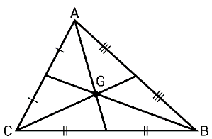
ব্যাখ্যা ও সঠিক উত্তর দেখুন
সঠিক উত্তর: (ক) 45°
ব্যাখ্যা: একটি সমকোণী সমদ্বিবাহু ত্রিভুজের দুটি ঙ্বশিষ্ট্য থাকে: একটি কোণ অবশ্যই 900 (সমকোণ)। সমকোণ সংলগ্ন বাহু দুটি সমান, যার ফলে তাদের বিপরীত কোণ দুটিও সমান হয় অথার্ৎ 450।
ব্যাখ্যা: বাহুভেদে ত্রিভুজ তিন প্রকার। যথা: সমবাহু ত্রিভুজ, সমদ্বিবাহু ত্রিভুজ ও বিষমবাহু ত্রিভুজ। যে ত্রিভুজের তিনটি বাহুই পরস্পর সমান তাকে সমবাহু ত্রিভুজ বলে। তিনটি বাহু সমান হলে, কোণ তিনটিও সমান হয়। ত্রিভুজের তিন কোণের সমষ্টি দুই সমকোণ বা 1800। ত্রিভুজের প্রত্যেক কোণের পরিমাপ = 1800 3 = 600।
প্রশ্ন ১১২২বাংলাদেশ পরমাণু শক্তি কমিশন-এর (কম্পিউটার টাইপিস্ট): ২০২৫
সমবাহু ত্রিভূজের বাহুগুলোর মধ্যবিন্দুসমূহ যোগ করলে উৎপন্ন ত্রিভুজটি-
ব্যাখ্যা ও সঠিক উত্তর দেখুন
সঠিক উত্তর: (ক) সমবাহু
ব্যাখ্যা: এই প্রশ্নের বিশদ তথ্য ও প্রাসঙ্গিক সূত্রাবলি অধ্যায়ের শুরুতে দেওয়া রিভিশন নোট ও স্কেচনোটে অন্তর্ভুক্ত রয়েছে।
ব্যাখ্যা: পরিকেন্দ্র (Circumcenter): ত্রিভুজের বাহুত্রয়ের লম্ব সমদ্বিখ-ক (Perpendicular Bisectors) তিনটি যে বিন্দুতে ছেদ করে, তাকে পরিকেন্দ্র বলে। এই বিন্দুকে কেন্দ্র করে ত্রিভুজের তিনটি শীষির্বন্দু স্পশর্ করে একটি বৃত্ত (পরিবৃত্ত) আঁকা যায়। অন্তকেন্দ্র (Incenter); ত্রিভুজের কোণত্রয়ের সমদ্বিখ-ক (Angle Bisectors) তিনটি যে বিন্দুতে ছেদ করে, তাকে অন্তকেন্দ্র বলে। এই বিন্দুটি ত্রিভুজের ভেতরে থাকা বৃত্তের (অন্তবৃত্ত) কেন্দ্র। ভরকেন্দ্র (Centroid); ত্রিভুজের মধ্যমা (Medians) তিনটি যে বিন্দুতে ছেদ করে, তাকে ভরকেন্দ্র বলে। মধ্যমা হলো একটি শীষির্বন্দু থেকে তার বিপরীত বাহুর মধ্যবিন্দুর সংযোগকারী সরলরেখা। লম্বকেন্দ্র (Orthocenter); ত্রিভুজের শীষির্বন্দুগুলো থেকে বিপরীত বাহুর ওপর অঙ্কিত লম্ব (Altitudes) তিনটি যে বিন্দুতে ছেদ করে, তাকে লম্বকেন্দ্র বলে।
কোনো ত্রিভুজের দুই বাহুর ত্রিভুজের মধ্যমাত্রয়ের সমষ্টি তার পরিসীমা অপেক্ষা-
ব্যাখ্যা ও সঠিক উত্তর দেখুন
সঠিক উত্তর: (ক) ক্ষুদ্রতর
ব্যাখ্যা: যেকোনো ত্রিভুজের ক্ষেত্রে একটি গুরুত্বপূর্ণ জ্যামিতিক ঙ্বশিষ্ট্য হলো-তার মধ্যমাত্রয়ের (Medians) সমষ্টি সবসময় ত্রিভুজটির পরিসীমা (Perimeter) অপেক্ষা ক্ষুদ্রতর বা কম হয়।
ব্যাখ্যা: সেন্ট্রয়েড বা ভরকেন্দ্র হলো ত্রিভুজের তিনটি মধ্যমার ছেদবিন্দু। সমবাহু ত্রিভুজের ক্ষেত্রে উচ্চতা (h) এবং মধ্যমা একই সরলরেখা। মধ্যমাটি শীষির্বন্দু থেকে ভূমির দিকে আসার সময় ভরবিন্দুতে এমনভাবে কাটা পড়ে যেন উপরের অংশটি নিচের অংশের দ্বিগুণ হয়। যদি সম্পূর্ণ উচ্চতা h হয়, তবে সেটিকে 3টি সমান ভাগে ভাগ করলে প্রতি ভাগ হয় h/3। নিচের 1 ভাগ (ভূমির দিক থেকে) হবে = 1 × h/3 = h/3। (উত্তর) বাহুর লম্ব = পরিকেন্দ্র। কোণের সমদ্বিখ-ক = অন্তকেন্দ্র। মধ্যমা = ভরকেন্দ্র। লম্ব = লম্বকেন্দ্র।
ত্রিভুজের একটি বাহ ৭ সে.মি এবং অপর বাহু ৪ সে. মি. হলে তৃতীয় বাহুর ঙ্দঘ্যর্ কত?
ব্যাখ্যা ও সঠিক উত্তর দেখুন
সঠিক উত্তর: (খ) 4
ব্যাখ্যা: আমরা জানি, ত্রিভুজের যেকোনো দুই বাহুর সমষ্টি তার তৃতীয় বাহু অপেক্ষা বৃহত্তর হতে হবে। বাহু দুটি হলো 7 সে.মি. এবং 4 সে.মি.। ধরি, তৃতীয় বাহুটি x সে.মি.। নিয়ম অনুযায়ী: x < (7 + 4) বা, x < 11 x > (7 – 4) বা, x > 3 অথার্ৎ, তৃতীয় বাহুটিকে অবশ্যই 3 থেকে বড় এবং 11 থেকে ছোট হতে হবে। উত্তর: 4 সে.মি.
প্রশ্ন ১১৩১বাংলাদেশ সরকারী কমর্ কমিশন-এর (ব্যক্তিগত কর্মকর্তা): বিভিন্ন মন্ত্রণালয়- ২০২৫
ABC ত্রিভুজে AB = AC, A = 90° হলে, B = কত?
ব্যাখ্যা ও সঠিক উত্তর দেখুন
সঠিক উত্তর: (খ) 45°
ব্যাখ্যা: আমরা জানি, ত্রিভুজের তিন কোণের সমষ্টি সব সময় 180° A + B + C = 180° বা, 90° + B + B = 180° [যেহেতু B = C] বা, 90° + 2 B = 180° বা, B = 180° - 90° 2 ⸫ B = 45°
একটি সমদ্বিবাহু ত্রিভুজের ভূমির ঙ্দঘ্যর্ ৬০ সে.মি.। এর ক্ষেত্রফল ১২০০ ব. সে.মি. হলে পরিসীমা কত?
ব্যাখ্যা ও সঠিক উত্তর দেখুন
সঠিক উত্তর: (ক) ১৬০ সে.মি.
ব্যাখ্যা: ক্ষেত্রফলকে ভূমি দিয়ে ভাগ করে ২ দিয়ে গুণ করলে উচ্চতা (h) পাওয়া যায়। h = ১২০০ × ২ ৬০ = ৪০ সে.মি.। ভূমির অধের্ক (৩০) এবং উচ্চতা (৪০) দিয়ে পিথাগোরাসের সূত্র ব্যবহার করলে সমান বাহু পাওয়া যায়। √ = √৯০০ = √২৫০০ = ৫০ সে.মি.। পরিসীমা = ৫০ + ৫০ + ৬০ = ১৬০ সে.মি.। (উত্তর) P Q R 300 600 টাইপ-০৩: ত্রিভুজের ক্ষেত্রফল নিণর্য়-
প্রশ্ন ১১৩৩প্রাণিসম্পদ অধিদপ্তর - (অফিস সহকারী কাম কম্পিউটার মুদ্রাক্ষরিক): ২০২৫
ত্রিভুজের ক্ষেত্রফল-
ব্যাখ্যা ও সঠিক উত্তর দেখুন
সঠিক উত্তর: (গ) (১/২) × ভূমি × উচ্চতা
ব্যাখ্যা: এই প্রশ্নের বিশদ তথ্য ও প্রাসঙ্গিক সূত্রাবলি অধ্যায়ের শুরুতে দেওয়া রিভিশন নোট ও স্কেচনোটে অন্তর্ভুক্ত রয়েছে।
প্রশ্ন ১১৩৪গ্রামীণ ব্যাংক (শিক্ষানবিশ কেন্দ্র ব্যবস্থাপক): ২০২৫
একটি ত্রিভুজের ভূমি ও উচ্চতা যথাক্রমে ৩ ও ২ সেন্টিমিটার, ত্রিভুজটির ক্ষেত্রফল কত?
ব্যাখ্যা ও সঠিক উত্তর দেখুন
সঠিক উত্তর: (ক) ৩ বর্গেসন্টিমিটার
ব্যাখ্যা: ত্রিভুজের ক্ষেত্রফল = ১ ২ × ভূমি × উচ্চতা = ১ ২ × ৩ × ২ = ৩ বর্গ সেন্টিমিটার।
একটি সমদ্বিবাহু সমকোণী ত্রিভুজের সমান বাহুদ্বয়ের প্রতিটির ঙ্দঘ্যর্ ১৪ সে.মি. হলে ত্রিভুজটির ক্ষেত্রফল কত বর্গ সে.মি.?
ব্যাখ্যা ও সঠিক উত্তর দেখুন
সঠিক উত্তর: (গ) 98
ব্যাখ্যা: এটি একটি সমদ্বিবাহু সমকোণী ত্রিভুজ, অথার্ৎ এর একটি কোণ 900 এবং সমকোণ সংলগ্ন বাহু দুটি সমান। আমরা জানি, ত্রিভুজের ক্ষেত্রফল = 1 2 × ভূমি × উচ্চতা = 1 2 × 14 × 14 = 7 × 14 = 98 বর্গ সে.মি. (উত্তর)
প্রশ্ন ১১৪৪খাদ্য অধিদপ্তর–এর (অফিস সহকারী কাম কম্পিউটার মুদ্রাক্ষরিক): ২০২৫
12 বগির্মটার একটি ত্রিভুজাকার জমির উচ্চতা 4 মিটার হলে তার ঙ্দঘ্যর্ কত?
একটি ত্রিভুজের বাহুগুলোর অনুপাত 1 : 2√ : 3 হলে এর বৃহত্তম কোণটির মান কত?
ব্যাখ্যা ও সঠিক উত্তর দেখুন
সঠিক উত্তর: (গ) 900
ব্যাখ্যা: যদি কোনো ত্রিভুজের দুটি বাহুর বর্গের সমষ্টি তৃতীয় (বৃহত্তম) বাহুর বর্গের সমান হয়, তবে ত্রিভুজটি সমকোণী এবং এর বৃহত্তম কোণটি হবে 90°। প্রথম বাহুর বর্গ = 12 = 1; ২য় বাহুর বর্গ = ( √ ) = 8; ৩য় বাহুর বর্গ = 32 = 9
ABC সমবাহু ত্রিভুজের বাহু AB এবং AC কে বধির্ত করলে উৎপন্ন কোণদ্বয়ের সমষ্টি কত?
ব্যাখ্যা ও সঠিক উত্তর দেখুন
সঠিক উত্তর: (ক) 240°
ব্যাখ্যা: ABC সমবাহু ত্রিভুজের বাহু AB এবং AC কে বধির্ত করলে উৎপন্ন কোণদ্বয়ের সমষ্টি হবে 240°। আমরা জানি, একটি সমবাহু ত্রিভুজের প্রতিটি অন্তঃস্থ কোণ = 600। সুতরাং A = B = C = 600 যখন AB এবং AC বাহুকে বধির্ত করা হয়, তখন শীষির্বন্দু B এবং C তে দুটি বহিঃস্থ কোণ উৎপন্ন হয়। একটি সরলরেখায় মোট কোণের মান 1800। সুতরাং- B বিন্দুতে বহিঃস্থ কোণ: 1800 B = 1800 600 = 1200। C বিন্দুতে বহিঃস্থ কোণ: 1800 B = 1800 600 = 1200। ⸫ উৎপন্ন কোণ দুটির সমষ্টি = 1200 + 1200 = 2400।
প্রশ্ন ১১৪৯বাংলাদেশ সরকারী কমর্ কমিশন - (ব্যক্তিগত কর্মকর্তা): বিভিন্ন মন্ত্রণালয়- ২০২৫
কোন সমবাহু ত্রিভুজের একটি বাহুকে উভয়দিকে সমান বধির্ত করলে উৎপন্ন কোণদ্বয়ের বিয়োগফল কত?
ব্যাখ্যা ও সঠিক উত্তর দেখুন
সঠিক উত্তর: (ক) 0°
ব্যাখ্যা: আমরা জানি, সমবাহু ত্রিভুজের প্রতিটি অন্তঃস্থ কোণ সমান এবং তা 60° ধরি, ABC একটি সমবাহু ত্রিভুজ। এর ভূমি BC বাহুকে উভয় দিকে (বামে D পর্যন্ত এবং ডানে E পর্যন্ত) বধির্ত করা হলো। বাম পাশে উৎপন্ন বহিঃস্থ কোণ ( ABD): এটি একটি সরলরেখার ওপর অবস্থিত, তাই এর মান হবে 180° 60°= 120° ডান পাশে উৎপন্ন বহিঃস্থ কোণ ( ACE): এটিও একটি সরলরেখার ওপর অবস্থিত, তাই এর মান হবে 180° 60°= 120° যেহেতু উভয় দিকে বধির্ত করার ফলে উৎপন্ন কোণ দুটি সমান (120°), তাই তাদের বিয়োগফল হবে: 120° ° 120°= 0°
প্রশ্ন ১১৫০বাংলাদেশ সরকারী কমর্ কমিশন-এর (ব্যক্তিগত কর্মকর্তা): বিভিন্ন মন্ত্রণালয়- ২০২৫
ABC ত্রিভুজে AB = AC, A = 90° হলে, B = কত?
ব্যাখ্যা ও সঠিক উত্তর দেখুন
সঠিক উত্তর: (খ) 45°
ব্যাখ্যা: আমরা জানি, ত্রিভুজের তিন কোণের সমষ্টি সব সময় 180° A + B + C = 180° বা, 90° + B + B = 180° [যেহেতু B = C] বা, 90° + 2 B = 180° বা, B = 180° - 90° 2 ⸫ B = 45° টাইপ-০৫: বিবিধ-
প্রযুক্ত বল ও সরণের মধ্যবতীর্ কোণ কত হলে কাজের মান শূন্য হবে?
ব্যাখ্যা ও সঠিক উত্তর দেখুন
সঠিক উত্তর: (ক) 90°
ব্যাখ্যা: W = FS cos = FS cos900 = FS × 0 = 0 (উত্তর)
প্রশ্ন ১১৫২সমন্বিত ৫ ব্যাংক ও ১ আর্থিক প্রতিষ্ঠান-এর (অফিসার ক্যাশ): ২০২৫
If a right-angled isosceles triangle has base 4 cm, then height is:
ব্যাখ্যা ও সঠিক উত্তর দেখুন
সঠিক উত্তর: (খ) 4 cm
ব্যাখ্যা: একটি সমদ্বিবাহু সমকোণী ত্রিভুজে সমকোণ সংলগ্ন বাহু দুটি (ভূমি ও লম্ব/উচ্চতা) সবসময় সমান হয়। প্রশ্নে বলা হয়েছে ত্রিভুজটির ভূমি 4 সে.মি.। যেহেতু এটি একটি সমদ্বিবাহু সমকোণী ত্রিভুজ, তাই এর উচ্চতাও ভূমির সমান হবে। সুতরাং, ত্রিভুজটির উচ্চতা হবে 4 সে.মি.। [চতুভুর্জ সংক্রান্ত]
একটি চতুভুর্জ আঁকতে কয়টি অনন্য নিরপেক্ষ উপাত্তের প্রয়োজন?
ব্যাখ্যা ও সঠিক উত্তর দেখুন
সঠিক উত্তর: (ক) 5টি
ব্যাখ্যা: একটি নিদির্ষ্ট চতুভুর্জ আঁকতে মোট 5টি অনন্য ও নিরপেক্ষ উপাত্তের (Independent Data) প্রয়োজন। জ্যামিতিক গঠন অনুযায়ী একটি চতুভুর্জকে নিদির্ষ্টভাবে সংজ্ঞায়িত করার জন্য কেবল বাহুর ঙ্দঘ্যর্ যথেষ্ট নয়, কারণ একই ঙ্দঘ্যের্র বাহু দিয়ে ভিন্ন ভিন্ন কোণের চতুভুর্জ ঙ্তরি করা সম্ভব। তাই একে স্থির বা নিদির্ষ্ট করতে 5টি তথ্যের প্রয়োজন হয়। চতুভুর্জ আঁকতে প্রয়োজন: 4টি বাহু ও 1টি কোণ 4টি বাহু ও 1টি কণর্ 3টি বাহু ও 2টি অন্তভুর্ক্ত কোণ 3টি বাহু ও 2টি কণর্ 2টি বাহু ও 3টি কোণ টাইপ-০১: বর্গ-
প্রশ্ন ১১৫৪বাংলাদেশ সরকারী কমর্ কমিশন-এর (ব্যক্তিগত কর্মকর্তা): বিভিন্ন মন্ত্রণালয়- ২০২৫
একটি বর্গের পরিসীমা 36 মিটার হলে এর একটি কণের্র ঙ্দঘ্যর্ কত?
ব্যাখ্যা ও সঠিক উত্তর দেখুন
সঠিক উত্তর: (গ) √
ব্যাখ্যা: আমরা জানি, বর্গের পরিসীমা = 4a বা, 36 = 4a ⸫ a = 9 ⸫ বর্গেক্ষত্রের কণের্র ঙ্দঘর্য = a √ = 9 √ (উত্তর)
কোনো বর্গেক্ষত্র তার কণের্র উপর অঙ্কিত বর্গেক্ষত্রের-
ব্যাখ্যা ও সঠিক উত্তর দেখুন
সঠিক উত্তর: (খ) অধের্ক
ব্যাখ্যা: ধরি, বর্গেক্ষত্রের বাহুর ঙ্দঘর্য = a। তাহলে, ঐ বর্গেক্ষত্রের ক্ষেত্রফল = a2. আমরা জানি, বর্গেক্ষত্রের কণের্র ঙ্দঘর্য = a √ ; এখন, এই কণের্র উপর যদি একটি নতুন বর্গেক্ষত্র অঙ্কন করা হয়, তবে তার ক্ষেত্রফল হবে। তাহলে, নতুন ক্ষেত্রফল হবে = ( √ ) = 2a2 আদি বর্গেক্ষত্রের ক্ষেত্রফল = a2 এবং কণের্র উপর অঙ্কিত বর্গেক্ষত্রের ক্ষেত্রফল = 2a2 দেখা যাচ্ছে যে, আদি বর্গেক্ষত্রের ক্ষেত্রফল কণের্র ওপর অঙ্কিত বর্গেক্ষত্রের ক্ষেত্রফলের ঠিক অধের্ক ( )।
ব্যাখ্যা: বৃত্তের অন্তলিির্খত সামান্তরিক একটি আয়তক্ষেত্র। শতর্ ১: আমরা জানি, বৃত্তে অন্তলিির্খত চতুভুের্জর বিপরীত কোণদ্বয়ের সমষ্টি ১৮০ক্ক। শতর্ ২: আবার, সামান্তরিকের বিপরীত কোণগুলো পরস্পর সমান। ফলাফল: যদি দুটি সমান কোণের যোগফল ১৮০° হয়, তবে প্রতিটি কোণ অবশ্যই (১৮০ ÷ ২) = ৯০° হবে। আর যে সামান্তরিকের একটি কোণ ৯০°, সেটিই আয়তক্ষেত্র।
প্রশ্ন ১১৭১ঢাকা ইলেকট্রিক সাপল্লাই কোম্পানি লিমিটেড (DESCO) - উপ-সহকারী প্রকৌশলী (ইলেকট্রিক্যাল, মেকানিক্যাল ও কম্পিউটার): ২০২৫
একটি আয়তক্ষেত্র ও বর্গেক্ষত্র পরস্পরকে ছেদ করলে সবোর্চ্চ কয়টি সমবিন্দু পাওয়া যাবে?
ব্যাখ্যা ও সঠিক উত্তর দেখুন
সঠিক উত্তর: (খ) 8
ব্যাখ্যা: একটি আয়তক্ষেত্র ও একটি বর্গেক্ষত্র যদি একে অপরের ওপর দিয়ে যায় বা পরস্পরকে ছেদ করে, তবে তাদের মধ্যে সবোর্চ্চ ৮টি ছেদবিন্দু বা সমবিন্দু পাওয়া সম্ভব। যখন দুটি উত্তল চতুভুর্জ (যেমন আয়তক্ষেত্র ও বর্গেক্ষত্র) পরস্পরকে ছেদ করে, তখন একটি চতুভুের্জর প্রতিটি বাহু অন্য চতুভুের্জর সবোর্চ্চ 2টি বাহুকে ছেদ করতে পারে। আয়তক্ষেত্রের বাহু সংখ্যা = 4টি। বর্গেক্ষত্রের বাহু সংখ্যা = 4টি একটি সাধারণ অবস্থানে, একটির বাহুগুলো অন্যটির বাহুগুলোকে এমনভাবে অতিক্রম করতে পারে যেখানে প্রতিটি বাহু দুবার করে ছেদ করে। ফলে মোট ছেদবিন্দু হয়: 4 × 2 = 8টি। (উত্তর)
প্রশ্ন ১১৭২বিমান বাংলাদেশ এয়ারলাইন্স (গ্রাউন্ড সাভির্স অ্যাসিস্ট্যান্ট): ২০২৫
একটি আয়ক্ষেত্রের ঙ্দঘ্যর্ ১২ সে.মি. এবং প্রন্থ ৫ সে.মি. হলে এর একটি কণের্র ঙ্দঘ্যর্ কত?
ব্যাখ্যা ও সঠিক উত্তর দেখুন
সঠিক উত্তর: (ঘ) 13 সে.মি.
ব্যাখ্যা: আয়তক্ষেত্রের কণের্র ‣দঘ্যর্ √
প্রশ্ন ১১৭৩নিবার্চন কমিশন সচিবালয়-এর (অফিস সহকারী কাম কম্পিউটার অপারেটর): ২০২৫
একটি আয়তাকার ক্ষেত্রের ঙ্দঘ্যর্ প্রস্থের 3 গুণ। ঙ্দঘ্যর্ 48 মিটার হলে ক্ষেত্রটির পরিসীমা কত?
একটি আয়তক্ষেত্রের ঙ্দঘ্যর্ ৪৫ মিটার এবং প্রস্থ ২৫ মিটার হলে ক্ষেত্রফল কত?
ব্যাখ্যা ও সঠিক উত্তর দেখুন
সঠিক উত্তর: (গ) 1,125 ব.মি.
ব্যাখ্যা: আয়তক্ষেত্রের ক্ষেত্রফল = ঙ্দঘর্য × প্রস্থ = 45 মিটার × 25 মিটার = 1125 বগির্মটার।
প্রশ্ন ১১৮১সমন্বিত ৫ ব্যাংক ও ১ আর্থিক প্রতিষ্ঠান-এর (অফিসার ক্যাশ): ২০২৫
ব্যাখ্যা ও সঠিক উত্তর দেখুন
সঠিক উত্তর: (ক) বিকল্প ১
ব্যাখ্যা: Area = Length × Breath = × = 6 (উত্তর)
প্রশ্ন ১১৮২স্থানীয় সরকার বিভাগ-এর উপ- সহকারী প্রকৌশলী (সিভিল): ২০২৬
একটি আয়তক্ষেত্রের ঙ্দঘ্যর্ ২০% বাড়ানো হলো এবং প্রস্থ ২০% কমানো হলো। ক্ষেত্রফল ____
ব্যাখ্যা ও সঠিক উত্তর দেখুন
সঠিক উত্তর: (ক) ৪% কমবে
ব্যাখ্যা: = (- ) = 4% (উত্তর) টাইপ-০৩: সামন্তরিক-
প্রশ্ন ১১৮৩পাওয়ার গ্রিড বাংলাদেশ পিএলসি-এর (নিরাপত্তা প্রহরী): ২০২৫
যে চতুভুের্জর বিপরীত কোণগুলো সমান কিন্তু বাহুগুলো অসমান তাকে বলে-
ব্যাখ্যা ও সঠিক উত্তর দেখুন
সঠিক উত্তর: (ঘ) সামন্তরিক
ব্যাখ্যা: যে চতুভুের্জর বিপরীত বাহুগুলো পরস্পর সমান ও সমান্তরাল কিন্তুু কোণগুলো সমকোণ নয় তাকে সামান্তরিক বলে। সামন্তরিকের ক্ষেত্রফল = (ভূমি উচ্চতা) বর্গ একক। সামন্তরিকের পরিসীমা = ২ (‣দঘর্য + প্রস্থ) একক।
ব্যাখ্যা: একটি সামান্তরিকের একপাশ থেকে একটি সমকোণী ত্রিভুজ কেটে যদি অন্যপাশে বসিয়ে দেওয়া হয়, তবে সেটি একটি নিখুঁত আয়তক্ষেত্রে পরিণত হয়। যেহেতু আয়তক্ষেত্রের ক্ষেত্রফল = ঙ্দঘ্যর্ × প্রস্থ, আর এখানে ঙ্দঘ্যর্ই হলো সামান্তরিকের ভূমি এবং প্রস্থ হলো উচ্চতা, তাই সামান্তরিকের ক্ষেত্রফলও হয় ভূমি × উচ্চতা।
ব্যাখ্যা: সামান্তরিকের যেকোনো দুটি সন্নিহিত কোণের (Adjacent angles) সমষ্টি সবসময় 180° হয়। অথার্ৎ, একই বাহুর ওপর অবস্থিত দুটি কোণ যোগ করলে 180° পাওয়া যায়। যেহেতু ABCD একটি সামন্তরিক, তাই A + B = 180° বা, 120° + B = 180° ⸫ B = 60° টাইপ-০৪: রম্বস-
একটি রম্বসের ভূমি ১২ সে.মি. এবং উচ্চতা ৫ সে.মি. হলে, এর ক্ষেত্রফল কত?
ব্যাখ্যা ও সঠিক উত্তর দেখুন
সঠিক উত্তর: (খ) ৬০ বর্গ সে.মি. (গ) ২৫ বর্গ সে.মি.
ব্যাখ্যা: রম্বসের ক্ষেত্রফল হলো তার ভূমি এবং উচ্চতার গুণফল। 900 A D C B ক্ষেত্রফল = ভূমি × উচ্চতা [এখানে ভূমি = ১২ সে.মি. এবং উচ্চতা = ৫ সে.মি.] বা, ক্ষেত্রফল = ১২ × ৫ = ৬০। ৬০ বর্গ সে.মি.। টাইপ-০৫: ট্রাপিজিয়াম-
প্রশ্ন ১১৯১নিবার্চন কমিশন সচিবালয়-এর (অফিস সহকারী কাম কম্পিউটার অপারেটর): ২০২৫
একটি চতুভুের্জর চারটি বাহর বিপরীত দুটি বাহু সমান্তরাল কিছু অসমান হলে তাকে বলে-
ব্যাখ্যা ও সঠিক উত্তর দেখুন
সঠিক উত্তর: (ঘ) ট্রাপিজিয়াম
ব্যাখ্যা: একটি চতুভুের্জর চারটি বাহুর মধ্যে যদি বিপরীত দুটি বাহু সমান্তরাল কিন্তু অসমান হয়, তবে তাকে ট্রাপিজিয়াম (Trapezium) বলে। সহজ কথায়, যে চতুভুের্জর এক জোড়া বিপরীত বাহু সমান্তরাল (Parallel), কিন্তু অন্য জোড়া সমান্তরাল নয়, সেটিই ট্রাপিজিয়াম।
ABC ত্রিভুজের AB ও AC বাহুর মধ্যবিন্দুদ্বয় যথাক্রমে E ও F. EBCF চতুভুর্জটি একটি-
ব্যাখ্যা ও সঠিক উত্তর দেখুন
সঠিক উত্তর: (ঘ) ট্রাপিজিয়াম
ব্যাখ্যা: আমরা জানি, যে চতুভুের্জর একজোড়া বিপরীত বাহু সমান্তরাল কিন্তু সমান নয়, তাকে ট্রাপিজিয়াম বলা হয়। এখানে EBCF চতুভুের্জ EF ∥ BC (সমান্তরাল বাহু) EF বাহুটি BC এর অধের্ক, তাই তারা সমান নয়। অন্য দুটি বাহু (EB এবং FC) সমান্তরাল নয়। টাইপ-০৬: চতুভুের্জর কোণ সংক্রান্ত-
বৃত্তের কেন্দ্র থেকে পরিধি পর্যন্ত অংকিত সরল রেখাকে কি বলে?
ব্যাখ্যা ও সঠিক উত্তর দেখুন
সঠিক উত্তর: (খ) ব্যাসাধর্
ব্যাখ্যা: পরিধির যে কোন দুই বিন্দুর সংযোজক রেখাংশকে জ্যা বলে। উল্লেখ্য যে, বৃত্তের ব্যাসই হচ্ছে বৃত্তের বৃহত্তম জ্যা। বৃত্তের কেন্দ্রগামী সকল জ্যা কেই ব্যাস বলে। একটি বৃত্তের অসংখ্য ব্যাস থাকে। বৃত্তের কেন্দ্র থেকে পরিধি পর্যন্ত অঙ্কিত সরলরেখাকে ব্যাসাধর্ (Radius) বলা হয়। সহজ কথায়, একটি বৃত্তের ঠিক মাঝখানের বিন্দু (কেন্দ্র) থেকে শুরু করে এর চারপাশের যে কোনো বিন্দু পর্যন্ত যে দূরত্ব, তাকেই ব্যাসাধর্ বলে।
ব্যাখ্যা: বৃত্তের অধিচাপে (Major Arc) অন্তলিখিত কোণ সব সময় সূক্ষ্ণকোণ (Acute Angle) হয়। বৃত্তের অধেের্কর বেশি অংশকে অধিচাপ বলে। যে কোণের মান ৯০° অপেক্ষা কম তাকে সূক্ষ্ণকোণ বলে। বৃত্তের কোনো চাপের ওপর দ-ায়মান কেন্দ্রস্থ কোণ এবং পরিধিস্থ (অন্তলিখিত) কোণের সম্পকর্ থেকে এটি বোঝা যায়। যেহেতু অধিচাপের বিপরীত পাশে উপচাপ থাকে এবং উপচাপের কেন্দ্রস্থ কোণ ১৮০° এর কম হয়, তাই তার অধের্ক বা অন্তলিখিত কোণটিও ৯০° এর কম অথার্ৎ সূক্ষ্ণকোণ হয়। টাইপ-০২: বৃত্তের ব্যাসাধর্, ব্যাস, পরিধি ও ক্ষেত্রফল সংক্রান্ত-
কোন বৃত্তের ব্যাস 8 সে.মি. হলে, বৃত্তটির ক্ষেত্রফল কত?
ব্যাখ্যা ও সঠিক উত্তর দেখুন
সঠিক উত্তর: (গ) বিকল্প ৩
ব্যাখ্যা: আমরা জানি, বৃত্তের ক্ষেত্রফল = r2 =
প্রশ্ন ১২২১বাংলাদেশ আনসার ও গ্রাম প্রতিরক্ষা বাহিনী - (সাঁট-লিপিকার কাম- কম্পিউটার অপারেটর,সাঁট-মুদ্রাক্ষরিক কাম-কম্পিউটার অপারেটর,থানা/উপজেলা প্রশিক্ষক,উপজেলা/থানা মহিলা প্রশিক্ষিকা,পেস্টিং সহকারী,প্রুফ রিডার, অফিস সহকারী): ২০২৫
দুইটি বৃত্তের ব্যাসের অনুপাত 1 : 3। এদের ক্ষেত্রফলের অনুপাত কত?
একটি বৃত্তের বহিঃস্থ কোন বিন্দু হতে ঐ বৃত্তে মোট কতটি স্পশর্ক অংকন করা যায়?
ব্যাখ্যা ও সঠিক উত্তর দেখুন
সঠিক উত্তর: (ঘ) 2টি
ব্যাখ্যা: একটি বৃত্তের বহিঃস্থ কোন বিন্দু হতে ঐ বৃত্তে মোট স্পশর্ক অংকন করা যায় = 2 টি।
প্রশ্ন ১২২৫বাংলাদেশ সরকারি কমর্ কমিশন-এর (সহকারী পরিচালক): ২০২৫
11 সে.মি. ব্যাসাধের্র বৃত্তের কেন্দ্র হতে 5 সে.মি. দূরত্বে অবস্থিত উক্ত বৃত্তের কোন জ্যা এর ঙ্দঘ্যর্ কত সে.মি.?
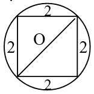
ব্যাখ্যা ও সঠিক উত্তর দেখুন
সঠিক উত্তর: (ঘ) √
ব্যাখ্যা: ধরি, বৃত্তের কেন্দ্র O এবং জ্যা-টি হলো AB। কেন্দ্র O থেকে অই জ্যা-এর ওপর লম্ব OD। দেওয়া আছে, বৃত্তের ব্যাসাধর্ (OA) = ১১ সে.মি. কেন্দ্র থেকে জ্যা-এর দূরত্ব (OD) = ৫ সে.মি. এখানে, △OAD একটি সমকোণী ত্রিভুজ। পিথাগোরাসের উপপাদ্য অনুসারে আমরা পাই: = বা, 112 = 52 + AD2 বা, AD = √ ⸫ AD = 4 √ জ্যা-এর ঙ্দঘর্য (AB) = 2 × 4 √ = 8 √
প্রশ্ন ১২২৬৪৭তম বিসিএস
একটি বৃত্তস্থ বর্গের প্রত্যেক বাহুর ‣দঘ্যর্ ২ সে.মি. হলে, ঐ বৃত্তের ক্ষেত্রফল কত?
ব্যাখ্যা ও সঠিক উত্তর দেখুন
সঠিক উত্তর: (খ) 2π
ব্যাখ্যা: π 2 π 2 2 12 O 5 13 A B ? O A B 6 8 8 বর্গের কণর্ = = = = এখানে, বৃত্তের ব্যাস = বর্গের কণর্ = বৃত্তের ব্যাসাধর্ = = বৃত্তের ক্ষেত্রফল = π = 2π (উত্তর)
প্রশ্ন ১২২৭সমন্বিত ৮টি ব্যাংক ও ১টি আর্থিক প্রতিষ্ঠান - (সিনিয়র অফিসার): ২০২৫
The area of a circle is 36 the circumference is equal to-
একটি বৃত্তের ব্যাসাধর্ 7 সে.মি. হলে উক্ত বৃত্তের অন্তনিির্হত বর্গেক্ষত্রের ক্ষেত্রফল কত বর্গ সে.মি.?
ব্যাখ্যা ও সঠিক উত্তর দেখুন
সঠিক উত্তর: (ক) 98 বর্গ সে.মি.
ব্যাখ্যা: 7 সে.মি. ব্যাসাধর্ হলে ব্যাস হবে 7 + 7 = 14 সে.মি.; আবার ব্যাস 14 সে.মি. হলে বর্গেক্ষত্রটির কণর্ও 14 সে.মি. এখন বর্গেক্ষত্রের কণের্র মান দেয়া থাকলে তা থেকে এক বাহুর ‣দঘর্য অথবা ক্ষেত্রফল বের করার জন্য। আমরা জানি, বর্গেক্ষত্রের কণের্র ঙ্দঘ্যর্, a 2 = 14 সে.মি. বর্গেক্ষত্রের এক বাহুর ঙ্দঘর্য a = 2 14 ক্ষেত্রফল a2 = ( 2 14 )2 = 2 14 14 = 98. সুতরাং ক্ষেত্রফল = 98 বর্গ সে.মি.।
8 মিটার বাহু বিশিষ্ট বর্গেক্ষত্রের অভ্যন্তরে অঙ্কিত বৃত্তের ব্যাসাধর্ কত?
ব্যাখ্যা ও সঠিক উত্তর দেখুন
সঠিক উত্তর: (খ) 4 মিটার
ব্যাখ্যা: একটি বর্গেক্ষত্রের অভ্যন্তরে যখন একটি বৃত্ত অঙ্কন করা হয় (যাকে অন্তবৃর্ত্ত বলা হয়), তখন সেই বৃত্তের ব্যাস হয় বর্গেক্ষত্রের বাহুর ঙ্দঘ্যের্র সমান। প্রশ্নের তথ্য অনুযায়ী: বর্গেক্ষত্রের বাহুর ঙ্দঘ্যর্ = ৮ মিটার; সুতরাং, বৃত্তের ব্যাস = ৮ মিটার আমরা জানি, ব্যাসাধর্ হলো ব্যাসের অধের্ক। ⸫ ব্যাসাধর্ = ব্যাস ২ = ৮ মিটার ২ = ৪ মিটার।
প্রশ্ন ১২৩৫জাতীয় রাজস্ব বোর্ড-এর (অফিস সহকারী কাম কম্পিউটার মুদ্রাক্ষরিক): ২০২৫
একটি ফুটবলের ব্যাস 10 সেন্টিমিটার হলে উক্ত ফুটবলের আয়তন কত?
A circular garden with a diameter of 20 meters is surrounded by a walkway of width 1 meter. What is the area of the walkway?
ব্যাখ্যা ও সঠিক উত্তর দেখুন
সঠিক উত্তর: (গ) বিকল্প ৩
ব্যাখ্যা: বাগানের ব্যাস (2r) = 20 মিটার; বাগানের ব্যাসাধর্ (r) = 20 2 = 10 মিটার। রাস্ত্মার বিস্ত্মার = 1 মিটার। যখন বাগানের চারদিকে 1 মিটার চওড়া রাস্ত্মা থাকে, তখন রাস্ত্মাসহ বাগানের ব্যাসাধর্ বেড়ে যায়। রাস্ত্মাসহ বাইরের ব্যাসাধর্ (R) = 11 + 1 = 11 মিটার। আমরা জানি, বৃত্তের ক্ষেত্রফলের সূত্র: রাস্ত্মার ক্ষেত্রফল হবে বাইরের বড় বৃত্তের ক্ষেত্রফল থেকে ভেতরের ছোট বৃত্তের ক্ষেত্রফলের বিয়োগফল। রাস্ত্মার ক্ষেত্রফল = = ( ) = ( ) = ( ) = 21 (উত্তর)
প্রশ্ন ১২৩৭ঢাকা ইলেকট্রিক সাপল্লাই কোম্পানি লিমিটেড (DESCO)-এর উপ- সহকারী প্রকৌশলী (ইলেকট্রিক্যাল, মেকানিক্যাল ও কম্পিউটার): ২০২৫
একটি বৃত্তাকার কেককে চারটি সরলরেখা দ্বারা কতর্ন করলে কতটি টুকরা হবে? A B D C O 7 . ব্যাসাধর্ = ৪ মিটার ব্যাস = ৮ মিটার ব্যাস = ৮ মিটার ব্যাসাধর্ = ৪ মি.
ব্যাখ্যা ও সঠিক উত্তর দেখুন
সঠিক উত্তর: (গ) 11
ব্যাখ্যা: টুকরার সংখ্যা = n(n+1) 2 +1 ; এখানে, n = সরলরেখার সংখ্যা = 4 ⸫ টুকরার সংখ্যা = 4 (4 + 1) 2 + 1 = 10 + 1 = 11 (উত্তর)
প্রশ্ন ১২৫২জাতীয় গোয়েন্দা সংস্থা (NSI) - (ফিল্ড স্টাফ): ২০২৫
একটি গাছ ঝড়ে ১০ মিটার উঁচুতে ভেঙে সম্পূর্ণ বিচ্ছিন্ন না হয়ে ভাঙা অংশ দন্ডায়মান অংশের সাথে 60° কোণ উৎপন্ন করে ভূমির সাথে মিলিত হয়েছে। গাছটির সম্পূর্ণ অংশের ঙ্দঘ্যর্ কত?
১৮ মিটার লম্বা একটি মই ভূমির সাথে ৩০° কোণ করে দেয়ালের শীষর্ স্পশর্ করে। দেয়ালের উচ্চতা কত?
ব্যাখ্যা ও সঠিক উত্তর দেখুন
সঠিক উত্তর: (খ) ৯ মিটার
ব্যাখ্যা: ধরি, দেয়ালের উচ্চতা = h মিটার। দেওয়া আছে, মইয়ের ঙ্দঘ্যর্ (অতিভুজ) = ১৮ মিটার। কোণ (θ) = ৩০০ আমরা জানি, লম্ব ও অতিভুজের সম্পকর্ প্রকাশ করে sin. sinθ = লম্ব অতিভুজ বা, sin300 = লম্ব অতিভুজ = h ১৮ বা, ১ ২ = h ১৮ ⸫ h = ৯ মিটার। (উত্তর)
প্রশ্ন ১২৫৪৪৮তম বিসিএস
একটি গাছের পাদদেশ হতে 26√ মিটার দূরে গাছটির শীষর্ বিন্দুর উন্নতি কোণ 300 হলে, গাছটির উচ্চতা কত মিটার?
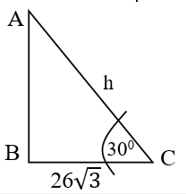
ব্যাখ্যা ও সঠিক উত্তর দেখুন
সঠিক উত্তর: (গ) 78
ব্যাখ্যা: ধরি, AB = h মিটার। ভূমি BC = 26√ মিটার। ABC সমকোণী ত্রিভুজে, tan 300 = h 26√ ) বা, 3 1 = h 26√ ) h = 26 মিটার। (উত্তর)
একটি গাছের উচ্চতা ১০৫ মিটার। গাছটির শীষর্ ভূমির কোনো বিন্দুতে উন্নতি কোণ ৬০ ডিগ্রী ঙ্তরি করলে, গাছটির গোড়া থেকে ভূতলস্থ বিন্দুটির দূরত্ব কত?
ব্যাখ্যা ও সঠিক উত্তর দেখুন
সঠিক উত্তর: (ক) √ মিটার
ব্যাখ্যা: √ মিটার।
প্রশ্ন ১২৫৬সমন্বিত ৮টি ব্যাংক ও ১টি আর্থিক প্রতিষ্ঠান - (সিনিয়র অফিসার): ২০২৫
If a ladder touches the roof of a wall and makes an angle of 30° with the 15 meter long wall, then the length of the ladder is-
ব্যাখ্যা ও সঠিক উত্তর দেখুন
সঠিক উত্তর: (ঘ) 17.3 m
ব্যাখ্যা: দেয়ালের উচ্চতা (AB) = 15 মিটার (এটি এখানে ভূমি হিসেবে কাজ করবে কারণ কোণটি দেয়ালের সাথে উৎপন্ন হয়েছে)। মইয়ের ঙ্দঘর্য (AC) = x মিটার (এটি ত্রিভুজের অতিভুজ)। মই ও দেয়ালের মধ্যবতীর্ কোণ ( BAC) = 30° যেহেতু আমাদের কাছে কোণ সংলগ্ন বাহু (দেয়াল) দেওয়া আছে এবং অতিভুজ (মই) বের করতে হবে, তাই আমরা cos-এর সূত্র ব্যবহার করব। আমরা জানি, Cos = ভূমি অতিভুজ বা, Cos30° = ভূমি অতিভুজ বা, √ 2 ) = 15 মইয়ের ঙ্দঘর্য বা, মইয়ের ঙ্দঘর্য × √ = 30 মইয়ের ‣দঘর্য = 30 √ ) = 10 × 3 √ ) = 10√ = 10 × 1.732 = 17.32 (উত্তর)
১২ মিটার উঁচু একটি গাছ h উচ্চতায় এমনভাবে ভেঙ্গে গেল যে, ভাঙা অংশটি মাটির সাথে 30° কোণে মিলিত হলো। গাছটি কত উঁচুতে ভেঙেছিল?
ব্যাখ্যা ও সঠিক উত্তর দেখুন
সঠিক উত্তর: (গ) 4 মিটার
ব্যাখ্যা: ধরি, সম্পূর্ণ গাছটির উচ্চতা, AB = 12 মিটার। গাছটি মাটি থেকে h উচ্চতায় C বিন্দুতে ভেঙ্গেছে। অথার্ৎ গাছটি ভেঙ্গেছে = h উচ্চতায়। ভাঙা অংশের ঙ্দঘর্য (অতিভুজ) = (12 – h) মিটার। ভূমির সাথে উৎপন্ন কোণ = 30° আমরা জানি, সমকোণী ত্রিভুজের ক্ষেত্রে লম্ব এবং অতিভুজের মধ্যে সম্পকর্ হলো sin-এর সূত্র। A B C 105 x 12 মিটার A B C D 12 h h h Sin = লম্ব অতিভুজ বা, Sin30০ = লম্ব অতিভুজ বা, 1 2 = h 12-h বা, 12 – h = 2h বা, 3h = 12 বা, h = 12 3 ⸫ h = 4 মিটার। (উত্তর)
আপনি ৬০ মিটার দূর থেকে ৩০ ডিগ্রী কোণে একটি বিলবোর্ড দেখতে পেলেন। বিলবোডির্টর উচ্চতা কত?
ব্যাখ্যা ও সঠিক উত্তর দেখুন
সঠিক উত্তর: (গ) √
ব্যাখ্যা: ধরি, বিলবোডির্টর উচ্চতা (h) = লম্ব। বিলবোর্ড থেকে আপনার দূরত্ব (d) = 60 মিটার। উন্নতি কোণ (θ) = 300। যেহেতু আমাদের কাছে ভূমি দেওয়া আছে এবং লম্ব (উচ্চতা) বের করতে হবে, তাই আমরা tan-এর সূত্র ব্যবহার করব। আমরা জানি, tan θ = লম্ব ভূমি বা, tan θ = h 60 বা, tan 300 = h 60 বা, h × √ = 60 বা, h = 60 √ ) = 20× √ √ √ ) = √ (উত্তর)
প্রশ্ন ১২৬০১৮ তম বিজেএস প্রাথমিক পরীক্ষা -(সহকারী জজ): ২০২৫
৬ মিটার দীর্ঘ একটি গাছের ছায়ার ঙ্দঘর্য √ হেেল গাছের শীষর্ বিন্দুর উন্নতি কোণ কত?
ব্যাখ্যা ও সঠিক উত্তর দেখুন
সঠিক উত্তর: (গ) বিকল্প ৩
ব্যাখ্যা: √ √ স্থানাঙ্ক-
প্রশ্ন ১২৬১সমন্বিত ব্যাংক সমন্বিত ৮ ব্যাংক ও ১ আর্থিক প্রতিষ্ঠান - (অফিসার জেনারেল)
Find the midpoint of the line segment joining the points ( ) and ( ) : ২০২৫]
ব্যাখ্যা ও সঠিক উত্তর দেখুন
সঠিক উত্তর: (ক) (5,-1)
ব্যাখ্যা: ধরি, বিন্দু দুটি হলো P1 = (x1, y1) এবং P2 = (x2, y2)। তাদের মধ্যবিন্দু M (x,y) হলে: x = x1 + x2 2 এবং y = y1 + y2 2 দেওয়া আছে, P1 = (4, ) এবং P2 = (6, 1)। ⸫ x স্থানাঙ্ক = 4 + 6 2 = 5 এবং y স্থানাঙ্ক = -3 + 1 2 = 1 উত্তর: বিন্দু দুটির মধ্যবিন্দুর স্থানাঙ্ক হলো (5, 1) [সরলরেখা]
প্রশ্ন ১২৬২বিমান বাংলাদেশ এয়ারলাইন্স - (ট্রাফিক হেলপার ক্যাজুয়াল): ২০২৫
দুইটি রেখার ছেদ স্থানকে কী বলে? বিলবোর্ড 300 h 60 মিটার ব্যক্তি
ব্যাখ্যা ও সঠিক উত্তর দেখুন
সঠিক উত্তর: (গ) বিন্দু
ব্যাখ্যা: দুটি রেখার ছেদ স্থানাঙ্ককে বিন্দু বলে।
প্রশ্ন ১২৬৩প্রাথমিক ও গণশিক্ষা মন্ত্রণালয় - (সহকারী উপজেলা/থানা শিক্ষা অফিসার) ২০২৫
(২,৩) এবং (৪,৯) বিন্দুগামী সরলরেখার ঢাল কত?
ব্যাখ্যা ও সঠিক উত্তর দেখুন
সঠিক উত্তর: (খ) ৩
ব্যাখ্যা: ঢাল (m)
প্রশ্ন ১২৬৪৪৭ তম বিসিএস (প্রিলিমিনারি টেস্ট): ২০২৫
(0,0) এবং (3, 3) বিন্দুগামী সরলরেখার সমীকরণ কোনটি?
ব্যাখ্যা ও সঠিক উত্তর দেখুন
সঠিক উত্তর: (ক) y = x
ব্যাখ্যা: ঢাল (m) সরলরেখার সমীকরণ
প্রশ্ন ১২৬৫৪৮তম বিসিএস
x−2y−10 = 0 এবং 2x+y−3= 0 রেখাদ্বয়েে ঢাযেে গুণফে কত?
ব্যাখ্যা ও সঠিক উত্তর দেখুন
সঠিক উত্তর: (ঘ) –1
ব্যাখ্যা: আমরা জানি, সরলরেখার ঢাক আকারে সমীকরণ y = mx + c এখানে, m = ঢাল। x− 2y – 10 = 0 ⇒ − 2y = −x + 10 ⇒ y = 1 2 x – 5; রেখার ঢাল, m1 = 1 2 এবং 2x+y−3=0 ⇒ y = −2x+3; রেখার ঢাল, m2 = −2 m1× m2 = 1 2 × (−2) = –1 (উত্তর)
প্রশ্ন ১২৬৬৫০তম বিসিএস
K এর কোন মানের জন্য 5x + 4y – 1 = 0 এবং 2x + Ky = 0 সরলরেখা দুটি সমান্তরাল?
ব্যাখ্যা ও সঠিক উত্তর দেখুন
সঠিক উত্তর: (খ) 8 5
ব্যাখ্যা: দুটি সরলরেখা A1x + B1y + C1 = 0 এবং A2x + B2y + C2 = 0 সমান্তরাল হওয়ার শতর্ হলো: A1 A2 = B1 B2 বা, 5 2 = 4 K বা, 5K = 8 ⸫ K = 8 5 ⸫ K এর মান 8 5 হলে রেখা দুটি সমান্তরাল হবে। (উত্তর)
প্রশ্ন ১২৬৭৪৮তম বিসিএস
A (1, –1), B (2, 2) এবং C (4, t) ববন্দুগুবে সমযেখ হযে t এে মান কত?
ব্যাখ্যা ও সঠিক উত্তর দেখুন
সঠিক উত্তর: (ক) ৮
ব্যাখ্যা: A (1, –1), B (2, 2), C (4, t) তিন্দু তিনটি সিরেখ হরে AB এিং BC রেখাে ঢাে সিান হরি। ধো যাক, (x₁, y₁) এিং (x₂, y₂) তিন্দুদ্বরেে রেখাে ঢাে: m = y2-y1 x2-x1 AB রেখাে ঢাে, m1= Error!= 3; BC রেখাে ঢাে, m2=Error! =Error! এখন, m1 = m2 ⇒ 3 = t−2 2 ⇒ 6 = t−2 t = 8 (উত্তর)
প্রশ্ন ১২৬৮প্রাথমিক ও গণশিক্ষা মন্ত্রণালয় - (সহকারী উপজেলা/থানা শিক্ষা অফিসার) ২০২৫
(3,2) এবং (5,4) বিন্দু দুইটির দুরত্ব কত?
ব্যাখ্যা ও সঠিক উত্তর দেখুন
সঠিক উত্তর: (ঘ) √
ব্যাখ্যা: √( ) ( ) √ √ একক।
প্রশ্ন ১২৬৯সমন্বিত ৮টি ব্যাংক ও ১টি আর্থিক প্রতিষ্ঠান - (সিনিয়র অফিসার): ২০২৫
The line y = 2x - 1 cuts the x -axis at P. The coordinates of P are
ব্যাখ্যা ও সঠিক উত্তর দেখুন
সঠিক উত্তর: (খ) ( )
ব্যাখ্যা: ( )
প্রশ্ন ১২৭০৪৭তম বিসিএস
(0, 0) এবং (3, 3) বিন্দুগামী সরলরেখার সমীকরণ কোনটি?
ব্যাখ্যা ও সঠিক উত্তর দেখুন
সঠিক উত্তর: (ক) y = x
ব্যাখ্যা: = = = x = y (উত্তর)
প্রশ্ন ১২৭১সমন্বিত ৫ ব্যাংক ও ১ আর্থিক প্রতিষ্ঠান - (অফিসার ক্যাশ): ২০২৫
What is the slope of a line perpendicular to the line whose equation is 20x-2y=6 ?
ব্যাখ্যা ও সঠিক উত্তর দেখুন
সঠিক উত্তর: (খ) বিকল্প ২
ব্যাখ্যা: The equation of the line is: 20x – 2y = 6 We can rewrite this in the slope-intercept form, y = mx + b – 2y = – 20x + 6; বা, y = 10x – 3 The slope of a line perpendicular to another is the negative reciprocal of the original slope: m2 = – 1 m1 = – 1 10 (উত্তর)
প্রশ্ন ১২৭২বিমান বাংলাদেশ এয়ারলাইন্স-এর (গ্রাউন্ড সাভির্স অ্যাসিস্ট্যান্ট): ২০২৫
একটি বিন্দু (-3, 4) থেকে x অক্ষের দূরত্ব কত?
ব্যাখ্যা ও সঠিক উত্তর দেখুন
সঠিক উত্তর: (ঘ) 4 একক
ব্যাখ্যা: কোনো বিন্দুর স্থানাঙ্ক (x, y) হলে, সেই বিন্দুটি থেকে x-অক্ষের দূরত্ব হয় বিন্দুটির কোটি বা y-স্থানাঙ্কের পরম মান (absolute value)। প্রদত্ত বিন্দু : (-3, 4) এখানে, x স্থানাঙ্ক (ভুজ) = এবং y স্থানাঙ্ক (কোটি) = 4 যেহেতু দূরত্ব কখনো ঋণাত্মক হতে পারে না, তাই x অক্ষ থেকে দূরত্ব হবে = | | = | | = 4 (উত্তর)
প্রশ্ন ১২৭৩দি সিকিউরিটি প্রিন্টিং করপোরেশন লিমিটেড- (সহকারী ব্যবস্থাপক): ২০২৫; সমন্বিত ব্যাংক সমন্বিত ৮ ব্যাংক ও ১ আর্থিক প্রতিষ্ঠান - (অফিসার জেনারেল)
Find an equation for the line with x - intercept = 2, Y - intercept = -1. : ২০২৫]
ব্যাখ্যা ও সঠিক উত্তর দেখুন
সঠিক উত্তর: (খ) x - 2y = 2
ব্যাখ্যা: The intercept form is given by: x a + y b = 1 Here, x intercept (a) = 2 and y intercept (b) = 1 x 2 + y -1 = 1 Or, x 2 = 1 ⸫ x – 2y = 2
Find an equation of the horizontal line containing the point (3, 2).
ব্যাখ্যা ও সঠিক উত্তর দেখুন
সঠিক উত্তর: (গ) y = 2
ব্যাখ্যা: প্রদত্ত বিন্দু (3,2); এখানে, x = 3 এবং y = 2 যেহেতু রেখাটি অনুভূমিক, তাই এর সমীকরণ হবে: y = b হবে। যেহেতু রেখাটি (3,2) বিন্দুগামী, তাই রেখাটির সমীকরণে y-এর মান হবে ঐ বিন্দুর y-এর স্থানাঙ্কের সমান। সুতরাং, নিণের্য় সমীকরণটি হলো: y = b (উত্তর)
Find the midpoint of the line segment joining the points ( ) and ( )
ব্যাখ্যা ও সঠিক উত্তর দেখুন
সঠিক উত্তর: (ক) (5, - 1)
ব্যাখ্যা: এই প্রশ্নের বিশদ তথ্য ও প্রাসঙ্গিক সূত্রাবলি অধ্যায়ের শুরুতে দেওয়া রিভিশন নোট ও স্কেচনোটে অন্তর্ভুক্ত রয়েছে।
প্রশ্ন ১২৭৬দি সিকিউরিটি প্রিন্টিং করপোরেশন লি. - (সহকারী ব্যবস্থাপক): ২০২৫; সমন্বিত ব্যাংক সমন্বিত ৮ ব্যাংক ও ১ আর্থিক প্রতিষ্ঠান - (অফিসার জেনারেল): ২০২৫
The slope of a line perpendicular to one with slope 2 is:
ব্যাখ্যা ও সঠিক উত্তর দেখুন
সঠিক উত্তর: (খ) - ½
ব্যাখ্যা: প্রথম রেখার ঢাল, m1 = 2 এবং দ্বিতীয় রেখার ঢাল = m2 2 1 1 x x x x - - 2 1 1 y y y y - - 3 0 0 x - - 3 0 0 y - - 3 x - 3 y - সূত্রানুসারে, m1 × m2 = বা, 2 × m2 = ⸫ m2 = 1 2
একটি ঘনকের সম্পূর্ণ পৃষ্ঠের ক্ষেত্রফল 150 বর্গ সে.মি, হলে এর কণের্র ঙ্দঘ্যর্ কত?
ব্যাখ্যা ও সঠিক উত্তর দেখুন
সঠিক উত্তর: (খ) √
ব্যাখ্যা: প্রশ্নমতে, কণের্র ঙ্দঘ্যর্ = √
প্রশ্ন ১২৮১৪৮তম বিসিএস
একটি চৌবাচ্চার ‣দঘ্যর্, প্রস্থ ও উচ্চতা যথাক্রমে ৩ মিটার, ৪ মিটার ও ৫ মিটার হলে, এতে কত লিটার বিশুদ্ধ পানি ধরবে?
ব্যাখ্যা ও সঠিক উত্তর দেখুন
সঠিক উত্তর: (ক) ৬০০০০
ব্যাখ্যা: চৌবাচ্চার আয়তন = ‣দঘ্যর্ × প্রস্থ × উচ্চতা = (৩ × ৪ × ৫) ঘনমিটার = ৬০ ঘনমিটার ১ ঘন মিটার = ১০০০ লিটার = ৬০× ১০০০ লিটার = ৬০০০০ লিটার।
প্রশ্ন ১২৮২বাংলাদেশ সরকারী কমর্ কমিশন-এর মৎস্য ও প্রাণিসম্পদ মন্ত্রণালয় - মৎস্য জরিপ কর্মকর্তা (নন ক্যাডার ১০ম গ্রেড): ২০২৬
একটি জলাধারের তিন পঞ্চমাংশ পানি দ্বারা পূর্ণ এবং এতে আরো ৩০ লিটার পানি ঢাললে জলাধারটি ৮০% পানিপূর্ণ হয়। জলাধারটির পানি ধারণ ক্ষমতা কত?
ব্যাখ্যা ও সঠিক উত্তর দেখুন
সঠিক উত্তর: (গ) ১৫০ লিটার
ব্যাখ্যা: আমরা জানি, ৩/৫ অংশ মানে হলো ৬০% (যেহেতু ৩/৫ × ১০০ = ৬০)। শুরুতে ছিল: ৬০% পূর্ণ। ৩০ লিটার ঢালার পর হলো: ৮০% পূর্ণ। অথার্ৎ, এই ২০% (৮০% - ৬০%) বৃদ্ধির কারণ হলো ওই ৩০ লিটার পানি। যদি ২০% = ৩০ লিটার হয়, তবে ১০০% (সম্পূর্ণ অংশ) = ৩০ × ৫ = ১৫০ লিটার। (উত্তর)
প্রশ্ন ১২৮৩৪৯তম বিসিএস
একটি ঘনকের সম্পূর্ণ পৃষ্ঠের ক্ষেত্রফল ৪৮ বগির্মটার। ঘনকটির কণের্র ‣দঘ্যর্ কত?
ব্যাখ্যা ও সঠিক উত্তর দেখুন
সঠিক উত্তর: (ঘ) ৬ ২
ব্যাখ্যা: সম্পূর্ণ পৃষ্ঠের ক্ষেত্রফল 6a2 6a2 = 48 a2 = 8 a = 8 = 2 2 ঘনকের কণের ঙ্দঘ্যর্ = 3 a = 2 2 . 3 = 6 2 মিটার (উত্তর)
প্রশ্ন ১২৮৪৪৯তম বিসিএস
একটা লোহার গোলক গলিয়ে কয়টি সমান আয়তনের গোলক ‣তরী সম্ভব যাদের প্রত্যেকের ব্যাসাধর্ বড় গোলকটির অধের্ক?
ব্যাখ্যা ও সঠিক উত্তর দেখুন
সঠিক উত্তর: (খ) ৮
ব্যাখ্যা: ধরি, বড় গোলকের ব্যাসাধর্ = r একক; ছোট গোলকের ব্যাসাধর্ = r 2 একক সুতরাং, বড় গোলকের আয়তন = 4 3πr3 একক এবং ছোট গোলকের আয়তন = 4 3π ( r 2 )3 = 4 3πr3 1 8 = বড় গোলকের আয়তন 8 ঘন একক বড় গোলকের আয়তন = 8 ছোট গোলকের আয়তন। সমান আয়তনের গোলক ‣তরি সম্ভব = 8 টি। (Ans.)
প্রশ্ন ১২৮৫ঢাকা ইলেকট্রিক সাপল্লাই কোম্পানি লিমিটেড (DESCO) - উপ-সহকারী প্রকৌশলী (ইলেকট্রিক্যাল, মেকানিক্যাল ও কম্পিউটার): ২০২৫
একটি ঘরের চারপাশে 0.5 মিটার কাপের্ট দিতে হবে। ঘরটির মেঝের পরিমাপ 1000 সেমি × 1500 সেমি। প্রতি বগির্মটারে কাপের্ট দিতে 17 টাকা খরচ হলে মোট খরচ কত?
ব্যাখ্যা ও সঠিক উত্তর দেখুন
সঠিক উত্তর: (ক) 408 টাকা
ব্যাখ্যা: এখানে একটি বিষয় খেয়াল রাখতে হবে যে, কাপের্টটি কি ঘরের ভেতরে মেঝের চারপাশে দেওয়া হচ্ছে নাকি ঘরের বাইরে। সাধারণ গাণিতিক প্রশ্নে এটি সাধারণত মেঝের ভেতরের অংশেই ধরা হয়। ঘরের মেঝের ঙ্দঘ্যর্ ও প্রস্থ সেন্টিমিটারে দেওয়া আছে, সেগুলোকে প্রথমে মিটারে নিয়ে আসি (100 সেমি = 1 মিটার) ‣দঘর্য = 10,000 সেন্টিমিটার = 10 মিটার। প্রস্থ = 15,000 সেন্টিমিটার = 15 মিটার। কাপের্টটি 0.5 মিটার চওড়া এবং এটি মেঝের চারপাশ জুড়ে থাকবে। পুরো মেঝের ক্ষেত্রফল = 10 মিটার × 15 মিটার = 150 বগির্মটার। এখন কাপের্ট বাদে ভেতরের ফাঁকা অংশের ক্ষেত্রফল বের করি। চারপাশ থেকে 0.5 মিটার করে কমে যাবে: কাপের্ট বাদে ভেতরের ঙ্দঘর্য = 10 – (0.5 + 0.5) = 9 মিটার। কাপের্ট বাদে ভেতরের প্রস্থ = 15 – (0.5 + 0.5) = 14 মিটার। ভেতরের ফাঁকা অংশের ক্ষেত্রফল: 9 × 14 = 126 বগির্মটার। সুতরাং, কাপের্ট দেওয়া অংশের ক্ষেত্রফল: 150 – 126 = 24 বগির্মটার। প্রতি বগির্মটারে খরচ হয় = 17 টাকা। ⸫ মোট খরচ = 24 × 17 = 408 টাকা। (উত্তর)
প্রশ্ন ১২৮৬One Bank Ltd - (Special Cadre Officer): 2025
The radius of a wheel is 7 cm. How many revolutions will it make in travelling 44 kilometers:
ব্যাখ্যা ও সঠিক উত্তর দেখুন
সঠিক উত্তর: (খ) 1,00,000
ব্যাখ্যা: চাকার ব্যাসাধর্ (r) = 7 সে.মি.; মোট দূরত্ব = 44 কিলোমিটার। চাকা একবার ঘুরলে তার পরিধির সমান দূরত্ব অতিক্রম করে। তাই আমাদের প্রথমে চাকার পরিধি এবং মোট দূরত্বকে একই এককে (সেমি) নিয়ে আসতে হবে। আমরা জানি, বৃত্তের পরিধি = 2 r = 2 × 22 7 × 7 = 44 সেন্টিমিটার। 1 কিলোমিটার = 1000 মিটার এবং 1 মিটার = 100 সেন্টিমিটার। তাহলে, 44 কিলোমিটার = 44 × 1000 × 100 = 44,00,000 সেন্টিমিটার। চাকাটির ঘূণর্ন সংখ্যা = মোট দূরত্ব চাকার পরিধি = 4400000 44 = 1,00,000 বার (উত্তর)
প্রশ্ন ১২৮৭One Bank Ltd - (Special Cadre Officer): 2025
If the area of a triangle with base x is equal to the area of a square with side x, then the altitude of the triangle is:
ব্যাখ্যা ও সঠিক উত্তর দেখুন
সঠিক উত্তর: (ক) 2x
ব্যাখ্যা: ধরি, ত্রিভুজটির উচ্চতা = h; ত্রিভুজটির ভূমি = x এবং বর্গেক্ষত্রটির এক বাহুর ঙ্দঘর্য = x আমরা জানি, ত্রিভুজটির ক্ষেত্রফল = 1 2 × ভূমি × উচ্চতা = 1 2 × x × h প্রশ্নমতে, 1 2 × x × h = x2 বা, xh = 2x2 বা, h = 2x2 x ⸫ h = 2x (ত্রিভুজটির উচ্চতা = 2x)
প্রশ্ন ১২৮৮প্রাণিসম্পদ অধিদপ্তর (অফিস সহকারী কাম কম্পিউটার মুদ্রাক্ষরিক): ২০২৫
একটি জমির ঙ্দঘ্যর্ 80 মিটার এবং প্রস্থ 60 মিটার হলে পরিসীমা কত?
একটি পুকুরের ঙ্দঘ্যর্ ও প্রস্থ যথাক্রমে ১৫ মিটার ও ১০ মিটার। পুকুরের চারপাশে ৫ মিটার প্রশস্ত্ম একটি রাস্ত্মা প্রস্তুত করতে কত টাকা খরচ হবে, যদি প্রতি বগির্মটার রাস্ত্মার ব্যয় ১২০ টাকা হয়?
ব্যাখ্যা ও সঠিক উত্তর দেখুন
সঠিক উত্তর: (ক) 16000
ব্যাখ্যা: দেওয়া আছে, পুকুরের ঙ্দঘর্য = ১৫ মিটার এবং পুকুরের প্রস্থ = ১০ মিটার। পুকুরের চারপাশে রাস্ত্মার বিস্ত্মার = ৫ মিটার। প্রতি বগির্মটারে খরচ = ১২০ টাকা। যেহেতু রাস্ত্মাটি পুকুরের চারদিকে (বাইরে) ঙ্তরি করা হচ্ছে, তাই পুকুরের ঙ্দঘ্যের্র সাথে দুই পাশের রাস্ত্মার বিস্ত্মার যোগ করতে হবে। রাস্ত্মাসহ ঙ্দঘর্য = ১৫ + (৫ + ৫) = ২৫ মিটার এবং রাস্ত্মাসহ প্রস্থ = ১০ + (৫ + ৫) = ২০ মিটার। রাস্ত্মার ক্ষেত্রফল বের করতে হলে 'রাস্ত্মাসহ পুকুরের ক্ষেত্রফল' থেকে 'মূল পুকুরের ক্ষেত্রফল' বিয়োগ করতে হবে। রাস্ত্মাসহ ক্ষেত্রফল = ২৫ × ২০ = ৫০০ বগির্মটার। পুকুরের ক্ষেত্রফল = ১৫ × ১০ = ১৫০ বগির্মটার। রাস্ত্মার ক্ষেত্রফল = ৫০০ – ১৫০ = ৩৫০ বগির্মটার। প্রতি বগির্মটারে খরচ হয় ১২০ টাকা। মোট খরচ = ৩৫০ × ১২০ = ৪২,০০০ টাকা। (উত্তর) ৮০ মিটার ৫০ মিটার পাড় ব্যতীত পুকুরের ক্ষেত্রফল ৪ মিটার
রাজশাহী বিমানবন্দরের রানওয়ের ঙ্দঘ্যর্ ১.৫ কিলোমিটার ও প্রস্থ ৩০ মিটার। রানওয়ের চতুপাের্শ প্রতি ৩ মিটার অন্তর একটি লাইট প্রতিস্থাপন করা হলে মোট কতগুলো লাইট লাগবে?
ব্যাখ্যা ও সঠিক উত্তর দেখুন
সঠিক উত্তর: (গ) ১০২০
ব্যাখ্যা: রাজশাহী বিমানবন্দরের রানওয়ের চতুপাের্শ কতগুলো লাইট লাগবে, তা বের করার জন্য আমাদের প্রথমে রানওয়ের পরিসীমা বা চারদিকের মোট ঙ্দঘ্যর্ বের করতে হবে। রানওয়ের ঙ্দঘ্যর্ ও প্রস্থকে একই এককে (মিটারে) নিয়ে আসি: ‣দঘর্য = ১.৫ কিলোমিটার = ১.৫ × ১০০০ = ১৫০০ মিটার। প্রস্্থ = ৩০ মিটার। রানওয়েটি একটি আয়তাকার ক্ষেত্র। এর চারদিকের মোট ঙ্দঘ্যর্ বা পরিসীমার সূত্র হলো: ২ (‣দঘর্য + প্রস্থ) বা, পরিসীমা = ২ × (‣দঘর্য + প্রস্থ) = ২ × (১৫০০ + ৩০) = ২ × ১৫৩০ = ৩০৬০ মিটার। যেহেতু প্রতি ৩ মিটার অন্তর একটি করে লাইট বসানো হবে, তাই লাইটের সংখ্যা হবে: মোট পরিসীমা লাইটের মধ্যবতীর্ দূরত্ব ⸫ লাইটের সংখ্যা = ৩০৬০ ৩ = ১০২০ টি (উত্তর)
২৫ মিটার ঙ্দঘ্যর্ ও ২২ মিটার প্রস্থবিশিষ্ট একটি মাঠের ঠিক মাঝে আড়াআড়িভাবে ৩ মিটার প্রশস্থ দুইটি রাস্ত্মা আছে। রাস্ত্মা দুইটির মোট ক্ষেত্রফল কত?
ব্যাখ্যা ও সঠিক উত্তর দেখুন
সঠিক উত্তর: (খ) ১৩২ বগির্মটার
ব্যাখ্যা: মাঠের ঙ্দঘর্য = ২৫ মিটার; মাঠের প্রস্থ = ২২ মিটার এবং রাস্ত্মার বিস্ত্মার (চওড়া) = ৩ মিটার। মাঠের মাঝখানে আড়াআড়ি রাস্ত্মা থাকার অথর্ হলো-একটি রাস্ত্মা ঙ্দঘ্যের্র সমান্তরাল এবং অন্যটি প্রস্থের সমান্তরাল। ‣দঘর্য বরাবর রাস্ত্মার ক্ষেত্রফল = ২৫ × ৩ = ৭৫ বগির্মটার। প্রস্থ বরাবর রাস্ত্মার ক্ষেত্রফল = ২২ × ৩ = ৬৬ বগির্মটার। যেহেতু রাস্ত্মা দুটি মাঝখানে একে অপরকে অতিক্রম করেছে, তাই মাঝখানের বগার্কার অংশটি (৩ × ৩ মিটার) দুইবার গণনা করা হয়েছে। আমাদের একবার সেই অংশটি বাদ দিতে হবে। মাঝখানের কমন অংশের ক্ষেত্রফল: ৩ × ৩ = ৯ বগির্মটার। রাস্ত্মার মোট ক্ষেত্রফল = ঙ্দঘর্য বরাবর ক্ষেত্রফল + প্রস্থ বরাবর ক্ষেত্রফল – মাঝখানের কমন অংশ ⸫ মোট ক্ষেত্রফল = ৭৫ + ৬৬ – ৯ = ১৩২ বগির্মটার
প্রশ্ন ১২৯৮বাংলাদেশ সরকারী কমর্ কমিশন - (ব্যক্তিগত কর্মকর্তা): বিভিন্ন মন্ত্রণালয়- ২০২৫
একটি ঘরের ঙ্দঘ্যর্ ৮ মিটার, প্রস্থ ৬ মিটার এবং উচ্চতা ৩ মিটার হলে, উহার চার দেয়ালের ক্ষেত্রফল কত বগির্মটার?
ব্যাখ্যা ও সঠিক উত্তর দেখুন
সঠিক উত্তর: (ক) ৮৪
ব্যাখ্যা: ঘরের ঙ্দঘর্য (l) = ৮ মিটার; ঘরের প্রস্থ (w) = ৬ মিটার এবং ঘরের উচ্চতা (h) = ৩ মিটার। আমরা জানি, একটি ঘরের চার দেয়ালের ক্ষেত্রফল হলো তার মেঝের পরিসীমা এবং উচ্চতার গুণফল। চার দেয়ালের ক্ষেত্রফল = ২ × (‣দঘর্য + প্রস্থ) × উচ্চতা = ২ × (৮ + ৬) × ৩ = ৮৪ বগির্মটার (উত্তর)
A rectangle and a square have the same area. The square has a perimeter of 32 meters and the length of the rectangle is 4 meters. What is the width of the rectangle (in meters)?
ব্যাখ্যা ও সঠিক উত্তর দেখুন
সঠিক উত্তর: (খ) 16
ব্যাখ্যা: দেওয়া আছে, বর্গেক্ষত্রের পরিসীমা = ৩২ মিটার। আমরা জানি, বর্গেক্ষত্রের চার বাহু সমান। তাই এর এক বাহুর ঙ্দঘ্যর্ হবে: ৩২ ৪ = ৮ মিটার। ⸫ বর্গেক্ষত্রের ক্ষেত্রফল = (িাহু)২ = ৮২ = ৬৪ বগির্মটার। প্রশ্নমতে, আয়তক্ষেত্রটির ক্ষেত্রফল বর্গেক্ষত্রটির ক্ষেত্রফলের সমান। সুতরাং, আয়তক্ষেত্রের ক্ষেত্রফল = ৬৪ বগির্মটার। দেওয়া আছে, আয়তক্ষেত্রের ক্ষেত্রফল = ৪ মিটার। ক্ষেত্রফল = ঙ্দঘর্য × প্রস্থ বা, প্রস্থ = ক্ষেত্রফল ঙ্দঘর্য ⸫ প্রস্থ = ৬৪ ৪ = ১৬ মিটার। (উত্তর)
ব্যাখ্যা: প্রথমে আমাদের জানতে হবে ঘরটির মেঝের মোট ক্ষেত্রফল কত। মোট খরচকে প্রতি বগির্মটারের খরচ দিয়ে ভাগ করলে আমরা ক্ষেত্রফল পেয়ে যাব। ক্ষেত্রফল = মোট খরচ প্রতি বগির্মটারে খরচ = ১১০২.৫
প্রশ্ন ১৩০১বিভিন্ন মন্ত্রণালয় ও বিভাগ ২০২৫-২০২৬
৫ = ১৪৭ বগির্মটার ধরি, ঘরটির প্রস্থ = x মিটার। যেহেতু ঙ্দঘ্যর্ প্রস্থের তিনগুণ, সেহেতু ঙ্দঘ্যর্ = ৩x মিটার। আমরা জানি, ক্ষেত্রফল = ঙ্দঘর্য × প্রস্থ বা, ১৪৭ = x × ৩x বা, ৩x২ = ১৪৭ বা, x২ = ১৪৭ ৩ বা, x২ = ৪৯ ⸫ x = √ = ৭ মিটার। ⸫ ঘরটির ঙ্দঘর্য = ৩ × ৭ = ২১ মিটার (উত্তর)
ব্যাখ্যা ও সঠিক উত্তর দেখুন
সঠিক উত্তর: (ক) বিকল্প ১
ব্যাখ্যা: এই প্রশ্নের বিশদ তথ্য ও প্রাসঙ্গিক সূত্রাবলি অধ্যায়ের শুরুতে দেওয়া রিভিশন নোট ও স্কেচনোটে অন্তর্ভুক্ত রয়েছে।
একটি আয়তাকার বাক্সের ধারণক্ষমতা 12 ঘনফুট। ঙ্দঘ্যর্, প্রস্থ ও উচ্চতা দ্বিগুণ করে নতুন একটি বাক্স বানালে, তার ধারণ ক্ষমতা কত ঘনফুট হবে?
ব্যাখ্যা ও সঠিক উত্তর দেখুন
সঠিক উত্তর: (ঘ) কোনটিই নয়
ব্যাখ্যা: ধরি, আদি বাক্সের ঙ্দঘর্য = l, প্রস্থ = w, উচ্চতা = h সুতরাং আদি আয়তন বা ধারণ ক্ষমতা (V) = l × w × h = 12 ঘনফুট। প্রশ্নমতে, নতুন বাক্সের মাত্রাগুলো হবে: নতুন ঙ্দঘর্য = 2l, নতুন প্রস্থ = 2w, নতুন উচ্চতা = 2h সুতরাং নতুন আয়তন = 2l × 2w × 2h = 8 × (l × w × h) = 8 × 12 = 96 ঘনফুট। (উত্তর)
একটি কুয়ার ব্যাস ২৮ সে.মি. এবং উচ্চতা ৫ মিটার। প্রতি ঘন সে.মি. ৫ টাকা হিসেবে কুয়াটি খনন করতে কত টাকা লাগবে?
ব্যাখ্যা ও সঠিক উত্তর দেখুন
সঠিক উত্তর: (গ) 15,50,000 টকা
ব্যাখ্যা: কুয়াটি খনন করার খরচ বের করতে হলে প্রথমে কুয়াটির আয়তন বের করতে হবে। কুয়া মূলত একটি সিলিন্ডার বা বেলন আকৃতির বস্তু। খরচ যেহেতু "ঘন সে.মি." হিসেবে দেওয়া আছে, তাই আমাদের সব পরিমাপকে সে.মি.-এ নিয়ে আসতে হবে। কুয়ার ব্যাস (d) = ২৮ সে.মি.; কুয়ার ব্যাসাধর্ (r) = ২৮ ২ = ১৪ সে.মি. কুয়ার গভীরতা বা উচ্চতা (h) = ৫ মিটার = ৫ × ১০০ = ৫০০ সে.মি. আমরা জানি, সিলিন্ডারের আয়তনের সূত্র = = (১৪) ৫০০ = ২২ ৭ × ১৯৬ × ৫০০ = ৩০৮,০০০ ঘন সে.মি. প্রতি ঘন সে.মি. খনন করতে খরচ হয় ৫ টাকা। মোট খরচ = ৩০৮,০০০ × ৫ = ১৫,৪০,০০০ টাকা। (উত্তর)
তিনটি ধাতব ঘনকের ধার যথাক্রমে ৩ সে.মি., ৪ সে.মি. এবং ৫ সে.মি.। ঘনক তিনটিকে গলিয়ে একটি নতুন ঘনক ঙ্তরি করা হলো। নতুন ঘনকের কণের্র ঙ্দঘ্যর্।
ব্যাখ্যা ও সঠিক উত্তর দেখুন
সঠিক উত্তর: (খ) 10.39 সে.মি.
ব্যাখ্যা: আমরা জানি, ঘনকের আয়তন = (ধার)৩ ১ম ঘনকের আয়তন = ৩৩ = ২৭ ঘন সে.মি. ২য় ঘনকের আয়তন = ৪৩ = ৬৪ ঘন সে.মি. ৩য় ঘনকের আয়তন = ৫৩ = ১২৫ ঘন সে.মি. সুতরাং নতুন ঘনকের আয়তন = ২৭ + ৬৪ + ১২৫ = ২১৬ ঘন সে.মি. ধরি, নতুন ঘনকের ধার = a সে.মি. প্রশ্নমতে, a৩ = ২১৬ বা, a = √২১৬ = ৬ সে.মি. আমরা জানি, ঘনকের ‣দঘর্য = a √৩ = ৬ √৩ = ১০.৩৯ সে.মি. (উত্তর)
প্রশ্ন ১৩০৫জাতীয় নিরাপত্তা গোয়েন্দা সংস্থা (NSI) - (সহকারী পরিচালক): ২০২৫
A9 cm X 8 cm X 15 cm block of ice is being melted to make identical ice cubes. If surface area of any two sides of the cubes has to be 72 cm2, how many ice cubes can be made?
ব্যাখ্যা ও সঠিক উত্তর দেখুন
সঠিক উত্তর: (খ) 5
ব্যাখ্যা: দেওয়া আছে, বরফ খ-ের মাত্রা = 9 সে.মি. × 8 সে.মি. × 15 সে.মি. বড় বরফ খ-ের আয়তন = 1080 ঘন সে.মি. ধরি, প্রতিটি ছোট ঘনকের এক বাহুর ঙ্দঘ্যর্ = a সে.মি.। ঘনকের প্রতিটি তল বা পিঠ বগার্কার। প্রশ্নে বলা হয়েছে, ঘনকের যেকোনো দুইটি তলের (sides) ক্ষেত্রফল ৭২ বর্গ সে.মি.। যেহেতু একটি তলের ক্ষেত্রফল a2, সেহেতু দুটি তলের ক্ষেত্রফল হবে ২a2। প্রশ্নমতে, 2a2 = 72 বা, a2 = 72 2 বা, a2 = 36 ⸫ a = 6 ছোট ঘনকের আয়তন = a3 = ৬3 = 216 ⸫ বরফ খ-ের সংখ্যা = বড় বরফখ-ের আয়তন একটি ছোট ঘনকের আয়তন = 1080 216 = 5টি। (উত্তর)
কোন আয়তক্ষেত্রের ঙ্দঘ্যর্ ১২ সে. মি. এবং প্রস্থ ৫ সে:মি:। একে বৃহত্তর বাহর চতুদিের্ক ঘোরালে যে ঘনবস্তু উৎপন্ন হয় তার পৃষ্ঠতলের ক্ষেত্রফল কত?
ব্যাখ্যা ও সঠিক উত্তর দেখুন
সঠিক উত্তর: (গ) বিকল্প ৩
ব্যাখ্যা: একটি আয়তক্ষেত্রকে তার যেকোনো একটি বাহুর চতুদিের্ক ঘোরালে একটি সিলিন্ডার বা সমবৃত্তভূমিক বেলন (Cylinder) উৎপন্ন হয়। এখানে আয়তক্ষেত্রটির ঙ্দঘ্যর্ ১২ সেমি এবং প্রস্থ ৫ সেমি। একে বৃহত্তর বাহুর (ঙ্দঘ্যের্র) চতুদিের্ক ঘোরানো হচ্ছে। যখন ঙ্দঘ্যের্ক অক্ষ ধরে ঘোরানো হয়: বেলনটির উচ্চতা (h) হবে আয়তক্ষেত্রের ঙ্দঘ্যের্র সমান = ১২ সেমি। বেলনটির ব্যাসাধর্ (r) হবে আয়তক্ষেত্রের প্রস্থের সমান = ৫ সেমি। আমরা জানি, একটি বেলনের সমগ্র পৃষ্ঠতলের ক্ষেত্রফলের সূত্র হলো: ২πr (r + h) = ২ × π × ৫ (৫ + ১২) = ১৭০π ক্ষেত্রফল = ১৭০ × ৩.১৪ = ৫৩৪.০৭ বর্গ সে.মি. (উত্তর)
ঘণ্টায় 60 কি.মি. বেগে একটি গাড়ি ঢাকা থেকে সাভার যায় এবং এর মধ্যবতীর্ দূরত্ব 80 কি.মি. 400 মিটার। গাড়িটির চাকার পরিধি 4 মিটার হলে, উক্ত দূরত্ব যেতে চাকাটি কতবার ঘুরবে?
ব্যাখ্যা ও সঠিক উত্তর দেখুন
সঠিক উত্তর: (ঘ) 20100
ব্যাখ্যা: গাড়িটির চাকা কতবার ঘুরবে তা বের করার জন্য আমাদের প্রথমে মোট অতিক্রান্ত দূরত্বকে চাকার পরিধি দিয়ে ভাগ করতে হবে। এখানে গাড়ির গতিবেগ (60 কি.মি./ঘণ্টা) দেওয়া থাকলেও, চাকা ঘোরার সংখ্যা বের করতে এই গতিবেগের কোনো প্রয়োজন নেই। দেওয়া আছে, ঢাকা থেকে সাভারের দূরত্ব = 80 কি.মি. 400 মিটার। আমরা জানি, 1 কি.মি. = 1000 মিটার। তাহলে মোট দূরত্ব = (80 × 1000) + 400 = 80,400 মিটার। চাকা একবার ঘুরলে তার পরিধির সমান দূরত্ব অতিক্রম করে। এখানে চাকার পরিধি দেওয়া আছে 4 মিটার। সুতরাং, চাকা কতবার ঘুরবে তা বের করার সূত্র হলো: ঘূণর্ন সংখ্যা = মোট দূরত্ব চাকার পরিধি = 80400 4 = 20,100 বার। উত্তর: উক্ত দূরত্ব যেতে গাড়িটির চাকা মোট 20,100 বার ঘুরবে।
ব্যাখ্যা: ঘড়ির কাঁটার ঘূণর্ন গতি একটি সুষম বৃত্তাকার গতি। এটি সবর্দা একটি নিদির্ষ্ট অভিমুখে (উপর থেকে ডানে, তারপর নিচে, তারপর বামে) আবতির্ত হয়। একে ইংরেজিতে Clockwise direction বলা হয়।
প্রশ্ন ১৩১৮One Bank Ltd - (Special Cadre Officer): 2025
17th June was Sunday. What day of the week was on 10th November of the same year?
ব্যাখ্যা ও সঠিক উত্তর দেখুন
সঠিক উত্তর: (খ) Saturday
ব্যাখ্যা: এই প্রশ্নের বিশদ তথ্য ও প্রাসঙ্গিক সূত্রাবলি অধ্যায়ের শুরুতে দেওয়া রিভিশন নোট ও স্কেচনোটে অন্তর্ভুক্ত রয়েছে।
ঘড়িতে যখন ৭ টাকা বাজে তখন ঘণ্টা ও মিনিটের কাঁটা দুইটির মধ্যবতীর্ কোণ কত ডিগ্রি?
ব্যাখ্যা ও সঠিক উত্তর দেখুন
সঠিক উত্তর: (গ) 150°
ব্যাখ্যা: মধ্যবতীর্ কোণ = মানসিক দক্ষতা]
প্রশ্ন ১৩২৬৪৮ তম (বিশেষ) বিসিএস: ২০২৫
নিচের চিত্রে BC এর মান কত?
ব্যাখ্যা ও সঠিক উত্তর দেখুন
সঠিক উত্তর: (ক) 9 মিটার
ব্যাখ্যা: এই প্রশ্নের বিশদ তথ্য ও প্রাসঙ্গিক সূত্রাবলি অধ্যায়ের শুরুতে দেওয়া রিভিশন নোট ও স্কেচনোটে অন্তর্ভুক্ত রয়েছে।
প্রশ্ন ১৩২৭ঢাকা ইলেকট্রিক সাপল্লাই কোম্পানি লিমিটেড (DESCO) - উপ-সহকারী প্রকৌশলী (ইলেকট্রিক্যাল, মেকানিক্যাল ও কম্পিউটার): ২০২৫
একটি জায়গায় মোট ১৫টি প্রাণী (গরু, বিড়াল, কুকুর) আছে। এখানে যদি ঠিক ১০টি গরু নয়, ঠিক ৮টি বিড়াল নয়, তাহলে কুকুর কয়টি?
ব্যাখ্যা ও সঠিক উত্তর দেখুন
সঠিক উত্তর: (গ) 3
ব্যাখ্যা: এই প্রশ্নের বিশদ তথ্য ও প্রাসঙ্গিক সূত্রাবলি অধ্যায়ের শুরুতে দেওয়া রিভিশন নোট ও স্কেচনোটে অন্তর্ভুক্ত রয়েছে।
প্রশ্ন ১৩২৮৪৭তম বিসিএস
৪ জন তাঁতী ৪ দিনে ৪টি মাদুর ‣তরি করতে পারে। একই হারে ৮ জন তাঁতী ৮ দিনে কতটি মাদুর ‣তরি করতে পারবে?
ব্যাখ্যা ও সঠিক উত্তর দেখুন
সঠিক উত্তর: (গ) ১৬টি
ব্যাখ্যা: সমাধান: ৪ জন তাঁতী ৪ দিনে ‣তরি করে ৪টি মাদুর ১ জন তাঁতী ৪ দিনে ‣তরি করে ১ জন তাঁতী ১ দিনে ‣তরি করে ৮ জন তাঁতী ১ দিনে ‣তরি করে MDH Method: প্রথম অংশে শেষ অংশে এখানে মাদুরের সংখ্যা বের করতে বলায় তা কাজের আউটপুট হিসেবে W2 = x = = x = ১৬ M1 = ৪ M2 = ৮ D1 = ৪ D2 = ৮ W1 = ৪ W2= x সহজে উত্তর বের করার টেকনিক: ৪ জনকে ৪ টা বানাতে ৪ দিন লাগলে তাঁতীর সংখ্যা দ্বিগুণ হলে মাদুরও ঙ্তরী হবে দ্বিগুণ অথার্ৎ ৮টি, আবার দিনের সংখ্যা দ্বিগুণ হওয়ায় আরো দ্বিগুণ মাদুর ঙ্তরী হবে অথার্ৎ ৮২ = ১৬টি।
প্রশ্ন ১৩২৯ঢাকা ইলেকট্রিক সাপল্লাই কোম্পানি লিমিটেড (DESCO) - উপ-সহকারী প্রকৌশলী (ইলেকট্রিক্যাল, মেকানিক্যাল ও কম্পিউটার): ২০২৫
কোন একটি মাসের ১ম দিন এবং শেষ দিন যদি শুক্রবার হয়, তাহলে মাসটি কত দিনের?
ব্যাখ্যা ও সঠিক উত্তর দেখুন
সঠিক উত্তর: (ক) ২৯
ব্যাখ্যা: যেকোনো মাসের ১ম দিন যদি শুক্রবার হয়, তবে তার সাথে ৭ দিন যোগ করলে পরবতীর্ শুক্রবারগুলো পাওয়া যাবে। অথার্ৎ: ১ তারিখ = শুক্রবার; ৪ ৪ ৪ ৪ ৪ × ৪ ৪ ৮ ৪ × × 1 1 1 W D M 2 2 2 W D M ৪ ৪ ৪ x ৮ ৮ ৮ জন তাঁতী ৮ দিনে ‣তরি করে = ১৬টি ৪ ৪ ৮ ৮ ৪ × × × ৮ তারিখ (১ + ৭) = শুক্রবার ১৫ তারিখ (৮ + ৭) = শুক্রবার ২২ তারিখ (১৫ + ৭) = শুক্রবার ২৯ তারিখ (২২ + ৭) = শুক্রবার যেহেতু প্রশ্নে বলা হয়েছে মাসের শেষ দিনটিও শুক্রবার, এবং আমরা দেখছি ২৯ তারিখ একটি শুক্রবার পড়ছে, তাই মাসটি অবশ্যই ২৯ দিনের। পৃথিবীর ক্যালেন্ডারে কেবল ফেব্রুয়ারি মাসই ২৯ দিনের হতে পারে (লিপ ইয়ার বা অধিবষের্)। অন্য কোনো মাস (২৮, ৩০ বা ৩১ দিনের) হলে ১ম এবং শেষ দিন কখনো একই বার হওয়া সম্ভব নয়। ২৮ দিনের মাস হলে: শেষ দিন হতো বৃহস্পতিবার। ৩০ দিনের মাস হলে: শেষ দিন হতো শনিবার। ৩১ দিনের মাস হলে: শেষ দিন হতো রবিবার। উত্তর: মাসটি ২৯ দিনের।
ফেব্রুয়ারি ২০২৫ মাসের ঙ্দনিক বৃষ্টিপাতের গড় ০.৬৯ সেমি হলে ঐ মাসে বৃষ্টিপাতের মোট পরিমাণ কত?
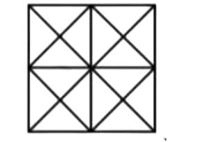
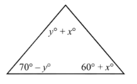
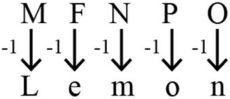
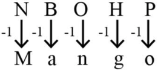
ব্যাখ্যা ও সঠিক উত্তর দেখুন
সঠিক উত্তর: (ক) 19.32 সে.মি
ব্যাখ্যা: ২০২৫ সালটি ৪ দিয়ে নিঃশেষে বিভাজ্য নয়। তাই ২০২৫ সালটি একটি সাধারণ বছর (Leap Year নয়)। সুতরাং, ফেব্রুয়ারি ২০২৫ মাসটি ২৮ দিনের। মোট পরিমাণ = গড় × মোট দিন। ‣দনিক গড় বৃষ্টিপাত = ০.৬৯ সে.মি.; মোট দিন = ২৮। মোট বৃষ্টিপাত = ০.৬৯ × ২৮ সে.মি. = ১৯.৩২ সেন্টিমিটার (উত্তর)
ব্যাখ্যা: তিনটি ডাকবাক্সে ৫টি চিঠি ফেলার উপায় = nr = 35 = 243
প্রশ্ন ১৩৩২সমন্বিত ৮টি ব্যাংক ও ১টি আর্থিক প্রতিষ্ঠান - (সিনিয়র অফিসার): ২০২৫
Count the number of tringles and squares in the following figure:
ব্যাখ্যা ও সঠিক উত্তর দেখুন
সঠিক উত্তর: (গ) 44 traingles 10 squares
ব্যাখ্যা: এই প্রশ্নের বিশদ তথ্য ও প্রাসঙ্গিক সূত্রাবলি অধ্যায়ের শুরুতে দেওয়া রিভিশন নোট ও স্কেচনোটে অন্তর্ভুক্ত রয়েছে।
প্রশ্ন ১৩৩৩Janata Bank PLC - (Officer): 2025
In the triangle, what is the value of x?
ব্যাখ্যা ও সঠিক উত্তর দেখুন
সঠিক উত্তর: (ক) 25
ব্যাখ্যা: এই প্রশ্নের বিশদ তথ্য ও প্রাসঙ্গিক সূত্রাবলি অধ্যায়ের শুরুতে দেওয়া রিভিশন নোট ও স্কেচনোটে অন্তর্ভুক্ত রয়েছে।
প্রশ্ন ১৩৩৪৪৭তম বিসিএস প্রিলি: (মানসিক দক্ষতা)
যদি MFNPO অথর্ 'Lemon' হয়, তবে NBOHP অথর্ কী?
ব্যাখ্যা ও সঠিক উত্তর দেখুন
সঠিক উত্তর: (ক) Mango
ব্যাখ্যা: সুতরাং
প্রশ্ন ১৩৩৫৪৭তম বিসিএস প্রিলি: (মানসিক দক্ষতা)
হাত, চোখ ও মস্ত্মিষ্‥ের কাযার্বলি এতটাই --------- যে ‣শশব কালের প্রথম দিকে হাতের ব্যবহার সম্পূর্ণ -------বিকাশকে ত্বরান্বিত করতে সাহায্য করে। উপরের ফাঁকা যায়গাগুলো নিম্নে উলিল্লখিত জোড়াশব্দ দিয়ে পূরণ করুন।
ব্যাখ্যা ও সঠিক উত্তর দেখুন
সঠিক উত্তর: (ঘ) ঘনিষ্টভাবে যুক্ত - প্রত্যক্ষণমূলক
ব্যাখ্যা: হাত, চোখ ও মস্ত্মিষ্‥ের কাযার্বলি যদি ঘনিষ্ঠভাবে যুক্ত থাকে তবে শিশুর প্রত্যক্ষণমূলক বিকাশ ত্বরান্বিত হয়। অপশনের বাকী শব্দগুলো শূন্যস্থানে যথাথর্ নয়।
প্রশ্ন ১৩৩৬৪৭তম বিসিএস প্রিলি: (মানসিক দক্ষতা)
কোনটি প্রশ্নবোধক চিহ্নের স্থলাভিষিক্ত হবে?
ব্যাখ্যা ও সঠিক উত্তর দেখুন
সঠিক উত্তর: (গ) ৯
ব্যাখ্যা: ১৮+১২+২০ = ৫০১০= ৫; ১৬+১৪+৩০= ৬০১০= ৬ এবং ৪৫+১৮ + ২৭ = ৯০১০ = ৯
প্রশ্ন ১৩৩৭৩৭তম বিসিএস (লিখিত); ৪৭তম বিসিএস
প্রশ্ন চিহ্নিত ঘরে কোন সংখ্যাটি বসবে? ১৭ ৮ ৫ ৫ ১৩ ৭ ৫ ৪ ৬ ১২ ৬ ৩ ১০ ৬ ৪ ?
ব্যাখ্যা ও সঠিক উত্তর দেখুন
সঠিক উত্তর: (ক) ৪
ব্যাখ্যা: উপরে প্রথম দুটি ১৭+৮ = ২৫ তারপরের দুটি ৫৫ = ২৫ (অথার্ৎ প্রথম দুটির যোগফল = পরের দুটির গুণফল); ২য় লাইনে ১৩+৭ = ২০ এবং ৫৪ = ২০ সমান, ৩য় লাইনে ৬+১২ = ১৮ এবং ৬৩ = ১৮ সুতরাং শেষের লাইন ১০+৬ = ১৬ এবং ৪৪ = ১৬ হবে। তাহলে উত্তর: ১৬৪ = ৪।
প্রশ্ন ১৩৩৮৪৮তম বিসিএস
যদি P = 16 এবং TAP = 37 হয় তবে CUP = কত?
ব্যাখ্যা ও সঠিক উত্তর দেখুন
সঠিক উত্তর: (ক) 40
ব্যাখ্যা: ইংরেজি বণর্মালার বণর্ক্রমে P এর অবস্থান 16, T এর অবস্থান 20, A এর অবস্থান 1. TAP = 20 + 1 + 16 = 37. CUP = 3 + 21 + 16 = 40
নিচের ধারার পরবতীর্ সংখ্যা কোনটি? ১, ৯, ৫, ৪৯, .....
ব্যাখ্যা ও সঠিক উত্তর দেখুন
সঠিক উত্তর: (খ) ৯
ব্যাখ্যা: সামাধান: এখানে প্রদত্ত ধারটি = ১, ৯, ৫,
প্রশ্ন ১৩৪১বিভিন্ন মন্ত্রণালয় ও বিভাগ ২০২৫-২০২৬
.. = ১, ৩, ৫, ৭..... অথার্ৎ এটি একটি বিজোড় সংখ্যার ধারা। তাহলে ৭ এর পরের বিজোড় সংখ্যাটি হবে = ৯।
ব্যাখ্যা ও সঠিক উত্তর দেখুন
সঠিক উত্তর: (ক) বিকল্প ১
ব্যাখ্যা: এই প্রশ্নের বিশদ তথ্য ও প্রাসঙ্গিক সূত্রাবলি অধ্যায়ের শুরুতে দেওয়া রিভিশন নোট ও স্কেচনোটে অন্তর্ভুক্ত রয়েছে।
প্রশ্ন ১৩৪২৪৮তম বিসিএস
২ ঘণ্টা ৪০ মিনিট ৬ ঘণ্টার কত অংশ?
ব্যাখ্যা ও সঠিক উত্তর দেখুন
সঠিক উত্তর: (গ) ৪ ৯
ব্যাখ্যা: ২ ঘণ্টা = ২ ৬০ = ১২০ মিনিট। ২ ঘণ্টা ৪০ মিনিট = (১২০ + ৪০) = ১৬০ মিনিট ৬ ঘণ্টা = ৬ ৬০ = ৩৬০ মিনিট ২ ঘণ্টা ৪০ মিনিট ৬ ঘণ্টার = ১৬০ ৩৬০ = ৪ ৯ অংশ (উত্তর)
প্রশ্ন ১৩৪৩৪৯তম বিসিএস
যদি গতকাল শুক্রবার হতো, তাহলে আজ থেকে ৮১তম দিন কি বার হবে?
ব্যাখ্যা ও সঠিক উত্তর দেখুন
সঠিক উত্তর: (খ) বুধবার
ব্যাখ্যা: সামাধান: যেহেতু গতকাল শুক্রবার, তাই আজ শনিবার ১ম দিন শনিবার হলে ৭১১ = ৭৭তম দিনও শনিবার হবে। সুতরাং ৮১তম দিন হবে = ৭৭তম দিন + ৪ দিন = শনিবার + ৪ দিন = বুধবার
প্রশ্ন ১৩৪৪৫০তম বিসিএস
এখন জানুয়ারি মাস হলে এখন থেকে ১০০ মাস পর কোন মাস হবে?
ব্যাখ্যা ও সঠিক উত্তর দেখুন
সঠিক উত্তর: (ক) মে
ব্যাখ্যা: যেহেতু এক বছর সমান ১২ মাস, তাই ১০০ মাসকে ১২ দিয়ে ভাগ করে আমরা অবশিষ্ট মাসটি বের করব: ৫ ১২ ২০ ১৮ ৬ ১৪ ৩০ ১৬ ? ১৮ ২৭ ৪৫ ১০০ কে ১২ দিয়ে ভাগ করলে: ১০০ ÷ ১২ = ৮ (ভাগফল) এবং অবশিষ্ট থাকে ৪। অথার্ৎ, ৮ বছর পূর্ণ হওয়ার পর আরও ৪ মাস অতিরিক্ত সময় থাকবে। এখন বতর্মান মাস (জানুয়ারি) থেকে এই ৪ মাস গুনে গেলেই আমরা উত্তর পেয়ে যাব: জানুয়ারি + ১ মাস = ফেব্রুয়ারি; জানুয়ারি + ২ মাস = মাচর্ জানুয়ারি + ৩ মাস = এপ্রিল; জানুয়ারি + ৪ মাস = মে
প্রশ্ন ১৩৪৫৪৯তম বিসিএস
১ জন লোক ১টা কলা ১ মিনিটে খেতে পারে। তাহলে ৫ জন লোকের ৫টা কলা খেতে কত মিনিট লাগবে?
ব্যাখ্যা ও সঠিক উত্তর দেখুন
সঠিক উত্তর: (গ) ১
ব্যাখ্যা: সামাধান: ১ জন লোকের ১টি কলা খেতে সময় লাগে = ১ মিনিট ১ জন লোকের ৫টি কলা খেতে সময় লাগে = ৫১ মিনিট ৫ জন লোকের ৫টি কলা খেতে সময় লাগে = ৫১ ১ মি. = ১মি.
প্রশ্ন ১৩৪৬৫০তম বিসিএস
এহসান টেবিলের উপর চায়ের কাপের হ্যান্ডেলটি পূবির্দকে করে রাখল। সে ঘড়ির কাঁটা যেদিকে ঘোরে সেদিকে চায়ের কাপটি ১৮০° ঘোরালো। এখন চায়ের কাপের হ্যান্ডলটি থাকবে:
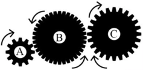
ব্যাখ্যা ও সঠিক উত্তর দেখুন
সঠিক উত্তর: (ক) পশ্চিম দিকে
ব্যাখ্যা: চায়ের কাপের হ্যান্ডেলটি প্রথমে ছিল পূবর্ (East) দিকে। কাপটি ঘড়ির কাঁটার দিকে (Clockwise) ১৮০° ঘোরানো হলো। আমরা জানি, যেকোনো বস্তুকে ১৮০° ঘোরালে সেটি তার ঠিক বিপরীত দিকে চলে যায় (তা ঘড়ির কাঁটার দিকে হোক বা বিপরীত দিকে)। পূবর্ দিকের ঠিক বিপরীত দিক হলো পশ্চিম (West)। যেহেতু ১৮০° মানে একটি সরলরেখা বরাবর উল্টো দিকে ঘুরে যাওয়া, তাই হ্যান্ডেলটি এখন পশ্চিম দিকে মুখ করে থাকবে।
প্রশ্ন ১৩৪৭৪৭তম বিসিএস প্রিলি: (মানসিক দক্ষতা)
একটি গিয়ার ট্রেনে তিনটি গিয়ার আছে, গিয়ার 'এ' এর ১২টি দাঁত, গিয়ার 'বি' এর ৩৬টি দাঁত, এবং গিয়ার 'সি' এর ২৪টি দাঁত আছে। যদি গিয়ার 'এ' কে ঘড়ির কাঁটা যেদিকে ঘোরে সেদিকে ঘোরানো হয়, তাহলে গিয়ার 'সি' কোন দিকে ঘুরবে?
ব্যাখ্যা ও সঠিক উত্তর দেখুন
সঠিক উত্তর: (ক) ঘড়ির কাঁটার দিকে
ব্যাখ্যা: A গিয়ারটি ঘড়ির কাঁটার দিকে ঘুরলে এর সাথে যুক্ত 'B' গিয়ারটি ঘুরবে ঘড়ির কাঁটার বিপরীত দিকে। 'B' গিয়ারের দিক ঘড়ির কাঁটার বিপরীত দিকে হওয়ায় এর সাথে যুক্ত 'C' গিয়ারটি ঘুরবে ঘড়ির কাঁটার দিকে।
প্রশ্ন ১৩৪৮৪৯তম বিসিএস
একটি যান্ত্রিক গিয়ারের চাকা ছোট হলে সংযুক্ত অবস্থায় বড়টির চেয়ে ছোট চাকাটি কিভাবে ঘুরবে?
ব্যাখ্যা ও সঠিক উত্তর দেখুন
সঠিক উত্তর: (খ) জোরে
ব্যাখ্যা: সামাধান: বড় চাকাটি একবার ঘুরলে, ছোট চাকাটি তার আকার অনুযায়ী বেশি বার ঘুরবে কারণ ছোট চাকাটির পরিধি কম। সুতরাং সংযুক্ত অবস্থায় বড়টির চেয়ে ছোট চাকাটি জোরে ঘুরবে।
প্রশ্ন ১৩৪৯বিভিন্ন মন্ত্রণালয় ও বিভাগ ২০২৫-২০২৬
নিচের চিত্রে BC এর মান কত? ]৪৮তম বিসিএস]
ব্যাখ্যা ও সঠিক উত্তর দেখুন
সঠিক উত্তর: (ক) 9 মিটার
ব্যাখ্যা: C ভারসাম্য কেন্দ্র, AC প্রান্তের ওজন × AC প্রান্তের ভারসাম্য = BC প্রান্তের ওজন × BC প্রান্তের দূরত্ব বা, 6 × 6 = 4 × BC বা, BC = 36 4 ⸫ BC = 9 মিটার। (উত্তর)
প্রশ্ন ১৩৫০৪৮তম বিসিএস
নিচের চিত্রে মোট কয়টি ত্রিভুজ আছে?
ব্যাখ্যা ও সঠিক উত্তর দেখুন
সঠিক উত্তর: (খ) ৫টি
ব্যাখ্যা: A C B 6 কেজি ওজন লব্ধি 4 কেজি ওজন A B C E D চিত্রে, সাধারণ ত্রিভুজ ABE, BDE এবং ADC অথার্ৎ মোট ৩টি। ২টি ত্রিভুজ নিয়ে গঠিত ত্রিভুজ ABD অথার্ৎ ১টি। তিনটির সমন্বয়ে গঠিত ত্রিভুজ ABC অথার্ৎ ১টি। মোট ত্রিভুজের সংখ্যা: ৩ + ২ + ১ = ৫টি ত্রিভুজ।
প্রশ্ন ১৩৫১৪৭তম বিসিএস (মানসিক দক্ষতা)
একজন ব্যক্তি ৪ মাইল উত্তরে, ১২ মাইল পূবের্ এবং তারপরে ১২ মাইল উত্তরে ভ্রমণ করেন। তিনি শুরুর বিন্দু থেকে কত দূরে আছেন?
পানিতে প্রদত্ত প্রতিচ্ছবিগুলোর সাথে কোনটি ইংরেজিতে একটি শব্দের সাথে সাদৃশ্যপূর্ণ?
ব্যাখ্যা ও সঠিক উত্তর দেখুন
সঠিক উত্তর: (ঘ) বিকল্প ৪
ব্যাখ্যা: এই প্রশ্নের বিশদ তথ্য ও প্রাসঙ্গিক সূত্রাবলি অধ্যায়ের শুরুতে দেওয়া রিভিশন নোট ও স্কেচনোটে অন্তর্ভুক্ত রয়েছে।
প্রশ্ন ১৩৫৩৪৭তম বিসিএস প্রিলি: (মানসিক দক্ষতা)
পাঁচজন ব্যক্তি গোল হয়ে বসে আছে এবং মাঝখানে তাকিয়ে তাস খেলছে। রাজিবের বামদিকে রয়েছে মুকুল, বিজয় রয়েছে অনিক ও নুরুলের মাঝখানে এবং অনিকের ডান দিকে। তাহলে নুরুলের ডান দিকে কে রয়েছে?
ব্যাখ্যা ও সঠিক উত্তর দেখুন
সঠিক উত্তর: (গ) মুকুল
ব্যাখ্যা: এই প্রশ্নের বিশদ তথ্য ও প্রাসঙ্গিক সূত্রাবলি অধ্যায়ের শুরুতে দেওয়া রিভিশন নোট ও স্কেচনোটে অন্তর্ভুক্ত রয়েছে।
প্রশ্ন ১৩৫৪৩৪তম বিসিএস লিখিত; ৪৭তম বিসিএস
নিচের চিত্রে মোট কতটি ত্রিভুজ আছে?
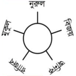
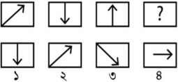
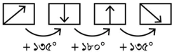
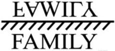
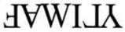
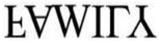
ব্যাখ্যা ও সঠিক উত্তর দেখুন
সঠিক উত্তর: (খ) ১৬
ব্যাখ্যা: যেহেতু ৩টি রেখা একপাশের কোণ থেকে অন্য বাহুগুলোকে ছেদ করে বিপরীত বাহুর সাথে মিলিত হয়েছে। তাই সূত্রানুযায়ী মোট ত্রিভুজের সংখ্যা হবে ২ (২২২) = ২৮ = ১৬টি। বিকল্প নিয়মে বিস্ত্মারিত সমাধান। সবচেয়ে ছোট ছোট ত্রিভুজ আছে ৬টি যথা, ১,২,৩,৪,৫,৬ ২টি করে ছোট ত্রিভুজ নিয়ে ত্রিভুজ আছে = ৩টি (১+২), (৩+৪), (৫+৬), ৩টি করে নিয়ে ত্রিভুজ আছে ৬টি। যথা: (১+২+৩), (৪+৫+৬), (২+৩+৪), (১+৬+৫), (৩+৪+৫), (৬+১+২) এবং সবগুলো ত্রিভুজ অথার্ৎ ৬টি মিলে সবথেকে বড় ১টি। সবের্মাট ৬+৩+৬+১ = ১৬টি।
প্রশ্ন ১৩৫৫৪৭তম বিসিএস প্রিলি: (মানসিক দক্ষতা)
নিচের ছবিগুলোর পাশের প্রশ্নবোধক চিহ্নের স্থানে কোন বিকল্পটি বসবে?
ব্যাখ্যা ও সঠিক উত্তর দেখুন
সঠিক উত্তর: (গ) ৩
ব্যাখ্যা: এই প্রশ্নের বিশদ তথ্য ও প্রাসঙ্গিক সূত্রাবলি অধ্যায়ের শুরুতে দেওয়া রিভিশন নোট ও স্কেচনোটে অন্তর্ভুক্ত রয়েছে।
প্রশ্ন ১৩৫৬৪৭তম বিসিএস (মানসিক দক্ষতা)
A যদি B এর সাথে খাপখায় যেমনভাবে C, D এর সাথে, তাহলে নিচের জোড়াগুলোর মধ্যে কোন জোড়া যুক্তিযুক্তভাবে খাপ খায়?
ব্যাখ্যা ও সঠিক উত্তর দেখুন
সঠিক উত্তর: (গ) খাদ্য যেমন খাবারের জন্য, পানি তেমনি পান করার জন্য
ব্যাখ্যা: পযার্য়ক্রমে A এর পরে আসে B; তেমনি D আসে C এর পরে। সে হিসেবে, খাদ্য যেমন খাবারের জন্য, পানি তেমনি পান করার জন্য পযার্য়ক্রমে আসে।
প্রশ্ন ১৩৫৭৪৭তম বিসিএস প্রিলি: (মানসিক দক্ষতা)
যখন দুটি বস্তুর সংঘষর্ হয় এবং তারা একসাথে লেগে থাকে, তখন তাকে কোন ধরনের সংঘষর্ বলে?
ব্যাখ্যা ও সঠিক উত্তর দেখুন
সঠিক উত্তর: (গ) অস্থিতিস্থাপক সংঘষর্
ব্যাখ্যা: যে সংঘষের্ দুটি বস্তুর গতিশক্তি সংরক্ষিত হয় না, বরং তা তাপ, শব্দ প্রভৃতিতে রূপান্তরিত হয় তাকে অস্থিতিস্থাপক সংঘষর্ বলে। এ ধরনের সংঘষের্ ভরবেগ সংরক্ষিত থাকে এবং সংঘষের্র পর বস্তুগুলো একটি বস্তুর ন্যায় আচরণ করে বা লেগে থাকে।
প্রশ্ন ১৩৫৮৪৭তম বিসিএস প্রিলি: (মানসিক দক্ষতা)
পৃথিবীর কক্ষপথের বিভিন্ন বিন্দু থেকে দেখলে কোন ঘটনার কারণে একটি নক্ষত্রের অবস্থানের আপাত পরিবতর্ন ঘটে?
ব্যাখ্যা ও সঠিক উত্তর দেখুন
সঠিক উত্তর: (ঘ) প্যারালেক্স
ব্যাখ্যা: জ্যোতিবির্দ্যায় প্যারালেক্স হলো দুটি পৃথক বিন্দু থেকে একজন পযের্বক্ষকের দ্বারা দেখা একটি মহাকাশীয় বস্তুর দিকের পাথর্ক্য। প্যারালেক্স পরিমাপ সরাসরি পৃথিবী (ভূকেন্দ্রিক প্যারালেক্স) এবং সূযর্ (সূযের্কন্দ্রিক প্যারালেক্স) থেকে বস্তুর দূরত্ব নিণের্য়র জন্য ব্যবহৃত হয়। আবার, প্যারালেক্স ত্রুটি (Parallax Error) বলতে বুঝায় ভিন্ন অবস্থান থেকে পযের্বক্ষণের জন্য বস্তুর অবস্থান বা পরিমাপে যে ত্রুটি পাওয়া যায়। কোণ বা ‣দঘ্যর্ পরিমাপের ক্ষেত্রে সরাসরি না দেখে কোনো একপাশ থেকে দেখলে সঠিক মাপ দেখা যায় না। একই ঘটনা পরিলক্ষিত হয় পৃথিবীর কক্ষপথের বিভিন্ন বিন্দু থেকে একটি নক্ষত্রের অবস্থান নিণের্য়।
প্রশ্ন ১৩৫৯৫০তম বিসিএস
জারিনের জন্ম ২৯ ফেব্রুয়ারি। তার জন্মগ্রহণের সাল কোনটি হতে পারে?
ব্যাখ্যা ও সঠিক উত্তর দেখুন
সঠিক উত্তর: (খ) ২০০৪
ব্যাখ্যা: ২৯ ফেব্রুয়ারি তারিখটি শুধুমাত্র অধিবষর্ বা Leap Year-এ আসে। আমরা জানি, সাধারণ নিয়ম অনুযায়ী যে সালগুলো ৪ দিয়ে নিঃশেষে বিভাজ্য, সেগুলোই লিপ ইয়ার। ২০০২: ৪ দিয়ে বিভাজ্য নয়। ২০০৪: এটি ৪ দিয়ে বিভাজ্য (২০০৪ ÷ ৪ = ৫০১)। সুতরাং, এটি একটি লিপ ইয়ার। ২০০৬: ৪ দিয়ে বিভাজ্য নয়। ২০১০: ৪ দিয়ে বিভাজ্য নয়। যেহেতু ২৯ ফেব্রুয়ারি তারিখটি শুধুমাত্র লিপ ইয়ারে পাওয়া যায়, তাই জারিনের জন্ম সাল অবশ্যই ২০০৪ হতে পারে।
প্রশ্ন ১৩৬০৫০তম বিসিএস
কোনটি মানুষকে লক্ষ্যবস্তুর দিকে পরিচালিত করে?
ব্যাখ্যা ও সঠিক উত্তর দেখুন
সঠিক উত্তর: (খ) প্রেষণা
ব্যাখ্যা: মানুষের কোনো কাজ করার পেছনে যে অভ্যন্তরীণ শক্তি বা চালিকাশক্তি কাজ করে, তাকেই প্রেষণা বলা হয়। প্রেষণা প্রক্রিয়াটি মূলত তিনটি ধাপ অনুসরণ করে: অভাববোধ বা প্রয়োজন (Need): এটি প্রেষণার শুরু। যখন কোনো কিছুর অভাব অনুভূত হয়। তাড়না (Drive): অভাব পূরণের জন্য মনের মধ্যে যে অস্থিরতা ঙ্তরি হয়। লক্ষ্যবস্তু লাভ (Goal): প্রেষণা মানুষকে নিদির্ষ্ট সেই লক্ষ্যের দিকে ধাবিত করে যাতে অভাব পূরণ হয়।
প্রশ্ন ১৩৬১৫০তম বিসিএস
লামিয়া একটি শ্রেণীর সামনে থেকে নবম এবং পিছন থেকে ৩৬তম হলে শ্রেণীতে শিক্ষাথীর্ কতজন?
ব্যাখ্যা ও সঠিক উত্তর দেখুন
সঠিক উত্তর: (ক) ৪৪
ব্যাখ্যা: মোট শিক্ষাথীর্ = (সামনে থেকে অবস্থান + পিছন থেকে অবস্থান) ১ সামনে থেকে লামিয়ার অবস্থান = ৯তম; পিছন থেকে লামিয়ার অবস্থান = ৩৬তম; সুতরাং, শ্রেণীতে মোট শিক্ষাথীর্ = (৯ + ৩৬) ১ = ৪৫ ১= ৪৪ জন নোট: যখন আমরা সামনে থেকে ৯ এবং পিছন থেকে ৩৬ যোগ করি, তখন লামিয়াকে দুইবার গণনা করা হয় (একবার সামনে থেকে গুনলে সে ৯ নম্বরে পড়ে, আবার পিছন থেকে গুনলে সে ৩৬ নম্বরে পড়ে)। একই ব্যক্তিকে দুইবার গোনা যাবে না বলে মোট যোগফল থেকে ১ বিয়োগ করতে হয়।
প্রশ্ন ১৩৬২৫০তম বিসিএস
একটি বাক্সের মধ্যে একটি পেন্সিল আছে। বাক্সটি একটি তাকের উপরে অবস্থান করছে। তাকটি জানালার নিচে অবস্থান করছে। তাহলে নিচের কোন বাক্যটি উপরের বণর্নার জন্য প্রযোজ্য হবে?
ব্যাখ্যা ও সঠিক উত্তর দেখুন
সঠিক উত্তর: (ক) পেন্সিলটি জানালার নিচে আছে
ব্যাখ্যা: ১. সবার নিচে আছে জানালা। ২. জানালার নিচে তাক (Shelf)। ৩. তাকের উপরে বাক্স। ৪. বাক্সের ভেতরে পেন্সিল। এই ক্রম অনুযায়ী নিচের সিদ্ধান্তগুলো নেওয়া যায়: তাকটি জানালার নিচে: এটি সরাসরি প্রশ্নেই বলা আছে। বাক্সটি জানালার নিচে: যেহেতু বাক্সটি তাকের ওপর এবং তাকটি জানালার নিচে, তাই বাক্সটিও জানালার নিচেই অবস্থিত। পেন্সিলটি জানালার নিচে: একইভাবে, পেন্সিলটি যেহেতু বাক্সের ভেতরে, তাই সেটিও জানালার নিচেই আছে। অথার্ৎ পেন্সিলটি জানালার নিচে আছে।
প্রশ্ন ১৩৬৩৫০তম বিসিএস
একটি আয়না থেকে একটি বস্তু আয়নার পৃষ্ঠ থেকে পৃষ্ঠের লম্ব বরাবর সেকেন্ডে ১০ সে.মি. বেগে চলতে শুরু করল। ৪ সেকেন্ড পর বস্তুটি ও তার প্রতিবিম্বের মধ্যে দূরত্ব কত হবে?
ব্যাখ্যা ও সঠিক উত্তর দেখুন
সঠিক উত্তর: (গ) ৮০ সে.মি.
ব্যাখ্যা: আয়না থেকে বস্তুর দূরত্ব (u) এবং আয়না থেকে প্রতিবিম্বের দূরত্ব (v) সবসময় সমান হয়। অথার্ৎ, আয়না থেকে বস্তু যত দূরে থাকবে, আয়নার ভেতরে প্রতিবিম্বটিও ঠিক ততটুকু দূরেই গঠিত হবে। বস্তুটি ১০ সে.মি./সেকেন্ড বেগে ৪ সেকেন্ড চলেছে। সুতরাং, ৪ সেকেন্ড পর আয়না থেকে বস্তুর দূরত্ব d = বেগ × সময় = ১০ × ৪ = ৪০ সে.মি. যেহেতু আয়না থেকে বস্তুর দূরত্ব ৪০ সে.মি.তাই আয়নার পেছনে প্রতিবিম্বের দূরত্বও হবে ৪০ সে.মি.। এখন, বস্তু থেকে প্রতিবিম্বের মোট দূরত্ব হবে:বস্তুর দূরত্ব + প্রতিবিম্বের দূরত্ব = ৪০ সে.মি. + ৪০ সে.মি. = ৮০ সে.মি. উত্তর: ৪ সেকেন্ড পর বস্তু ও তার প্রতিবিম্বের মধ্যে দূরত্ব হবে ৮০ সে.মি.।
প্রশ্ন ১৩৬৪৫০তম বিসিএস
সমান ঙ্দঘ্যের্র দুইটি দড়ির একটি দিয়ে আয়তক্ষেত্রাকার বেষ্টনী ঙ্তরী করা হয় এবং অপরটি দিয়ে বর্গেক্ষত্রাকার বেষ্টনী ঙ্তরী করা হয়। কোন তথ্যটি সত্য?
ব্যাখ্যা ও সঠিক উত্তর দেখুন
সঠিক উত্তর: (খ) বর্গেক্ষত্রের ক্ষেত্রফল আয়তক্ষেত্রের চেয়ে বেশী
ব্যাখ্যা: যখন দুটি ভিন্ন আকৃতির ক্ষেত্রের পরিসীমা (Perimeter) সমান থাকে, তখন তাদের মধ্যে যেটির বাহুগুলো একে অপরের যত কাছাকাছি থাকে, তার ক্ষেত্রফল তত বেশি হয়। একটি বর্গেক্ষত্রের চারটি বাহুই সমান। একটি আয়তক্ষেত্রের ঙ্দঘ্যর্ ও প্রস্থ ভিন্ন হয়। যেহেতু বর্গেক্ষত্রের বাহুগুলো আয়তক্ষেত্রের তুলনায় একে অপরের সবচেয়ে নিকটবতীর্ (অথার্ৎ সমান), তাই একই ঙ্দঘ্যের্র দড়ি বা সমান পরিসীমার ক্ষেত্রে বর্গেক্ষত্রের ক্ষেত্রফলই সবসময় বড় হবে।